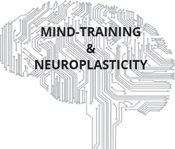

THIRD EDITION
STUTTERING & ANXIETY
SELF-CURES:
What 1,000+ Stutterers Taught Me

“If I can say ONE word, anywhere, anytime,
I can say ANY word, anywhere, anytime.”
Author’s Credo
© Lee G. Lovett & Peace Love Reason LLC
2016, 2017, 2019
All rights to this book are reserved by the above, including the right to reproduction in whole or in part in any form, except for brief quotations for review purposes only.
Third Edition
ISBN: 9781513620732 (Hardback)
ISBN: 9781545478011 (Paperback)
ISBN: 9781513620725 (eBook)
Cover designer: JaxonGlobal.com
Book interior design & eBook conversion by manuscript2ebook.com
This Book is Dedicated
To You
“Most of us go through life
knowing only half of ourselves…
So, we use only half of our abilities…
We suffer –
because we are strangers to ourselves.”
“We have free choice:
to accept or reject thoughts.
Nothing compels us to think anything
except our own desires.
Use your mental switch
to dictate your thoughts…
Believe that you can improve
and you will.”
Frank S. Caprio, M.D.
Helping Yourself with Psychiatry
Prentice Hall, 1957 et seq
(Emphases supplied.)
Table of Contents
Foreword by Paul Brocklehurst, Ph.D.
What 1,000+ Stutterers Taught Me
Stop Stuttering and/or Self-Cure?
Author’s Preface: Bossing Your Mind…
Publishers’s Introduction: Stuttering..Blessing
PART II THE WAR AGAINST STUTTERING
Section A Stuttering & Neurology
1.0When Stuttering Became My Life-Crisis
2.0The Cause of Stuttering: The Mind
3.0Mind-Control: Neuroplasticity
Section B The Six Step SELF-Cure
Overview of the Self-Cure
4.4Don’t Avoid Speaking -- BUT
4.6Neuroplastic Reasons to Read Aloud
4.7Let Your URGE Do the Talking
4.8Talk in Your Stutter-Free Zones
5.0STEP TWO: My Speech “Crutches”
What Is a Crutch & Why Use One?
5.1Skipping First Letters/Syllables
5.4Insert Alternate Thoughts/Sounds
5.5Tell a Story about the Word
B.Voices to String Words Together
5.11When All Else Fails; Talking Less
5.14How to Practice the Crutches
5.18Speaking in Short Increments
5.20The Mid-Sentence Stutterer
5.21The Doomed-to-Fail Stutterer
5.23The Can’t START Talking Stutterer
5.27The Biggest Single Problem
5.31Keep It Light and Modulate
6.0STEP THREE: The Vocabulary-Asset
6.2Examples of Vocabulary Usage
6.4Fast Ways to Memorize Words
7.0STEP FOUR: Get Lost in Your Ideas & Emotions; Build a Fear-Free Memory Bank
7.2Seven Ways to Maximize Ideas
8.1NEUROPLASTICITY: Medicine’s Future
8.3Becoming the Boss of Your Mind
8.8Daily Treatments in General
8.10Examples of Auto Suggestions
8.11How Much Time for Daily AST’s
8.12Idle Time or Bonus Treatments
8.13Automatic Response Treatments
8.16Why Auto Suggestion Will Work
8.18Think-Visualize-Verbalize-Do
8.19Conscious v. Subconscious Mind
9.0STEP SIX: Mental Imagery: AS & SH
9.2Lessons from a Psychiatrist
9.4Learning to Hypnotize Yourself
11.0What 1,000+ Stutterers Taught Me
11.2What PWS Taught Me in General
11.10AS-SH, The Greatest Aids of All
11.11Crutches Prevent Word-Planning and Relapses
11.12A Plea to All School Teachers
12.012 Step Plan to Stop Stuttering
12.1Speak Where You Are Fluent
12.5Be a Determined Speech Cop
12.6Be as Expressive as Possible
12.7Don’t Wrestle with First Words
12.8Simulate Pressured Conversations
12.10Reject Perfectionism; Accept Yourself
12.11You Must Acknowledge Your Own Success
13.0The Seven Cardinal Sins of PWS
13.2Don’t Repeat Stuttered Words
13.3Don’t Try to Hold the Floor
13.4Don’t Announce Your Stuttering
13.5Don’t Create More SMs Than FMs
13.6Never Publicly Wrestle a Block
15.0Healing the Whole Person Neurologically
15.1More Than Speech Needs Help
15.2A Psychiatrist’s Encouraging Words
15.3The “Normality” of Mental Malaise
15.5Mind Training, a Way of Life
15.6Leaving Our Minds to Chance
15.7Taking Responsibility for Thoughts
16.0The Post-Cure Program: Beating Fear
16.5Learning to Speak Like a King
17.6Recommending Therapy, Not Pills
17.8You Must Do This to Beat It
17.11The End-Game: Relaxed Fluency
17.12Communicating with Author
18.0“Speech Anxiety Anonymous”
19.0Video Library of Coaching Sessions
PART I
PREAMBLE
FOREWORD
By
Paul Brocklehurst, Ph.D.
Experimental Psychologist and Speech Researcher
A few months ago, one of my clients mentioned to me that Lee Lovett had written a book that seemed to be advocating an approach to speech-self-therapy that was very similar to my own. So, I bought Lee’s book (Stuttering & Anxiety Self-Cures, 2nd Edition), and was delighted to find that Lee had indeed described, in beautifully clear and simple language, essentially the same combination of psychological approach and practical crutches that have enabled me to attain the level of fluency and confidence that I now have. It seems that the two of us have undergone parallel journeys and quite independently arrived at the same destination.
In his book, Lee highlights the need for three things: First, we need to have firm belief – or at minimum a very open mind to the view – that we can overcome stuttering; second, we need to hear massive amounts of fluency from our lips; and third, we need to learn a variety of “crutches” – simple pragmatic methods that we can rely on to enable us to get our messages across quickly and efficiently without stuttering, and in a way that does not sound abnormal or bizarre.
For many of us however, due to many painful past experiences, the belief in our underlying ability to speak without stuttering has become buried deep in our unconscious mind. To reignite this belief that we can stop stuttering, Lee guides the reader through two methods: Auto-suggestions and Self-Hypnosis.
Once reignited, this expectancy of success provides the necessary motivation to enable us to stop ourselves from creating new stutter memories and to thoroughly learn the crutches. And the crutches, once thoroughly learned, enable us to overcome our fear of stuttering. In this expanded, third edition of his book, Lee now introduces 12 (13) crutches and he stresses the vital importance of not becoming habituated to always using the same one.
In summary, Lee Lovett has developed a comprehensive, easy to follow approach to stuttering self-therapy which may bring lasting relief from stuttering and demolish its underlying iceberg of fears and anxieties. This approach worked for me. Despite many attempts at therapy, I remained a severe stutterer until age of 40. It was only after I adopted the approach and most of the crutches that Lee now teaches that my stutter went into remission. Now, twenty years later, it has not relapsed, and my fear of stuttering has completely vanished. Lee’s/ SAA’s coaching is completely free and available to anyone anywhere. I applaud his contribution and have decided to join his winning team at Speech Anxiety Anonymous (SAA) as member of its Advisory Board and as an SAA Coach, and I was also pleased to be the fiftieth PWSS (person who stopped stuttering) to post my Success Story in SAA’s Speech Hall of Fame.
It is my hope that, in time, the broader stuttering community will come to recognise that Lee’s/SAA’s approach offers a genuine and valuable alternative to the currently mainstream approaches, and that, for many adults who stutter, SAA’s approach can bring success where the mainstream approaches have failed.
In all events, I hope that you and many others will embrace Lee’s book as have I.
Paul Brocklehurst, Ph.D.
EMAIL-MESSAGE FROM A
MEDICAL STUDENT
[For privacy purposes, the email below omits the sender’s name, but it is an exact quote from a PWS-medical student whose first language is not English.]
From: [withheld]
Sent: Wednesday, August 22, 2018 6:09 AM
To: Lee Lovett
Subject: Your Breakthrough Book [Abridged]
“Your book is a medical breakthrough and I fear that such great Book wouldn’t be noticed, because 99% of people fear change and fear the unknown and don’t want to try new things. Such a loss, losing such a life-changing opportunity…I think you should propose your methods to a neuroscience or psychology department in any university …[It] will help Many MANY other people… mental disorders like stuttering or depression and even schizophrenia can’t be cured by pills or surgery. As you wrote in your book “the mind created such anomalies and these anomalies can be REALLY cured only by attacking their Root cause : THE MIND.” Your book is so underrated … you are a Pioneer in ‘stuttering field’… You are a fighter with genius… People who Skype with you don’t realise who they are talking to. A GENUIS…I can’t stop thinking about our Skypes; they lift my spirits. I cannot thank you enough. You are changing lives!!”
[Sender’s name withheld]
1,000+ Stutterers Taught Me?
1,000+ PWS? Really? Yes. That’s my candid and, I believe, understated guess. Since I released my 1st and 2nd Editions of this book, I have Skype-coached 2,500 sessions with people who stutter/PWS (a few hundred in 2016, 1,000+ in 2017 and roughly 1,500 in 2018), and made nearly 5,000 PWS-Friends and Followers on Facebook. I receive hundreds of communications weekly from PWS. I deal with all conceivable levels of speech anxiety spanning five continents and every identifiable culture, race, creed, gender, philosophy, and social and economic strata. So, yes; I’ll guess that via face-to-face Skype, email, texts, phone, Facetime, Facebook, Twitter, etc., 1,000+ PWS have contributed to this 3rd Edition, and I’ll wager that few, if any, have spent more hours, one-on-one, with PWS. I can get a free cup of coffee or tea most anywhere.
Coaching is learning, too, especially from such diverse sources, and learn I do. This new information and a relentless effort to explain things more clearly obsess me to release this 3rd Edition. I keep trying to present a book that, if mastered, can give fluency without personal coaching. I simply want speech-sufferers to find freedom from what I and my Mates have proved is a merciless but CONQUERABLE oppressor, Satan Stuttering.
Author’s Confession – and Celebration
I am not a healer nor a speech professional. I explain to people how I stopped stuttering and fearing it over four decades ago. Satanic threats of stuttering still come and go, however infrequently, but I crush them easily, and I enjoy doing it with my Crutches. So, NO ONE has caught me stuttering in 40+ years. I have trained my mind to truly LOVE to speak!
How did I accomplish this? The answers are in this book. Other readers of this book (who share their stories with me) are beating it, too. If we can beat it, so can you! We do not “control” our speech or try to “force” words; we don’t manipulate our breathing or tongues or do anything unnatural; we teach ourselves to manage and dictate our thoughts; we reshape our neuroplastic minds, using methods that stop stuttering and enable natural speech. We need NO PILLS to achieve this. To all the world, we are viewed as fluent, and we do not perceive ourselves as stutterers. In our minds and in the eyes of others, we are “cured”. We have turned the pernicious speech-carnivore upon its despicable self.
At last, the days of stuttering are numbered.
“It is time for a bold new beginning.”
VIRGIL, ROMAN POET, 30 BC
Why This 3rd Edition?
When I wrote the 200-page 1st Edition in 2015, I told my very personal, tortured story of stuttering. Six months after publishing that Edition in early 2016, a seemingly endless stream of PWS began to contact me. I learned so much from them that I published the 300-page 2nd Edition in spring 2017. By early 2019, after amassing 5,000 PWS-Friends/Followers on Facebook and communicating with 1,000+ and doing about 2,500 Skype-coaching sessions, and forming Speech Anxiety Anonymous/SAA to help as many PWS as we could, I had learned so much from the stories of other PWS that I had to write this 550-page 3rd Edition. It includes MAJOR revisions to all Sections plus all new (or completely rewritten) Sections on Crutches, Auto Suggestions, Mental Imagery, What PWS Taught Me, Post-Cure Program; and Video Library.
This 3rd Edition is intended to enable as many PWS as possible to stop stuttering with little or no verbal coaching. I and other SAA’s Coaches will coach as many as we can, and our Video Library of Coaching Sessions (now almost 700 but adding 100+ monthly) is helping many (over 25,000 views so far). The goal remains the same: Remove stuttering from this planet. My sweat and blood is on every page of this tome. All I want is to help YOU.
Silent Words
By
Alan Pritchard
Behind the smiles, behind the tears,
Are silent words that no one hears.
Conversations well thought out,
But censored through my pain and doubt.
So much of who is really me,
That most will never chance to see,
From thoughts to words, there’s compromise,
And speech becomes an enterprise.
Stuttering is not my choice.
I really have a lovely voice.
But words too often bond with dread,
And then so much is left unsaid.
I know quite well what I would say,
Though it may not always sound that way.
If you judge me by my speech alone,
The loss you face will be your own.
There is more to me than meets the ear;
There’s someone special living here.
[As posted on Stuttering Community
during National Stuttering Week, 2016]
“Stop Stuttering”
and/or
“Self-Cure”?
Socrates wisely taught us that all serious discourse should begin with a definition of the terms under discussion. In earlier Editions, the key term was “self-cure”, and it remains in the title of this book, as it would create havoc with Amazon worldwide to change the title. After I had published the 1st Edition, to my utter surprise, I learned that many in “the stuttering community” abhorred the word “cure” and rejected it as flatly impossible and even as insulting to their intelligence and as contrary to their pervasive acceptance of their stuttering – but, as I had stopped my own stuttering, I could not accept that dogma. “Error repeated, however often, remains error.” Justice Brandeis (1856-1941), U.S. Supreme Court.
In further support of curability, many of those who have stopped stuttering via my methods are equally militant in their insistence that they are “cured”!
Regardless, the word “cure” is such a hot button that I mitigate its use in this 3rd Edition and often use the term (and undeniable fact) that we have “stopped stuttering” in lieu of “cure”, but I haven’t purged every use of the word “cure”, nor should I, in deference to those who insist that they are “cured” by their own definition. In all events, call it what you will, when we say “stopped stuttering” or “cured”, we mean this:
Strangers no longer identify the PWS
(person who stutters) as a stutterer,
and
the PWSS (person who has stopped stuttering)
is able to say,
“I can avoid any stutter, block or silence
that would appear to be a disability.”
Fears of stuttering will die, too, but they take longer to extinguish than does the stuttering itself and they need to be addressed and are in Section 16. Threats may always come and go, but they become so easy (and even fun) to repel.
Throughout this book, we refer to those who meet the above, two tests as PWSS and/or as “Success Stories”. While many of these decline to publish their stories, even under a pseudonym, by early 2019, when this edition should be published, there should be 50+ Success Stories posted on Speech Anxiety Anonymous’ website (https://speechanxietyanonymous.org/). Probably another 50 have cured as well, but we didn’t ask them to post an SS in the early days or they declined for privacy-reasons. So, call it as you will, where else, on this planet, can you find demonstrable evidence of stutterers of all severities, ages, cultures, etc. who have stopped stuttering and who assert, and daily prove, that they can avoid any stutter or block anytime, anywhere? Some of these cures are now two years old. Again, fears take longer to die, but they do die! Relapses occur sometimes but are resolved. (See Sections 5.28 and Section 16.)
In sum, this book is not about semantics. It is about stopping stuttering permanently. As no one has caught me stuttering in over 40 years, and no one can catch me stuttering now, I’m Exhibit 1 that the methods in this book work, and the other PWSS Success Stories on SAA add several new “Exhibits” monthly as proof, some of which are already two years old and going strong. We rarely relapse – and I never have! Relapses are caused by not knowing the Crutches well enough or forgetting them. As I now type and edit this Edition (early 2019), we had been advised of several relapses, who jumped back on the Fluency Wagon after one or two Skypes. Anyone (who keeps the Crutches fresh by using them now and then when not needed) should not relapse. As “An ounce of prevention is worth a pound of cure”, we have a program to address this: Section 16, Post- Cure Program.
What Readers Wrote about Lee
In light of the general (and mistaken) view that stuttering cannot be stopped/cured, I am constrained to share some unsolicited comments of my PWS-Mates, which clearly suggest that cures are not only possible but should be accomplished in a very high percentage of cases.
Frankly, I fully expect to watch PWS stop their stuttering in every, single case, IF the PWS will work at it and stay with our program. The average case takes several months; the fastest has been one month (except for those believed to stopped stuttering by reading the book alone), and the longest, so far, approximates a year.
It took me five years to get to 90% and another ten years to get to 97%, and my lifetime to get to 99%, BUT no one has heard me stutter in over forty years – the last 1% is attributable to threats. Indeed, in my career, I became a frequent public speaker, giving some 48 speeches in one year, appearing on TV a half dozen times and on dozens of radio talk-shows, all decades ago and having nothing to do with speech anxiety. I have also coached public speaking, informally, to quite a few, including some politicians. I am living proof that a PWS can learn to speak fluently and to love to speak.
Now, in my third year of communicating with thousands of PWS Followers, I have learned as much or more than I have taught, for which I here give bountiful thanks, and it is this new knowledge that gives rise to the 3rd Edition of this book, chock full of wisdom from battle-scarred PWS in the trenches of stuttering.
With so many PWS “Friends” (scattered across five of the world’s continents), I have received written comments from myriad sources: book reviews, emails, Skype chats, text messages, Messenger notes and calls, Facetime calls, comments on Facebook, Twitter, and on and on. As this is NOT a commercial enterprise for me, I do not attempt to keep track of same, but, since so many PWS’ are such “Doubting Thomas’s” (“Stuttering is incurable”; “I can’t stop stuttering”; “I don’t need to be ‘fixed’”, etc.), it seems appropriate to include a sampling of unsolicited, written comments by PWS. The comments within brackets [ ] are my words. In no particular order, sample, PWS comments follow:
Consider this excerpt from a book review posted by an Aussie in September, 2018:
“If you stutter then just reading and following this one book is all you need to do to stop the habit. Lee is a lovely person who is sharing his learnings with everyone and wants to help everyone. Don’t go anywhere else, he and his team wants to help you. Just come and experience the love and care and be cured.”
Here’s what a beautiful California girl wrote to me in December 2018:
“Thank you so much for everything that you do for me and the other PWS – your book, the Skype sessions, email advice and just your pure passion in helping us win the battle against evil stuttering is making such a difference in our lives. You are an amazing and inspiring person. Your enthusiasm, optimism and love for life is infectious. I am grateful that our paths crossed and I will continue to put into action everything that you taught me.”
On Feb. 9, 2019, 14 Months AFTER he posted his Success Story on SAA, Nick from Canada wrote this: “Hey Lee, Just want to thank you ONCE AGAIN for the impact your methods have had on my life. I won a contest at a local radio station here in PEI, Canada. As winner…I had the opportunity to do an interview. I didn’t have to but I dismissed that old fear of stuttering and said why not, let’s do it! Although my speech has been great for quite a while now (I don’t even think about the concept of stuttering every day anymore), there was a TINY fear that I might not be able to get my name out while introducing myself to the radio station’s audience. I decided to use word linkage and said “Hello-my-name-is-Nick-Foran” at a natural pace but with ZERO hesitation between words. It worked great and the rest of the interview was a breeze. Thanks again for your life-changing philosophies regarding speech and fear… I am forever indebted. Nick”
Here’s an excerpt from an October 2018 email to Lee from a Canadian, who works in artificial intelligence-research at a University, who stuttered and grimaced badly: “I was reflecting as to how much my life has changed since last year. I never knew a book can change one life so much and it all started with a book – your book. I feel so eternally thankful for your help and support for the past year. It has given me hope and enthusiasm for everything and helped me overcome stuttering (when no other therapist could). You are a life saver!”
As you may know, a handful of PWSS-Mates (people who stopped stuttering) formed a charity where PWSS help PWS beat stuttering; again, it’s called “Speech Anxiety Anonymous”. Google it. Here’s what a PWS from Bosnia, who has his own group of 400 PWS, emailed me in August, 2018: “You’re totally right about success and huge importance of SAA project. It is surely life changing and most serious and successful project for PWS in history.”
In August, 2018, a Pakistani medical student, wrote this to me: “My life is much better now, including my whole family’s. Stutter was not something only I faced. The anxiety was shared by everyone who loved me and couldn’t see me suffering. My home always had demon stuttering looming and everyone was always stressed out all the time because of me. Now, things have changed. My family is much more happy. This is what SAA and you have done for me, and I will always be in your debt.”
In August, 2018, another medical student, wrote this: “Your book is a medical breakthrough…so underrated, it should have more attention even from the medical World…[Y]ou are a pioneer in ‘stuttering field’ but like any other great work, it would not be accepted or even noticed only years or maybe decades later…You are a fighter with a genius and wise mind…People who Skype with you don’t realise who they are talking to. A GENUIS.”
Another Aussie, wrote this in his July, 2018 email: “I have experienced a massive improvement; I can’t even believe it -- that I’ve never seen before in my life. I have seen a difference every day. I am so excited; I just want to share the story; it has changed the chemistry in my mind; I feel so different.”
A Texas college student, wrote this in his September 2018 email: “I miss you Lee. You have changed my life; stuttering occurrences don’t happen much anymore, and I’m self cured…thanks to you.. I thank god he placed you in my life…”
A PWS recently told me to download “Messenger”. I had never heard of Messenger, but I did it. I found 100, 200, now 1,000 (?), I have no idea how many, “messages” from “Friends”, far too many to read or even scroll through. Many were complimentary, and very few negative. This one was then near the top:
Copied from Messenger, Feb. 2017: FB: “The book on stuttering was really helpful…. u have opened a new chapter in my life and u have usurped with positivity …. I’m going to start my life with this new perspective and u r my God …. thanks a lot Mr. Lovett …. u were so kind in sharing ur precious techniques with me…. I admire and respect that … I would be ever grateful to u” Prathusha, India
Then, some posts from Facebook:
Johnson Sun to Lee Lovett
February 13, 2017 at 11:10pm ·
Background: Zhenhua “Johnson” Sun, 32, born and raised in China, a severe stutter (“every word on bad days”) since age 3, came to the U.S. 2 years ago to attend grad school, suffered total blockage so severe that he sought help at the nearest hospital. After 150 therapy sessions in the U.S., he was little better; he read my book, listened to my audiobook and Skyped with me weekly for several months. He is no longer a detectable stutterer. He moved back to his native Shanghai, where he plans to open a Chinese Chapter of SAA, and he is now helping me “coach” other Chinese PWS on Skype. As an incredible bonus he translated my 2nd Edition into Chinese, no charge! Sun’s explanation of his self-cure is on my Facebook page. Excerpts follow:
“Lee knows every detail of stutter … After reading the [his] book, I felt I was equipped with super weapons to fight with my stuttering … My stuttering is 95% cured in Chinese and 90% in English. I owe my cure to Lee’s book and Lee’s coaching on Skype. Lee’s methods work, and he gives his time freely and unselfishly …” [It has been almost two years since Johnson wrote those words and no relapse has been reported, and he still communicates with the author.]
Josh Zello, 23, a resident of Texas, teaches the Christian Bible to several thousand children; he is training to be a minister. He once was a severe stutter (“every word on bad days”) since age three. By his definition and mine, he is no longer a detectable stutterer, and he considers his job to be “professional speaker”, as his job requires him to make speeches on closed-circuit TV constantly. Since what he wrote on my Facebook page is fairly short, I’ll just paste it below.
Joshua Zello to Lee Lovett
October 20, 2016 · San Antonio, TX, United States ·
Thank you, Lee for all that you’ve done for me and so many others who struggle with stuttering. For those of you who have faced this struggle, Lee Lovett is the real deal. I listened to his audio book, read the book on Kindle, and Lee has repeatedly Skyped with me, coaching me at no charge. His methods work and he’s a genuine and good man. Get in touch with him today._ [It has over two years since Josh wrote the foregoing comment, and he has not relapsed. He, too, remains in contact with the author.]
Altaf Hasen, a resident of Pakistan posted on FB:
Altaf Hasen from Pakistan Lee Lovett deserves that praise!.. God bless him, he’s a light at the end of a long dark tunnel for the PWS Feb. 13, 2017
Facebook Post from Austrailian SherrieAnne on Lee Lovett’s “wall”,__October 30, 2016
Happy birthday to the man who has already set into motion my brand new life. I hope you have a fantastic day xoxo
On Facebook, Feb. 13, 2017: Adam Werth, “May all our stutterable armor’s be cracked by this blessed man” [Adam is beating a host of issues including stuttering. He could not speak one word to Lee when he first Skyped in mid-2016; after quitting and re-starting Skypes several times, by mid-2018, Adam’s stutters were 75% gone. He continues to work on his stuttering and related issues.]
Then some emails:
RUTH MEAD has emailed: “Lee, I am honored to be asked to join SAA’s Advisory Board. Thank you very much for welcoming me on board.” [Email Jan. 20, 2019] “I can’t believe the speed at which this [stopping stuttering] was accomplished! Terrific!!!!! [Email of Aug. 6, 2018]…You are doing a tremendous job…[June 16, 2018]…Lee, I love [the term] PWSS. Great term [2018-]… Your material is so excellent…” [Feb. 14, 2108]
Email to Lee from New Delhi, March 17, 2017: “For the first time in my life, I was able to read an article to my father without stuttering. It brought tears to his eyes.”
Email to Lee from NY, Feb. 17, 2017: “…You are undoubtedly doing a great service to the PWS. All the love is coming back to you Lee!”
Email from Texas Feb. 18,2017: Keep being awesome, you are making a huge difference in people’s lives, I know it. See you, man.
Email from New York, Sept. 10, 2018: “You are ‘John the Baptist” of neuroplasticity.”
Email from Dehli Feb. 4, 2017: “yes your method is working for me. I stuttered only 7 times in last 8 days”
Email from Beijing (not Zhenhua Sun) Nov. 5, 2016: “You are the living model for me. I have read through your book…excellent book. I am looking for talking with you on Skype. I am currently in Beijing, China. Thanks”
Email Jan. 20, 2016: “I appreciate you so much and all that you’ve taught me…I have a whole life of free speech ahead of me, thanks to your communication and life skills that you’ve taught me … ”
Email Feb. 4, 2017: “I really appreciate what you’re doing for the stuttering community – it’s amazing!”
Email Feb. 6, 2017 from MN: “I’m so grateful you are helping so many send Satan Stuttering back to Hell where he so richly deserves to be.”
Email Dec. 24, 2016: “I haven’t had any ‘bad days’. I’m having fun speaking …”
Email Dec. 23, 2016: “The time that you’ve spent with me… is making a real difference…you’re more than welcome to share my story. I’m happy to help you help as many as I can.”
Email: Oct. 11, 2016: “Thanks for the inspiring email to my son.”
Email: Feb. 12, 2017: “You are the topic of every [therapy] session for months now. Know that we are grateful for all that you do.”
BOOK REVIEWS
Although many kindly write me appreciative emails, very few ever write book reviews, sadly. Anyway, a few do and some excerpts follow.
“Lee’s methods work…” Daniel, Sept. 10, 2018.
“Amazing book…” WH, Aug. 18, 2018
“I highly recommend this book to anyone who stutters…” Kelly, Aug., 12, 2018
“Great book for speech improvement…” Ryan C., August 11, 2018
“Practical and concrete book to overcome stuttering…” George, Aug. 2018
“A Stutterers Road Map to Fluency…” Rice, Aug. 2018
“Lee, your book should be in the pantheon of the most helpful ‘alternative’ stuttering self-help tomes. This book stays away from technical jargon, and goes right into easy-to-use ways to become fluent. The author even will help you on your journey to fluency, for FREE…” Richard, MN., Feb. 9, 2017
“I have stuttered my whole life…I considered myself handicapped with no chance of ever speaking “normal” until I read this book. At age 41, I’m over joyed… Mr. Lovett really knows his stuff. We call him ‘Doctor Lee’ at home. I can’t recommend his book highly enough.” Jason, KY, Oct. 12, 2016 Since then, in a recent email, he added, “I don’t think about stuttering much anymore and strangers don’t think I stutter.” [Jason self-cured in 12/2016. Over two years later, Jason did a video on SAA, proving no relapse.]
“I have always stuttered under pressure … I finished the book today and it was fantastic, simple and effective…I also Skyped with him and that helped too … He passionately wants to help stutterers.” Manuel, FL, August 20, 2016
“I stutter…The techniques in this book are definitely helping. This book may launch an era of new thinking about stuttering.” Revish, August 5, 2016
“This book offers the most impactful methods to managing stuttering of any book I have read. Being the boss of your mind, auto suggestion and visualization will change how you speak. It changed mine. Thank you Lee.” Brian N. June 3, 2016
Negative Comments
Some deride me as a “quack”, “charlatan” and “despicable liar”. My book and efforts offend them, and my use of the word “cure”, protesting that I do not have formal training in speech therapy, psychology or medicine. One has even “reported” me to the National Stuttering Foundation or some such group.) I regret that I have offended anyone, as that is the last thing that I wish to do. As goes the cliché, “No good deed goes unpunished.” I accept the chastisements, but I must continue to try to help my PWS-Mates.
What Lee Says about His PWS-Mates
They are my friends, and I am theirs. I fully expect every single one of them to stop stuttering. I will not quit helping them or rest until each of them does the following: (1) achieves fluency, (2) becomes the best speaker in her/his group and (3) is able to say as can I, “I can avoid any stutter anywhere, anytime,” (4) can say, “I love to speak,” and, finally, (5) can say, “Stuttering was a great blessing in my life.” I simply want fluent and happier PWS. That is my reward, and, believe me, I AM being rewarded every single month!
Author’s Preface:
Bossing Your Mind:
Neuroplasticity IS The Answer
The bedrock of this book is neuroplasticity. Circa 2000, the medical community began to embrace neuroplasticity (NP) seriously. By 2007, it gained huge momentum. In a nut shell, NP says that the human mind is like plastic; it can change itself and it can be changed. Many inorganic and even organic diseases are being cured by NP. Stuttering is inorganic and, as case histories prove, is curable (as the word “cure” is defined throughout this book). Your mind has allowed and/or caused the anxieties that give rise to social and speech anxiety, and your mind can be changed and re-programmed, to eliminate those anxieties and their related problems, like stuttering. This book provides methods that have a 90% success-rate for those who apply them assiduously.
I have soooo much that I want to say to you and share with you that I have no idea where to begin. So, let me do it from the heart. I view every reader of this book as my brother, sister, son, daughter, grandson or granddaughter. This is why I released a 1st Edition of this book in 2016, and a 2nd in 2017 and now this 3rd Edition in 2019, and have given away so many of my books and have done roughly 2,500 Skypes with sufferers, so far, and acquired 5,000 anxiety Followers, and founded (and funded) a charity (Speech Anxiety Anonymous) to help PWS, and have put 700+ videos on YouTube with over 25,000 views to date. The Satanic Hell of speech anxiety, in all of its egregious and execrable forms, can not only be conquered, it can and has been turned into blessings by me and by a fast growing army of your kindred spirits. Armed with such joyous news, let us begin your journey to anxiety-wellness.
Therapy CAN help stuttering and depression and many things and your life in general, to be sure. I have profited from therapy (a psychiatrist), and I hope that my readers will avail themselves of therapy, as it will surely help their speech AND their lives, but, but, BUT it is my firm belief that, in the end, the ONLY real and lasting defeat of stuttering requires that the PWS become the boss of his/her mind – just as the neurologist-neuroplasticity proponents in medicine began to publicly urge circa 2005. In the end, it is my view that stuttering must be SELF-cured. The good news is that stuttering can be stopped; fears will die, in due course thereafter, and we can teach ourselves to love to speak.
No pills, machines, peculiar breathing, vibrations, abnormal speech patterns, tricks with your tongue, etc. are needed and many of same have most undesirable side effects. Some produce strained, affected, robotic speech. We-PWS want natural, fluent speech, and we can have it. Stop looking for gimmicky fixes; none exists. Stuttering resides in the mind, and the mind (YOUR mind) must be the engine of the cure; the mind must be assaulted by you, remapped, re-trained and managed, DAILY, FOR LIFE, and only the individual PWS can do it. Learning this mind-management method will “fix” a great deal more than speech; it will enable you to give yourself a much better life.
Many of us work so hard on aerobics, weights, diet, our appearance, reading self-help books, etc.; many of us spend hours a day in such pursuits, but we ignore, totally ignore, our minds, leaving our minds to be controlled by our environment (family, friends, teachers, the media, events, etc.); so, no surprise, we too often lead lives in as much disarray as is our often chaotic and violent environment. The result? All manner of physical ailments, and even speech-issues for some of us. All of our ailments are related. All life is connected; life is a seamless whole; “All life is one,” as wrote the renowned Harvard paleontologist, Stephen Jay Gould. So, we must face it: To “heal” our speech, we must heal ourselves in a broader sense, and “normal” speech will follow. This is not a 30-minute a day job; it is a 24/7 lifelong job; it is the job of becoming the person we are proud to be.
Helping stutterers (by Skyping, no charge) is my charity, and I literally LOVE doing it. I am making new friends daily, and so are they. I can be reached via email at info@saahelp.com. See also my five-minute video as displayed by the International Stuttering Association at http://isad.isastutter.org/isad-2016/papers-presented-by-2016/stories-and-experiences-with-stuttering-by-pws/no-more-stuttering-lee-lovett/ or you can find it and many others on YouTube under my name: https://www.youtube.com/LeeLovettSpeechWhisperer or even on my website: http://leeglovett.com/about/.
I have PROVEN that I could and did stop my stuttering, and I am joyfully witnessing a steady stream of others stop stuttering now. For example, see the Success Stories as posted regularly at https://speechanxietyanonymous.org/pwss-archive/. These are not one-offs; they are one after another after another after another, almost domino-like (among worker-bees with minds open to beating it). There is no magic here, only logic. It’s not easy, but our statistics say that YOU can do it. It’s not “willing” or “forcing” the mind; it’s mind training, mind reprograming and mind management, all corroborating modern medicines views of neuroplasticity, capsulized in the title of Norman Doidge, M.D.’s book, “The Brain That Can Change Itself ” and in a fast-growing number of similar books.
I have closely observed others with faltered speech, and I have known enough cases to convince me that countless (even millions) of very mild and situational stutterers (very severe speech anxiety) cure themselves constantly – largely by avoiding pressured speech until the stuttering-memories fade and fear finally subsides. If they/you don’t stutter long enough, you will literally forget to stutter. Even habits must be repeated to be kept alive. (Reducing the ratio of stuttering-memories to fluency memories is a key part of my methods.)
Also on point, speech professional, Dr. Paul Brocklehurst, wrote me in January, 2019, as follows: “It is almost universally accepted that 80% of children who stutter recover spontaneously (without any help or intervention from therapists or anyone else). See, for example, A Handbook on Stuttering by Bloodstein and Ratner, 2007. Whether these are self-cures depends on one’s definition of cure – and on one’s definition of ‘stuttering’. Currently, there is no universally agreed definition of “stuttering”, and some argue that a proportion of these young people were not really stutterers but simply hesitant speakers. Although most spontaneous recoveries occur before the age of 10, I have heard many accounts of people who have stopped stuttering at a later age and who have never relapsed. To all intents and purposes these people are cured. There has never been any research to quantify how many such people there are.” Thank you, Dr. Brocklehurst, for sharing these very helpful facts, which support our own expanding case histories (our “Success Stories”) of those who have stopped stuttering.
I must add, however, that ignoring stuttering is not likely to work for those with more than very mildest cases; stuttering is a snowball; it is either gaining momentum or losing it at all times. If yours is not shrinking, noticeably and consistently, week-by-week, you should attack it and beat it, as you can do, and not risk its expansion.
I believe that stutterers have not generally cured because (1) they have been told that stuttering is “incurable” and that they must “accept it” and (2) those brave enough to try to cure anyway, have relied on others to cure them, when only the PWS can achieve his/her own cure. To help the speech-disabled cure this “incurable disease”, I would turn to another PWS who has stopped his/her own stuttering, such as those on Speech Anxiety Anonymous (SAA).
I was urged to write the 1st Edition by the parents of stuttering-children whom I had helped, mostly in the 1960’s and 1970’s. There was no Internet, no Skype nor Facetime, then. Those whom I helped often lived far away, and I worked with them over the phone, which was then very expensive and precluded me from observing the stutterers most of the time. I followed these telephone-sessions with often voluminous, written suggestions as sent via Snail Mail, some of which formed the nucleus of this book. When I wrote my 1st Edition, in 2015, I intentionally did NOT read other texts or consult other sources until I had finished the first draft of my book, because I wanted to tell “my story” unvarnished, warts and all, exactly as I had painfully experienced it.
However, after finishing my first draft and before publishing my 1st Edition, I did go online, and I was stunned to discover countless texts, articles, online forums, therapists, clinics, bloggers, etc. offering help or solace to stutterers. I was overwhelmed by the vast ocean of vendors and materials. Being one who has tried valiantly to read “a book a week” most of my adult life, I purchased a roughly six-foot-tall stack of stuttering-books and leaped into them 8-10-12 hours a day, devouring dozens of books until my eyes burned, along with visits to myriad blogs, forums and other materials.
While I found many passionate, touching, very well-intentioned, interesting and helpful materials, most of the messages fell into one of three categories: (1) those written by knowledgeable and well-intentioned speech professionals (speech language pathologists or SLP’s, some with Ph.D’s) who had never stuttered, much less cured their own stuttering, or (2) the often heart-wrenching stories of those (some with Ph.D.’s in speech therapy) who had waged the stuttering-war for a lifetime but who had never cured, or (3) books for “$2.99” (I regret to say by apparent charlatans), bogus books, that were 20-50 pages of insulting platitudes designed to fleece the long-suffering and innocent-PWS’ of their much needed 299 pennies. Even so, in (1) and (2), I DID find some very helpful ideas, and I did plagiarize a few and added them to my book – however, with attribution in each instance, using quotation marks and listing them in my Bibliography -- BUT these books did not precipitate significant changes to “my story” or my methodology. I never found any other book by a stutterer who had beaten it, except Ruth Mead, to whom I devoted Section 15 of this book. My methods and my book remained a faithfully chronicled account of my 25-year journey (15 years fighting it – 3 to 5 years to make it undetectable and another 10 to crush the fears and literally forget to stutter or even think about it) – all wading through the ineffably excruciating minefields and mental and social crucibles of stuttering. My story was my truth, and I couldn’t change it.
Since I published my 1st Edition in 2016 and my 2nd Edition in 2017, I have been in communication with thousands of stutterers from all over the world, and, by late 2018, I will have spent roughly 2,500 sessions Skype-coaching PWS, along with a surfeit of daily communiques from my stuttering emailers, Messengers, texters, Facetimers and Skypees. All of this HAS taught me a great deal, which has pointed me to some more helpful texts, which I am added to the 2nd and 3rd Editions and the Bibliography. Some of those very legitimate books may well be precisely what you need, as each of us is so different, and what will extinguish Satan Stuttering for one of us may not be the best answer for others – although my methods are now proving effective for 90% of those who stick with us. Before leaving the subject of other materials, I here confess that I could not begin to do more than sample the vast labyrinth of books and speech-gurus on point, but I commend them to you. (Based on the number of Success Stories that we at SAA are witnessing every month, we do believe that our methods are the straightest line between stuttering and fluency.) In all events, having won my battle with Satan Stuttering, the constraints of time confine my efforts to trying to help others understand and apply the methods that I used and use to this day to beat Satan Stuttering and to keep that Draconian Demon in his infernal Hell: buried as deep in Dante’s flaming Inferno as I can cast him. My goal is not to argue with anyone; it is to help as many as I can.
Since I published the 1st and 2nd Editions, after going on Facebook in 2016 and beginning to put my videos on YouTube in mid-2018 and then doing live-daily-online coaching sessions on my daily “show” (Game of Tongues, which I “broadcast” online which have had over 25,000 online views by year-end 2018), I have attracted PWS from all over the world: Europe, the Far East, Middle East, Africa, Russia, Turkey, Greece, Indonesia, Australia, New Zealand, UK, Canada and throughout the U.S. I welcome all of them and will help as many individually as my time allows.
As I type these words, I am now Skyping with 20-40 stutterers weekly, for 30-60 minutes or more each. Today, I Skyped with PWS in Africa, Australia, Beijing, Doha, UK and the U.S.. Yesterday, in Moscow, Delhi, Pakistan, Mumbai and New York. Due to varied time zones, I do this seven days a week and at all hours of the day. These Skyping-stutterers are of all ages, ethnicities, religions, sexes, educations, economic strata, and cultures – and, most important, they have WIDELY varying degrees of speech problems and work ethics, but all have one thing in common: Satan Stuttering. Most of them have had other therapies but to little or no avail, reinforcing the misconception that stuttering cannot be stopped.
The first thing that people who stutter (“PWS”) have taught me is this: No SINGLE method is going to help all PWS’s. That is, there is likely no “perfect”, UNIVERSAL solution. This does not make one method “bad” and another “good”. Different bait will catch different fish. HOWEVER, I believe that my MULTIPLE methods (used in variable combinations) will work in most cases, and that they are largely compatible regardless of the mix of same. My method involves “three legs” of my “three-legged stool” and offers three, very different approaches, which, in combination, make an effective one-two-three punch. If I were starting all over to attack my own stuttering, I would use all three in equal measure.
Unfortunately, some PWS are quick to dismiss my or any new methods that vary from what they have been doing or which do not work easily and quickly. They miss a bet by not trying the new, especially when it is working well for most who apply it and when their existing methods are not working so well or often not working at all. The proof is in the pudding: https://speechanxietyanonymous.org/.
While the variety of PWS is infinite, for ease of discussion, I classify PWS into three groups:
1-3 Very Mild,
4-6 Mild-Severe,
7-10 Severe.
Based on hundreds of Questionnaires that PWS have emailed to me, I estimate 20% very mild, 60% mild-severe, and 20% severe. I could (but won’t) write another book on each of the above classifications, and I am learning daily more of the nuances within each group. The percentage of words impaired and the severity of each impairment dictates focus or the best combination of methods to arrest the impairment. At the risk of oversimplification, I break the above into three types:
Hesitators
Stutterers/stammerers
Blockers (with or without sounds/contortions)
(Blockers include those who go silent)
Some fit in two or all three categories. Again, the severity of defect and its frequency dictates adjustments among the methods to be used. Some suffer combinations OR all of the above and even switch back-and-forth among them from sentence-to-sentence. The best combination of methods for one group would not necessarily be the best for other groups. With my methods as well, PWS seem to respond better to different methods. Practicing all of them until they can be used easily and on command will tell you which suit you best. I used ALL of them, over the years to stop stuttering and avoid relapses, and I enjoy reading aloud to this day, always hearing my best speech when I do, laying new memories and images of my optimum fluency in my Mind’s Memory Bank.
The main way to make the Crutches work is to memorize them and practice them until they become semi-automatic. The best practice method is simply to use them non-stop in all of your conversations, whether you need to use them or don’t. Today, while I still do auto suggestions or self-hypnosis daily for non-speech mind-training, I do not need them for speech. To prevent relapses, I use only my Crutches (Step Two), which have been materially improved in my 2nd and 3rd Editions. I have never stopped rejecting negative speech thoughts and replacing them immediately with a barrage of positive affirmations. This will become automatic in time.
There is a condition precedent to any cure: A belief that a cure can be achieved. Since traditional therapy begins on the false premise that stuttering cannot be stopped and fear of it eliminated, the PWS is defeated before he/she leaves the starting gate. If you can’t convince yourself to be open to achieving fluency, you will never achieve it. Since many others HAVE achieved it, why not you?
Online, of late, there seems to be considerable discussion about “controlled” and “uncontrolled” methods. Labels often compound more problems than they solve, especially when they are defined differently, as is inevitable as most of us erroneously assume that our definition is the only one. People have heated discussions over the same word even when they are defining that word differently; as such, they are often arguing without a reason. How are these words to be defined?
By “controlled method” (“CM”), I mean any method that asks the stutterer to think about his words, breathing and/or imposes various physical techniques such as breathing, vibrating the throat muscles, pressing the tongue on the roof of the mouth, elongating syllables, etc.) From what I witness from PWS who have been taught CM, their speech tends to sound robotic and unnatural, and those using CM complain that it is very tiring. We use zero such “controls”.
By “uncontrolled method” (“UM”), I mean any method where the stutterer is asked NOT to impose any techniques or “tricks” (as that term is sweepingly and disparagingly used) to manipulate his speech. Those employing UM have natural-sounding speech and do not grow tired using it. My Crutches are physically natural and many of them are as helpful to improve public speaking as they are to avert stuttering.
My methods are sometimes mistakenly thought to be controlled, but they are UNcontrolled but with a “twist”. I have not ever manipulated my breathing in any way, nor do I ever slow my speech unnaturally or press my tongue on the roof of my mouth, or think of words or attempt to plan what I will say – neither does any fluent speaker. My methods are designed to allow speech to be “a river”, to plagiarize the wise Ruth Mead’s lovely metaphor. The rest of this book is spent explaining the methods that we use to allow our speech to flow like a river.
We use some tools (“Crutches”), which do NOT plan or manipulate speech; our Crutches provide methods that allow the PWS to spontaneously and instantaneously leapfrog imminent stutters by changing the focus of the mind. The tiniest change of focus will do the job.
The PWS should not do unnatural things. A Crutch keeps us from walking on a broken leg while it is healing, but it doesn’t control the leg; it keeps us OFF the leg. My Crutches thus FIGHT CONTROLS and enable me to do two things: (1) Begin reducing stuttered-words on my worst stuttering-days (Phase I as I heal) and (2) avoid the infrequent stutter-threats that occurred -- after I had stopped stuttering -- which could cause relapses. Simply put, my Crutches enabled me to jump-start my speech-healing (by reducing or eliminating creation of bad stutter-memories) and, to this day, prevent relapses.
Once again, stuttering will never be stopped until the PWS’ Fluency Memories (FM’s) effectively obliterate the Stuttering Memories (SM’s). A PWS who stutterers on most words, creates far too many stuttering memories (SM’s) daily to have a prayer to defeat stuttering unless they find a way to reduce stuttering initially to zero or near it. While reading aloud and largely stutter-free talking (to children, pets, etc.) will build FM’s, some method of dodging stutters, initially, must be found or the SM”s will continue to overpower the FM’s. Our methods enable us to stop stutters. The Crutches provide an arsenal of weapons to defeat stutters.
Our Crutches enable the PWS to create vastly more FM’s than SM’s and, when strictly applied, to eliminate the SM’s. This worked for me, and it’s working for all others who master the Crutches. Evidence of this can be seen monthly on Speech Anxiety Anonymous’ (SAA’s) website (our charity where we-PWSS (people who stopped stuttering) offer free coaching to sufferers. There, every month, we post multiple, new Success Stories (SS) and, beginning recently, videos of those who will allow us to post them. While other PWSS DO help, I am the only one, currently, who makes this a full-time job. (We need more retired PWSS/people who stopped stuttering to coach.) The steady flow of SS, coming primarily from one coach, repeatedly demonstrates that stuttering can be stopped and normal-sounding speech achieved, and the miniscule reported relapses further validates the process. It is unlikely that there will ever be enough coaches to provide free help to anywhere near all those in need, but, hopefully, our library of video-coaching and this much better 3rd Edition may accomplish the daunting task of spreading my methods sufficiently to help many of the guesstimated 70M stutter-blockers worldwide and the likely hundreds of millions whose speech anxiety keeps them from speaking in many situations.
Skillful use of the Crutches is dependent upon the work ethic of the PWS. Those, who won’t work at them, soon leave me saying, “The Crutches don’t work,” but an endless queue of others keep proving to the contrary. PWS and their results will always be unique in some respects.) As I explain in Section 12, Jump Start To Stop Stuttering, I use a number of drills to bridge the chasm between Severe/Very Severe and Mild/Very Mild PWS’s. The severity of stuttering dictates the bridge and the drills.
This 3rd Edition presents much revised and better-explained Crutches and adds clarity throughout this book and eliminates some redundancy. Coaching PWS seven days a week has helped me understand what is not clear and nuances that work better with different PWS.
All of the foregoing changes are the direct result of one-on-one dealings with a legion of stutterers worldwide, their questions, comments, criticisms and suggestions. My goal remains: To do all in my limited power to help as many PWS as possible kill the life-sucking Satan Stuttering. With a guesstimated millions of speech-impaired hanging by their proverbial fingernails and many times that number suffering a lifetime-unwillingness to talk in many situations, we have much work to do. I am reinvigorated and inspired by this conviction, which has sustained me and kept me from abandoning the quest for my own victory over Satan Stuttering. Here is my Lifetime Mantra:
If I can say ONE word, anywhere, anytime,
I can say ANY word, anywhere, anytime.
Think about it. IT IS PURE LOGIC -- and, to date, not one PWS has ever disagreed with that statement. I know that many naysayers disagree, but not those with whom I am working. Millions once thought the world is flat, but we learned differently. The FACT is that stuttering CAN be stopped!!! I am proof of the veracity of that statement; and, again, we are witnessing others prove it every month. It’s time to start smelling the roses. It breaks my heart to encounter PWS who have scraped together $5,000 or much more to be told (by a NON-stutterer) to “plan your words…organize your sentences …elongate your words [to the point of nauseating the listener]… daily force yourself to have high pressure conversations…accept your stuttering …learn to live with it…[even] stutter intentionally…” etc. and, no surprise, these PWS still stutter pitifully and have been trained to believe that no cure is ever possible. They literally pay heavy fees to be told to “accept stuttering” or to talk like a robot. I shall die giving away my coaching to help those sufferers beat it, and importuning my PWSS-Mates to help me help others (no charge) to find their way to fluency.
When I could only whisper to avoid a stutter, some called me “Whisperer”. When I began helping PWS beat it, some call me “SpeechWhisperer”. I have also been known as “BookAWeekMan”, the name by which I signed hundreds of book reviews. But my favorite moniker is “Coach”, as I coached youth-baseball for 25 years, and now I “coach” PWS. May I help you?
Lee G. Lovett
P.S. Finally, accept my profound apologies for one thing: While I pride myself in being a competent editor, I have NOT done anything remotely close to a “final edit” on this book, nor have I organized the various sections as much as I would have liked. Time is not now on my side, and I have chosen to concentrate on content, while sacrificing countless hours that I should have devoted to editing. Forgive me, please. I just don’t have the time. Hopefully, the content of this book will please you and help you find a happier life. That, not perfection, is my goal.
Publisher’s Introduction:
Viewing Stuttering as a Blessing
Stuttering is your opportunity
to learn to dictate your thoughts
and convert stuttering into a great blessing.
LEE G. LOVETT
Stuttering, as most agree, is largely a mental and physical mystery, both its causes and its cures. The author respectfully submits that the average stutterer can stop stuttering and even learn to love to speak) and offers in support: (i) this book, (ii) an inexorably expanding army of Success Stories on Speech Anxiety Anonymous’ (SAA’s) website (https://speechanxietyanonymous.org/), and (iii) an exploding library of corroborative videos (https://www.youtube.com/LeeLovettSpeechWhisperer) – of PWSS (people who have stopped stuttering) who have not relapsed.
The author began stuttering in his teens and ignored it (by going silent when necessary to avert a humiliation) until age 25, when it became unbearable and impossible to hide as a trial attorney; he then used primarily self-hypnosis (SH) to reduce it to levels that few noticed, which took several years of three-a-day SH treatments. He stumbled upon the Crutches over a 15-year-period. Along the way, he decided to try reading aloud to practice speech and found that reading aloud with passion helped enormously.
The fear then slowly died, but, to this late day, random threats still come and go, but he has not stuttered detectably in four decades. In the process, he developed a mélange of techniques and methods that worked, not simply for a month or year, but forever. As he so loves to say, stuttering became a great blessing in disguise. His story, techniques and methods are described in this 3rd Edition, which has more hands-on advice, as learned from online coaching of PWS for an estimated 2,500 sessions so far.
Most problems present opportunities for growth and great victories, and the more severe the problem, the greater the opportunity for growth. So, readers one and all, stop frowning and start smiling right now, because this book (if you master its principles) is going to enable you to eliminate your speech anxieties.
This book is not theoretical; it is practical. It focuses on one thing: Steps that the reader can take to steadily diminish the incidents of embarrassing stuttering, and, over time, to correspondingly reduce the memories and images of stuttering that exist in his/her (his) Mind’s Memory and Image Bank.
The author tells us that, whatever your degree of stuttering today, you can be sure that it is becoming better or worse virtually daily. The good news is that you can change its direction to diminishing and keep diminishing it until the stuttering is gone.
If you are listening to the audible version of this book, you will be hearing the author read these words, and this entire book, to you – and you will not be able to detect any stuttering. You can also watch his currently 700 or so coaching-videos on YouTube. https://www.youtube.com/LeeLovettSpeechWhisperer.
To either eliminate stuttering entirely or make it no longer detectable, however, you cannot simply read this book; you must master its methodology. If you’re not willing to do that, this book will not do much for you.
If you master this book, you will make your journey to overcome it, one of the biggest blessings of your life. The author did it. Now, it’s your turn. It’s time to begin.
The Publisher
PART II
THE WAR AGAINST
STUTTERING
Section A
Stuttering and Neurology
Section 1
When Stuttering
Became My Life-Crisis
“The measure of a man
is what he does when he’s down.”
KEVIN COSTNER (ACTOR, FILM DIRECTOR, 1955-)
Before I describe when and how stuttering first became a 25-year-curse and what I did to gain control (and mastery of it), let me first flatly state: I am a stutterer, although I call myself, “99% stutter-free Lee” (the last 1% attributed to rare stutter-threats (not fears or stutters) which I easily defeat with Crutches). Although I have not been detectable as a stutterer for four decades, I will surely die with a random but rare threat of stuttering, but no one knows it, unless I tell them, and, although fears are not stutters, I have zero fears of it. Finally, threats are not fears, and threats are easy to beat.
Indeed, as I make the audible recording of this book, I will still use those same techniques to avoid occasional, detectable stuttering as I read to you. Yes, when needed, I still use the six Steps described herein, and, when Satan Stuttering tries to seize me, I whip the beast on the spot. The best news is that I rarely need to do that – e.g. five times in one minute but, then, zero times for the next one, two or more months! The frequency of threats continues to decrease to this day. Regardless, again, I delight in my easy victories over stutter-threats. Life is how we perceive it. I perceive my speech as very, very good – and always getting better. You might do better, and I hope that you will. My life-battle is being the best that I can be; your life-battle is being the best that YOU can be. That IS success! Others’ opinions will neither improve nor diminish our success!
As with most problems, admission of the Stuttering-Problem is the first step on The Road to Stopping Stuttering. This does not mean telling strangers that you stutter. It is some talking about stuttering to spouses and to a much lesser degree to trusted confidants, when and if needed to mitigate the stutterer’s angst. Somehow, when we openly discuss and put any problem on the table and walk around it a few times, it no longer seems as daunting. As to strangers and to most others, however, in general, my advice is to let your speech speak for itself. As you work on improving it, it is essential that you focus your attentions to the maximum on visualizing and hearing yourself as fluent – which you will soon do during your daily auto suggestion treatments.
To learn to master one negative thought (e.g., the fear of stuttering) is to learn to master many other negative thoughts. The seeds of success are born in failure, and in identifying the problems that caused failure, and, then, in solving those problems -- all of which this stutterer’s story proves.
It is generally accepted that no one is born a stutterer. Some event triggers the first, embarrassing instance, and it snowballs from there. When do PWS begin to stutter? According to my data, ROUGHLY:
50% begin between ages 3-5
30% begin between 6 and 12
20% begin after age 12
Of all those who have come to me, the oldest starting age was 25.
In my case, in my early teens, stuttering began to become a serious problem for me. Ironically, before I began stuttering, I had received the highest grades in my class for public speaking for several years; I was an emphatic perfectionist about my speech, which my father encouraged. I remember vividly the moment when it exploded in my life. It was in English class, when I was asked to read a passage aloud from a novel. Oddly, I stuttered on a word, and the class laughed; shocked, I flushed and stumbled on the next word, evoking even more laughter; my head began pounding, and I then collapsed into a paroxysm of stuttering, until I couldn’t continue; the class kept laughing. Finally, the professor intervened and asked someone else to read.
From that day, fear of stuttering at some level has lurked in my mind (and lurks in the form of stutter-threats, however infrequent), a loathed Mephistopheles ever threatening to silence and humiliate me. When not “forced” to speak, and especially to say a specific, assigned word (affording me no options to mitigate the problem by choosing alternate words), my stuttering grew and grew AND GREW for years, making it impossible to avoid and mask, when under pressure.
What made this explosion of stuttering more inexplicable is the fact that, prior to that first, very public outburst of stuttering, I had achieved at my prep school, for the prior five years, the highest grades in the class -- for public speaking, which was a required part of the English curriculum (and comprised 20% of the grade in each English course). I had faithfully rehearsed my speeches to perfection, with the help of my father. Speaking had become very important to me, every syllable had to be perfect. Indeed, years later, a psychiatrist told me,
“Perfectionism is a primary cause of stuttering.”
When striving to speak “perfectly”, my first, debilitating stuttering day came, when I made one mistake, revealing that I was far from a “perfect” speaker; indeed, in one instant, I became a verbal cripple. No one could understand it, least of all, the author, but it wouldn’t go away; it became progressively worse. See Section 12.10, Reject Perfectionism.
However, as explained in detail in this book, I found ways to avoid all stutters which have not failed me in forty years.
When I am I close to stuttering, I simply know a host of ways to avoid it. I KNOW that I CAN avoid it; so, I no longer consciously fear it. My mastery of my Crutches is my guarantee. Stuttering is locked-up, now usually buried out-of-sight in my psyche, and, today, no one, but no one (who did not know me in my obvious Stuttering Days) knows I was, much less am, a stutterer (i.e., still subject to the latent stutter-threats, however easily I defray them). Many have heard me give speeches, read poetry to groups, win public speaking contests, coach public speaking, present awards and eulogies, read my own audible books (this 3rd Edition will be the sixth), and, most important, engage in routine, minute-by-minute conversation, and, throughout all of the foregoing, my techniques (and my complete dominion over stuttering) have made it impossible to detect any evidence of stuttering. Yes, I still stumble, but this is caused by talking too fast and not by fear of any word. I fear no word, and I TRULY LOVE words, and I LOVE TO SPEAK. I forgive myself for, and forget, my non-fear-based-speech-boo-boos and endlessly replay my successes. How did I achieve this? That’s what this book reveals.
Of course, stuttering is something that most stutterers want to hide; so, except in remedial or clinical situations, stutterers rarely discuss their stuttering, because it is embarrassing and talking about it admits it, affirms it and likely reinforces the problem, rendering it all the more difficult to control.
In my case, as the years passed, my stuttering grew worse, causing total shut-downs at the worst possible times. Even though I could mask my stuttering in many situations, I had to wrestle with it every hour of every day. As real stutterers know, stuttering, left unchecked, takes full possession of the stutterer’s mind and controls it and can, by leaving no room for anything else, literally destroy a stutterer’s life. I know; I was there – for decades before discovering the cures that are described in this book. Now, I shall share with you the most embarrassing stuttering-moment of my life. It remains as vivid as yesterday’s events.
Fast forward a decade plus from my first instance of stuttering in school, to when I had just passed the Bar Exam. I had been assigned a “pro bono” case, an appeal by an incarcerated felon of a robbery conviction, which appeal was based on a very narrow (and long shot) technicality. It was my first court-case.
On a scalding summer day (before air conditioning became common) in a courtroom in Federal Court in the District of Columbia Circuit, I was waiting for my assigned-client’s case to be called. I wasn’t thinking about my client or the case at all; I was racking my brain for ways to avoid stuttering; I felt as though I was awaiting my own execution: How could I avoid stuttering; how could I make the case; how could I even utter one word? In my vested, three-piece suit (the style of the times), the sweat was running from my armpits down my sides and beading up heavily on my back and chest and in my scalp, trickling sweat-beads down my face. My heart was pumping triple time, and my head was throbbing violently. I was terrified – terrified at appearing in court for the first time in my life in any capacity and being there to actually argue a case and, most of all, of trying to do what then seemed impossible: Mask my chronic stuttering.
Having wrestled with stuttering for many years by that time, I had developed a few helpful “tricks” or techniques, any or all of which sometimes mitigated the problem sufficiently to save me from too much embarrassment, BUT these couldn’t help much in court, as court was an unforgiving environment, and I knew that I had no way of avoiding stuttering over specific words that I had to say, words for which there were no options (or synonyms or other forms of alternates), such as my client’s name or my own name. Indeed, one of my biggest fears was simply saying my own name: Lee Lovett. How pathetic is that? If, dear reader, you are not a stutterer, you are probably laughing right now, because that is what non-stutterers do to stutterers, laugh. How else could I make a fool of myself faster than not being able to say my own name? On this blackest of all black days, my worst fears came upon me. My case was called; I took my seat at Counsel’s table, and the presiding Judge asked me to begin. I rose and gushed,
“Good morning, your Honor, my name is…[Silence ensued.]”
I stared hopelessly at the judge. Words beginning with “L’s” (being the first letter of my first and last names), “R’s” and “W’s” were the most difficult for me, especially when under pressure and where no word could be substituted. My mouth froze; I could feel the pupils of my eyes roll into my forehead; I then repeated, “My name is …” I paused and stared frantically; the sweat exploded on my forehead and gushed down my cheeks; I continued haplessly:
“l…l…l…leh…l…l…l…ee…l…l…loh…lov…leh…loh… l…l…eeov…”
I couldn’t finish my name. I just couldn’t. Mercifully, the judge came to my rescue by saying, “Mr. Lovett, please begin your presentation.” I had never been so embarrassed in my life!!! To compound my malaise, my father (a well renowned attorney) was present. (He had never heard me stutter much at all, as I didn’t stutter at home.) I was then drenched, head-to-toe, but I did continue, but my stuttering could not be concealed. I avoided it on many words by choosing synonyms (which, bolstered by my intentionally expanded vocabulary, was then my first line of defense against stuttering), but there were words that I had to say which I could not avoid, and the judge continued to help me, as needed, but it was unbelievably embarrassing. By the time I finished, I collapsed into the chair, drenched as if stepping from a shower, totally exhausted, unbelievably humiliated, devastated, defeated, resigned to everlasting failure, wanting to die, literally. My legal career, that had not yet begun, seemed to be ending.
I lost the case, of course, as the facts had doomed it anyway (as my client had been caught in the robbery-act). As I returned by cab to my office with my father (who said not one word about it, as those close to me pretended and insisted that I didn’t stutter), I was still trembling and suffering a splitting headache, and my head was spinning. There I was, age 25, married with two infant-sons, broke and facing a career that I seemingly could not pursue. (My father was not a rich man, and I had to make my own way financially.)
What had I done to myself? What was to become of a “lawyer” who could not even say his own name under pressure? I had worked for years, in college and law school, while holding many side jobs (waiting tables, driving a cab, pumping gas, working on a commercial fishing boat, as a laborer in a steel plant, on Capitol Hill as a doorman, cloakroom attendant, etc.), all just to get through school. Finally, finished with school, I had to face the cold fact that my legal career seemed to be doomed to abject failure. I had one saving grace: As English had been my best subject throughout school, I was considered to be an excellent writer, but those writing legal documents make a fraction of those who present cases verbally.
Stuttering had become a serious problem in my teens, and it persisted in college and law school. Ironically, the problem was inconsistent: Beginning at age 12, I sang publicly constantly, and stuttering never interfered. In day-to-day, minute-by-minute conversations, stuttering became most noticeable when I was under pressure, for example, when introducing people and trying to say their names. In most of my casual conversations, I was able to use synonyms; I often concealed the problem most of the time. So, I expected to find a cure, but I hadn’t.
By the time I graduated from Law School, it had become a crisis of frightening proportions. While I didn’t stutter all of the time, I stuttered in every situation that I deemed critically important. The bottom line was that my stuttering was out of control. Then facing the prospect of a career that mandated speaking in all manner of forums, my stuttering seemed to explode. The more pressure that I felt to speak, the more I stuttered. It was on my mind 24/7. No matter how many times I turned it over in mind, my stuttering seemed to doom me to a lifetime of stuttering -- and to failure. At age 25, with two children and no financial lifeboat or familial safety net, I became desperate.
Then, as I began to discover, and use, the methods discussed in this book, as summarized in Sections 4-9, my stuttering disasters became less devastating, as I gradually learned how to mitigate them in various ways, but they were still problems. For example, I recall an organizational meeting of a cable TV group. I was then about 35. There were 30 or so of us, seated at a long table. The Chairman (who later became my law partner) asked each of us to introduce ourselves. I was seated about five from the last. As each person stated his/her name, I grew more tense and fearful of re-enacting my courtroom scene of years prior – and not being able to say my name. So, before it came my turn to speak, I rose and went to the bathroom, thus avoiding saying my name altogether. Upon my return, the Chairman introduced me. This, of course, was not any form of “cure”; it was simply evading the crisis and embarrassment and postponing its resolution – most any harbor in a storm is better than none -- but, sometimes, this technique (avoidance) helped with the cure, as it avoided a public relapse, and public relapses always exacerbated and perpetuated the problem, taking me backwards, and reinforcing failure as my lot, and, thus, warranted extreme and creative methods to avert them.
Not long after that, I developed other techniques that enabled me to never avoid speaking again. I simply developed so many methods of speaking through, under, over and around my fears; I no longer needed to flee the scene to avert embarrassment. Let’s turn now to the progressive discovery of my self-cures.
So, yes, after experiencing worsening stuttering for nearly ten years, I began to create new ways to mitigate the problem; thus, each year, for another ten years (fifteen years to avoid any public trace of it), I discovered and taught myself more, new techniques, and I stuttered less and less, and I began speaking publicly more and more. I remember, after ten years of grappling with stuttering, in one year, I gave 48 formal speeches to trade and professional associations; not one person in any of those audiences ever heard me stutter; I did stutter, sometimes, but they never heard it. (How? I’ll tell you, step-by-step, what I did.) Over the years, I was “live” on some 70 radio programs and half a dozen TV shows (talking about the businesses which I was then involved and the evolution of various technologies). Over time, I co-founded something on the order of 100 businesses (most sold to public companies eventually and all still operating as best I know), mostly related to electronic communications (radio, cable TV, long distance telephone and cellular telephone-related businesses). I slowly grew to love public speaking, despite still battling stuttering in every speech, and, similarly, my every day conversations (which were sporadically, but still serious, chronic problems) became progressively easier and more enjoyable, all as a result of the techniques that I describe herein.
Eventually, as a hobby and labor of love, I became (and still am) a word-of-mouth-requested pro bono speech-coach and a lay-speech therapist, helping stutterers and non-stutterers, students and adults (including some professional politicians) with the techniques of public speaking – all no charge. I enjoy doing this, as a kindness to fellow-strugglers with words. (Some of my public speaking tips are given in Sections 9.6 and 9.7.) I have morphed into one who truly LOVES to speak.
This still seems ironic, and marvelous, to me. It says so much for self-discipline and mind-control, the hand maidens of successful speech – and of a rewarding life. To this day, I leap at opportunities to speak in public, to give lectures in my field, to address youth-groups, to preside at all manner of meetings, to present awards or eulogies. Being long in the tooth now, my parents, siblings and many of my childhood friends are deceased. My surviving family and friends didn’t even know me when I wrestled Demon Stuttering, and, when I tell people that I battled stuttering relentlessly for decades, they can’t believe it. Even some of my ex-law partners never knew that I struggled with stuttering.
The only psychiatrist who ever treated me for stuttering (or for anything) once said, “You probably won’t eliminate all of your stuttering, but you can probably eliminate most of it.” He was partially right, but, as I long ago made my stuttering undetectable and really eliminated it, I took it farther than he envisioned. For all practical purposes (that is, as far as the outside world was/is concerned), I had a 100% self-cure. People who have known me for decades are stunned when I tell them that I was/am a stutterer. They can’t tell when I use a “Crutch” (Step 2) to avoid a stutter.
Similarly, stutterers, who apply the principles herein, can and will experience “cures”; that is, stop stuttering sufficiently to remove them from the group known as “stutterers” and to enable them to relax and enjoy conversational and formal speaking.
It is important to note that I wrote this book based entirely on my own School of Hard Knocks-experiences as a stutterer. I did not consult or use any other book BEFORE I wrote my life-battle with stuttering and defined exactly what I did to overcome it. So, I explained my “cures” fully in this book before considering and inserting the advice of others. Then, for the 2nd and 3rd Editions, I added what PWS have taught me; that is, all of us are different, and I needed to adjust the methods that worked so well for me to suit the various levels and types of stutterers. No one book can be perfect fit for everyone, but I want to make my methods work for as many as I can. It gains me nothing to take them to my grave, unshared. Besides, what really matters in life is what we can do to help others, and no matter what anyone says, I know that this book and SAA and the coaching by me and my PWSS Mates at SAA IS making a lot of PWS a great deal happier. I have 5,000 PWS-Facebook Friends and hundreds of emails and thousands of other communications to prove it.
AFTER I finished writing my story about stuttering and had fully defined my personal, unfettered methods of stopping stuttering, then, I researched online and purchased and reviewed most of the books that I could now find about stuttering – several dozen (some of which are listed in the Bibliography). Only one of them existed when I began my battle with stuttering, but I never heard of it until now. There is usually more than one road to Valhalla, and many of these other books are helpful and may help you immensely, but I did not find anything in them that replicated my methods, but, of course, they might do much more for you. Most are short, and you could likely read them all in a month or two. I have inserted references in my book to these other books, wherever they seemed pertinent and efficacious; I have also inserted my comments on them in Part III of this book, and I have listed these and other books in the Bibliography at the end of this book. While all of them can help at some level, I respectfully submit that diligent application of the techniques in this book will suffice for most, and, frankly, I was unable to find any methods, in any other book, that would have materially expedited the methods that I created and delineate herein.
Ruth Mead’s book is an exception. Her “writing” of auto suggestions (AS) may well offer a noteworthy addition to my “visualizing and repeating” of AS and my other methods. In the 2nd Edition, I included a new Section 10, “Speech Is a River”, a commentary upon Ruth Meade’s excellent book by that name, with comments on a few other books as well, all recommended to me by my PWS-Mates.
If you have tried to stop stuttering, you have surely stumbled upon some of my methods; I simply have an arsenal of weapons and a system for using them that will help you. My School-of- Hard-Knocks, self-taught-techniques should enable you to stop your stuttering, not in decades, but in less than one year (and my PWS-Skypees seem to be stopping stuttering within a few months after our first Skype). It does require that the PWS master and apply these techniques, while refusing to accept stuttering as their fate in life. Stuttering need not be your life-sentence, your destiny. It can be your biggest victory, as it became mine. As with so many things in life, your perseverance, dedication and self-discipline will determine the speed and degree to which you stop your stuttering and then watch the fears slowly die. Each time you defeat a stutter-threat, your fears diminish faster.
My cures are NOT given in the order in which I learned them, as career-necessity-crises forced me to learn many of them simultaneously, more or less; nor are they given in an order of importance, as all are helpful but some will suit you better than others. They provide an plethora of effective weapons; learn and use all of them, seamlessly and, in time, automatically – until you almost never need to use any of them, as has been the case with me for over 40 years now.
Clearly, the points related to mind-control are the sine qua non (the condition precedent or foundation) of defeating stuttering, but, without the other techniques, my mind-control efforts would not have been as effective, or, for some, might not have worked.
As such, my methods or “techniques” are presented in an order which should prove easiest for the reader to grasp them and put them to work.
Some of my methods will seem so simple, but don’t discount them. Each is, at minimum, a valuable tool or crutch which may, by itself, save the day on some important occasion, thus avoiding a damaging relapse which compounds your stuttering. The key to overcoming fear of stuttering is to minimize current and future incidents of embarrassing stuttering and to implant positive incidents in your Mind’s Memory and Image Bank (MMIB), and that is precisely what many of my methods enabled me to do.
The word “techniques” sounds a bit like “tricks” or “gimmicks”, and, in that sense, it is misleading. I now use the term “Crutches”. We use a crutch to allow a broken leg to heal. I could have called them “tools” to fix things or “Stitches”, which we use to close an open wound until the skin can reconnect and heal. Neither crutches, tools nor stitches need be used once the job is done, but they do allow building and healing. Similarly, we use my Crutches to give us time to heal our minds and train them to allow us to speak spontaneously and INSTANTANEOUSLY, without planning or pre-thinking any words at all. (For most PWS, the less time they allow to lapse before they speak, the less they stutter.)
This book offers no tricks or short cuts to anything. Quite to the contrary, this book urges a new way of thinking, and methods of jump-starting and perpetuating such thinking, which should lead to a new way of life, a life in which you take control of your mind, and hence improving your thoughts, your body and your karma. Yes, if you follow the six Steps provide herein, it can and should lead to an end to your stuttering, and, in the bargain, it will offer much more: a better life in ways far transcending your speech. That’s why stuttering is a blessing; it’s the proverbial lemon from which we make delicious lemonade.
Section 2
The Cause of Stuttering:
The Neuroplastic Mind
“Common sense is uncommon.”
VOLTAIRE (FRENCH PHILOSOPHER, 1694-1778)

“The new science of brain plasticity can change your life.”
MICHAEL MERZENICH, PH.D., “SOFT WIRED”
A neuroplastic mind is one that can be changed, for better or worse. We, others and/or our environments have allowed our minds to create a negative speech habit. Now, we must unlearn that habit and learn a new, positive speech habit: fluency. My interest is in helping PWS stop stuttering, not in academic dialectics or polemics related to its cause. I leave such ponderous discourse to those in ivory towers. My battle field is in the murky, mephitic trenches of stuttering. How do we stay alive waste deep in such a quagmire, e.g., survive job interviews, make business presentations, hold jobs, attract partners, communicate with our loved ones, and avoid the silent ridicule of strangers? We do it by capitalizing on our brain’s plasticity, our ability to take command of our thoughts!
Our brains are always changing, neurologists tell us. It is up to us to determine the direction of the change. Left to its own devices, the physicists’ consensus-universal laws of entropy (that all things are in state of constant decline) can rule the day and us – or not. It’s our choice.
Stuttering is a trained response: Like it or not, we allowed that habit, and its automatic halting responses to speech, to be created, and only we can reverse this process in our minds. Surely you grasp the inescapability of that conclusion.
To cut to the proverbial “chase”, after engaging in some 2,500 sessions of coaching hundreds of PWS (by early 2019), I can generalize the cause this way: One key to the cause of stuttering is determining when it began. Stuttering begins when children (predominantly ages 3-5, some 6-10, a smaller percentage in their teens, and a very few even in their twenties) stumble over words, and they are either corrected or mocked; as they strive harder to please, they compound their mistakes. The snowball of stutters thus begins.
Many begin when their parents correct their innocent stumbles. (See, for example, the Success Story of Marley, age 4, https://speechanxietyanonymous.org/pwss/marley-australia/); but by far the most common situs of “the first, memorable stutter” is school, when the child is asked to say his/her name or to otherwise talk in class. This most frequently occurs in pre-kindergarten or 1st grade. (See many of the Success Stories on Speech Anxiety Anonymous, https://speechanxietyanonymous.org/pwss-archive/.)
Tragically, as the Success Stories demonstrate, well-meaning teachers, in an effort to help, make the problem explode by asking the stuttering-child to talk even more than most, to thus practice and learn to speak normally, which compounds the problem and entrenches the stuttering deeply. A classic case on point is the earlier mentioned PWS, who tells his heart-wrenching story of tortures at school in his video, as given at the end of his Success Story: https://speechanxietyanonymous.org/pwss/fahad-pakistan/. Another heavy once heavy stutterer tells his story: https://speechanxietyanonymous.org/pwss/jason-ewing/.
Stuttering’s first instance is usually when speaking to a group or to someone who even unintentionally intimidates the stutterer. Since all know that stuttering has no organic cause, such as a forked tongue, mal-formed mouth, larynx or the like it is clearly a psychosomatic (mental) problem, but the various stuttering-books which I read seemed to conclude that the mental-cause of stuttering remains a mystery. To me, the causal “mystery” is: the simplest speech-mistake that spurs correction or mockery and, thus, embarrassment, which generated fear of future mishaps; and, once fear of repeated errors takes over, stuttering becomes frequent, and multiple memories morph into an automatic response. Regardless, once commenced, like any malignant disease, it feeds upon itself, reproducing and spreading, sometimes with alarming speed, but why?
The precepts of neuroplasticity include the “Hebbian Rule”, which is “What fires together, wires together”, and wiring together increases teamwork among neurons/brain cells, which increases practiced behavior. (Donald Hebb was a Canadian psychologist who fathered models to explain brain-remodeling.) In simple terms, the more your brain does a thing, the more that thing will become a habit and an automatic response. The Hebbian Rule demonstrates that the process is reversible, and many studies have shown that it is just as easy to degrade the brain as to improve it. (See Soft Wired, by Merzenich, pp. 185-187.) So, girls and guys, we can teach ourselves to stutter, and we can reverse the process. For seniors, be of good cheer, because studies show that “The brain…can be substantially rejuvenated by training…[to achieve levels] that approach the prime of life.” (Id, p. 192) So, age is not an excuse to continue stuttering.
Stuttering is an effect, not a cause. Once the cause of anything is identified, the effect can be altered or eliminated by altering or eliminating the cause. Curiously, medically speaking, we seem to stutter as a matter of subconscious choice, but why do we make that choice and do so over and over again? Once again, habit; it has become habitual. Habits, however, can be over-written, buried in an avalanche of contrary memories and repeated thoughts and disciplined refusals to keep re-opening the stutter-block wounds by not allowing ourselves to hear more stutter-blocks. “Use it or lose it,” goes the axiom; if we don’t stutter long enough, we will forget to stutter.
In my personal case, the cause of my stuttering was not a mystery. One embarrassing incident disturbed me so much that I thought about it constantly; my fear of it caused a second incident and a third, ad infinitum. This stutter-snowball was driven by fear, but what caused the fear? One thing caused my fear: memories and mental images of myself stuttering, what I refer to as my Mind’s Memory and Image Bank (MMIB). I am convinced that the mind remembers everything that it experiences (whether we can recall it on command or not) and it retains images/pictures to match. A stutterer’s mind becomes dominated by stuttering memories with images to match.
After a while, the stutterer can think of little else, except his/her fear of stuttering the next word. I can vividly recall a time when I thought about stuttering over 50 minutes of most hours (a stutterer’s Hell). At some levels, this can tragically become a life in silence, a life largely alone, a lost life. My heart breaks when I see other PWS now entering that hermit’s life, some unwilling to even try to extricate themselves. Others try for a while but become discouraged and quit. It took years to create a mountain of stutter-memories and stutter-automatic responses, and overwriting them takes time, too.
Somehow, we need to create an automatic mental response system that expeditiously rejects the fears (which make us choose to stutter). Such an automatic mental-response system would block the fears and expunge the stuttering-weeds each time they try emerge; and we would simultaneously (and automatically in time) plant good seeds in lieu of those fears: such as, the conviction, conscious and subconscious, that we must choose NOT to stutter. Every good seed pushes out a bad weed.
What perpetuates stuttering? Once we have begun to stutter, what keeps it alive (and often growing)? Hearing ourselves stutter. Ah, but, what do we do that perpetuates it? We think and plan words; it is always ONE word that begins the stutter or block. How can we avoid this?
We must teach ourselves (1) NOT to say the word that we are planning AND to say ANY word(s) that we are NOT planning, and, ultimately, (2) to speak without thinking.
There are many ways to accomplish this. Such rejection of feared-words and then free-forming speech equals fluent speech. This may sound like the height of folly (and dangerous to reckless thinkers), but it isn’t. (After a reckless thinker makes a few boo-boos (saying something regrettable), his/her subconscious will minimize his/her future mistakes.)
Many have written urging “spontaneous speech”, but that request begs the question: HOW can we speak spontaneously when Satan Stuttering holds our tongues? Somehow, we must teach ourselves to do it, but how? Speak BEFORE words are chosen; speak your urge; that is, speak the split second that you have an urge/impulse to speak. Then, practice SPEAKING OUR URGES/IMPULSES INSTANTLY WITHOUT HESITATION OR RESTRAINT. Practice doing it all of the time. (One way to drill this is to do word-association drills or pick a foreign language that you’d like to learn or improve; download it, and do the drills. You can practice free-forming speech by the hour.)
We must keep planting good seeds until no weeds survive. Sound impossible? It isn’t. By using Steps 1-4 (in Sections 4-7), we can quickly begin to win “little” victories over stuttering, and, when we use all 4 of those Steps, we will win many little victories, and these victories will become cumulative, each slowly building a stuttering-free MMIB. Then, when we add Steps 5 and 6, to Steps 1-4, we will create a tsunami of good memories and images in our MMIB, effectively drowning the long-standing bad memories and images.
While Steps 1-4 give the stutterer tools to avoid all manner of stuttering, Steps 5 and 6 give the stutterer methods of removing the Frankenstein Fear that keeps creating stuttering wars to fight. Put more simply, Steps 1-4 give the stutterer right and left jabs and defensive moves that keep the stuttering-opponent at a safe distance (perhaps even sufficiently to render stuttering as non-detectable), while Steps 5 and 6 will uproot the fears and knockout the stuttering.
My so helpful psychiatrist, the late Dr. Frank S. Caprio, confirmed:
“Stuttering has no organic or physical cause.”
W. H. Perkins, Ph.D., wrote, in Stuttering Therapy, Stuttering Foundation Publication 0012, p. 71:
“Most…stuttering behavior has been learned [self-taught]… It has a reinforce-ment history…The average stutterer is caught in a self-reinforcement pattern or vicious circle…” (Id at p. 83)
“The classical or Pavlovian kind of conditioning covers fear or anxiety, guilt and shame…Attitudes and feelings are mostly acquired through this kind of conditioning…” (Id at p. 85)
The “problem”, then, is between our ears, and we put it there, however unwittingly, and, therefore, only we can remove it. This is THE most frustrating thing about stuttering: It’s not a physical impediment; it’s psychosomatic; we create it, foster it, fester it, feed it, permit it, and even force it upon ourselves, over and over and over again every day, and we know it, but we don’t seem to able to do anything to cure it. I knew this intuitively when I was at my stuttering worst, but I couldn’t stop it, but this slowly dawned on me
Since the problem is between our ears,
the solution is between our ears,
(as it is with most of our problems).
As we solve our speech problem,
we can then solve many other problems.
You are surely screaming, “I KNOW THAT,” but let’s think about it: Controlling our minds should be easy but, as to stuttering, it seems impossible. It isn’t. With planning and vigilantly applied determination, it can be done. Indeed, any psychiatrist will tell us, we are “the bosses” of our minds. (See Mind Related Books listed in Bibliography.) As psychiatrist-Caprio said and psychiatrists generally agree:
“We have free choice:
to accept or reject thoughts.
Nothing compels us to think anything.”
When negative desires or ideas rear their ugly heads, we must use our mental switch, and reject them. One of my grandsons, a quite bright and already successful twenty-something lad, argued that we can’t control our thoughts, but (in addition to proving this fact in my own life in myriad ways), I proved the point in an earlier book of mine (Happiness in Seven Steps”, which is available on Amazon-Kindle) and in various essays (“Observations”, as I prefer to dub them), which can be found on my personal website, http://www.leeglovett.com/observations. We can, and must, control our minds. Throughout this stuttering-book, I’m going to add further support to this point, because mind-control is THE most important tool to stop stuttering.
An eloquent metaphysician, Mary Baker Eddy (1821-1910), once wrote, in irrefutable logic:
“Evil cannot enter a mind already full.”
Full means FULL. This simple truth says it all! A mind that is packed full of positive thoughts will not have room for negative thoughts. Negative thoughts cannot enter, much less thrive in such an environment. The reverse is also true. When we fill our minds with negative thoughts, positive thoughts cannot enter. Depending where you fit on my Stuttering Severity Chart (in Section 4.4), your mind may be significantly to totally FULL of fears of stuttering at most times. We’re going to change that.
If the stutterer would only concentrate 100% on IDEAS (and reject thoughts of words to express those ideas), he/she will never stutter, but that takes practice. It is a gradual process, but there are ways to do it, minute-by-minute, hour-by-hour, and day-by-day, until, presto, the stutterer’s mind begins to allow many non-stuttering thoughts to dominate; as that occurs, stuttering proportionately decreases. That process is what my six Steps are designed to accomplish.
Self-discipline is the key to all self-control and is a cornerstone of happiness. Just as you can control what and how much you eat, exercise, work, read and play, you can react to (and thus accept, reject and modify) every thought that enters your mind, IF you really want to become the boss of your mind.
You are the gatekeeper of your mind.
You must dictate your thoughts. However, you must exercise that prerogative. It requires constant, 24/7 mental vigilance, but it is the best possible thing that you can do for yourself, your loved ones, all others, and for your life. All of us have bad thoughts, endlessly. Proverbs, in the Old Testament of the Christian Bible (and in the Hebrews’ Tanuch), warns us,
“As a man thinketh in his heart, so is he.” (Proverbs 23:7.)
Proverbs presumes that thoughts lead to actions, as logic (and any psychiatrist) will assure you that they do – unless we change them. What we allow ourselves to think determines who we are and are becoming.
Negative thoughts are not evil by themselves; however, unchecked, they grow and multiply, and hatch into negative actions; so, we must remove them expeditiously. If we REJECT negative thoughts and insert positive ones, like changing the TV or radio station, we take control of our own thought processes. We are not spineless, helpless creatures; we are homo sapiens, thinking beings.
Our first duty to ourselves (and to all) is to think,
and that means to control what we think.
The most important use of our logic is to take firm control of our thought processes and begin demanding positive thoughts. Yes, again, this is a 24/7, even minute-by-minute, process, BUT, the more that we fight this battle, the easier it becomes to win it. As we embrace constructive activities (which help us become self-reliant and able to help others), we will be too busy to harbor distracting negative thoughts, much less to implement them. So, as we keep our minds busy with (and full of) positives, negative thoughts will be blocked out.
As the author of three, No. 1 NY Times Best Sellers (“Looking Out for Number One,” “Winning through Intimidation,” and “Restoring the American Dream” plus an intriguingly informative website, www.robertringer.com), Robert J. Ringer, observed:
“We live within our minds.
It’s not events that shape our world.
It’s our thoughts.”
And who controls our thoughts?
We do.
In sum, since it is a medical fact that stuttering has no physical cause, stuttering is a choice that we make, a choice driven by fear (which is driven by our Memory Bank); the stuttering problem cannot exist or continue unless we sanction its very existence and constantly reinforce it by dwelling on our memories and images of it.
As we take control of our minds, however, and load our minds full of positive thoughts and diligently remove negative ones of all stripes, stuttering will subside progressively, until it effectively disappears from our thoughts.
The methods described herein will enable you to shackle stuttering and the fear that creates it in a user-friendly, step-by-step process. First, however, we need to delve further into the process of taking control of our minds.
Section 3
Mind-Training:
Neuroplasticity
“The only thing that is real is the mind.”
HEGEL (GERMAN PHILOSOPHER, 1770-1831)
“Is all that we see or seem
but a dream within a dream?”
EDGAR ALLAN POE
(AMERICAN POET, 1809-1849)
Directly and indirectly, mind-training and mind-control, achieved through the principles of neuroplasticity is the bedrock of this this book and my methods for beating stuttering and a surfeit of other mental and physical ailments (e.g., anxiety, anger, boredom, depression, insomnia, sloth, avarice, headaches, skin rashes and on and on. I have remade my life for the better many times over by adhering to the principles of mind-training.
The preceding Section emphasizes a pivotal, if maddening fact (that we stutter because our minds retain and advance memories and images of past stuttering, which, in effect, cause us to subconsciously choose to stutter), but it adds the fact that mind-control offers a method of reversing our choice to stutter, but all of this was known to some, and still begs the decisional question, “HOW do we control our minds?” Steps 5 and 6 (in Sections 8 and 9) provide methods and source materials to help accomplish this (and Steps 2-4 will help you make Steps 5 and 6 work), but, first, it is important that you accept the logic behind those Steps. So, let’s consider some medical data (and logic) on point.
The psychiatrist, psychoanalyst, professor and author, Norman Doidge, M.D., in his 2007 book (The Brain That Changes Itself, aka The Brain) devotes much of his book to neuroplasticity and insists that we CAN control our minds. If there were ever any doubt that our thoughts shape our lives (and even remake our bodies), The Brain dispels the doubt, and, in so doing, enables us to live better lives. The Brain recounts scientific proof of man’s ability not only to control thoughts but to change the brain, even physically. As The New York Times said,
“The power of positive thinking finally gains scientific credibility … and straddles the gap between science and self-help.”
The brain’s now medically-accepted “plasticity” (i.e., the ability to change itself) – also known as “neuroplasticity” or changing the neruons/cells that comprise the brain -- shows that the brain can be “rewired” or taught to think and program the body’s organs in new ways, and, in so doing, affect and reshape our body’s performance. Doidge asserts that we can change the way our bodies function, even fixing some organic problems – which is more difficult than repairing purely mental ailments, such as is stuttering. Directing our thoughts, blocking certain thoughts, inserting others, “bossing our minds” as I put it, is much easier than causing organic changes to our bodies. (Don’t you enjoy being the “boss” of things? It’s fun, and it’s such a special treat when used to harness something that is, at once, so “mysterious”, ludicrous and life-destroying as is stuttering.)
I have learned two ways to accomplish this, which are detailed in in Sections 8 and 9, Steps 5 and 6. They are grounded in practical ways for the average person to gain control of his/her mind and offer an exciting and vast new area of medicine that seems destined to revolutionize the way people think and direct their lives and mitigate, and even cure, some organic ailments. The mind’s ability to control pain is gaining medical acceptance as well. (See https://www.health.com/health/condition-article/0,,20189613,00.html)
In another 100 years, mind control seems destined to supplant many medicines. This book invites you to join this evolving neuroplastic, mind-training and mind-control movement and “get your feet wet” by tackling mind-control (MC) and learning to use it to stop your stuttering, for openers. In the greater scheme of illnesses, from a medical viewpoint, stuttering is likely the easiest of all life-destroying “diseases” to cure! It’s time that you joined me and used MC to reduce your stuttering to a level that others can’t detect it!
According to the renowned, late paleontologist, Rhodes Scholar and Harvard-Professor, Stephen Jay Gould, author of the fascinating history of evolution, Wonderful Life, tells us,
“Thinking can change the behavior of genes.”
Imagine that! One of his examples is that males, who think more about sex, grow heavier beards. (Guys, now you know why your beard is so heavy!) Thoughts rule all. Your task is to learn to take control of your mental steering wheel. Most of us just drift, like ships without navigators or rudders; we allow the current to take us/our minds wherever the drift then is – in the direction of some inane program on TV, or ribald movie, or feckless printed material, or we head where some misguided acquaintance suggests that we go. Or we insert earphones and fill our brains with music, thus mitigating, postponing or obliterating thought. Although I love music and once sung on all manner of stages in my youth, “There is a time for all things under the sun,” and, when our lives are being literally ruined by 24/7-hourly-minute-by-minute thoughts of stuttering, we don’t have time to spare; we need to spend our “spare” moments working on MC! Once we’ve shoved stuttering into the deepest recesses of our dimmest memories and, thus, are no longer detectable-stutterers, we can return to iTunes for our idle enjoyment. I did.
Why do we abandon, forfeit control of, and even hide from, our minds? We allow them to be filled with tripe, and we fail to provide guidance to the one thing that rules our lives and determines our health, our peace of mind, our karma and our futures: our minds.
Do we abandon control of our automobiles, our computers, our phones, our children, our pets? Why, then, do we abdicate responsibility for our thoughts? By default, we allow our minds to chart their own course – or, worse, to be charted by hapless or errant third persons or chaotic events. How imprudent, reckless and imbecilic can we be? What can we expect, when we forgo mind-control and predictably fall into bad thoughts, bad habits, bad actions -- and even into an endless, reversible and even ludicrous habit of stuttering? Whenever shall we take responsibility for our minds and, hence, our lives? Stuttering is a good reason to reverse this odious course of non-thinking, and to put our lives on a much better path.
Dr. Doidge’s research goes much farther. His case histories, of using the mind to cure physical infirmities, include:
*stroke patients cured;
*a woman with half a brain that rewired itself to work as would a whole brain;
*IQ’s raised;
*learning disorders overcome; and
*aging brains rejuvenated.”
Compared to the above, stuttering is a mild problem. Shouldn’t you and all of us be availing ourselves of the fruits of such medically-proven cures?
This new science (“neuroplasticity” as medical doctors call it, or mind-remapping or mind-control in more user-friendly terms), maintains that the brain, like plastic, can change itself with exercise and understanding.
The fact remains that, according to Doidge and his medical peers (as their documented case histories attest), our brains are like plastic, and you and I CAN control them and guide them where we wish them to go – and we can certainly eradicate any baseless, self-manufactured fears, including those that cause us to choose to stutter.
There are countless, medical-related books that confirm our ability to control our minds and use them to change our performance in many ways. One recent example is The 4 Day Diet” by Ian K. Smith, M.D. At pages 70 et seq, he says, “Visualize the thin you…”, and he cites a long list of athletes who have used “visualization” to become great champions. He quotes Jack Nicklaus from the latter’s book, Golf My Way: “I never hit a shot, not even in practice, without having a very sharp, in-focus picture of it in my head…I see the ball where I want it to finish…I see the ball going there, its path, trajectory, shape, even its behavior in landing…the next scene shows me making the kind of swing that will turn the previous images into reality.” Dr. Smith continues, “Visualization is commonly used in sports. It’s the art of creating a mental model or image of an event or situation before it actually happens. It’s not just seeing the image but actually feeling the experience that makes the difference. Experts in the field of visualization believe that there is an actual physiological response with the body when someone correctly visualizes. Thoughts and images can establish neurological patterns, and these patterns can cause muscular reactions that lead to the desired response.” (Again, all emphases in all quotes in this book are supplied, unless noted to the contrary.) Dr. Smith concludes,
“I believe that visualization can be equally effective outside of the sports world…Seeing and feeling yourself already achieving your goal can make your brain believe that actually attaining that goal is possible…Vivid and detailed visualization can create a powerful effect on the body.”
These were almost psychiatrist-Dr. Caprio’s exact words to me some 50 years ago.
Yes, dear reader, as Dr. Caprio admonished, we CAN “dictate our thoughts” – and that includes YOU. No one said that it was easy, but, on the scale of relativity, it’s not that hard either; it simply takes a plan and effort; you can do it. Yes, for a while, it requires a 24/7, minute-by-minute battle until we replace the negative thoughts in our Mind’s Memory and Image Bank (MMIB) with positive ones. Elisabeth Versteegh-Vermel wrote, in Stuttering Therapy, Stuttering Foundation Publication 0019, at p. 72:
“…[C]ourage and self-confidence…cannot be taught…but have to be encouraged to develop by positive experiences.”
Creating “positive experiences” is the immediate goal of Steps 1-4. Verbalizing and visualizing positive experiences will provide “positive experiences” and memories to help build our “courage and self-confidence” to overcome stuttering. This doesn’t have to be a painful process. I prefer to view it as a “game”, which is the way much of life can (and, I submit, should) be viewed, and who among us doesn’t enjoy games?
The degree of our vigilance will determine the level of our success on point, and it will control our happiness – and even our stuttering, the monstrous problem that we have allowed our unguided minds to create. We may make lots of money, or not, or become learned, or not, or become physical Adonis’s, or not, but, UNLESS WE TAKE CONTROL OF OUR MINDS MOST OF THE TIME, WE WILL NEVER CONTROL STUTTERING -- or achieve happiness over a prolonged period. Controlling stuttering paves the way to controlling our non-speech-related thoughts and, thus, ourselves, which leads us to much better lives.
In stark contrast, consider Google’s list of literally hundreds of famous persons who had “everything” but still committed suicide, including Cleopatra, Mark Anthony, Brutus, Vincent Van Gogh, Hemingway, Charles Boyer, George Sanders, Judy Garland, Virginia Wolf, Capuchine, Marilyn Monroe, Freddie Prinze, and our beloved comic, Robin Williams. Countless other “rich and famous” have lived their lives in the most destructive ways imaginable and indirectly committed suicide, via drugs, alcohol and ludicrously dangerous pastimes. A few of these include: Elvis Pressley, River Phoenix, John Belushi, Whitney Houston, Jimmi Hendrix, Anna Nicole Smith, Janis Joplin, Chris Farley.
As the sage philosopher, Voltaire, so succinctly put it, “Most men lead lives of quiet desperation.” But there are those, who live in the same circumstances and much worse, who live joyous lives, as that is how they choose to perceive their lives. The bottom line is that neither money nor fame nor good looks will buy peace of mind, calm joy, or a relatively pain-free life. No psychiatrist, speech therapist or clinic can wave a magic wand and do it for us either.
To accomplish those rarefied feats, we need to take control of our minds, or, as I prefer to couch it, we need to become the bosses of our minds. By “control” or “bosses”, I am not suggesting total dominion; I mean substantial control most of the time. All of us fall off our chosen wagons now and again, but the winners remount and keep going. Others are doing it; you can, too.
Remapping the brain, of course, can have negative effects as well; e.g., males (who spend extensive time on porn web sites) become obsessed with bizarre sexual acts and alter their sexual tastes and become progressively more hard core, and, to the extent that they cease this, they become less so. Like a drug, porn tends to demand increasingly extreme levels to sustain interest, making some impotent or sexually dysfunctional to normal sexual stimuli, which can lead to conduct which those not obsessed view as disgusting and dangerous. However, it is a medically-proven fact that those who stop going to porn web sites will eventually lose their interest in it, as the brain will unlearn, as well as learn – which ties nicely back into the comparatively “minor” problem of stuttering. Through protracted non-use, we can forget to stutter.
The mind is in a fluid or ever-changing state; just as is any garden. It demands constant, daily vigilant oversight. You can choose to view this as work or as a fascinating challenge or even as a game, as do I. Why not view your war with stuttering as a game? The game/challenge is to keep feeding positive sustenance to our minds, to focus 100% on our message and not on specific words, and do this non-stop? If you’re not willing to change your ways and work hard on new solutions, you may just not want to cure your stuttering; after all, you and I did bring it on ourselves and many of us reinforce it virtually minute by minute, however inadvertently.
As the mind is a garden, its “soil” will grow whatever we plant (or permit) in it. Idle winds, of course, blow many seeds into it, and many are destructive; we are the gardeners; we must pull the weeds, lest they take over. Again, I quote: “As a man thinketh in his heart, so is he.” (Proverbs 23:7.) We must overtly plan, monitor and direct our thoughts. This can be nowhere more true than with the process of curing stuttering, a psychosomatic disease if there ever were one.
As assorted brain-related books agree, when we stop exercising, mapping and re-mapping our mental skills, we don’t just forget them; our brain-map-space for those skills is turned over to the skills that we practice. Brain resources are allocated according to the hackneyed apothegm “Use it or lose it.” When a person is motivated to learn, the brain responds plastically to expedite the learning process. Our neglect of learning as we age leads the brain’s plasticity (ability to learn new things) to atrophy and waste away like wilted plants. To keep the brain fit, as the consensus goes and as the reader surely knows, we must learn new things: a language, a musical instrument, a career, doing puzzles, and anything that requires highly focused attention (i.e., “cognitive training or remapping”) will help the brain retain its skills and compensate for faded ones. In support, a group of seniors, aged 60-80, did one hour a day, five days a week, of such cognitive training for one year, and turned back their memory clocks by 25-35%, or from 10 to 25 years! Combatting and overcoming stuttering can be “cognitive training and remapping” to expand and rejuvenate our brains as well.
Similarly, many doctors agree that simply going barefoot allows your foot to retrain the portion of the brain’s map that deals with balance. Also, not looking down as you walk, forces your sensory map to communicate with your feet. Hold onto the railing but don’t look down, and you’ll keep your balance sharper. Wooden or metal crutches used under your arms, like canes and walkers and wheel chairs, hasten the decline of age; they train the brain (and, thus, the body) to rely on them and to need them. Resist such artificial support as long as possible. (The “Crutches” that I ask you to use to beat stuttering are mental, not physical, and are needed only temporarily. Now, I use them to enliven my speech or to beat down a very rare stutter-threat, as the auto-stutter-response was long-ago erased.)
V. S. Ramacharnaran, a Hindu neurologist, advises,
“Pain is the brain’s opinion of an organism’s health…Pain is an illusion…The mind is a virtual reality machine.”
In Dr. R’s tests, having the mind visualize and feel no pain for 15 minutes a day, three times a day, dramatically reduced chronic pains. I have done, and continue to do similar experiments, with 10-20 minute “treatments” which I give myself before going to sleep and before arising in the morning and/or when on stationary aerobic equipment and do bonus treatments during idle times. I describe these treatments in detail Section 9. These treatments will push many incipient ailments a good 20 years away. It was learning to self-cure stuttering that led me onto this rewarding path of thinking, literally converting my stuttering into a blessing.
To achieve “plastic change” of our brains, to which Dr. Doidge refers, we must devote our full attention to a subject. Education minimizes mental decline. Exercise and mental activity generate and sustain more brain cells and reduce the likelihood that we will contract Alzheimer’s disease or even the much more common and allegedly inevitable dementia. While Alzheimer’s may or may not be preventable, it surely can be postponed and mitigated. Moreover, small, age-related memory loss is much more prevalent and is almost certainly reversible with the right mental exercises (e.g., new languages, new careers, exercise, highly focused, creative work, etc.). Physical activity helps as well, as it creates new neurons and gets oxygen to the brain. The point is that the mind can be molded or “remapped”, including its propensity to produce stuttering.
In sum, Dr. Doidge’s principles of brain-plasticity and remapping are:
Use it or lose it …
Keep training your brain to do
what it has always done
and to do new things …
Think it, as thinking makes it so …
Visualize it to dramatically improve performance …
Verbalize your thoughts, to lead to action …
Repeat and REPEAT and REPEAT
to reinforce all of the above.
All of this is prologue to my anti-stuttering, self-treatment methods, as described in Sections 4-9 and in 8 and 9 in particular. Dr. Doidge continues,
“Activity (mental and physical) slows decline on all fronts. We can change our brain’s anatomy simply by using our imagination … The faster that you can imagine doing something, the faster you can do it.”
Imagining is visualizing. But you must imagine exactly what you wish to achieve. The irony is that I/you/we naively allow our environment and others to inject thoughts into our minds constantly and these become our reality and who we become. Yet, the prospect of taking control of this process seems to shock us. Ridiculous! We must wake up. Injecting thoughts into your mind, just as you would inject a medicine into your body to cure a disease or insert seeds into your vegetable garden, you will shape your mind into the thought-garden of your choice: growing positive thoughts and extinguishing negative thoughts, every day, every hour and even every minute. There is absolutely no excuse for not doing this. You simply need a plan, a program, a daily regimen and the self-discipline and determination to implement it, and I offer mine in Sections 8 and 9.
As Dr. Doidge also observes, lab studies, which clinically measure changes in brain cells, neurons, etc., (by implanting electrodes in subject’s brains), have proved this time and time again. Everything that we do and think shapes our “Play-Doh” like minds, to use Doidge’s term. Taking affirmative control of our thoughts, then, is the key. As The Bard said,
“There is nothing good or bad,
but thinking makes it so.”
WILLIAM SHAKESPEARE
The Divine Bard was right: Our perception is our reality. Think about that: You decide how to view everything -- as good, or bad, or neutral. What if you chose to change your opinion? A bad day becomes good, a problem is seen and used as an opportunity; an insult becomes the genesis of improved conduct.
Your stuttering is your OPPORTUNITY to begin taking the steering wheel in your mind and start driving your mind, your body and your life -- for self-enhancement, maturation, growth, peace of mind, happiness, including, of course, a stuttering-free life. Don’t waste valuable time worrying about what others think of you (or about your stuttering) and concentrate on improving your mind-control and, hence, your stuttering and yourself.
Norman Vincent Peale (1898-19930, the much revered minister and author, in his must-read classic (The Power of Positive Thinking) told us:
“Change your thoughts and you change your world.”
The power of positive thinking and the value of reinforcement via relaxed meditation, yoga and/or self-hypnosis can no longer be denied. There are many helpful books on the topic of mind-control, far too many to list, much less read. Doidge’s best-selling book is a capstone in this field. If you still don’t believe that you can take control of your thoughts and mind, and turn your life around in the process, read the books (as listed in the Bibliography) by Doidge, Amen, Borysenko, Packard, Peale and Bettger. Each contains references to many more corroborative sources and demonstrative life experiences.
A self-generated avalanche of positive thinking prevails, because, as noted throughout this book, stuttering is not an organic problem, caused by physical impairment; so it can, without doubt or credible disagreement, be reversed by the same mental processes that created it. Stuttering is the ideal “physical” problem to solve via mind control. As further proof, while some severe stutterers stutter over most words, most stutterers don’t stutter over every word nor even in every sentence; and some stutterer only in specific situations or when speaking to certain people. Stuttering is often desultory but chronic, but it seems to occur in the most embarrassing situations, and, if not battled, it becomes progressively worse. Yet, if I, or any stutterer, can say even one word, we can say all words, if only we’ll accept this irrefutable logic and patent truth and permit ourselves to speak fluently. It IS as easy as that, but just knowing it doesn’t help; we need to reconstruct our Mind’s Memory and Image Bank and use the tools and Crutches in this book to fill it with positive words and images, until fluency becomes automatic.
As I increasingly succeeded in using the techniques described in this book, I was re-training or re-mapping my brain into a non-stuttering mode, and stuttering became more sporadic and, hence, less pernicious. Sometimes, I still stuttered much, much more than at others. The greater the pressure to speak, the more that I stuttered; conversely, of course, the less pressure to speak, the more words that I could say without stuttering. At times, if I got off to a good start, I seemed to eliminate any evidence of The Stuttering Beast. My self-cures progressed slowly but they kept progressing. Continued progress required elimination of the appearance of a speech disability, one incident at a time.
Oddly, as noted elsewhere, throughout my life I had been a singer. At age 12, I had been chosen as a soloist in a Boys’ Choir. We gave performances live on local radio and for groups throughout the Washington, D.C. area. I continued to do that throughout my school years, winning amateur shows yodeling, whistling and singing, and, then, later singing in duets, trios, quartets, performing at almost every major social function at my college for two years, singing a bit in a bar in the summer, soling in church, etc., all through my stuttering years, and never once did I stutter while singing or performing. Why? When performing, my mind seemed to accept me as someone else, a normal/fluent and better person. (How self-deprecating is that? I had to (mentally) “become someone else” to avoid stuttering. The sheer pleasure of singing obliterated any fear of stuttering; when singing, honestly, stuttering never entered my mind. This is common among stutterers. There have been many stutterers who sang and sing beautifully without any trace of their habitual stuttering. Many stutterers can avoid stuttering by speaking in an accent, but don’t wish to appear affected.
Singing and speaking in accents without stuttering are further proof of the mental-non-physical nature of stuttering and reveals how close many stutterers are to curing their problem. If they can sing without stuttering, they can speak without stuttering. When stutterers are engaged in an activity, in which they can lose themselves, such as singing, giving an emergency announcement or a sermon, stuttering is generally not a problem. This fact makes no sense, but it is true. Its truth makes stuttering all the more ludicrous; it is as if we stutter because, subconsciously, we not only choose to stutter, we want to stutter. Of course, this is not so; but, regardless, it illustrates the need for a well-designed plan, a method, a daily regimen to help us kick the stuttering habit into the dust bins of history, where it belongs.
In my twenties, when I had my most severe battles with stuttering, I learned of an evangelical Minister, who was revered by many. When at the podium, he gave flawless, passionate sermons, on radio, TV and everywhere else, BUT, when he stepped away from the podium, he was a chronic stutterer who could barely say his own name. This was a well-known fact, but no one cared, as his sermons were so inspirational. Why? How could someone give world-class sermons but be incapable of engaging in routine conversation without feckless stuttering? It isn’t God’s “sentence”; the stutterer sentences himself.
The recurrent, confounding question is, “Why?” Once someone begins to stutter, the fear of it perpetuates it. As goes the adage, “We have nothing to fear but fear itself.” No one proves this more convincingly than does a stutterer. So, I had learned three things:
(1)The cause of stuttering is 100% mental –confirming what I had always thought.
(2)Fear of stuttering is the thought-process that perpetuates it, and fear is created by our Mind’s Memory and Image Bank, which is overloaded with excruciatingly painful memories and images of stuttering.
(3)We can train, control and remap our minds to think whatever we choose. This is the view of innumerable psychiatrists, neurologists and other students of the mind, and, at minimum as to stuttering, I later proved it. Unfortunately, the stuttering world and its therapies have not yet come to grips with this common sense, and now medically supported, reality.
I needed to find the shortest path to gaining control of my mind. I accomplished the above via a series of Six Steps, detailed in Sections 4 through 9. This book isn’t about talk. It’s about action, the actions that YOU are going to take, and keep taking, as long as you are detectable as a stutterer. It’s time to set forth Step 1 of my six-Step self-cure
Section B
The Six Step Self-Cure
Overview of a Self-Cure
It takes two things to stop stuttering:
(1)We must hear fluency to the maximum,
and
(2)we must not hear dysfluency.
This begs the question, of course: How can this be achieved? Our solution to this conundrum is what I call our “Three Legged Stool” (aka “one-two-three punch”).
Leg One is to read aloud and talk where fluent (and listen to recordings of ourselves doing so) as many hours per day as is possible.
Leg Two is retrain the mind via daily auto suggestion and/or self-hypnosis treatments.
Leg Three offers a series of tools or techniques, which we call “Crutches”, to help the PWS reduce stutters-blocks-undue silences to zero as fast as possible and, post-cure, will improve speech in general.
To accomplish all of the above, we use a method that is divisible into six steps. The Six Steps of the self-cure are presented herein in the order in which they should be easiest to learn. In sum, the methods described herein suggest that we use the following:
(1)Methods to replace stutter memories (SMs) with fluency memories (FMs).
(2)Methods to minimize (and soon eliminate) creation of new, damaging SMs, 24/7.
(3)Methods to remap the brain to create automatic (and habitual) positive responses to speaking situations and, as a bonus, to program your mind for a better life.
(4)In this process, you will accomplish a great deal more than defeating your speech anxieties. You will learn ways to tackle and arrest anxiety in general, anger, boredom, depression, insomnia, sloth, greed, impatience and unkindness and many other mental ills in all their oppressive and subtle forms.
The rest of this book will amplify the foregoing overview and set forth a game plan to make the foregoing your reality. Let’s do it.
Section 4
Step One:
Hearing Fluency
“To play it safe is not to play.”
ROBERT ALTMAN
FILM DIRECTOR-PRODUCER, 1925-2006
The stutterer’s first instinct is to avoid speaking to the maximum extent possible. This, of course, is the antipode of curing the problem. Few great victories are won by playing it safe. Conversely, endlessly hearing ourselves stutter deepens and guarantees a perpetuation of the problem. So, what can we do?
4.1 Preview of the Six Steps
Before detailing Step 1, let’s review the six Steps in brief.
Steps 1-3 deal with the effects of stuttering, and, as such, they may not solve the problem by themselves; but, without the Crutches (Step 2), I doubt that I could have stopped stuttering or avoided relapses – or have become as good a public speaker as I have. These 3 steps include using (1) discussions as therapy and talking/reading aloud where stutter-free and (2) twelve techniques or “Crutches”, which gave me the most immediate relief and which enabled me to go around or leap-frog over feared words to avoid stuttering. Without some way of avoiding stuttering, on a stutter-by-stutter basis, stuttering will be much more difficult, if not impossible, to overcome. The Crutches, IF MASTERED and MADE AUTOMATIC, gave me ways to avoid each stutter-block as it threatened to occur.
As such, Steps 2-3 (and even Step 2 alone) will solve the problem for some and, at a minimum, will give any stutterer a significant degree of immediate relief, and, as all stutterers will agree, any and all degrees of relief are most welcome. While each Step can stand on its own, together, they pack a series of effective punches.
Steps 4-6 include (1) techniques for developing a habit of getting lost in your ideas to a degree that changes your focus FROM words TO your ideas, urges and emotions and (2) methods of using Auto Suggestion to remap your conscious mind and Self-Hypnosis to remap your subconscious mind, all of which attacks the cause or roots of stuttering and, therefore, does more than manage the problem; thus, they became the knock-out blows of my ultimate cure, and, as a bonus, they can do so very much to elevate anyone’s karma and life.
All of these Steps require practice, daily, until they become so imbedded as to be automatic responses and, over time, combine to lock stuttering down to the level desired by the stutterer. Some PWS will not master these methods and make them automatic/habitual; so, they say, “The Crutches, AS and SH don’t work,” but that is like saying “The tennis racket and golf clubs don’t work.” Way too many others DO make them work! Those who say “I can’t” or quit, of course, never make them work. (Some will not even try to use the Crutches; others have more difficulty applying them than some, and still others will not drill the Crutches enough on Skype; all of these quit Skyping and otherwise trying. Happily, this has been a small percentage, perhaps 5%.)
In my case, I wanted total victory – not perfection (as it does not exist) but to make my stuttering become such that strangers did not identify me as a PWS, and I did not want to delay any conversations or the work or life of others; so, I kept at it until my stuttering could not be detected. Others owe me no duty to wait for my speech! I still give myself “Daily Treatments” (as defined in Section 8 but no longer aimed at speech), and I still enjoy reading aloud for pleasure and this does help re-affirm my fluency endlessly as my voice is always at its best when reading aloud, and I still use the Crutches (Step Two) however rarely, but I now aim my Daily Treatments at other problems: controlling anger, anxiety, boredom, depression, insomnia, memory loss, and pain-management, being loving and given to laughter at myself and life’s maddening insoluble conundrums, and many more – all of which elevate my karma, me and thus my life. There can never be an end to efforts for self-improvement through self-discipline, mind-training, mind control and dictating one’s thoughts.
4.2 Discussing the Problem
All of us need an outlet to share our problems. Unfortunately, many PWS go into deep cover and become diffident, taciturn and reclusive. This will NOT solve the problem, and it leads to other issues (more social anxieties, boredom, depression, insomnia, alcohol, pills, drugs, reclusion and worse). So, measured, selective talking about the stuttering-problem can be helpful – but don’t look for solutions from others (especially in online blogs and forums, as the blind cannot lead the blind). YOU are the solution to your speech issues. Everything written in Section 13.4, Don’t Announce Your Stuttering, supersedes anything written in this Section 4.2.
The question is, “To whom and how often and how much should I discuss my speech with others?” Talking about it too much and/or to the wrong people will also be self-defeating.
While denying the problem seems unwise, PWS should NOT broadcast the problem, routinely and endlessly announce it, because (1) most listeners do not care and do not wish to waste their valuable time discussing your stuttering (or most any other problem that you may have), (2) prospective employers will often not hire the confessed stutterer and (3) announcing stuttering serves to reinforce and compound the problem for the PWS. So, in most situations, it seems better to let your speech speak for itself; it is what it is. “Never state the obvious,” goes the apothegm.
Discussing the problem with sympathetic intimates (on occasion and in small doses) seems best. Airing any problem tends to make it seem less threatening. Many stutterers do not even stutter when talking to those who know that they stutter. Oddly, the reverse is also true. Do whichever results in the least stuttering for you. I NEVER discussed it; I just worked on beating it. People who don’t stutter, don’t get the problem; so, I saw no point in discussing it with them, friend or foe.
This really leaves professional help as the best, long term alternative – an M.D., Ph.D., Speech Pathologist, psychologist or other person trained to help with speech issues (or a self-cured stutterer). Unfortunately, many speech professionals either never stuttered OR still do stutter and, thus, either can never hope to understand the problem and/ or have never solved the problem personally. It takes an ex-alcoholic to understand an alcoholic’s problem. In my day, there were no therapists around, as best I knew; so, self-help was my only choice anyway. Also, not everyone can afford to pay thousands of dollars for such help and, in some areas, no such help is available at any price. I have ZERO first-hand knowledge of therapy programs; I only know what PWS tell me – and what I see as the results of therapies. Many of our PWS have tried one or many such therapies but almost all of them say that they received “no lasting benefits” or “no benefits at all” and some say that “Therapy made stuttering worse.” Some of them speak in a robotic or otherwise artificial-speech pattern, and some PWS tell me that the methods they learned are exhausting to use.
On the other hand, therapy-programs, clinics and online forums do offer gathering places for PWS to socialize; this may be the best option for those who have accepted their stuttering and do not intend to try to stop it. These stuttering-groups offer their only social outlet, and, as such, serve a very useful purpose. All of us need to socialize!
However, the downside is that this tiny world (less than 1% of the population) can become your entire world – effectively eschewing non-stutterers. I could not abandon the 99%, nor did the economic needs of my wife and children allow me to do so. Also, as socializing (and searching for answers to alcoholism in bars is not wisdom for alcoholics), extensive socializing among stutterers may not be wisdom for PWS – at least not for those who want to stop stuttering. In fact, more than a few PWS have told me that their stuttering actually increases after they participate in “stuttering hangouts” of various kinds. (After I wrote my 1st Edition, I participated in a few “stuttering hangouts”; my heart went out to the participants; it was painful to watch and hear. This does not diminish the good intentions of forums or blogs and their founders nor the comfort that some derive from them. Each of us has different needs. We have a common goal: Happier PWS. If stuttering forums make you happy, stay with them! Unfortunately, this will not help you beat stuttering.
So, each PWS must assess the way that such activities affect him or her. Are you looking for a PWS-Mate or for a solution to your speech issues?
In sum, for the purpose of this Step One, the point is this: Stutterers can help themselves by having limited discussions of the problem with trusted confidants. When and as long as it seems beneficial, talk about it with your intimate family or close friends; discuss your then current methods of curing the problem – but NOT with non-intimates, as they cannot help and may resent being involved. With strangers, let your speech speak for itself, for better or worse. This is especially true in job interviews! Many PWS have lost jobs or promotions by simply disclosing their stuttering when it was not visible. Let it be as it appears.
Last, at this happy time, there is another option for discussing your stuttering: Discuss the problem with another PWS who has stopped stuttering (PWSS). I am such a person, and I formed a charitable organization with multiple PWSS’s (people who stopped stuttering), who help “coach” other PWS to apply the methods that are detailed in this book. See Section 17. If you finish reading this book and like my methods, this option may work well for you. That organization offering this FREE coaching is Speech Anxiety Anonymous (SAA). SAA can’t guarantee that it will have enough PWSS-Coaches to serve all-comers, but it will try. See Section 17 for details. You can also email us at info@saahelp.org. We also have a growing library of videos to watch, now 700 or so. See https://www.youtube.com/LeeLovettSpeechWhisperer.
Discussions with intimates should inspire some self-analysis by you. Can you place your level of stuttering on the Chart below. The Chart has no medical significance; it is simply my own way of looking at my own stuttering, in the rear view mirror, and it helps me help others.
4.3 Stuttering Severity Chart
I use “minutes per hour thinking about speech” rather than “percentage of words stuttered”, because the latter varies so much (by situation) with each PWS, that most PWS cannot even approximate the percent of words that they stutter. 75% of PWS fall into categories 3 and 4, 10% into category 5. (Few category 2’s come to us. Non-stuttering-speech-anxiety sufferers are vast, rarely seek help and are discussed later, in Section 14.)
| Stuttering-Thoughts | Level of Severity | Freq. of Stuttering |
| 0 Minutes | Non-Stutterer | Almost never |
| 1-10 Minutes | 2: Very Mild | Mild pressure |
| 10-30 Minutes | 3: Mild | Constant but light |
| 30-45 Minutes | 4. Light Severe | Most words & blocks |
| 45-59 Minutes | 5. Severe | Nearly all words |
So, which level are YOU? Many PWS change categories depending upon the situation and/or daily, monthly or periodically. I did. For the purpose of this analysis, select your worst category. The amount of time that the PWS spends thinking about stuttering is the best test of the severity of his/her problem. (Recently, one of my PWS, who has Skyped with me a dozen or so times, said, “You know, Lee, I don’t think about stuttering much anymore.” I wanted to kiss him! That’s it; for me, he’s “done”. Happily, this happens to me, in time, with most whom I coach on Skype.)
If I had known the methods described in this book, I would never has escalated to a 4 or temporary 5; and, if I were even as much as a 5 before I had this book, I believe that I still could have unwound my Mind’s Memory and Image Bank and become an undetectable stutterer in less than one year – but I am an indefatigable worker. I almost never give up on any reasonable goal. Some readers will beat stuttering by mastering this book alone. Skyping with me or some other ex-stutterer from SAA or somewhere will help. Most of my Skypees become Success Stories after 10-12 Skypes (no bad incidents in a month and, therefore, can say “I can avoid any threatened stutter”), but, sadly, others, after a Skype or two, quit. I probably didn’t do as good a job as I could have, or they didn’t want to do the work – and some, subconsciously, enjoy the social-shield that speech disability provides and, when their speech-shield begins to vaporize, they flee.
4.4 Don’t Avoid Speaking -- BUT
Many books on stuttering urge PWS NOT to avoid speaking, and, long term, I agree, but, if I had not talked less and not talked at all in some situations, I would still be stuttering. TEMPORARILY, it is generally essential to minimize talking in pressure situations (to minimize pressure and creating new stuttering memories at the very time when you are massively reading aloud, talking when alone and fluent, and doing auto suggestions or self-hypnosis treatments to lay down fluency memories to obliterate old stuttering memories. See Section 12.4 for more.) Nonetheless, retreating to the solitude of one’s room will not solve the problem and can needlessly throw away one’s life.
Many books on stuttering maintain that “Avoiding speaking will actually increase your fears and stuttering.” The problem is that endlessly stuttering guarantees its continuance. A major element of my speech success was decreasing the number of new stuttering-incidents that I laid down in my memory bank. To minimize those incidents, I avoided NEAR CERTAIN DISASTERS, which would have massively compounded stuttering-memories and future fears. I still did a lot of talking (reading aloud and talking in my stutter-free-zones, that is), but, until my fluency was well along, I minimized under-pressure-situation talking, and I increased pressure very gradually. I could not afford to stutter and keep going backwards. I became my own Speech Cop and simply refused to stutter. See Section 12.5.
Saying names (which almost killed me until I solved it) is among the easiest problems to overcome (using Crutches 1-6 and also 7 or 8), and 90+% of PWS and I beat it rather quickly. I have posted many videos re “saying names”. Before I knew how to do it, if I knew that I had to say my name in front of a large group AND I simultaneously knew that I was going to stutter badly doing it, I left the area and avoided saying my name. As I discovered the Crutches (Step Two), I just said the names. In the examples below, I identify the Crutches as “C-1” or whatever their number is.
For example, I replied, “Eeee” (C-1) and then I jammed (C-4) my last name into my first name (“EeeeLovett”); OR I said “Eee-Lee” and kept on talking (C-1); OR I spelled it “L-e-e” (C-3) and then jammed (C-4) “Lee” into the spelling (“L-e-e-Lee”); OR I inserted words (C-4) in front of my name (“I’mLee”; “They call meLee”, etc.) OR I modulated it (C-8); I went louder or much softer with my first name, over- or under-modulating, saying “LEE” loudly or softly, “lee”. With practice, all of the foregoing provided easy solutions. I also used natural hand gestures (C-9) or natural head nod as you do it); OR I made a story out of my name (C-5): “My name? It’s Scottish; you know, ‘Lovett” it’s, [when relaxed, tossing in] ‘Lee Lovett’.” Or I changed the entire thought inserting a prologue of sorts (C-6) and came back to the name when talking and jammed it into the last syllable of my inserted prologue. Once I said my name, I was on a roll talking, I could say ANYthing – UNLESS I hesitated too long between words and let Satan block another word; in that event, I stopped talking and used one of C-1-8 to say the next Feared Word. (If you were on Skype with me right now, I’d give you a host of examples. Believe me; it’s easy to say names!)
So, I made saying my name an event, and I smiled, laughed and/ or gesticulated as I did it. MY POINT HERE is that via C-1- 8, I made saying names easy, thus avoiding creating terrible, new embarrassing stuttering memories to compound the speech problem. Such “bad incidents” (the appearance of a speech-disability) must be reduced to zero ASAP. As long as we allow those horrid events, we will keep stuttering to our graves. It takes determination and discipline, but you CAN do it.
So, yes, we must speak, BUT we need to use some judgment as we do it, and, one way or another, we must create endless fluency memories (FMs), daily, and less and less stuttering memories (SMs), and the bigger the margin (2-1, 5-1, 10-1, and, finally, 10-0) the faster our cure. Soon, we must zero-out the stutters. Stuttering to a PWS is like alcohol to an alcoholic: One sip/stutter can finish you. Since my 2nd Edition, I have introduced a new term, “Speech Cop” (SC). I ask my PWS to be SCs and to enforce this commandment: “I shall not stutter or block today.” I explain how to enforce it in Step 2 in Section 5, Crutches 1-6 (and also 7-8) on first feared words and 7-12 and 11, in particular, on the words that follow the first feared word. New Crutch 13 (The Ultimate Crutch: No Crutch at All) is for the more advanced practitioners of our methods. Also, see Section 12.5. As you master and apply Steps 2-6, you will be able to talk more and more and more stutter-free.
As you work on beating it, try not to take yourself so seriously; we’re all dead in the end anyway. As Larry Shay wrote in his classic song, “When You’re Smilin’” :
“Laugh, and the world laughs with you.
Cry, and you cry alone.”
Start laughing, and enjoy it as others laugh with you. The joy of life is in the journey, not in any prize. Discussions will begin to flow a bit more smoothly. In this book, you are developing a plan, a regime to conquer your stuttering -- if you’ll allow it, if you’ll use it, if you’ll practice it, if you’ll keep an OPEN mind, if you’ll stop thinking or saying “I can’t”, if you’ll be “The Little Engine That Could” and just keep chugging until you reach the top of the hill and begin coasting, stuttering-free, down the other side. You can, if only you will. There is no time like now.
4.5 READ THIS BOOK ALOUD -- NOW
Before we go any further, I ask you to read this book ALOUD, from here forward, all of it. Why?
As I note repeatedly throughout this book, IF you can read aloud WITHOUT stuttering, do as much reading aloud as you possibly can – one hour, two or more, daily. EVERYTHING you read should be read aloud! You have two goals here: (1) Hear fluency AND (2) practice speaking with passion – all of which allows you to endlessly hear your voice AT ITS BEST, endlessly recording these FMs and drowning the SMs; both lay foundations for fluency. (For the same reason, I urge you to talk in your stutter-free-zones to the maximum.) When you can talk more, play a recording of yourself saying your auto suggestions – again hearing fluency, fluency, FLUENCY FROM YOUR MOUTH. Some I ask to play such recordings all night while they sleep; they pick up 6-8 more hours of hearing fluency plus two hours of reading aloud and another 40 minutes (two 20-minute treatments) of auto suggestions, a total of 8 to 12 hours of hearing fluency from your mouth every day.
So, start now by reading this entire book ALOUD. I also ask you to read everything that you read all day ALOUD – even if you must read some of it in a whisper to avoid disturbing others. (Your mind gives you credit for fluent speech at the faintest possible whisper or even when silently mouthing the words.) So read aloud your emails, text messages, tweets, newspapers, magazines, labels on soup cans, everything. Put some enthusiasm, emotion and passion in your reading. Why? The more feeling you invest in reading and speaking, the less you will stutter and the more you will re-train your mind to react fluently to speech.
4.6 Neuroplastic Reasons to Read Aloud
Neuroplasticity, as discussed throughout this book, which exploded on the medical scene circa 2000, asserts that the brain is like plastic, and its performance can be changed (inorganically and organically) as long as we live. In its simplest terms, desired changes can be effected by visualizing/seeing and hearing the desired changes in action. As “The brain knows what to do,” we do need give it only general instructions, rather than attempt to detail what must be done (which we would rarely know anyway), but what does neuroplasticity have to do with reading aloud?
As will be further discussed below, the sound of your voice provides energy, a form of food to the brain. This has been demonstrated in many studies. Consider, for example, the case of the Benedictine Monks at the Abbaye d’En Calat, who lived by a vow of silence, but who sung Gregorian Chants six or more hours daily. The Second Vatican Council (1960-1965) decided that the chanting served no useful purpose and ended it. A collective nervous breakdown ensued, and the monks sat lifeless in the quarters, slumped over as if near death. “They were starved for the energy of sound,” opined Alfred A. Tomatis, M.D. (1920-2001), a French otolaryngologist (a specialist in eye, ear, nose and throat surgery) and inventor of the Electronic Ear, who was asked to attend to the monks. After the chanting was resumed, at Tomatis’ suggestion, the monks returned to good health. The Tomatis’ Method, to shamefully oversimplify it, holds that the ear, and what it hears, has a great impact upon our brains and their performance. The sound of our own voices and music (especially the classically structured Mozart) contribute materially to the health of our brains.
Tomatis authored 14 books and 2,000 articles dealing primarily with the effects of hearing upon the brain, and the ability of sound to cure various mental ills (such as autism, depression, dyslexia, speech disorders, etc.) Despite sometimes being discredited due to his deviations from the then medical consensus (as I do by insisting that stuttering can be stopped), he received many awards, and his work is now being brought into the main stream of medicine (despite the smaller samples characteristic of his day) by authors such as Norman Doidge (“The Brain That Changes Itself). Some 35 studies have been published on the impact of the Tomatis’ Method. One study showed that “a variety of learning disabilities are effectively treated by the Tomatis Method…about 60% of the autistic children benefit the Tomatis intervention…Other studies show positive effects on stuttering, retardation and on a range of psychological disorders.” (See Review…of Tomatis by Jan Gerritsen, PhD.)
“Sound is neuroplastic,” advises Dr. Nina Kraus of Northwestern University, an expert on the neuroplasticity of sound, who applied electrical sensors to the scalp of patients to record the brain waves as they responded to various sounds. She found that “Neurons can be entrained [transported] by a variety of non-electrical stimuli, which can be verified by an EKG.” The human voice and music and various other non-electrical stimuli can entrain (draw along or stimulate) neurons. For example, the waves of neurons have been observed copying the waves of a Mozart piece.
“The ear is a battery to the brain,” said Tomatis. Dr. Doidge adds, “Therapeutic music…can lift the spirit…by increasing dopamine levels…improving people’s moods…[S]ound lifts spirits…Normal sounds help keep “neurons firing together so that the brain is much more efficient.” “Good listening, speaking and being energized” all contribute significantly to general brain-health. Tomatis, and now others, have mitigated or cured some inorganic and organic brain issues via sound.
As Logic 101 would tell us, we NEED to hear the sound of our own voices and, if possible, performing at their best. This contributes to our brain’s health and to our dopamine/happiness levels! Thus, simply “accepting” stuttering is not wise, if there is an alternative – and there is. When we read aloud, we hear our voices at their very best. It is for this reason (and the others stated in this book, such as replacing stutter-memories with fluency-memories and teaching ourselves to speak with passion), that we should read aloud. Yes; if we would improve our stuttering and our overall speech (and our brain’s health), we NEED to read aloud to the maximum – and with feeling. This underscores the importance of the reading-aloud regimens that are recommended throughout this book. I continue to love to read aloud and do so daily.
4.7 LET YOUR URGE TO TALK DO THE TALKING
Stutter-fears are preceded by messages. Messages are preceded by ideas/thoughts. Ideas are preceded by URGES to convey an idea/ thought. The URGE/emotions/feelings comes FIRST. Fluent-speakers (FS) speak from URGES and speak IMMEDIATELY without thinking (a form of Crutch 13). That is to say, when FS get an URGE to speak, their mind’s take it from there, forming thoughts, then messages and selecting words. We-PWS have allowed a speech-fear-habit to be formed that interrupts this natural process.
Anyway, our minds think sequentially; that is, they can’t think two things at once: Either our minds focus on our urges and emotions OR on Satan’s word-fears. Focusing on urges and/or feelings and allowing our minds to do the rest produces fluency; focusing on words produces word-fears, then stutters and blocks and/or undue silences.
The stutterer’s word-fears materialize into First Word Fears (FFWs) and/or between words hesitations (BWH). Crutches 1-6 (and 7 and 8) are aimed at conquering FFWs, and Crutches 7-12 are best suited for destroying BWH. Some PWS need only C 1-8; others need mainly C 7-12; still others need all of them to zero-out “bad incidents” (where the PWS appears speech-disabled). This zeroing-out bad incidents is a condition precedent to fluency. It requires an affirmative decision to withdraw one’s consent and commitment to stutter and substituting a decision to be fluent.
Zeroing-out stutters/blocks/silences will accomplish two things: (1) gradually replace stuttering-memories (SMs) with fluency-memories (FMs) and (2) help the PWS teach him/herself to focus on URGES, then FEELINGS/IDEAS/THOUGHT and then THE MESSAGE BUT NOT on WORDS. The human mind needs no more help in picking words than it does to keep us breathing. This entire book is devoted to finding ways to enable PWS STOP THINKING WORD-FEARS.
Fluent speakers basically speak without thinking; that is, with zero word-processing. Whenever you are now fluent, even if for only a burst of a few words here and there, YOU ARE THEN DOING WHAT FLUENT SPEAKERS DO all the time. To become fluent, PWS must replace the word-fear-stutter cycle/habit with the fluency urge-idea-immediate speech fluency. The more fluency that the PWS hears (and the less stuttering), the faster fluency can become a habit. So, read everything aloud; do your daily auto-suggestion or self-hypnosis treatments before bed and on arising and in idle times during the day, and play your auto suggestion recordings as you sleep (and in idle times during the day), and be a tough Speech Cop – all as explained in detail in this book.
4.8 Talk in Your Stutter-Free Zones
In addition to reading aloud to the maximum, wherever you talk without stuttering (your stutter-free-zones or SFZs), talk to the maximum. The more that you hear fluency from your mouth, the sooner you will defeat Satan Stuttering. You should also practice your Crutches while you do this. The more fluency memories that you create, the faster you will stop stuttering.
4.9 Are You Ready to Beat It?
This is not a rhetorical question. Many PWS are NOT ready to beat it and may never be. Why? Some are not willing to relinquish the social-shield that speech disability provides – the excuse not to risk socialization, not to communicate, not to become involved, not to even leave the safety of one’s quarters. Others do not wish to be deprived of their still speech-disabled friends and face the problems of building new relationships (perhaps with those who are less accepting). Still others resist change in most any form as it poses unknowns. Indeed, some who come to us only pay lip service to beating it; the minute that they begin to enjoy fluency, they simply disappear, often without a word or any reply to our email-inquiries.
Many of us, however, have/had no choice. I was married with kids and broke. I felt that I owed it to them to beat it – and I hated it. My very life seemed much less worth living with that speech disability. I was determined to beat it, and thrash it I did. You can do what I did!
So, are you ready? Let’s do it.
Section 5
Step Two
The Speech “Crutches”:
12+ Creative Fluency Techniques
“Failure is not in falling down;
it is in staying down.”
MARY PICKFORD (ACTRESS, 1892-1979)
Introduction
Two “Musts” to Stop Stuttering
I must again repeat that it takes two things to stop stuttering. The PWS must (1) hear fluency constantly and (2) not hear dysfluency.
We have three ways of achieving those objectives: (1) Read aloud and talk where we are fluent; (2) do daily mind-training and (3) use Crutches: our one-two-three punch. Now, let us discuss the Crutches.
What Is a Crutch and Why Use One?
After every loss, a wonderful baseball coach of mine, the late, Paul “Whitey” Schubert, used to remind us resolutely, “Quitters don’t win, and winners don’t quit.” (Oh, what wonderful things we learn from great coaches and teachers.) That well-worn admonition (now a cliché) has become a life-motto of mine, and nowhere did I need it more than in my personal war against stuttering. In time, I learned that the fastest way to arise from a stuttering-knockdown was/is to outsmart the problem by using what I called “Voice Tools” in the 1st Edition which I now call “Crutches” in the 2nd and 3rd Editions, as that term has been better-received by my long-suffering PWS-Mates.
If we have a broken leg, we don’t walk on it; we use a crutch (or two) to allow time for the leg to heal. Similarly, when we have a mind that is full to overflowing with vivid memories of gross stuttering (Stutter-Memories or SMs) in 3-D with surround sound, some of which include laughter and mocking by listeners, we will never overcome stuttering. We need to begin adding less and then zero such plaguing memories daily and also to erase or replace as many of those SM’s, as we can, with positive Fluency-Memories (FMs). The speed at which stuttering is stopped, for most, will be directly related to the speed at which ALL, new “bad incidents” are eliminated. By “bad incident”, I mean any speech that appears to be disabled. I know of no way to achieve this without employing methods akin to my Crutches. We must not walk on our broken legs until our Crutches give them time to heal.
So, the threshold question is: How can we stop stuttering long enough to mitigate the addition of fresh, ugly stutter-memories?
I have only discovered three ways to stop stuttering in its tracks:
Stop talking
OR
talk less
AND/OR
use a Crutch.
The above is the focus of Crutch 11 “When All Else Fails”. Stopping talking is the worst solution, but I have used it on occasion as a last resort and, very, very rarely, I still use it -- once in a blue moon. Talking less is a fine science that is the subject of many of my coaching sessions with PWS and is discussed at length later in this Section. Some level of talking less will be required for most. You can see a discussion of this here: https://www.youtube.com/watch?v=Bf3X-ExvU9c. Crutches are the focus here. The need to use Crutches is TEMPORARY. I and my PWSS-Mates talk massively, and the need for Crutches to stop stuttering dies over time. However, some of the Crutches (modulation, changing voice register, extreme pronunciation, etc.) will enhance, enliven and elevate speech long after stuttering has been quelled.
What do I mean by “Crutch”: any technique that enables the PWS to DODGE a soon-to-be stuttered/blocked word. I could NEVER have self-cured without using Crutches. I stumbled upon these Crutches one-by-one mostly in the early 1960’s. (Exception: Crutch 12, Smile, was contributed by Dimas Ahda, an Indonesian PWSS and Adam (a N.Y. PWS) proved that the use of spelling, Crutch 3, of a tough word here and there, can facilitate and enable communication even for a hard-shut-down blocker.)
Some PWS run from me and my methods as soon as they learn that I want them to use Crutches, as they see Crutches as “cheating” or “managing speech”, which is not correct. Crutches do NOT “manage speech”; they train the mind to automatically leapfrog would-be stutters. I enjoy using them; it reminds me of my days running down a sports field dodging opposing players. Is dodging a tackler “cheating”? To this day, I celebrate my uses of Crutches, which are rare. Each use puts another nail in Satan Stuttering’s coffin.
Simply said, I doubt that most of those who reject Crutches will ever stop their stuttering, because they won’t be able to stop stuttering long enough to fill their minds with sufficient Fluency Memories (FMs) to expunge their abundant, ever-growing Stutter-Memories (SMs). We cannot undo habits that we continuously perpetuate.
When we master a body of Crutches, like the 12 presented in this book, and can grab one or more automatically, we will start avoiding most stutters virtually overnight. We will still be obsessed with stutter-fears and anxieties, but the fears will begin to subside immediately, and the curing process will be underway. All fears WILL eventually die, as long as Satan Stuttering (SS) is not fed the PWS’ stutters, blocks, humiliations, sweat and remorse that keeps SS alive. A random threat will likely still arise, but each and every such threat can and will be crushed with a Crutch. I have done this for decades. It’s fun.
Some PWS stop stuttering by using only one or two Crutches. Others use a half dozen. Still others, such as I, use all of them – which is by far the wisest course. The more severe the stuttering and the longer that the PWS has stuttered tend to require more Crutches to be used and demand that the Crutches be chosen randomly; severe stutterers need to surprise Satan Stuttering much more.
I like to think of the Crutches as 12 different roads to travel, and most of them offer viable, stand-alone options in most cases. When I came face-to-face with a stutter or block, I refused to stutter or block. Instead, I stopped talking, took a two-count (1000-1, 1000-2), picked a Crutch/ road, spoke one complete thought to a full stop, took another two-count and began again. The two-count breaks gave me a break from speech-pressure and, equally important, gave the listener a chance to absorb what I said. To this day, I use the two-count pauses throughout ALL of my public speaking, and my audience loves it! I explain this technique in many of the coaching videos. See example: https://www.youtube.com/watch?v=HMnkVJU95nA.
I never used any one Crutch word-after-word, as it would sound unnatural. Some make the mistake of over-using ONE Crutch, and this will make their speech “sound funny” (although this still beats stuttering), but, if we do not over-use any Crutch, but, rather, move randomly and smoothly back-and-forth among several of Crutches, our speech will sound totally normal, like mine and the speech of the rapidly growing list of People Who Stopped Stuttering (PWSS), who appear in Speech Anxiety Anonymous’ (SAA’s) Speech Hall of Fame. Enjoy those inspiring stories and the video links that we are now adding to those stories. See https://speechanxietyanonymous.org/pwss-archive/.
So, please, do yourself a favor: Do not be dismissive of Crutches, because you fear that “they sound funny”, because they don’t. For proof, listen to me or the video of any PWSS on SAA. https://speechanxietyanonymous.org/pwss-archive/. If you’re not willing to use the Crutches, you probably can’t beat stuttering.
While mind control -- as discussed in Steps 5 and 6 (Sections 8 and 9) -- is the most potent method of defeating stuttering, to gain significant, immediate relief from stuttering, Crutches save the day as the mind is slowly convinced and re-mapped to reject stutter-fears. While Crutches aren’t cures, they are methods of minimizing the addition of stutter memories to your Mind Memory and Image Bank (MMIB).
The initial goal of the Crutches is to avoid just one immediate stutter – and then another and another and then a string and then all of same -- but, as I used these Crutches (which I developed one-by-one), I found they accomplished something even more important. Not only did they single-handedly avoid stutters right and left, they began to replace my SMs and graphic images of stuttering with positive FMs, a huge win-win. Then, no surprise, my fears of stuttering fell in direct proportion to the reduction of my new stuttering incidents and SMs and to the corresponding addition of gratifying fluency memories.
As I MUST keep repeating throughout this book, the PWS must do two things to defeat Satan Stuttering: (1) Hear fluency and (2) NOT hear dysfluency. I define “dysfluency” as “any speech incident where the PWS appears to suffer a speech disability”. During the healing process, the PWS must give him/herself ONLY ONE OF TWO GRADES for speech: Either “Pass” or “Fail”. (PWS tend to put VERY high standards on their speech, far above the level of normal, fluent speech. It is essential that the PWS NOT to grade him/herself so harshly.) A “Pass” means speech did not appear disabled; a “Fail” means that it did appear disabled. Close calls MUST be graded as “Pass”. Many speech mistakes (even stutters and long pauses/seeming blocks) are committed constantly by fluent speakers. All Passing grades should be celebrated by the PWS, and ANY SPEECH IMPERFECTION THAT DOES NOT APPEAR DISABLED MUST BE IGNORED AND FORGOTTEN. Any PWS, who dwells on non-disabled speech boo-boos will never stop stuttering. All Passing speech-incidents should be mentally replayed endlessly.
“Necessity remains the Mother of Invention,” as goes the aphorism, and my job and life demanded that I speak. I began to literally “play games” with words. When I felt myself about to freeze and start stuttering, it was always caused by one word or a few specific words that frightened me. My Crutches were born, one-by-one, and each proved to be life-savers, almost literally. As I became adept at using Crutches smoothly, I proved that I could defeat Satan Stuttering.
5.0 Summary of Crutches
As noted above, using the same Crutch word-after-word will sound unnatural, but, if we move smoothly back-and-forth among the Crutches, the PWS will be quite fluent. If you listen to me and my PWSS-Mates (whom you will find in abundance on Speech Anxiety Anonymous and in my coaching videos on YouTube), you will read and hear proof of that fact.
My Crutches are a combination of methods and ways of thinking. Keep in mind that it ONLY TAKES ONE CRUTCH TO BEAT A WOULD-BE STUTTERED WORD (although it is easy to sometimes use two or more simultaneously, once you’re used to them). So, you don’t need to like or use all of these, but I have used all of them. The more you master, the easier it will be to automatically grab one of a bunch that will save you. Just remember that most stutter-blocks can be avoided by most of the Crutches; it is not necessary to “pick the right one”. All of them are “right” and will work in most situations. There is no need to panic and start stuttering; take a two-count, if needed, grab a Crutch and keep right on talking. No one notices or cares.
The severity of your stutter and the number of years that you have been stuttering will dictate how many Crutches you need to use and how often you need to change Crutches. Trial and error are needed. Some can stop stuttering with one or two Crutches; others need a handful; many need all of them. The fastest and most permanent cure comes from using all of them. An arsenal of weapons is better than a few. I made a game of surprising Satan Stuttering. Through extensive use, the Crutches will become automatic; until they do, you must grab one. Whatever Crutch you decide to use, use it IMMEDIATELY. Satan is a “one trick pony”; that is, he focuses on only one word at any time, making him easy to outwit; he is slow witted and heavy footed; all PWS are much quicker afoot than Satan Stuttering. The faster that you train yourself to speak WITHOUT REFLECTING on what you will say, the faster you will stop stuttering. Satan needs your hesitations to ponder the next word(s); give him none, and you will beat him every time. Immediate speech forces fluency. (The hesitations to think and fear words should not be confused with two-count pauses that we use to take breaks from speaking.)
I am always improving the Crutches and re-shuffling them, in response to what I observe works best for PWS. The ones below were “the latest” as of the publication of this 3rd Edition. As I won’t likely do a 4th Edition, but as I will likely continue to revise and augment the Crutches, do join Speech Anxiety Anonymous and Subscribe to our YouTube channel (https://www.youtube.com/LeeLovettSpeechWhisperer) for updates, notices of live-coaching, new breakthrough ideas, etc.
As it’s comforting to have options, memorize and master all of the following; then, keep a copy on your phone and PC and in your pocket:
THE TWELVE (13) CRUTCHES #181211
Tools to Make Names & First Feared Word Easy
(FW means First Feared Word)
1)Skip first letter or syllable
2)Use a synonym, similar word or phrase
3)Skip the word entirely or spell it (option to repeat)
4)Insert alternate word(s) or sounds and jam into Feared Word (FW)
5)Tell a story about the FW
6)Change or rephrase the entire thought
7-8) Below, also work on FW.
Voices to String of Words Together
7)The Magic, Instant Cure
8)Modulate voice or change voice register; be PASSIONATE,
9)Use extreme pronunciation or an accent; use gestures, allow natural body movements,
10)Talk immediately and link words together
11)When all else fails, combine: (i) Stop talking for a count of two (1000-1, 1000-2). (ii) Start talking again and keep it short and speak one complete thought at a time and come to a full stop. (iii) Change your voice register to your soft voice or, if needed, change it from thought-to-thought (whisper, soft voice or loud voice); and/or use word-linkage to connect every word and every syllable; and/or use extreme pronunciation and/or modulation; (iv) SMILE the entire time that you speak. (v) End with questions. (vi) If all of this fails, WRITE; that is, instead of stuttering or blocking, write on a pad, iPad, your phone, whatever it is that you wanted to say, and, then, in any register but your regular voice, try to say what you write. It will get easier and easier to say what you are writing until you don’t need to write at all.
12)Above all else, SMILE the entire time that you speak.
The Bonus Crutch #13
13)The Ultimate Crutch: NO CRUTCH AT ALL: Speak without Thinking; Speak Immediately When You Feel an Urge/impulse/desire to Speak. Emulate fluent speakers: Let your urge do the talking.
*The spelling beyond names was added by Adam, New York.
**The smile-Crutch was added by Dimas Ahda, Indonesia
TIME YOUR USE OF CRUTCHES. Stop the stutter-block before it begins. Crutches need to be linked to the prior word. This may require the PWS to stop talking for two seconds and begin again, using a Crutch to begin (such as Crutch 4, introductory word(s) or sounds to jam into first feared word).
COMBINE CRUTCHES. Using multiple Crutches simultaneously can make it easier to take focus off words, which is one key to beating it. For example, combine sounds (4) and word linkage (10); combine pronunciation (9) with soft voice (8); combine riding the sound-wave (4) with any other Crutch. Smiling can (and should) be added automatically to every other Crutch. Smiling continuously needs to become a speech-habit; it creates joy within the speaker and the listener, and it further pulls the speaker’s focus away from stutters.
REPLAY good incidents endlessly and FORGET all bad ones. It is important not to punish yourself for your mistakes. Forget them. No one else cares or remembers them. You should do the same. When you have a good speech-incident, replay it, visually and audibly, over and over.
Once you master the Crutches and can use them, interchangeably and automatically, you will be able to avoid bad speech incidents. Depending on the severity of your past-stutter, YOU WILL SOON NOT NEED TO USE ANY CRUTCH, except on rare occasions. However, I, any many other PWSS, use Crutches (such as modulation, extreme pronunciation, being expressive) to enliven our speech. Our speech has become fun, and we have become among the best speakers in our various peer groups. In the rare case when I use them to avoid a boo-boo, I LOVE it; I feel as though I just scored another goal in the World Cup!
Each of the twelve (13) are described below. The goal, again, is: DODGE EACH STUTTER using whichever Crutch(es) is(are) easiest. Crutches facilitate immediate speech, which results in spontaneity. After you have used them for a while, your mind will automatically grab one or more when needed. Once that occurs, your stuttering days are over, and your speech will become an enjoyable game, the Game of Tongues, as I call it, an integral part of the Game of Life.
Interestingly, the Game of Life is not a game of You versus the World; it is You versus You. The wonderful thing about this game is that you will always win, provided you do two things: (1) Your best at everything you do and (2) be as loving as you can to all mankind and domestic creatures. Such mastery of self is the true secret to winning the Game of Life. Success in the Game of Speech will follow as the night the day. Migraine headaches, ulcers, skin rashes and many other mental and even organic ailments will wane correspondingly, and stuttering will become your blessing as you beat it.
So, again, I urge you to: Memorize the Crutches; keep a list of them on your phone and PC and in your pocket with the list of your auto suggestions (Steps 5 and 6), and practice your Crutches while reading aloud on random words, and while speaking to the mirror and then to confidants (without announcing them) until they’re easy to use. Then, begin using them in low pressure situations, when needed and not needed. The more that you use them, the faster you will master them.
Suddenly, you’re going to find yourself speaking largely fluently by simply using the Crutches! HOWEVER, the Crutches are not an end-game by themselves; they are ONE of the roads to get you to SPEAK YOUR URGE and THINK PASSION, JOY AND IDEAS (but NO words) when you speak, which is the Holy Grail of fluency, which springs from instantaneous (and, hence, spontaneous) speech (which guarantees fluency).
To eliminate your stutter-fears and become an undetectable stutterer, you should use ALL of the methods in this book. They are NOT hard to learn, and it shouldn’t take you long (a few months for most) to whip most of the problem. To whip it all, you need to drive Stuttering Memories to near zero, and that takes time, but, while you are doing it, most won’t view you as a stutterer. Your life is going to change for the better. (Forgive me for saying, that many PWS send emails calling me “a life changer” or “life saver”. I’m not, of course. Every PWS must vanquish his/her own Satan Stuttering and other demons. I only explain the roads that I traveled to extinguish my Satan.
Finally, remember that each Crutch offers an OPTION to a stuttering-incident. In most cases, most or even all of these options will work well, but, of course, some will work better than others for you, and it takes time to learn which Crutch will be easiest to avoid the then current feared word. One Crutch may be best for a while and then another. Learn and use all of them. This is not “managing” a would-be stutter-word, it is simply deciding to go around it. Why fight Satan, if you can simply avoid him? As you circumvent more and more stutter-threats, your mind will slowly simply forget to fear words, and you won’t stutter or even think about speech much anymore. You will win.
Once you have memorized the Crutches and have practiced using them, like any good carpenter, your mind will instantly know which ones to use (and most will work in most situations), and you’ll choose one or more INSTANTANEOUSLY, without slowing your speech or otherwise planning the words you will say. For PWS, fluency requires releasing the URGE to speak IMMEDIATELY. This is the most difficult for severe stutterers; it takes practice, determination and a willingness to say anything, just talk and grab a Crutch as you speak. In some severe cases, it takes multiple, daily self-hypnosis treatments for a long time. (I did them for three years.) Only practice will enable you to do this. Do it when alone, in front of a mirror, to intimates, and gradually do it under more pressure.
You must make a daily, overt decision and proclamation NOT to allow any stutter or block. The Crutches (especially #11), combined with Steps 5 and 6, will enable you to enforce that decision. Now, let’s discuss each Crutch.
A. Making Names Easy
(Crutches 1-6 plus 7 and 8)
THE biggest single problem for most PWS: the first letter OR syllable of the next feared word. For ease of reference, I call this the “Feared First Letter” or “FFL”, but “Feared Word” or “FFW” or “FW” is sometimes used throughout this book. Crutches 1-8 attack FFW. Also see Section 5.3, Keep It Light and Modulate. For many, to solve the FFW problem is to solve stuttering.
5.1 Skipping First Letters and First Syllables
(The Most Popular Crutch (Crutch #1))
This Crutch 1 is so incredibly effective and so popular among my PWS-Mates that I must write expansively about it. Also, Crutch 1 is by far the easiest to combine with other Crutches, and, further, Crutch 1 attacks and, for many, has solved the FFW problem single-handedly. Some write me to say that they have done this by reading the book alone; others accomplish it within a few Skypes.
As part of the FFL syndrome, the words that most PWS fear the most are (1) our own names, (2) other people’s names and (3) any word for which there is no substitute or alternative (names, again).
I love to say all names, and I love to help PWS learn the many, EASY ways to master names. I enjoy saying, “Give me 30 minutes to drill you on saying names, and you’ll NEVER falter over a name again.” Try me – in the unlikely event that you can’t learn it from what I write below.
One easy way to say any name is to simply omit the first letter or syllable (FFL). This embarrassingly simple method gave me enormous, immediate relief – and I still use it when needed, which isn’t often, and without detection. (In Chinese, this Crutch will not work as well, because Chinese words tend to be one syllable.)
A problem arose: When I omitted a first letter or syllable of some words (e.g., saying “ology” for “geology”), it didn’t make sense. I cured that immediately by saying the word correctly. That is, I said, “ology-geology” and kept right on talking. Every PWS whom I have known could do this; that is, after they butchered a word, they COULD then say it correctly, provided they said it immediately and jammed the correct pronunciation into the butchered word: “brary-library”, “ool-school”, “ee-Lee”, etc. On occasion, I have combined this Crutch 1 with 3, and spelled the feared word, especially with names: “ee-L-E-E”. In other instances, I used 9 (extreme pronunciation) in concert with 1 (dropping the first letter or syllable). Crutch 1 is by far the most popular Crutch, as it is so easy to use and works in so many cases, BUT there are even better ones to attack FFLs or FWs.
By omitting those first letters or syllables of a feared word or words, the rest of the words generally seemed easy to say; it got me on a roll; once I said the “hard” word(s) (albeit minus the first letter or syllable), I relaxed quite a bit and, with momentum helping, I would then roll through the rest of my thought (using yet other tools and techniques if needed) without stuttering, and, when the fear returned, I repeated the process: first letter/syllable (FFL) would be scratched, skipped. Most of the time, everyone understood me and I became so proficient at this (often dropping my voice a bit to further mask the omission) that listeners rarely noticed my selective omissions, making it a grand slam home run.
If you stutter, you know that, when a stutterer avoids a difficult letter or word and completes an entire thought without stuttering, it gives him/her a huge boost, and it reduces the level of fear in the next verbal communication, a double win. So, as simple as this technique is, don’t sell it short. It does more than avoid a present crisis; it mitigates the fear level in the ensuing “crises”. Like anything else, it takes a bit of practice to do it smoothly, but it’s not difficult, and it will begin the process of reducing your fear of “the next word”, and that’s what triggers all stuttering.
A good place to start is with your own name: Lee Lovett became “EEELOVETT”. Oddly, once I said “Eee”, I could often say “Lee” or “Lovett”, with the first letter, just fine, or, if I said the last name first “Ovett”, I could then say, “LeeLovett” just fine, provided that I jammed the full word into the butchered one. Go figure. Then, I also spelled my name (“L-e-e”), avoiding saying it at all, or I spelled it and then said it (“L-e-eLee”), jamming the name into the last letter of the spelled word. After saying my name without the first letters once and/or spelling it, then I could say “Lee Lovett” all day long with no problem. Most of my PWS-Mates can do that, too. These days, I find names are among the easiest things for PWS to solve with my methods.
My Crutches, like this one, shake up my brain and fake out the stutter-trigger-planner. I sometimes combine skipping the FFL and then use word-linkage (Crutch 10); with zero pauses between words and syllables, Satan Stuttering is BLOCKED. I can even do this when talking slowly. To keep SS wobbling, I add extreme pronunciation (Crutch 9) as a bonus. (“Elongation”, which some teach, sounds unnatural to me, while extreme pronunciation sounds totally natural.) Get your mind into this Crutch-game; and mix them up; have fun with them; you ARE going to beat The Mephistophelian- Monster in the end!
Once YOU start winning with Crutches, you will know and accept the fact that you ARE going to beat it. Once you realize this, using all my methods gets easier and easier and easier. The Stutter- Snowball melts, and the Fluency-Snowball starts rolling -- for you.
So, TO STOP FEARING STUTTERING, FOCUS ON STOPPING THE VERY NEXT INSTANCE of stuttering, and, then the next, and the one after that, thus, conquer stuttering by avoiding ONE instance at a time, and then string a few of these fluency-instances together. Each “win” lowers the Stutter Fear Meter and raises the Fluency Confidence Meter.
HOWEVER, if you allow yourself to fall back into stutter-gigs (by not using your Crutches, including shutting your trap now and then, as a last resort, Crutch 11), you won’t make much, if any, progress.
Regrettably, I have met some PWS who have tried so many therapies and have still stuttered so long that they consider themselves experts on curing, although they still stutter; regardless, they know too much to give my (or any) methods a try for more than a few minutes. They say, “I won’t manipulate my speech,” but I don’t do that either; I re-train my mind – one Crutch, one auto suggestion, one fluent memory at a time., until the Ultimate Day: When I think only my IDEAS, my PASSION and my JOY in speaking, devoid of ALL fear of speech. I LOVE TO SPEAK, period! I drink my own cool aid. Did I brainwash myself? You betcha!
As Confucius said, “The longest journey begins with the first step.” Dropping first letters or syllables is such a first step. The best time to begin using this fine Tool/Crutch is right now, the next time that you speak and a stutter-fear appears.
Don’t just read this book and try to remember it; you won’t, not unless you start using EACH step as you read it. You are (or should be) reading this book aloud by now, of course; so, practice dropping first letters or syllables of some words as you read right now. This book requires “on the job” training, active participation; use it or lose it; start winning NOW.
You say, “I can’t skip the first letter or first syllable of EVERY word I speak.” “It sounds funny.” BUT you don’t stutter on every word either and you can switch back-and-forth using different Crutches. You CAN practice skipping the first letter or syllable of every word, even though you won’t ever do that. This helps, because you will soon see which words lend themselves to this Crutch and which words don’t. So, practice it NOW, on the next sentence, paragraph, and page, until it’s easy for you to do. As you read aloud right now, in the next paragraph, skip as many first letters as you can.
Other times, when I combined Crutches. I dropped a letter or syllable, and then I used modulation (8) or extreme pronunciation (9) or word linkage (10). The less time that I allowed between words, the less time I gave my mind to PLAN a stutter. So, I dodged the stuttered-word by dropping the first letter/syllable and then added another Crutch. I was INSTANTANEOUSLY, spontaneously fluent for that spate of words. But I didn’t give speeches; I spoke complete thoughts to a full stop. (So, now you know: You can’t possibly skip the first letter of every word; it doesn’t work with some words, like “add”, BUT you will never need or try to skip the first letter of EVERY word; it’s only the FIRST Feared Word that this Crutch addresses, and it will work on most words.
As each successful instance adds to one’s Mind’s Memory and Image Bank (MMIB), a spate of such successes (however brief) can do wonders for any stutterer. So, initially, my/your goal was/ is: AVOID THE NEXT INSTANCE of stuttering. As you succeed with this word and that, try to concentrate on your IDEAS AND FEELINGS and not the next or any word, as discussed in Section 7; combining this with Crutch 8 (voice modulation) will help you concentrate on your ideas, and, when you concentrate on your ideas hard, you cannot stutter, period. You aren’t planning any words either.
In other words, once you leapfrog the problem word, immediately change your focus to your ideas and keep talking until you have completed your thought. Don’t try to hold the floor for long periods. (Less words receive more attention than more words even among the most fluent speakers.) Suddenly, you will be speaking instantaneously and thus spontaneously, and, hence, freely. Let’s consider some examples of finessing feared first letters and first syllables (FFLs).
So, when fear of the first or next syllable seized my brain, I simply dropped that syllable. “Christmas” became “istmas”; “William” became “illiam”; “Thomas” became “omas”, “how” became “ow”; “where” became “ere”. By doing this, I tricked my mind into skipping over the then problem: the first syllable. Why I didn’t discover this jewel-of-a-idea earlier, I have no idea. It came to me several months after my early-described public, Courtroom-humiliation, which was the worst of my life!!! This illuminating discovery occurred something like this:
The occasion was a formal dinner, an Optimist Club gathering, I had been asked to introduce the speaker, whose name was “Richard Richardson”, and “R’s” were my biggest, single obstacle. Names were a problem in general, as I couldn’t substitute any word for same. I was terrified at the prospect, but there was no escape. I couldn’t eat my food or even converse with those around me. I left the table several times during the meal and went to the restroom to talk to myself and to dry the sweat from head and arm pits and to try to stop shivering. I considered feigning illness and leaving the event, but I became determined to make this introduction, to say his horrid name, if I had to do it. Since I was still in my Pre-Crutch Era, I had limited options. So, I might have to grit my teeth and spit it out or scream it or whisper it or jump up and down as I said it, but I was going to say “Richard Richardson”.
The moment came to make the introduction. Spontaneously, I decided to drop the first syllable of his name and any other words that frightened me. Interestingly, the more words that I spoke (even without their first syllables, the words were generally understood) and, progressively, I had less fear, and was able to say more and more words, even with their first syllables, and my success snowballed on the spot, just as sometimes had stuttering snowballed into a total block. My announcement went something like this (and the brackets [ ] indicate omitted letters):
“[M]ister Chairman, [m]embers and guests, we are honored to [h]ave with us [t]oday, a [p]rominent …” and I continued, thusly, until reached my ultimate fear: his name, which I overcame by saying: “I now give you [R] ICH--ard [R] ICH-errd-son.”
I did it as might a ring announcer at a boxing or wrestling match, elongating the syllables and increasing or decreasing my voice levels to “play” with the sounds and the name, adding importance to his name and a sense of theater to the occasion. The crowd LOVED it, and applauded wildly before RR spoke, and he took pains to thank me for the “colorful and entertaining introduction”. I had not stuttered and had made myself a star! It was a beginning!)
I promise you that, as best I could determine, no one seemed to even notice my omission of so many first syllables -- as were needed to enable me to complete that introduction, but I made it without publicly stuttering! That was all that then mattered to me. This triumph was deeply engrained in my mind. I could do it. With this trick alone, by dropping first letters or syllables, I could “trick” the audience into thinking that I did not stutter! I had proven it. Now, I simply needed to practice and practice and practice and keep on doing this.
Since stuttering is a threat to many (and likely to most) PWS almost every minute of every hour, 24/7, the next embarrassing stuttering-instance is always only one word away. Incredibly, and unmercifully, this fear lives like a cancer, dead center in the stutterer’s thoughts, minute-by-minute, all day and all night. (See the Stuttering Severity Chart, Section 4.4.)
For example, right on the heels on my above triumphant introduction, I sat down, and was faced with routine conversation. While this came a little bit easier, it was still a challenge. So, I began employing the “Drop the First Letter or Syllable” technique immediately. Gradually, dropping first letters or syllables when needed made my casual conversations less daunting and, predictably, my fear of stuttering, and hence my stuttering, was already in a Diminishing Trend Line. I was beginning to beat it. I was NOT planning my speech or words; I was doing the opposite: I was split-second improvising to DODGE stutter-bullets as they whizzed all-around me like hornets at a bee hive. It even seemed like fun, in a strange way, in the tortured speech world in which I lived.
By swallowing/omitting “R’s”, “W’s” and other letters and sounds that frightened me, my speech grew less halting. What an incredible relief this was!!! It was like “magic” (to borrow a word used by Ruth Mead to describe parts of her self-cure). In my words, it was as if “an ominous black cloud was lifting”. I began to delight in my ongoing successes. You, too, can do this. It’s really not hard; it just takes practice. I made a game of swallowing, burying, and simply skipping first letters or syllables, when needed, and/or I sometimes ran words together for further masking. (Although I frown on such slurred speech for non-stutterers, it is often mandated for stutterers.) So I attacked much-feared names as below and the brackes [ ] show the letters that I omitted.
“[W] illiam [B] rown”
“[R} obert [St} eevens”
“[J}er-ry Adams”
“[Ge] orge -[W] ashington”
“[J] eesus [C] ryst”
“[B] uddha
“[M] oh-ham-ed”
Listeners might think that I spoke too fast or dropped too many endings or slurred my words, but most of them didn’t even notice, and, when I used this technique, they did NOT view me as a stutterer, and that’s all that then mattered to me.
Names had been a continuing disaster for me, but I had found Speech Heaven: I had found a way to finesse my name and all names. For the first time since I began stuttering, I was able to begin to forget my fear of tough names, literally forget it. I began re-mapping my brain to accept the fact that I didn’t have a problem saying anyone’s name – best of all, my own: “eee ovett” or “ee-LeeLovett”, which I could not say to the Judge when trying my first case in court. I might even cough a bit as I said it, even rather coughing it out or I simply laughed at my own speech. Others laughed, too, and thought no more of it. Crises avoided! Victory.
My Fear Meter was falling, falling, falling. I knew that I could say my name, or anyone’s name, actually, anywhere, anytime, even on short notice. I was beginning to win The Speech War. I later learned another five ways/Crutches to avoid problems with names, any names. I now consider names, all names, to be the easiest problem to solve.
PROBLEM: After a while, my Stutter Planner decided to attack second syllables of some words where I dropped the first letter or syllable. This didn’t happen frequently, because, immediately after I used a Crutch, I jammed the next word into what I had just said, giving Satan Stuttering no time to impose a stutter, but, yes, to beat second syllables or words after the FFL, I needed more than Crutch #1.
When I did NOT use this Crutch, or some later-developed, Crutch, I generally stuttered and this often began the negative stutter-snowball moving against me. However, my trial-and-error methods kept me vacillating from fluency to stuttering to fluency and back and forth for years. This negative, pendulum cycle was not necessary. PWS’, depending on severity and work ethic (willingness to practice), can and should substantially stop their stuttering in 3-4 months, with very severe cases requiring much longer. (Ten continuous months is the longest in my experience to date.)
Eventually, over and over again, each time I used this Crutch (dropping the first syllable or letter), I avoided a stuttering embarrassment; I did not create another bad memory to overcome; I did the reverse; I began to build a large Fluency Memory Bank (FMB) of successful speaking, and, as it improved steadily, my Stuttering Memory Bank (SMB) grew smaller and smaller and smaller. There were setbacks, of course, but, in time, my successes began to outnumber my failures. Progress was being made. My sublime Fluency Memory Bank (FMB) was beginning to dominate my evil Stuttering Memory Bank (SMB). Satan Stuttering-Fear was growing a tad insipid. I was on a Speech Rock ‘n Roll.
Even when using the hated telephone, where I often suffered my most obvious stutters, I was doing much, much better. (During law school, for several years, I worked in the U.S. Senate. Horror-of-horrors, I operated a phone-switchboard in the Republican Cloakroom (when I wasn’t manning a door). Can you imagine the horror of a PWS operating a switchboard? I was panic stricken. I had to do something – and fast; I could not allow myself to block and create long pauses, as Senators, their staff and callers, waited for me. So, Crutches became my First Line of Defense. It was sink or swim. So, I jumped in with both feet, answering phone calls and paging Senators.
Here are some examples; I created many variations of these: “[M]orning, [S]enate [Ree]publican [Cl]oakroom… Cloakroom… Senate… U.S. Senate Room… Phone Room… [S] enate Switchboard… Senate…” Sometimes, I coughed or sneezed intentionally and laughed, as did the caller. It worked. Then, once I had announced where I was (sort of), I had to say something like: “[M]ay I [h] elp y ou? … Or just “Help you?”… Or “[H]old on, [pl] ease… Or “[H] old”. Then, I had to page a Senator or buzz for a Senate Page: “[P]aging [S]enator [J} ohnson; [c]all on 1 … Or just “[Sen] ator [J] onson on 1”. In short, reader, I was in Stutterer’s Hell. That was my job. Did I need a quick solution or what? (Remember, I was married, had two kids, went to law school at night and had a full time job in the U.S. Senate and was broke. Panic.)
In an earlier Edition, I talked about fast-talking. In retrospect, I miswrote. I meant word-linkage. I can link words when talking fast, average speed and even very slowly. Speed is NOT the key. WORD LINKAGE is the key! Getting past the First Feared Letter/Word (FFL) was the goal, which I achieved by word-linkage (Crutch 10). As I learned to link words, I made it sound like a kid (which I was, 22-25) slurring his speech, jamming words together and dropping word endings. The more that I linked my words (10), the less time my mind had to plan a stutter. After a while, I realized that I didn’t need to talk fast; I simply needed to CONNECT my words and syllables, allowing no spaces, pauses or even tiny hesitations.
The positive fluency-snowball was gaining momentum. It worked. And the more that it worked, the easier it became. My Crutches actually expedited the spontaneity of my speech. (Many PWS can’t understand that, until they prove it to themselves with me on Skype.) My Stuttering Fear Meter was in free-fall. The better I became at employing my Crutches, the less I stuttered in ALL situations, as I became less and less and less afraid of stuttering.
I was helping all of this by giving myself three, 20-minute self-hypnosis treatments daily. “I love to speak; I love to talk on the phone,” etc., over and over, while visualizing and hearing myself speak fluently, and I had just begun to read aloud (to myself in a closet at first). Visualizations plus repetition of my auto suggestions were re-writing the negative stutter-script that stuttering incidents had been burned into my brain. The clincher was that the Crutches were eliminating new stutter-memories.
While saying unavoidable names was still my biggest single use of this Crutch 1, I found that dropping the first syllable helped immensely and immediately with routine conversations, too. That is, when I was conversing about anything and suddenly my mind injected fear of stuttering and triggered stuttering, a dropped letter or syllable here and there enabled me to continue speaking with no visible sign of stuttering! Presto, my speech was beginning to flow. I was “fooling” most everyone a good bit of the time! The speech-cripple was beginning to speak. Often, even with using only this first Crutch, many didn’t even know that Lee stuttered! Victory! (As noted elsewhere, I never stuttered much at home, and my family always insisted that I did not stutter – until my father heard me in the courtroom, after which he never mentioned the word “stutter” to me again. He died several years later; I was 28. Sadly, he did not live to see me beat it.)
For the first time since my first instance of stuttering, my stuttering stopped getting worse and began to get better. As I discovered and used them, my Crutches became the best method in Phase I of my self-cure, and they later became the best method in the post-cure phase – as my best method of avoiding relapses. I am so good at using Crutches, as no one can even tell when I’m using them or when I’m not. As long as I have my Crutches, I know that no one can ever catch me (or my PWS-Mates) stuttering. (I stumble now and then and repeat words like everyone else, but these are not fear-driven, and I long ago stopped caring about normal, human mistakes!)
Some PWS reject my Crutches (and, thus, my book and me) at first blush and return to their breathing exercises, thinking and planning words, elongating their words, pressing their tongues unnaturally on the roofs of their mouths, vibrating their Adam’s apple, using voice-play-back devices, or whatever, and they still stutter and/or sound like robots. It’s sad, because my Crutches work and sound natural. Just listen to SAA’s PWSS in our videos or listen to my audible books, as I read all of them.
My self-cure had begun in earnest. (Having read the above, carefully I hope, you will, of course, begin your self-cure right now. If you can read aloud without stuttering, I hope that you are reading this book aloud RIGHT NOW, all of it; assuming so, practice dropping a few first letters here and there. It’s easy to master. I can now do it as spontaneously as I speak. Learning to do such easy things automatically will not interfere with your increasingly normal-spontaneous speech. Dropping first letters of feared words will lead to fluency. Make a game of it; have fun teaching yourself how to avoid stuttering. Turn your speech-lemon into lemonade.
Once you’re used to doing this, you’ll see how easy, and effective, it is. Don’t think, “I can’t”; just do it. If you were learning to hit a golf ball, would you expect to master it quickly? Worthwhile things take time; you didn’t “learn” to stutter overnight either. Examples of dropped first letters/syllables: [Y]ou can [d]oo it; so, [j]ust [d]oo it. [D]rop the [f]irst [l]etter of [s]ome [w]ords in a [s]entence. Sound a bit like “baby talk”? So what! It beats humiliating silence, blocking or repeating “s-s-s-s”, and most won’t notice anyway, as slurring words is “the new English” (as my grandkids have proven), and, the more that you learn to do it, the less that you’ll need to do it! (Okay, now, stop reading aloud and take a breather. Then, start reading again. If I can take the time to write this pure-labor-of-love for you, you can take the time to master it!)
5.2 Use Similar Words (Crutch #2)
(The Easiest & Most Common Crutch)
This is a method that many PWS discover on their own. It was the first Crutch that I used. It’s ever so obvious and natural; it simply can’t beat stuttering by itself, but, to a limited extent, using synonyms permits flawless fluency. It was my very first Crutch, and it led me compile (an publish in 2017, my own 5.000-entry-WORD book, which is also on Amazon Books under my name).
If you don’t know an exact synonym, a similar word will do. If you can’t recall a similar word either, use a short phrase that describes the feared word. Synonyms or similar words for “Book” might include: “volume”, “tome”, “omnibus”, “manual”, “publication”, “primer”, “folio”, “paperback”, “hardcopy”, “Kindle”, “novel”, “story”, “treatise”, “notebook”, “notepad”, “pad”, “workbook”, “ledger”, “title”, “reading material”, “pamphlet”, “chapbook”, “text”, “lexicon”, “information source”, “records”, “accounts”, “verse”, etc. Many of these are very loose approximations, BUT they beat an embarrassing block. Again, the more times that you beat a bad incident, the less threatened bad incidents will occur.
If no synonym or similar words come to mind, simply grab a phrase to insert; most anything will do. Example: Again, if you want to say the word “book” to a sales clerk in the store, you might say: “I’m looking for something to read … What fiction do you have by … I love to read; can you help me … Who’s your favorite author … I need something to read …” Just be sure NOT to pre-plan what you’ll say. Fluency results when ideas are released as the URGE to speak comes to mind; the mind does all the word-choosing for fluent speakers; fluency is like eating on the run; fluency is akin to knee-jerk that occurs when the doctor taps your crossed knee. The less that you think about what you’ll say, the more fluent you will be. Speed of release kills Satan Stuttering. It is NOT necessary to talk fast; I wouldn’t, as it leads to many non-stuttering mistakes. Speed in STARTING talking is good, but, after that, a normal speed or even a bit slower, and in short increments, is best (Crutch 11).
Delaying speech is the primary cause of dysfluency. Hesitating before speaking to think words is the fatal toxin for PWS. Stop doing that, by itself, and your stuttering days are over.
Crutches are methods of working around the dysfluency that is caused by the fatal word-thinking-hesitations. When you delay saying the phrase that you are using in lieu of the Feared Word, you give your trained, stutter-planning mind a chance to inject fear of a different word). You must speak the split second that the thought occurs to you; then keep it short using full stops after each complete thought and use Crutches as you finish your thought. (For example, see Crutch 11.) Jammed words (4), linked words (10), extreme pronunciation (9), whispered words (7), and/or modulated words (8) defy Stutter Planning and defeat Lucifer Lockjaw.
You won’t have to use any Crutches to beat back stutters for long; it takes several months for many to stop dysfluency and another few months for fluency to flow without the need for Crutches. Once you and your mind accept the fact that you can avoid any stutter, the Stutter Fear Meter begins to crash, and you’ll soon be home free.
The objective is to avoid your next instance of stuttering; so, give yourself a break. Refuse to publicly wrestle with your words by repeating a letter or, worse, blocking silently while squinting, bobbing your head, etc.; ABANDON THAT FEARED WORD and use another word. See Section 13.6.
When you create an embarrassing stuttering-memory, it hangs with you a long time and perpetuates repeats. You can’t afford to do it, period. A Crutch is NOT “planning” speech; it is the opposite: it’s a split-second unplanned “juke” (where you fake-out Satan by switching, jamming, talking-around, etc. feared words). The stutter-fear part of your mind cannot impose new stutter-fears as fast as you can change words or thoughts or grab Crutches. The growing army of People Who Stopped Stuttering (PWSS), now in Speech Anxiety Anonymous’ Speech Hall of Fame, prove this every day.
As you learn to use synonyms, similar words or a few words that say the same thing, this Crutch 2 becomes a sometimes perfect OPTION. (In Steps 5 and 6, you will learn methods of reinforcing the good memories via auto suggestion and/or self-hypnosis.) Stutter Memories and Fear Meter falling, falling, falling.
5.3 Skip or Spell the Word (Crutch #3)
(The Emergency Crutch)
This is so easy, and it works in so many situations. I can’t tell you how many times I have simply omitted a feared word, kept right on talking and no one, but no one, ever knew the difference, and this skipping provides an immediate rush of calm. Fluent speakers do it all of the time, by accident. I simply did (and do) it on purpose. It worked and still works.
When you FORCE and FIGHT to get words out, you put yourself way, WAY backwards – and you make listeners very uncomfortable. This is one reason why some PWS “hang out” mainly with other PWS. Such group-stuttering can compound the problem. If you want to beat stuttering, you can’t afford to wrestle publicly with words– and you don’t need to do it. That’s why you have CRUTCHES that you can grab automatically and INSTANTANEOUSLY without advance-planning! (If you have a better way than my Crutches, you aren’t likely reading this book, but, if you think you have a better way, for heaven’s sake email me (info@saahelp.org), and I’ll share it with all my PWS-Mates!!! I support all methods that are legal and moral, and I give mine and my coaching away, free.)
If the omitted word distorts your message; express the entire thought a different way. Get creative; get loose; make your speech an adventure. It will make you and your speech more interesting in the bargain.
I used to SPELL my name, rather than block over it. People love to hear a spelled name! It makes it so clear and easier to remember, and most names can be spelled multiple ways, especially in different languages. Other times, after I spelled it, I found that I could say it by jamming it into the last letter of the spelled name: “L-e-eLEE”.
When I was working with my PWS-mate, Adam, a once shut-down blocker from New York, he took it upon himself to start spelling any word that gave him trouble. After not being able to say one word to me for many Skypes, he began saying many words to me and then talking, and he spelled hard words and kept right on talking. This works very well for him. He is now communicating at a normal rate of speed this way, which makes him and his listeners happy. So, I began sharing it with other PWS. Listeners DON’T CARE how you communicate; they simply want you to communicate. This is especially true with severe stutterers who wrestle with most words. Spelling does not “feed” Satan Stuttering, and it does foster fluency.
So, I added skipping the word entirely and spelling to my skipping first letters/syllables and synonym Crutches. Stutter Memories and Fear Meter falling, falling, falling. Fluency Memory Meter rising, rising, rising. Lee smiling, smiling, smiling.
5.4 Inserting Alternate Word(s) or Sounds
(My Favorite First-Feared-Word Crutch
(Crutch #4))
Of all the ways to maneuver around Feared Words, this Crutch 4 is my favorite.
As you know, most Stutterers can say any word without stuttering, PROVIDED they don’t have time to fear it, and, once they get past “the first feared word”, many get on a roll and can talk stutter-free for a while, especially if it’s not a high pressure situation (such as a large group or a stranger, or a formal presentation or the telephone – the latter being the number one bane of many PWS).
As all PWS know: Stutterers typically take a split second or two to think about a word before fear kicks-in and that delay leads to a stutter. PWS effectively tee-up the ball for Satan to kick it. So, of course, we must find ways to stop delaying and just speak, begin speaking very quickly, no plan, even rush to begin talking. Answer quickly. However, this is often impossible for the PWS to do. Methods must be found to jump-start speech before Satan kicks-in with stutter-blocks. See Section 4.6.
Inserting an alternate thought or sound, as a preface, (Crutch 4), is enabling so many PWS to get past many “next feared words”. To me, and to an increasing number of PWS, this is the most fail-safe way to avoid First Feared Word issues.
Over time, I discovered that I could avoid a First-Syllable- Problem by ways other than dropping a letter or syllable. I could simply insert a spontaneous Last Minute or Alternate Word(s) or sound(s) WITHOUT PLANNING WORDS to get me started, after which I rolled right over the feared word(s).
It is important to “insert urges/thoughts/ideas, NOT words,” because URGES/THOUGHTS/IDEAS FIND THEIR OWN WORDS before the stutterer can fear them, while thinking words is the primary cause of stuttering. This is a fine distinction, but it is critical to stopping stuttering. (I was dumbfounded to learn recently that a well-known speech-therapy firm actually requires PWS to think their words before saying them. I know of nothing worse for a PWS to do. This will guarantee a perpetuation of stuttering for life! The PWS, whom I heard do this, sounded like a robot.)
So, do NOT think ANY words before speaking; just start talking and allow your mind to grab an alternate thought/idea. Your mind will find words, and you can speak them, before you have time to fear and stutter them. (Combining this with Crutch 10, word-linkage, is particularly effective, especially if you keep your comments short and insert two-count pauses between your speech-increments (Crutch 11).)
Speaking on urge without thinking (S. 4.6) may well be the salvation for hard-shut-down blockers (aka silent blockers, Section 5.15), the most severe PWS, who cannot say anything the second that they think about speaking. Once they can say a word or two, many of them can continue to finish the thought. Crutch 4 (inserting a word/sound before First Word) can save the day as well. Starting is The Problem. Example: If one wants to say, “What time is it?”, start talking but don’t say that initially: “Oh, I was wondering what time it is?” or “Well, do you have the time?” or “Say could you tell me the time?” The key is: SPEAK WITHOUT THINKING ANY WORDS. You can always say any UNplanned words. Do it. Get used to it. Make it a habit. Urge = talk; just keep it short when under pressure.
We can say any word in some circumstances; therefore, we can learn to say any word in other circumstances. For now, we’re going to trick the mind by skipping part of the word OR by inserting a spontaneously different thought and just start talking, and most any thought will do, for this stop-gap, short-term crutch. Satan Stuttering is a “one trick pony”; that is, he only focuses on ONE word at any given moment. Conversely, you can change your thought faster than Satan can kick-in a stutter. That’s fact; many PWSS prove it all day, every day. Inserting words or sounds is difficult to write but can be demonstrated easily on Skype. For now, make a game of it. You can teach yourself to do it.
Remember our First Goal: Fill your Mind’s Memory Bank with many times more Fluency Memories than stuttering ones.) Each Crutch gives you another option to avoid creating a new Stutter-Memory. If you don’t do this, you’re not likely to stop stuttering.
An Alternate Word or Thought may be simply a preface, a parenthetical opening, in front of feared words, to give yourself the momentum to roll right over a feared word (and, if it doesn’t beat the fear, drop the first letter.) I call these parenthetical insertions “Last Minute Substitute-Thoughts” or “Jump starting fluency openers”. Here are a few examples. Insertions like these often beat my stuttering-fear to the punch and/or blew right through it: “Do you know…Oh, by the way…Excuse me…Can you tell me…Say, do you know…Incidentally…I was wondering …” I did this a lot with my name, too: “Oh, I’m glad you asked…Actually, I’m a Scot…Well, I’ve been called everything, but the name’s Lee…” Or, it can just one word, “Well…” or “So…” or “And…”, etc.
Even easier, Crutch 4 urges you to insert sounds instead of words as a preface and hold the sound as you say the word; you, thus, connect the word and the sound into one utterance: “I’mmmmmLee”; “WellllllllllGeorge is my name…”; “AhhhhhhTomSmith”; “MmmmmMitchJones…”. Holding sounds and riding them into words is likely the easiest and safest Crutch to beat First Feared Words. We drill these in Skypes, and, soon, saying names becomes “easy, easy, easy,” to quote one PWS. (The Silent Blocker tends to insert a hesitation after the sound and then block anyway.)
If you practice and get good at inserting alternate words/ thoughts/ideas and/or sounds BEFORE feared words, you won’t stutter on a First Feared Word again, not ever! A small legion of our PWS have done this already. Join them.
Most important: You shouldn’t practice or pre-plan the exact words for these parenthetical insertions or you may stutter them; TO BEAT FEAR, WE NEED TO SURPRISE IT, i.e. by being spontaneous, and we achieve spontaneity by speaking IMMEDIATELY. So, do not think words; think change words, and immediately start talking. The key is to immediately start talking. The exact words of any imposed preface are irrelevant; let your ideas and emotions drive and select the words AS YOU SPEAK THEM.
Once, you’re talking, on a roll, you can say most anything, especially if you keep your words close together/linked and keep it short and give yourself two-count pauses between thoughts; also, remember: people don’t care; they aren’t paying attention, and they don’t remember. Just shoot a phrase from the hip (i.e., without thinking any of it). Once you get launched, you will often barrel right through the first syllables without even thinking about any of them and, once talking, the words will often just flow as they do for non-stutterers – and as they do for you in your sporadic fluent bursts. It works; that is, you dodge the stutter, and no one will know the difference, except you.
When I was Skyping with a Brazilian lady, we did a drill. I read a short paragraph, but I spontaneously changed a third or so of the words in every sentence. Then, I asked her to do the same thing. She did it brilliantly, no stutters, no sweat! Later in that Skype, she talked stutter-free while applying various Crutches without telling me. Then she asked me if I had noticed her Crutches. I said, “What Crutches?” I hadn’t noticed a one. We both laughed. She is using the Crutches and she won; she (Soria) is in SAA’s Speech Hall of Fame. After the Crutches beat enough of Satan’s Feared Next Words, Satan gives up; the mind eventually forgets to stutter. I buried Satan six feet under eons ago.
These victories may not seem like much to a non-stutterer, but, to one who stutters on 10-90% or more of his words, constantly, or vacillates from zero to full blockage situationally, these little victories are HUGE. Adding Crutch 4, I was “on a roll” in more ways than one. My Fluency-Memory Meter was steadily climbing, while my atrophying Stutter Memory Meter was in free fall. I was killing Lucifer Lockjaw.
To outmaneuver Sadistic Stuttering, it took creative thinking, practice and determination, and making a game of it (the You-versus- You Game that is the real and greatest sport of life, as discussed in Section 14), but I had stopped the worsening trend; my stuttering was no longer growing worse by the day; it was plateauing and steadily decreasing. It had become the Number One Goal and game in my life. It had to be. My career (and sanity and maybe life) depended upon it. I simply couldn’t live thinking about stuttering every minute, every day, forever, and then botching my speech here and there; I just couldn’t keep doing that. I WOULDN’T. However much work and planning it took to beat it, I was willing to do, and I did it.
So, I added “inserting alternate thoughts” to my skipping first letters/syllables, synonyms and skipping the word entirely Crutches. My Stutter-Fear Memory Meter was falling, falling, falling. My Fluency Memory Meter was rising, rising, rising.
5.5 Tell a Story about the Word
(An Easy Way to Buy Time, Crutch #5)
I recall one of my PWS-Mates, a beautiful Aussie, was telling me how she had this incredibly embarrassing moment, when she just met a new neighbor in her yard and couldn’t say her name; she got stuck on it and tried to force it: Disaster. She locked-up so tight that she couldn’t utter a sound. She said it was the worst stuttering incident of her entire life, and she’s 37 and has been stuttering since age 3.
I told her to never FIGHT to say any word; let it go; go over it, under it, around it, drop letters/syllables, use a synonym (even a nickname for yourself) or skip it for a moment and/or tell a story about it. Here’s an example. Let’s pretend my PWS-Mate’s name is Mary Macintyre and her new neighbor’s name is Jane Johansson. The dialogue might go like this:
Neighbor/Jane: “Oh, hello. I’m your new neighbor. I’m Jane Johanson.”
My PWS-Mate/Mary (Fear Meter exploding): “Oh, yes, I am. How nice to meet you. Johanson, say, isn’t that a Swedish name?”
Neighbor/Jane: “Well, yes it is. And what’s your name?”
PWS/Mary: “Well, I’m from a long line of Scots, Ack-in-tyre’s the name -- Ary MacIntye. When did you move in?” The listener got the name.
Name crisis passed and conversation continues. The above example could be ten pages long, because there are that many varied ways to solve that problem. If you want to learn more ways right now, go to our Video Library and do a SEARCH for videos discussing “Names”; you’ll find a whole bunch: https://www.youtube.com/LeeLovettSpeechWhisperer. We love saying names, and, if you stay with us, you’re going to love saying them too.
In reality, once the PWS gets past one name, either last or first, he/she can then say the other name just fine and likely both names by jamming them into the name first said: For example, having said “Ary”, she can jam the last name right into the first, “AryMacIntyre” or give the last name first: “Ack-intyre--Mary MacIntyre”. It’s hard to demonstrate in the written word, but, hopefully, you get the idea. It works. So does modulating different syllables of the name or whispering part of it. Just get past the crisis; then your speech flows! Just believe me: Names are EASY to learn to beat. EASY! When I think how much pain they caused me (unnecessarily), it makes me sick! It was so unnecessary.
Very severe stutterers need to keep the responses short until they have built up lots of Fluency Memories by reading aloud, talking to their mirrors, and talking wherever else they feel little to no pressure and, so, don’t stutter, and, of course, mastering and using the Crutches AND doing extensive, daily auto suggestion and/or self-hypnosis sessions, as per Steps 5 and 6.
Yes; back then, I loathed saying my name, too, of course, and, rather than give my name right back, I started a conversation about the other person’s name, job, roots, etc.; then, when I was comfortable talking, and moving at a good pace, I tossed-in my own name, perhaps needing to drop the first letter the first time that I said it; then, I repeated it in its full glory. Simple. Easy. You can do it, too. Always remember: No one cares about your speech and no one is grading it, except you. So, relax; you’re going to say what you need to say sooner than later.
So, I added Crutch 5, telling stories about the problem word and thus converted problem words into interesting stories or events. Fear Meter falling, falling, falling.
5.6 Change or Rephrase the Entire Thought
(Another Way to Buy Time, Crutch #6)
For years, it never dawned on me that I could avoid a stutter by simply changing my entire thought or even by rephrasing it from scratch. Actually, this forced me into a new, SPONATANEOUS THOUGHT pattern, although I didn’t realize that – or the importance of it.
I either changed to a related thought-line or something entirely different. I just wanted to avoid the imminent stutter/block, and it worked. In fact, the more that I did this, the more I seemed to train my mind to think fast (and to speak without planning my words). The changes, however abrupt, can seem (and be) very natural to the listener. Don’t fight these suggestions, because they are new or different from what you have been doing; you have been stuttering; that’s why you’re reading this book. Think out of the box, to use a cliché. Think creatively. It is ‘broke’; let’s fix it. I and others have done it; you can, too.
Stuttering is a habit, a very bad and deeply engrained habit, and fluency is a habit, too. We can’t have both habits, because they are and will always be in conflict. So, the more that we change our entire thought and, hence, what we’re saying (and with no notice to the Word-Selector in our minds), the easier it is to avoid stuttering. Can you talk without thinking? That IS what fluent speakers do. Practice doing it in front of a mirror. As I did this, my Fear Meter kept falling, falling, falling.
I also used to dodge a stutter by switching to an impromptu question, hence passing the conversation back to the other person, taking heat off me and letting the listener enjoy regaling me. I became a better questioner and listener. When under pressure, pass the conversation back to others. Become a QUESTIONER and a good listener. You’ll have less pressure to speak; you’ll learn more; and people will like you better. (On point, read Dale Carnegie’s How to Win Friends and Influence People, Chapter 4, “An Easy Way to Become a Good Conversationalist.” Fear Meter falling, falling, falling.
Likely the most important thing here is this: THINK AND SPEAK YOUR URGES AND YOUR GOALS, NOT ANY WORDS. What is your goal? (E.g., have lunch; go to a movie; order a hamburger, whatever.) Once you have fixed on your goal, START TALKING WITHOUT THINKING; that’s right: FREE-FORM WHAT YOU SAY. There are many DIFFERENT ways and words to say the same thing. LET YOUR MIND MAKE ALL OF THE CHOICES. Fluent speakers generally SPEAK WITHOUT ANY PLANNING; their ideas fall from their mouths and their minds hastily patch words onto them. That’s what Crutch 6 says: Focus only on your goal, and change or rephrase your thought. You will NEVER stutter, if you do.
B. VOICES TO STRING WORDS TOGETHER
CRUTCHES 7-12
5.7 The “Magic” Instant Cure
(Saved Me from Many Disasters, Crutch #7)
This Crutch also applies to First Feared Words. I used it massively. I was known as “Whisperer” long before I became known as “Speech Whisperer”. Whispering a word or sentence here or there saved my bacon many a time.
As a pre-kneeling, inveterate NFL fan, I had season tickets for eons. I used to go to the games and scream madly for my team. Often, I screamed so much (always without stuttering, of course), that I became hoarse. The following day, Monday, I found myself with no voice. I was forced to whisper. I noticed that, when I whispered, I had no thought whatsoever of stuttering, and I just spoke, devoid of feared words, until my voice recovered, a day or two later.
Voila! I thus stumbled upon what I gratuitously dub my “Magic Instant Cure” for stuttering; that is, it will work magically and perfectly in “spots” or measured doses. I used it for random words, complete thoughts or even for entire conversations, as needed. People rarely even asked me about it. If they did, I replied that my throat was soar. In rare cases, I said, “I’m working on a speech problem.” Either response ended the subject. Again, no one is paying attention to your speech except you!
To this day, I can fade or drop instantly into a full whisper; then, go to half-whisper-half voice and back to full voice and, then, slide back to half-whisper, etc., and listeners never notice a thing! It is a very effective public-speaking tool as well; an audience listens more closely when we speak softly or whisper. I enjoy whispering here and there to this day. Listeners give maximum attention to whispers.
Ninety percent of the PWS whom I know CAN whisper without stuttering. With a bit of practice, IT’S EASY! It takes no time to learn it, and it absolutely works. (I have only encountered a few PWS who had difficulty whispering audibly without stuttering.) If you whispered constantly, Satan might finally get there and cause problems, but, then, I would go the next Crutch, 8, (changing my voice register) and leave the brutal Beast grabbing air.
Some PWS have instantly dismissed this option as ludicrous and unworkable, but, then, some of them don’t really seem to want to stop stuttering – or at least not enough to take some unusual steps. I always hated stuttering so much that I would grab most any legal and moral option.
In any event, I MADE the magic instant cure-whispering work, and, often, without calling attention to the fact that I was intermittently or even predominantly whispering at various volume-levels. Whether I explained it as “a hoarse voic”e or I confessed to be working on my speech, no one cared! If you Skyped with me, I could prove to you how easy it is to whisper in spots or all the time, as needed, without appearing to have a speech issue. In time, those few, who realized that my whispering was a ploy to avert stutters, called me, “Whisperer”. Fine; it beat stuttering. Doesn’t anything that’s legal and moral?
Once again, I try to make games of my problems (lest they make a game of me), and none is more interesting than thrashing that Manical Monster-Satan Stuttering every day of my life. Try thinking of it my way: Make a game of it, and know this: You and all other worker bees ARE going to win!!! No one LIKES to hear you stutter! So join me in “The Game of Tongues”, which the name of our daily speech anxiety, live coaching sessions: https://www.youtube.com/LeeLovettSpeechWhisperer. Watch others beat Satan Stuttering in real time. It’s fun. Don’t forget to Subscribe, as this will keep you current with us AND will help us help more PWS. Be a winner: Join a winning community!
All that it takes is work and a belief that you can improve. Others have done it and are doing it. You will, too. So, forget the words, “I can’t”, and remember psychiatrist-Caprio’s prescient words, as quoted in the Dedication of this book, which I endlessly repeat:
“Use your mental switch
to dictate your thoughts.
Believe that you can improve,
and you will.”
Whispering is a “magical cure”, because it provides immediate relief and can be employed in many ways: a total whisper; whispering only problem words; a partial whisper (using one-quarter voice, one-half voice, etc.) used until comfortable speaking in full voice in that situation. It’s also so easy to use it on one word or just one syllable here and there. It fakes Satan Stuttering out and leaves him empty handed. I sometimes drop my chin a couple of inches and lean forward toward the listener when I do it, as if I’m telling a secret. Listeners pay more attention to whispers; they strain to hear them. Later, I used whispering in many speeches, not to avoid stutters, but to draw the audience closer to me. It always worked. In my stutter-days, people rarely noticed that I just whispered one word or a short phrase or complete thought, and, once again, I dodged the stutter without even thinking about it. Easy, Mate, easy.
My mind knows how to breathe without my instructions, and it knows which words to grab to express my thoughts without my instructions, and I have trained myself, by practice, to know which Crutch to use without instruction, and whispering seemed to be the easiest Crutch to use in spots.
From the first time I tried it, it worked like “magic” for me countless times. You say, “It’s embarrassing to start whispering.” I retort, “It’s less embarrassing than stuttering or blocking.” It simply beats the alternative, and, as you are a known stutterer, most listeners will view it as what you need to do, and they will be RELIEVED not to be forced to wait and listen to you stutter! 99% of the population does not stutter and does not understand it. Is it their duty to wait for us to speak or is it our duty to try to make their lives easier? Regardless of your view, the cold, hard fact is that most won’t wait for us; they’ll simply avoid us. 99% is a big block, and I was determined to shoehorn my way into that group.
After a while, as you get better at whispering as needed, people will rarely notice that you whispered, in part or in whole here and there, nor will they often comment about it. Don’t resist this Crutch; it works; stop thinking, “I can’t”, and use it, when and as needed!!! Once you become accustomed to using it, you will blend it seamlessly into your normal voice and back to whispering and back to normal voice, back and forth, effortlessly, all while not stuttering at all, thus substituting endless positive memories and images in your MMIB, in lieu of more stuttering ones.
Very few stutter when whispering, especially if they do not whisper 100% of the time, and no one stutters when whispering, when so faint as to be heard only by the whisperer! It can then be increased in tiny increments just enough to be heard by the listener(s).
The brain “hears” all thoughts, even if not verbalized, but it makes a more lasting impression when the brain can hear the words. Try it; try it right now; whisper aloud these words: Can you whisper this so faintly that only you can hear it? Now, whisper these words, at varied levels to your pleasure:
“Give us strength to persevere.
Give us courage and the quiet mind “
ROBERT LEWIS STEVENSON (1850-1894)
“Nothing is so much to be feared as fear.”
HENRY DAVID THOREAU (1817-1881)
It was the whisper to the ear on the pillow that lightened the heart and picked the lock and released the imprisoned tongue forever.
You whispered all of the above without stuttering. It’s interesting that, when you whisper at whatever level, almost none of us stutter. Now, increase your whisper so that it can be heard (just barely) by someone sitting next to you. You still will not stutter. This IS fluency, and it is so easy that it deserves to be called, “magic”. Does it take practice? Of course! “Ludicrous,” you protest. “I can’t whisper everything.” Of course not, but you CAN use it for a word or phrase or even sentence here and there – and, for a conversation (if it is your then best option to stuttering). I used to work it into my speeches to large groups all the time, even in court, and, now, I do it frequently during Skypes with my PWS-Mates. Yes; whispering is a very effective way of speaking, and it is ideal for leapfrogging a would-be stuttered word or phrase here and there.
Stuttering cannot stop/block a whisper, period. Now, whisper the following:
Whispering is a failsafe method of defeating stuttering and of beginning to reprogram my Mental Memory Bank, which is the source of the fears that cause my stuttering. This Whispering Technique, used enough, could cure my stuttering by itself.
You did it stuttering-free, again, and you could keep right on doing it, as long as you want. If you’re not whispering, as I ask, why are you reading this book? Can you be so content with your speech that you wish to remain where you are? You should learn these methods as you read. So, keep whispering to the end of this Crutch.
Whispering, at all levels, here and there, for words, phrases or sentences, is the “magic” of this instant “cure”. One could even give an entire speech that way (and I came close in my day), or talk all day that way, while apologizing for being horse (as I was on many Monday’s during NFL season) or having lost one’s voice due to abuse. Some singers have lost their voices and been required to speak in whispers for months. The famous singer, Frank Sinatra (1915-1995), in his forties, lost his voice due to over-use and a tumor-removal and had to be silent or whisper for a full year. He did it. Some throat-cancer victims have been forced to whisper for the rest of their lives. You can, too, and you won’t have to do it for long, as your Fluency Memory Bank will overwhelm your Stuttering Memory Bank faster than you expect.
Whispering solved so many stuttering “crises”, gave me so many positive memories, and literally launched me into the realm of normal speech. I was on a big time, fluency roll. I have two PWS right now who are solving most of the speech problems simply by whispering, and they’re over the moon about it. Still others are using their “soft voices” (a semi-whisper or voice half-way between whisper and regular voice), as discussed in the next Crutch.
Once you have success with any Crutch, Satan Stuttering is beaten AND WEAKENED. He must be fed his daily portions of stutters and blocks, or he starves. He hates whispering. It starves him.
Whispering, by itself, might eliminate stuttering long enough to break the habit, but it doesn’t need to do so. We have an arsenal of weapons of which whispering is but one. Whispering IS at minimum a failsafe, short term, emergency solution for public speaking or in conversations, and it’s also great for your practice sessions – because, armed with whispering, stuttering need never halt your practices; when hung on a word in practice or whenever, just whisper it and keep going (or use one of the other Crutches).
Yes; that’s right: If you stutter when speaking in private or before a mirror, whisper, and you can practice just fine; it takes a lot of practice-speaking to re-program your Mental Memory Bank, and you need to get started now. You will never stop stuttering unless you practice, and keep practicing, and keep hearing yourself speak stutter-free, for however long your stuttering severity dictates, until your stuttering is no longer detectable by others! If you need whispered-speech initially, that works; do it; use it; get cracking. Don’t just read this book; start using the methods, every Crutch, right now.
You could start reading (or whispering) the rest of this book ALOUD right now, while practicing all six of the earlier-above discussed Crutches. Don’t postpone your self-cure. Kick-start it this minute! You could also buy the audible version of this book on Amazon, and read it aloud with me. (I did the audible version myself, lending ample proof that I am now an undetectable stutterer. You can check for stuttering, but you won’t find any. I withdrew my consent (and my commitment) to stutter long ago, and my Crutches alone enable me to dodge any threatened stutter. Master them and join me!)
Your ever-sensitive mind records everything you think, speak and everything it hears, and your mind can hear whispers so soft that your ears can’t! You can’t fool your mind, but you can learn to take control of it, and that is what this book is really determined to prove and to inspire you to do. Keep reading, because the answers to the stuttering conundrum are here, and you’ve already learned enough to stop stuttering with practice, and there’s still much more to learn.
Keep your mind busy with your new Crutches, dodge stutters right and left and feel your fears fade!
Of course, I wouldn’t want to whisper every word forever, but I could do it anytime and on all words, as needed, to utter the most frightening words, and I could even do a string of words in my three gears of whispers. Bottom line: Whispering became my “magic” short term, spot cure, and gave me A SINGLE TOOL THAT COULD SAVE ME IN ANY PANIC-SITUATION. Such relief I felt.
So, I added whispering to skipping first letters/syllables, synonyms, skipping and spelling words, inserting other thoughts, telling stories about my feared words and changing my entire thought to my growing list of Crutches, and, presto, Stutter Fear Meter falling, falling, falling and Fluency Meter rising, rising, rising.
5.8 Voice Modulation; Voice Register & Passion
(The Multi-Purpose Crutch, Crutch #8)
Voice modulation (going higher or lower in tone/voice pitch) also works wonderfully on First Feared Words or Syllables. Here’s an example: https://www.youtube.com/watch?v=bNbYlzSi5us Changing voice registers for all words, not simply FWs, works well for the body of the conversation.
This is a “sleeper Crutch”, the most underestimated and under-used of all Crutches – despite the fact that is the EASIEST Crutch to use to keep you sailing through any conversation. It will solve any individual syllable or word problems, literally leap-frogging so many stutters and blocks.
Now, I ask you to pretend that you are in Actors’ Studio, learning to be an actor. Your instructor tells you that there are shades of meaning or nuances in the way that we act – and speak. Happily, stutterers can capitalize on these nuances and use them to facilitate fluency. By changing our concentration FROM hesitation-fear-stuttering TO the nuances, we naturally use to express in our communication. We communicate with words, gestures and facial expressions, not simply with words. We also communicate via the volume and tone that we use as we speak. It takes CONCENTRATION to alter our volume and tone and to use gestures and facial expression. It is also NATURAL to make these changes, PROVIDED that we are not concentrating on nonsense (such as hesitation-fear-stuttering). Change our mental focus one millimeter, and fluency is ours to keep. So, think now about this nuance, the nuance of the volume or tone of your voice. Normally, when we try to be expressive, we naturally change the volume or tone of our voice, but not always. As we may sometimes be expressive in the same volume or tone, I draw a distinction among these three: modulate, change voice register and be expressive.
“Modulate” means to vary the voice, tone or PITCH of the voice. Simply said, we go HIGH-to-low OR LOW-to-high: “WELL-come” or “well-COME” or we simply HIGH on one word and LOW on the next or vice versa. We do not stutter when we do this, because we surprise Satan Stuttering and catch him off guard. We out-fake him! When we focus on modulating, we can’t focus on stuttering, and we won’t stutter. If we do, we didn’t focus enough on going HIGH-low or the reverse. We will find this demonstrated in this video, but I can’t tell you exactly where, likely past the half-way point: https://www.youtube.com/watch?v=mnYDfGIcFq0.
This Modulation-Crutch is used on one syllable or one to two words. It’s our Sleeper Crutch, as it works so well and is so easy to use, but so few ever use it! When I demonstrate it (almost every session now), the PWS simply stare at me, astonished at how easy and effective it is. (The more Crutches we learn to use, the less excuses we have for stuttering, until we have NO excuse at all!)
One does not need to speak with a flat voice tone, in an undesirable monotone (although many do), as it begs for stuttering. Stutterers tend to FREEZE, like manikins or robots. Heaven forbid that they show, much less encourage, EMOTION when they speak. Modulation of the voice will make all speech more appealing and, by itself, will diminish dysfluency. When we modulate, we are expressive; when we are expressive, we usually modulate. When we are expressive or modulate, we do not stutter. Try it. Watch our videos and see it constantly. Once you get into it, it’s easy. Part of beating stuttering is simply discarding your self-consciousness and being an extreme example of yourself. Do it. It’s fun. For more examples of modulation, see Section 5.30, Keep It Light.
Neither do we need to stay in the same voice register. In fact, staying in our regular voice register is a PRIMARY cause of stuttering and blocking, because Satan Stuttering has built all his defenses in that register. When we move to another register (or speech “highway”), Satan is forced to try to follow us, BUT he wears cement shoes; and he is a creature of habit. We can change much faster than he ever can or will. Changing voice registers, by itself, has stopped stuttering cold for a surprising number of PWS. Think of that! Just changing voices (roads, if you will) and presto: No stuttering. Yes, it has worked just that way for some.
I have defined and worked my voice in four registers:
(1)louder,
(2)regular,
(3)soft voice and
(4)whisper.
As noted in Crutch 7, I was able to stop stuttering by whispering alone, but (although I could and did do so, when it was the only way to stop being speech-disabled), but I didn’t want to whisper 24/7. So, I focused on moving my voice into other registers. I made each register distinct; that is, it is easy to hear a major difference when I change registers (or voice “highways”, as I like to call them). Satan Stuttering notices too, but he can’t move quickly enough to keep pace with us. We can say one random, hard word OR a complete thought in louder voice, and the next in soft voice and the next in whisper. I smoke curve balls, sliders, change-ups and fast balls past Satan; he rarely even gets the bat off his shoulder. I own him, and I mock him; it’s fun.
After changing registers a few times, I can even say complete thoughts in regular voice register, as Satan often goes to sleep when I’m not in his preferred register (my regular voice), where he built all his defenses against my fluency. Sometimes, I change registers for just ONE word or even for one SYLLABLE. Example, let’s say that I want to say “Monday”, but the “M” or “Mon” threatens a block; I whisper it OR I go louder with that letter or syllable and pronounce the rest of the word extremely: MON-day, loud to soft, or mon-DAY, soft to loud. As long as I don’t pre-plan the move (and telegraph my punch to Satan), it works every single time. (If you delay and think about it, you hand the ball to Satan. So, focus on the REGISTER and NOT on any words.
Changing voice registers is a kissing cousin of modulating the voice. When applied to just one word, they are synonymous or overlap at minimum. Being expressive forces modulation. Modulating sounds expressive. The main distinction is that one might modulate when NOT trying to be expressive, and one may modulate only a syllable or one word. Conversely, when one tries to be expressive, he/she will invariably be expressive throughout the entire thought. No matter what your motive, if you try hard to modulate, you will be expressive, and, if you try hard to be expressive, you will modulate, and, in both cases, your mind will focus on modulation/being expressive, NOT on words. To stop stuttering, we must move our focus from words to other things; virtually any substitute will do.
Modulation, being expressive, and/or varying voice registers will all do the job very well.
Examples: I am working with a number of very severe stutters (those who stutter on nearly all words and can communicate with me only by writing in Skype chats). When I practice changing voice registers with them and when they can change those registers (even if only to make humming sounds), once they find those other registers and can access them, they begin talking in those registers. Some prefer soft voice; many prefer whisper, but louder will invariably work too, especially if the PWS does not pre-plan the changes from register-to-register. (All pre-planning of speech gives Satan a heads-up to attack you in the new location. To avoid pre-planning, reject planned words and say something else, anything that is not planned. There are endless ways to say the same thing, which is why no planning is necessary. Be creative. Be determined. Make a game of it. You are going to win; it’s just a matter of time.)
Simple modulation of your voice (raising or lowering the voice, speaking softer or louder, syllable by syllable) gives emphasis to important syllables and words; it provides animation and interest to one’s speech. Modulation of random words, changing voice registers for entire thoughts or conversations and/or simply thinking “be as expressive as possible” also provides another multi-faceted Crutch to beat stuttering.
As I often say, Satan Stuttering is a “one trick pony” (like the circus pony that only does one trick). Satan’s “trick” is to stutter or block ONE word or syllable at a time. He is totally focused on that word. If you throw several Crutches at him simultaneously, you overwhelm him. Think of the Crutches as fingers on your hands. You don’t have to tell your fingers what to do. your mind tells them what to do. When you know the Crutches, REALLY know them, your mind will use them as easily as it uses your fingers, blinks your eyes or makes you breathe as needed. You win! Stop instructing your mind about words; just ALLOW YOUR IDEAS TO FALL FROM YOUR MOUTH in a gusher, like Ruth Mead’s flowing “river” of speech. She hit the nail on the head.
Thinking about voice modulation is one, perfectly good option. It forces you to speak as if you were singing, and most PWS never stutter when singing. (I, too, was a performing singer in my stuttering days, soloing live on radio at age eleven.) Modulating your voice is the first cousin of singing, and both are cousins of “Getting Lost in Your Message/Ideas” (Step 4):
“Now,” you think, “let me see; how do I want to modulate my voice on this phrase; what shall I emphasize; where shall my voice be higher, or lower, or slower, or faster, and shall I end with my voice up, as I might for a question, or down, as I might for a conclusion? How might my favorite actor make it sound? Yes, that’s it,” and off you go, speaking, so busy contemplating and planning MODULATION, not words, that fear doesn’t enter the picture.
You can do the same thing with voice registers: Which register shall I use for this idea: loud, regular, soft or whisper? Then speak in it. For the next thought, phrase or even word, change again. You will not stutter. It takes practice to do it, but it works.
It works, readers. Try it now. If you REALLY THINK about modulating syllables/words or changing voice registers as you speak, you will NOT stutter. (I often prove this to severe stutterers in drills.) Your mind cannot have dominant focus on TWO things at once. If you stutter then, it will be because you focused more on Satan Stuttering than on your modulation or changes of voice register. It takes discipline, practice and patience to change deeply engrained habits.
So, read this text: Start speaking but THINK MODULATION for every word. Modulate. When you modulate, think PASSION, SELLING, ENTERTAINING, and be an exaggerated example of yourself. You want to SELL the thoughts that the words convey; modulation gives emphasis and sells the message better. When you really concentrate on modulating and selling, you don’t have time (or reason) to fear any word. Practice it a bit, and you’ll see that it works. Don’t hold back!
Now, do the same exercise changing voice registers from loud to regular to soft to whisper.
One can raise one’s voice to stress a point, but, often, a very soft, faint voice is ever more effective, as listeners will strain to hear it. I found that, if I raised my voice noticeably on a feared word, it was easier to say. If I did the reverse, and spoke ever so softly, it was even easier to say. When you continuously surprise your mind with opposite patterns, speech will flow easily. Stuttering demands our consent, our commitment, and our intense focus. Every day, declare, “I no longer consent to stutter; I refuse to stutter.” Then, enforce it. How? All of this book speaks to this, but Section 12.5, Be a Speech Cop, is the most germane.
Always remember that Crutches are NOT needed forever, once you have self-cured (i.e., reduced stuttering to a level that strangers do not consider you a PWS). Even then, you may find that some of the Crutches will improve your public speaking dramatically, as they have mine.
Again, the PWS’ with whom I am Skyping, depending on their level of stuttering and work ethic, are stopping stuttering-blocking in several months, on average. Heavy blockers are going to take longer, but they, too, should beat it, when they work at it, but many won’t; some even seem to want to continue stuttering.
Sadly, quite a few teenagers seem unwilling to work on their speech enough to make a difference. Some, in their forties and beyond, tend to be accepting of their speech and prefer remaining with their PWS-friends and spend their idle hours in stuttering hangouts. Those in their twenties and thirties seem to be the most open to stopping stuttering and the most willing to work hard to achieve it; so, they do, of course.
One PWSS, who had been a very severe stutterer, told me that he was a member of a group of a dozen or so PWS who met weekly. As my PWS stuttered less and less, his improvement was a topic of great interest, but not one of the others ever read my book or attempted to follow my methods, much less contacted me. My PWSS finally stopped attending the group’s get-togethers; he no longer fit, and none of the others wanted his help. They preferred remaining in their stuttering-clique. If it makes them happy, I am happy for them. The saddest cases are the hermits, and these are of all ages; they go within a shell and remain there, some seemingly indifferent, others tragically suicidal.)
With practice, while reading aloud by myself, I trained myself to hand-pick words to modulate: louder, softer or flat/monotone. Interestingly, using both louder and softer voices seemed to make words easier to say. This was another break through. As I speak, I often concentrate on the best places for modulation, and my speech flows.
So, the more that I thought about which word/syllable to modulate, and in which way (louder, softer), or in which voice register to speak, the less Fatuous Fear seemed to rouse himself and impose a barrier. I was simply too busy planning and doing my modulations or changing voice registers.
As I was reading/speaking alone, there was no risk of embarrassing myself, so, before long, I used all the Crutches discussed so far (skipping first letters/syllables, using synonyms, skipping words, spelling, inserting alternate thoughts or sounds, telling a story about the word, changing the subject, whispering, using voice modulation and changing voice registers), and I didn’t stutter at all, when reading aloud. I was creating a new auto-response to speaking: fluency, and, as such, my pressured-speech was doing ever so much better. I was winning the Game of Tongues and the Game of Lee versus Lee – and, thus, the Game of Life.
So, stop thinking that you “can’t” make these Crutches work, because you can, if you’ll keep an open mind and just use them. Start with one, then two, and then use all of them. The more that you can fill your mind practicing Crutches, using them even when not needed, the easier it will become to use them automatically, when needed.
5.9 Extreme Pronunciation
(All that Some Need, Crutch #9)
Our “extreme pronunciation” is NOT “elongation” or “slowed speech” (as some PWS have explained those methods to me). There is a very big difference.
As best I can determine from talking to many PWS who have had therapy, one of the most popular “cures” that therapists recommend is “slowing” their speech, “elongating” syllables and/or “articulating” words, which I call “Slowed Speech” for short. Some have demonstrated it to me, and it takes too long for them to speak; there is nothing natural about it; it sounds odd, and the PWS hate it. Our methods produce speech that sounds totally natural, like mine and my PWSS-Mates in Speech Anxiety Anonymous’ Speech Hall of Fame.
As I understand it, some also combine this ponderously slowed or elongated speech with breathing techniques that use breath to push the words. I have never used any such methods. I do not believe in interfering with normal breathing patterns. However, I do use extreme pronunciation to this day, not exclusively, but for random words or for some complete thoughts, and this adds clarity and interest to my speech, and it does NOT unduly slow or otherwise burden the conversation.
When I thought about over-pronouncing words (extreme pronunciation) or using an accent (which can add humor to the conversation) and/or natural gestures, my concentration moved away from pausing and “thinking words”, and my speech flowed much easier. To this day, to lighten conversation, I drift into a Southern accent or a New England accent; I always get laughs and it eases tension – for all. In other words, my methods changed my thought processes to bring me fluency. As a bonus, they made my speech patterns (and me) more interesting to the listeners.
Indeed, many very severe stutterers, who cannot say one word to me, find fluency by simply using extreme pronunciation; that is, saying each syllable as if it were a separate word: ar-tic-u-late; e-nun-see-ate; de-lib-er-ate. etc. Some shut-down blockers have stunned me and themselves by repeating short sentences, with each syllable being broken into separate blocks. Somehow, pronunciation grabs the mind and takes focus away from Satan’s fatal word processing.
It IS true that “extreme elongation” will permit fluency for many, BUT it sounds ghastly, and does not seem to allow the PWS to gradually shorten the elongation to reasonably normal speeds. While extreme pronunciation can sound “over the top” or like being too dramatic, it more reasonably simulates normal speech and is often not noticed by listeners. I use it on random words, phrases and some complete thoughts, all of which keeps my focus on my IDEAS not my words and makes my speech more interesting – and easier for me.
Using accents has worked for many, although I have only observed one PWS use accents to materially expedite stopping stuttering. I used to do it for fun as well, and it, too, worked I do this in some coaching-videos. Clearly, accents SHOULD work, because they require the speaker to focus intensely on the accent. Stuttering and blocking cannot occur absent the consent and full commitment (conscious or subconscious) of the stutterer. So, if a PWS can speak in a very different accent, this, by itself, may allow fluency initially. No one wants to stay in an accent for long, nor should they need to do so, but “any harbor in a storm” is better than none.
Again, the need for all Crutches fades rapidly, once they are mastered and Satan Stuttering gets the message that he will no longer be fed his daily meal of stutters, blocks, sweat and humiliations of the stutterer. Without his daily “bread” and water, he dies rather quickly, in a matter of weeks for most or months in more severe cases. The goal must be to starve him: Zero-out stutters and blocks. Those who fail to stop virtually all stutters, one way or another (as per Section 12.5 and Crutch 11) will tread water, i.e., remain PWS.
Pretending to be an actor and playing roles can achieve the same result. I have one PWS who has stuttered for 30 years. He discovered that by “clowning around”, acting like a clown, avoided most of his stutter-on-every-word issues. He has been able to communicate his ideas and messages effectively for the first time in his life. If he is able to master some more Crutches, he’ll make it all the way. The point is: Becoming someone else (a singer, pastor, a foreigner with an accent, or even a clown) has delivered fluency. To me, all of these roles are preferable to stuttering. Change your focus FROM stuttering to anything else, and fluency will be yours.
Again, I must stress that all Crutches, IF used INDIVIDUALLY and CONSTANTLY, can result in “funny-sounding speech”, but if you move back-and-forth among them, they will NOT sound odd at all, as I and many others have done. If you listen to me speak or to those PWSS who have worked with me, you will see (and hear) that we do not “sound funny” or robotic. If you doubt me, Skype with us or listen to our videos or my audible books.
So, please, do yourself a favor: Do not be dismissive of Crutches, because they do not manipulate speech; they dodge problems, and they still sound natural, and they offer the only known method of halting the creation of new stutter-memories long enough to allow you to change your Mind’s Memory and Image Bank long enough to become fluent.
5.10 LINK WORDS/Syllables
(Easiest, Failsafe Method, Crutch #10)
Any PWS, who will speak in short bursts can avoid stutters 100% by using word-linkage, because it allows no spaces between words or syllables and thus allows no opportunity for stutters.
As has often been noted in this book, the primary cause of stuttering and blocking is PLANNED speech, thinking words. As other authors have noted (e.g., Ruth Mead and John Harrison) “spontaneity” is the first key to fluency. Spontaneous means unplanned. Spontaneity, however, begs the question, “How does one speak spontaneously?” My reply: Speak IMMEDIATELY. If one speaks with immediacy, he/she has zero time to plan words; hence, to speak immediately assures spontaneity. Spontaneity is a goal; speaking immediately is The Way to achieve that goal.
How does one speak immediately? Begin talking before you have formulated your thought. (Although this is the way fluent speakers speak, for PWS, this may take lots of practice; speak the instant that you get the URGE to speak; doing your own recorded drills, responding to words and/or it may require changing voice registers, over- or under-modulating, word-linkage, or even writing until immediacy is achieved.) Speaking immediately is also a habit that one must instill. It requires determination and discipline to achieve it. The habit to hesitate-block is an automatic response created by endless repetitions of same. Immediacy must be experienced massively. Initially, this may require doing it when not pressured. We should move very GRADUALLY into more pressure situations, at whatever rate of speed our increased fluency allows. Bad incidents must be avoided.
I do some drills with PWS-Mates and ask them to answer questions while responding as quickly as humanly possible to my questions; I don’t care what they say; I simply want immediate answers at maximum speed. (I even accept “’pass” or “don’t know”, but I insist on IMMEDIATE responses.) Sometimes I do Word-Association- Drills or simply ask them questions to which the answers are well known to them (their age, weight, eye color, etc.). Again, the goal is IMMEDIATE answers. When they give me immediate answers, they do not stutter. When they hesitate, they generally stutter, and I complain bitterly, but it proves my point. Speak your idea immediately, and you won’t stutter! Do drills on point, and teach yourself to do it. Practice it when alone and in all conversations. You must train yourself to speak immediately. The urge to speak must equal instant speech. If the PWS cannot do this with me, I abandon those drills and go to whatever drills they can do, such as repeat what I say in a soft voice or in a whisper-voice. The important thing is to avoid creating more stutter-blocks. Some PWS find talking to me less or the same or more pressured that talking to strangers/authority figures. I do not want to compound their stutter-memories; so, they must stay in a whisper or even write, if needed.
Word linkage is different from speaking immediately. Word linkage is running your words together a bit, dropping word-endings, speaking several words as if they were connected as one. Talking fast may cause word linkage as well, but, as a rule, I do not recommend “talking fast”. I explained this poorly in my earlier editions. The goal is not talking fast; it is linking words and syllables together in a continuous stream; that is, one without hesitations or breaks of any kind. When you allow no spaces between words or syllables, you will not stutter. It is not necessary to talk fast to do this. This is easy to demonstrate on Skype, but hard to write.
Anyway, once you have solved the First Feared Word, the easiest way to avoid a Second Feared Word is to speak immediately and continue speaking using word-linkage. It takes practice and determination, and patience is needed.
The last half of this Crutch 10, WORD-LINKAGE, has been a panacea for some. Some stutter-on-every-word PWS and cannot say one word to me, but start talking in short sentences almost immediately by imitating my word-linkage. Why?
When you link your words and syllables together, you allow NO spaces for Satan Stuttering to impose a stutter or block. Your speech has momentum. Again, word-linkage does not require that you speak fast! It can be done at medium, or even slow, speed. The key is: ZERO HESITATIONS between words and syllables within words. This, too, takes practice. Satan will keep trying to force fear-driven hesitations and blocks, but, if you keep linking your words and syllables, he can’t make you hesitate enough to impose a stutter or block. You must consent to hesitate; fear-driven hesitations are another habit that must be over-written in your MMIB. If you freeze-block before you can speak, keep changing your idea and free-form it as you speak. Satan cannot block what you have not yet decided to say; then, link all words and complete your thought to a full stop, and take a two-count break and repeat the process.
WORD-LINKAGE works particularly well for severe stutter-blockers, i.e., those who have trouble saying most words. Modulating in a passionate way or just changing voice register often opens the flood gates of speech, and word-linkage keeps the gates open. You can use all of them, even simultaneously.
5.11 When All Else Fails; Talking Less
(When Panic Shuts You Down, Crutch #11)
Again, anyone who continues to stutter or block will not likely ever reverse the process and become fluent. To break the hardened, auto-stutter response, the PWS needs to (1) hear fluency and (2) not hear dysfluency from his/her lips. This begs the question, “How to do it?” This entire book is intended to solve that maddening, Rubik’s Cube conundrum.
So, when the pressure is on, and you must speak, when your mind goes blank, when “the Crutches don’t work” (translation: when you don’t know them well enough to make them work), and you can’t seem to think of, or use, any Crutch, and you are about to crash and burn with stutter-blocks, what can you do? Panic puts you in speech-free-fall. This is what I mean by “When all else fails.”
In these cases, use this Crutch 11. (The methods discussed in Section 5.16 should also be used.) Here is Crutch 11 in a nutshell:
When all else fails, combine:
(i)Stop talking for a count of two (1000-1, 1000-2).
(ii)Decide to talk less and in short increments.
(iii)Take a two-count pause after each increment.
(iv)When you speak, think enthusiasm and smile, AND
(v)Think word-linkage OR extreme pronunciation or changing your voice register.
(vi)End with questions. This keeps others talking and improves your relationships with others.
(vii)If all of this fails and you’re blocked, STOP TRYING TO TALK AND WRITE; you’re not communicating anyway. So, instead of stuttering or blocking, write on a pad, iPad, your phone, whatever it is that you wanted to say, and, then, in any register but your regular voice try to say or even whisper what you write, as you write. It will get progressively easier to speak as you write, until you no longer need to write. When you write, you are communicating. You are not adding new stutter-block memories. This is crucial. If you will not write and you stutter or block hard, you will build new stutter-memories. Conversely, when you keep struggling with blocks, you will keep stuttering and blocking.
WRITING sounds too extreme or hard, but you CAN do it, and you must. When you’re shut-down blocking, you’re not communicating at all, and it is very painful for the listeners as well. You will be able to write AND TALK as you write in time. Each time that you write, it will get easier and easier to say what you are writing (even faster than you can write it) until you don’t need to write at all. (In class, go to the blackboard and write, if needed. It beats stuttering.)
You say, “I can’t write; that’s too embarrassing.” But how embarrassing is stutter-blocking? Listeners will appreciate it too. The writing-Crutch, like all other Crutches, is TEMPORARY. Once you master a Crutch, it becomes extremely effective, and, soon thereafter, you don’t need them. You have no option. Continuing to add stutter-block memories guarantees future stuttering.
This Crutch is now proving effective with a number of very severe PWS. That is, they are gradually writing less and talking more as they write. With some audiences, they are able to just hold the pen and pad in hand and speak.
The ultimate “dodge” is to simply shut up! That’s right. Stop talking. ALL of the heat is removed. It’s NOT the dreaded “avoidance” (which so many speech gurus (and I) oppose, as a policy), any more than dodging a tackler in football is the same as quitting the game. “Necessity remains the Mother of invention.” So, when you’re really feeling the heat, give yourself a break and talk less. Ask questions; be a good listener and learn something while you’re at it. Then, slip in some thoughts here and there, and use your Crutches, if needed, to get you on a roll.
While I oppose avoidance as a modus operandi (method of operating) for PWS, if I hadn’t avoided talking here and there, I would have created such DISASTEROUS Stutter-Memories that would have taken YEARS to overcome, such as I did when trying my first case in court, as painfully detailed in Section 1. Gruesome incidents like that put us back YEARS, and they MUST be avoided, if we ever want to stop stuttering.
So, talk less (to zero in the worst case) under pressure (until the pressure dissipates) and use various Crutches, as needed, to shoot-down/ avoid stutters one-by-one. Again, the fact is that, after you become good enough with Crutches to keep your stutters to a minimum, they begin to occur less and less and less. After a few weeks or month or two of this, you’ll be thinking: “You know; I didn’t stutter today,” and that’s the beginning of the end of Satan Stuttering in your life. So, I added Crutch 11, and the warming sun of fluency burned away the black-nimbus stutter-clouds that had so cursed my suffering-mind for so many years. Talking less and avoiding stutters with Crutches for a while led me to unlimited talking for the rest of my life. Believe it, Mate. (For more on Crutch 11, see Section 5.23, Anti-Panic Short Course.)
5.12 SMILE
(The Most Amazing Solution, Crutch #12)
It took me a long time to realize and accept the fact that stuttering and blocking requires not only my consent and my full focus, it requires my full commitment – either consciously or sub-consciously.
Once I realized that, it became clear that, if I could change my focus, even slightly, away from thinking words-stutters-blocks, I would not stutter.
All Crutches are little more than ways to move the mind’s focus away from fears-words-stutters-blocks to something else, anything else: e.g., changing my voice register, using word-linkage or extreme pronunciation, telling a story about the word, changing the subject, inserting sounds, thinking ideas-emotions, etc. Even the tiniest move away from fear can carry the day. Enter: Smiling!
After stumbling on so many Crutches, I had missed a killer way to change my focus: SMILE!
As fatuous as this may sound, this is a great Crutch. It was contributed by Dimas Ahda, an Indonesian, who stuttered heavily, and discovered that, when he forced himself to smile the entire time that he spoke, he found it much easier to be fluent, often without using any other Crutch. He gave us permission to give him credit, by name, for this Crutch. It has been and is being used by many other PWS very successfully. (We delight in giving PWS credit for their helpful suggestions.) Read his Success Story here: https://speechanxietyanonymous.org/pwss/d-a/.
The fact is that it takes many facial muscles and requires considerable concentration to smile and keep smiling as you speak. When we concentrate sufficiently to keep smiling throughout our speech, we can’t focus on stuttering and blocking.
Smiling does something else magical: It lights up the endorphins and other positive chemicals in your brain. It literally triggers happiness within you.
In addition, it is infectious. Everyone who sees your smile feels better, and they will like you more. Your life is being elevated!
Remember my first video (“Stuttering became a great blessing in my life”)? I said that because stuttering led me into mind-training, which has given me an infinitely better life. Well, now, thanks to Dimas, I have to add SMILING as another blessing from stuttering. Smiling not only may defeat stuttering single-handedly or go a long way in that direction, it will give us better karmas and better lives. How fabulous is that!
This ends my 12 Anti-Stuttering Crutches. There’s something magical about the number “twelve”. Think of it: 12 disciples of Jesus; 12 days of Christmas; 12 tribes of Arabs; 12 tribes of Israel; 12 stars in Mary’s crown in Revelations; 12 months in a year; 12 hours in a half day; 12 inches in a foot; 12 signs of the Zodiak; 12 jurors on American juries; 12 face cards in a deck of cards; and on and on. So, let’s make good use of the 12 Anti-Stuttering Crutches. Without these 12 Crutches, I doubt that I would have stopped stuttering nor could I have avoided relapses for all these years – nor would I have written this book. So, try using them, all of them, and jump-start the end of your stuttering. IF we can do it, YOU can do it. It just takes practice, determination and patience. Forgive and forget your failures; celebrate and endlessly replay each success. We are cruel to ourselves, and this, too, must stop.
Some say “The Crutches don’t work.” Meanwhile, a growing army of PWS are proving that they do, as I did and do. The Crutches are like tennis rackets or golf clubs; they “work” for people proportionate to the effort that people invest in learning to use them. The more severe and prolonged your stutter, the more you will need to practice them.
MEMORIZE the list in the Summary in 5.0 above and keep a copy in your pocket, and practice using them for 20 minutes of your one hour of daily reading aloud until you are comfortable using them. Practice them when alone. Use them in conversations even when you don’t need them; use them all day, every day, and drill them with me or other SAA Coaches if you can – and practice them in your mirror. As you master them, you will artfully dodge stutters, and you will watch your embarrassing stuttering-incidents grow less and less every day and then DISAPPEAR, and your fear of stuttering will soon follow, and, then, you won’t need the Crutches much, if at all, any more.
5.13 The Ultimate Crutch:
No Crutch At All --
(The “Crutch” That ALL Fluent Speakers Use – A Magic Way to End Your Word-Fixation, Crutch 13)
The number “12” seems like the dominant number in the Western World, which is why I originally chose to divide the Crutches into 12, and had to combine some Crutches to keep it to 12.
However, the number “13” is a lucky number in our family. My dad was born on the 13th, and I had one more very important Crutch to add to this 3rd Edition. So, I call it our “bonus” Crutch, and it is my favorite Crutch. It’s the one that all fluent speakers use without knowing it.
This is the only Crutch that I use 99.9% of the time. It is the ultimate crutch, which is NO CRUTCH AT ALL. Am I begging the question? Am I insulting your intelligence. Far from it.
Thinking about words, planning which words to say, planning the order in which we will say them, THESE ARE THE SINE QUA NON (condition precedent) to stuttering. All of the methods to stop stuttering hinge upon the objective of STOPPING WORD-PROCESSING.
When we don’t think about words, we simply will not stutter. But how, how can we possibly break the deeply engrained habit of thinking words, of planning words and, thus, of FEARING WORDS, WORDS, CURSED WORDS?
Throughout the 2nd Edition, I emphasized the importance of THINKING THE MESSAGE AND NOT ANY WORDS. However, after hundreds of Skype-sessions with PWS, I realized that too many think of “message” in terms of words. Ugh! (I had to re-write my book to remove the words “Think message.” In 2018, I changed “think message” to “think IDEAS”. Then, I found that PWS tended to define “ideas” in words as well. Foiled again. So, I switched again and asked PWS to “think THOUGHTS” (a patent redundancy) but with the same result. Maddening. Stutterers WILL think words and process them and fear them, no matter what – OR is there some way to circumvent their habitual word-obsession and thus avoid triggering the abominable Habit-Stuttering?
Yes. Recently, I realized that I generally speak without thinking at all. I simply have an URGE to speak and begin. My brain does the rest. This, I submit, is a much better way to speak, an answer to this historically insoluble conundrum of circumventing the demon-habit-auto-response-fear. I began to urge PWS to:
SPEAK WITHOUT THINKING AT ALL!
SPEAK WHEN YOU GET THE URGE TO SPEAK.
The word “urge” has NOT caused PWS to think words. I have also used “impulse” or “desire” to speak to conjure the feeling that I wish to convey. It has allowed and even inspired PWS to speak BEFORE the word-fixation takes hold. This has been a major breakthrough for some – and hopefully will be for many more, as they practice it relentlessly.
Even the most severe stutterers can say a few words fluently here and there. When I catch them doing that, I say, “Do you realize what you just did?” They stare at me blankly. “You just spoke fluently. Do you realize that?” They reply affirmatively. I then add, “You just spoke without thinking. Do you realize that?” They concur. “You got an URGE to say something and you acted on the urge IMMEDIATELY. Do you realize that?” They reply, “Yes”. I conclude: “This is your new goal for fluency: Speak without thinking; speak IMMEDIATELY when you get the URGE, before you have time to think or do any word-processing.”
This IS speaking without using any Crutch, which I gratuitously call “The Ultimate Crutch – No Crutch at All”. It ends all speech anxieties.
During the healing period (when the PWS is gradually replacing the stutter-habit with the fluency-habit), the less talking under pressure the better, and the shorter each statement (increment of speech) the better; and, if the PWS will insert two-count pauses between speech increment, it will be much easier to avoid stutters. (See Crutch 11 for more.) This will also lead to more effective speaking than 99% of those on the planet.
For some, in addition to the above, it is helpful if PWS train themselves (via their daily auto suggestion treatments) to AUTOMATICALLY think the word ENTHUSIASM or PASSION when they speak. (Automatic thoughts result from endless repetitions/memories of doing anything; i.e., what we do over-and-over becomes automatic and habitual.) So, to make any reaction automatic, it needs to be repeated endlessly until that thought becomes dominant and becomes the speaker’s reality.
An urge to speak does not trigger word-processing.
An automatic response to feel enthusiasm or passion does not trigger word-processing.
None of the above stimulates word-processing. To completely obliterate ALL thoughts of words, word-planning and other unnatural processes, I make myself excited about my urge. My urge and my passion about my urge obliterate speech-issues. Whoever can do this (any fluent person) needs no other Crutch. The first 12 Crutches then serve as insurance; they cover any momentary fall from Fluency Wagon (a return to the auto-fear-stutter syndrome).
Most PWS will need to master the first 12 Crutches before they will be able to use Crutch 13. (Some may be able to use it early on.) If Crutch 13 fails for any reason, the first 12 won’t. After a while, when you really know the first 12 and can use them seamlessly and automatically, Crutch 13 WILL work, as it does for me. Crutch 13 is ALL that I use 99.9% of the time. If you stay with us, it’s all that you will need, in time.
In the ever so rare case when a stutter-threat still breaks through this Ultimate Shield, I stop talking for a two or three count, grab one of the first 12 Crutches and keep on talking. This has NEVER failed me. In my very earliest days, post-cure, I sometimes took multiple “speech outs” (timed-pauses), but I never appeared disabled. This last “Crutch” is “no Crutch at all”, and it is why my speech sounds so natural – and good. Many have done the same. See Success Stories: https://speechanxietyanonymous.org/pwss-archive/.
Try using this No Crutch at All as soon as you feel comfortable using the other 12. As long as needed, you can integrate it with our other Crutches. Use it here; use it there; use it anywhere you can. It is the Holy Grail of Crutches. After you master the first 12 Crutches, you will find it natural to segue into No Crutch at All. When you do, the refreshing breeze of fluency will sweep through you, and your life of fluency will be underway.
Some Concerns re Crutch 13
As different fish respond differently to different bait, so do PWS. As goes the Irish axiom, “One man’s joy is another man’s sorrow.” Paul Brocklehurst, a Ph.D. in linguistics and a well respected speech professional, who wrote the Foreword to this book and who offers his own, free online course to fight stuttering AND who is also a Coach for SAA, expressed some concerns about this Crutch. He refers to it as follows:
“Very Zen! A great crutch, but only if one has nothing to hide in one’s life and if one has no fear of the possible consequences of saying what one actually thinks. Mastering crutch 13 is synonymous with achieving a state of enlightenment. I would highly recommend it too, but not sure many PWS are ready for it quite yet.”
For more about Paul, see Paul Brocklehurst:
http://www.stammeringresearch.org/onlinecourse/.
Although Paul is very wise and even has a speech-related Ph.D., I do not share his concerns. Why?
First, for better or worse, all fluent speakers speak precisely this way: Urge equals and produces speech with zero planning. As I have thought about this at length lately, I now realize that I do this all day long when coaching. Speaking without thinking has NO risks, as I see it. ALL FLUENT SPEECH FOLLOWS THIS COURSE: URGE = FLUENT SPEECH. Thinking before speaking is no greater guarantee of virtuous thoughts than not thinking. Thinking-planning will be whatever the individual permits it to be. Our job is helping stop stuttering, not monitoring conduct. (Long term, the more pure the thoughts, the better the speech.) Anyway, we have the option to pause in between speech-increments, but 99.9% of all conversations have no pause for planning. We pause to rest. When coaching all day most days, I have a simple URGE to help with zero planning before or during sessions. The urge to help PWS urges me to ask questions; questions spur urges to reply, and the cycle of conversation is launched. Fluent speakers speak from similar urges, not from any plan. It’s the halting and planning that creates the stuttering. I would prefer to speak incoherent gibberish than to block and sit silently.
Writing something is quite different. It profits from lots of planning and editing. We’re just talking conversational communications.
Those PWS with whom I have shared Crutch 13 so far, have embraced it with great enthusiasm. Here is a quote from one PWSS-Coach:
“Lee, I love this!! I feel as though I’ve always known this, but never had the words (no pun intended) to describe it: not thinking about words = no stuttering. You are a great philosopher, thank you for making this clear to all us PWS and PWSS.”
As I have often said, I will push hard any method that helps my speech-suffering mates, as long as it is legal and moral – except for mind-controlling drugs, of which I am not a fan. Bottom line is that Crutch 13 is the best Crutch of all; it is no Crutch at all. Just feel the URGE and let it emerge unmonitored. Your brain will do all the work, as it does for me and other fluent speakers all day, every day, and it’s fun – and relaxing.
5.14 How to Practice the Crutches
Some PWS tell me that they read my book and made the Crutches work on their own, stopping their stutters and blocks cold, but others complain,
“My mind goes blank under pressure, and I can’t use the Crutches. They don’t work.”
But they do, as I and many others prove every day. Many PWS never learn the Crutches; they play at learning them, but they never really master them. My Skype-sessions become drills to demonstrate them and to help the PWS learn them. As noted earlier, it’s like learning to play tennis or golf or anything else, it takes practice, patience, time and determination. Your mind must know the Crutches as well as it knows the fingers on your hands. The number of years stuttering and the severity of the stuttering determine the size of the automatic response that has been created and the time to reverse it. I ask most PWS, “Give us 3-4 months of your life for Skypes, and we’ll beat it.” For most, that, or less, will do it.
What’s the easiest, fastest, best way to learn the Crutches? Learn them one at a time. Memorize them; practice using them as you read aloud; practice using them when you don’t (and do) need them in low-pressure situations, then in high pressure situations. You must keep practicing until each becomes easy to use on a split second’s notice. You may need to practice them in most conversations, more or less non-stop alternating among them, all day every day, until they become easy and natural to use.
You must know each one so well that it becomes “a habit”, an automatic response. (A study at the University College of London in 2009 concluded that it takes from 18 to 254 days (and 66 days on average) to acquire a new habit. PWS have taken years to acquire and reinforce the habit of stuttering. The habit of fluency cannot reasonably be expected to occur overnight. Until you make the Crutches a habit, you do NOT know them well enough to use them. The combination of our one-two-three punch (reading aloud and talking in SFZ’s, doing ASTs/SHTs and mastering the Crutches) should expedite the process of supplanting the Stuttering Memory Bank with the Fluency Memory Bank.
For those who have trouble using the Crutches, we drill them in Skypes. Here are practice guidelines.
(1)While reading my book, practice each Crutch (except 5, 6 and 11) doing one Crutch per page on as many words on that page as you can. This will take about two minutes per page/Crutch -- about 20 minutes total.
(2)Practice each one, individually, when talking to yourself, sometimes in front of a mirror.
(3)Use the Crutches in conversations when you don’t need them. Do this in most conversations, more or less non-stop, alternating among them, all day, every day until all them become easy to use. No one can learn them for you. A coach can demonstrate them for you, but you-alone must master them.
(4)Of course, use the Crutches when you do need them.
(5)When you know the Crutches as well as you know your fingers, you will be able to use them automatically, and move back and forth among them seamlessly. At that point, you will be able to avoid any stutter or block, PERIOD. Once you can do that for a while, you won’t need Crutches except rarely. I use several Crutches in one minute and zero Crutches for the next several months. Satan Stuttering knows that I own him.
(6)If you panic and begin to stutter or block, STOP TALKING. Continue talking only as absolutely necessary and do so in short bursts (one complete thought to a full stop and pause 2 seconds), using Crutches 1-6 (7 and 8 too) on first feared words and Crutches 7-12 on the complete thoughts that follow. If you are a severe stutterer and all of that fails, write rather than stutter-block. Try to whisper the words as you write them. See Crutch 11. Writing will be less painful for you and for the listener, and you will need to do it progressively less until you don’t need to do it. Writing beats SS, as he is not hearing dysfluent speech.
In the early going, when you come upon a stutter or block, you may simply have to stop talking, take a two count (1000-1,1000- 2) and then apply a Crutch to the word or simply rephrase the thought and avoid the word or jam it into a word that you put in front of it (Crutch 4). In the final analysis, if you allow yourself to continue stutter-blocking, you will not likely ever stop stuttering. The Crutches DO work, if you really teach yourself to use them; if you’re not willing to do that, you’re likely stuck wherever you are in the speech-curve.
MANY of us have proved that the Crutches work. We aren’t freaks, and you aren’t either. See those listed in SAA’s Success Stories https://speechanxietyanonymous.org/pwss-archive/); there have been many more than are listed, as some will never allow us to post their good news; some “cure and run”, and, frankly, we don’t always have the time to chase them or even ask them to post their story. After all, this is not a commercial enterprise for us. Anyway, there is abundant proof in this pudding. (Medicines don’t have to prove every cure, just enough to demonstrate that the medicine works.) Those who say, “The Crutches don’t work,” have simply never mastered them. Some people will never quit trying; others quit after a few defeats. (I can’t hit a golf ball straight either, but, then, I never really practiced it.) It’s sad to accept failure, because, as our batting average proves, nearly all of us CAN beat it. It’s worth the work. Do it!
There are many shades of stuttering, blocking and taking undue pauses, to a degree that appears disabled. Let’s consider a few.
C. VARIATIONS AMONG STUTTERERS
5.15 The Word-Repeater
The central theme of this book is that all forms of anxiety, including the stuttering (repeating) and blocking (silences and/or forcing/wrestling with words), are symptoms and effects of myriad forms of fear. As such, to eliminate them, we need to re-train our minds to remove the anxieties. In the case of speech anxieties, this book repeatedly advances three methods: (1) hearing as much fluency as possible (via reading aloud, talking in stutter free zones and playing one’s recordings of auto-suggestion treatments, (2) making direct mind-training-assaults on the mind via daily auto suggestion or self-hypnosis treatments, at least twice daily, once before bed and again on arising, and (3) stopping all stutters, blocks and fear-forced silences by using the Crutches. The foregoing is the broad approach to removing speech anxieties.
In this Section 5 (C), Variations Among Stutterers, we will discuss specific types of speech anxieties. However similar the cause and the ultimate cures, each PWS is unique, and his/her problems can be identified with more precision and the above, three methods can be tailored to the individual. All suggested methods are options; most should work for most PWS. However, any method that you fail to master will NOT work for you, regardless; so, master all methods first. Then, decide which methods suit you best.
While the terms “stuttering” or “stammering” are used generally (throughout this book) to refer to any speech issue that makes the speaker appear to have a speech disability, the dictionary definitions would be more precise.
Namely, stuttering/stammering, when narrowly defined, and as used here, refer to REPEATING words, not to blocking or silences. There are PWS who have no issues with blocking or silences but, rather, only with repeating words. I here refer to such PWS as “Word-Repeaters” (WRs). Why would anyone inordinately repeat any word? For fear of an inability to say the next word.
After working with a number of Word-Repeaters (WRs), the solution that has worked best is this:
Speak a little bit slower
and use extreme pronunciation.
The proverbial “cherry” on the above “sundae” is to speak with as much enthusiasm as possible and even add a continuous smile. If the foregoing doesn’t work, do not keep repeating; STOP TALKING; take a two-count pause and rephrase the thought. The mind’s focus is thus removed from the next feared word, and the speech becomes smooth. I discuss this in this video, here: https://www.youtube.com/watch?v=0w0yKSza5cg. In my experience, pure word-repetitions are among the easiest speech-anxieties to resolve into fluency. Just be patient with yourself and keep using the methods; in due course, they WILL work for you as for many others! Old habits take time to break.
5.16 The Silent Blocker
Some PWS have considerably more difficulty applying the Crutches than others. They are difficult to classify into clearly defined groups, but they do have similarities that are easier to understand and help when put into loose groups. One of those is what I call “the Silent or Shut-Down Blocker” (SB).
How do we define “Silent or Shut Down Blocker”? SBs simply do not speak at the required moment, no words and few or no sounds, not just for a few seconds, but for an uncomfortably long silence. They simply stare at the listener. Their lips may quiver or their heads may bob or their faces twitch, or they may simply stare blankly, but no sound comes. This full blockage happens instantly without warning and before a Crutch is used. The SB concludes, “The Crutches don’t work,” but they will, if mastered and properly employed, which takes more practice than some will do, but others are beating these silent blocks. As noted below, both hetero- and self-hypnosis may be essential.
The “Silent Blocker” (SB) may speak fluently to anyone who knows the SB stutters, but this same SB goes TOTALLY silent in some situations, especially to strangers and authority figures and often on the phone. At times, the SB becomes totally mute.
If you can’t say one word, the Crutches aren’t going to be of any use. We must find a way to release the first word, to get started talking.
As insane as it may sound, we have found some success by asking SB’s to TRY NOT TO THINK BEFORE OR AS THEY SPEAK; we say, “As soon as you get the URGE to speak start talking immediately. Note that I did not say “idea” or “thought”; I said “URGE” to speak. In truth, this IS precisely how fluent speakers speak. Ironically, this is the essence of Crutch 13, which we consider a “Post Graduate” Crutch; that is, for those who have mastered the first 12 Crutches, BUT, for Silent Blockers, Crutch 13 may precede Crutch No. 1.
To use Crutch 13, the PWS must first identify an urge that is stimulated by an unformed idea; speech naturally fulfills the urge. The idea is then formed AS THEY SPEAK; NO WORDS are involved, much less planned. This is precisely how fluency happens. (Planned speeches are different than impromptu conversations. They are often written entirely, then memorized and/or read.)
When such seemingly thoughtless, unplanned and immediate speech becomes easy to do and is done repeatedly, memories are formed; memories repeated form habits; habits trigger automatic reactions. Stuttering is a habit; a fluency-habit must replace it. This takes time and lots of practice.
Again, as long as the SB feeds his stutter-habit with blocks, he/she (he) will continue stuttering. Blocking requires consent and commitment, consciously and/or subconsciously. The SB must be willing to withdraw his consent and refuse to commit to block in every threatened instance. This is a big step and is a decision that must be enforced WITHOUT EXCEPTION until the block-habit is broken and replaced with a fluency-habit. This will require abject silence in some cases and even WRITING in others, as is discussed elsewhere herein.
Other steps can and should be taken to break the blocks. In the case of 100% SBs, hetero hypnosis (hypnosis by a Certified Hypnotist) may well be the best, first step. Speech Anxiety Anonymous (SAA) has an Advisory Board that includes a Certified Hypnotist, and, to date, he has been willing to provide some services at no charge. Email info@saahelp.org to contact him.
After being hypnotized a time or two, it should be even easier to learn self-hypnosis, especially after you study Melvin Powers’ lucid and laconic book, Hypnosis: A Practical Guide to Self-Hypnosis, as I recommend often in this book. The foregoing two-step process (hetero hypnosis followed by daily self-hypnosis) has provided a breakthrough for SBs, breaking the silence and getting them started talking under pressure. (Indeed, after Crutch 2, SH was the FIRST method that I employed to defeat stuttering.)
Once the full blocks are broken, the Crutches come into play in full force. While Crutches 1-8 are best to attack First Feared Words, Crutch 11, captioned “When all else fails” becomes the go-to Crutch for SBs.
In one recent case, I demonstrated Crutch 4, beginning with a sound and jamming the feared word into it. I then asked the PWS to repeat my examples. I used a series of different sounds and held them and jammed the first word into the sound, being careful to allow no space or pause before the word, and then made short statements. The SB repeated this perfectly. After doing some minutes of this drill, I asked him to tell me anything; to make short statements to me, and to begin each with a sound. The SB did this perfectly and talked to me non-stop for minutes until I stopped him. He had never been able to talk to be before through several prior Skypes. This was a breakthrough for him.
Another SB, I asked to change voice register and think word-linkage. She did, and it worked.
Another SB asked me if he should pick the Crutch first, before the conversation commences. Maximum effort should be placed on learning to speak the second that the URGE to speak is felt; then, keep it short, come to full stops, take a two-count break and begin again. Once the SB is able to start talking consistently, then, if the SB CAN feel the block coming, the answer is “Yes” but “plural”; that is, he should pick multiple Crutches, in a 1-2-3 preferred order, giving the SB alternate Crutches for last minute switching and others to use in combination. This takes lots of practice; the Crutches must become AUTOMATIC and thus easy to grab when under pressure.
Beating Satan Stuttering is easiest when you surprise him: Use words and/or Crutches that he does not expect. (Yes, the PWS must know the Crutches like the back of his hand, which comes only from extensive practice using them when they are not needed and when needed.)
As a general rule, Crutches work best when chosen a SPLIT automatically or only second before use and when a variety of Crutches is used. Exception: A changed voice register(s), word-linkage, extreme pronunciation (or any Crutch that is working well) may be used continuously, with or without other Crutches, as some work indefinitely, as needs vary. Again, PWS are unique, and experimentation may be required.
The goal should always be to speak the second the URGE arises and then shift focus to IDEA-PASSION-JOY as fast and as totally as possible, as Satan Stuttering has no defenses against it. Some PWS respond better to thinking simply ENTHUSIASM and JOY, giving zero regard for the idea. Why?” Ideas involve words. So, speaking on urge and/or thinking simply enthusiasm or passion plus joy can be the ultimate Crutch: No Crutch at all, the essence of fluency.
Although we are 99%+ identical genetically, each of us is unique in some ways. As such, each may need to search for his/her own optimum Crutch or combination of Crutches. At the risk of oversimplification, to generalize, the SB might approach sporadic, shut-down blocks in the following manner:
(1) Before going into any situation where a block is anticipated, say repeatedly,
I LOVE to speak;
I will speak immediately upon feeling the urge.
If needed, I will then choose a Crutch.”
Say or whisper or silently mouth the above as many times as time allows. Say it in a monotone; say it while varying modulation; say it fast; say it slowly; just keep saying it. Repeated affirmations become dominant thoughts and control actions; repeated actions become habits; and habits produce automatic responses.
(2) If you anticipate a block, some do best by deciding which Crutches they will use BEFORE they begin speaking in the high-pressure situation or they may move among several Crutches as they speak. For some, one or two Crutches is all that is ever needed; others need to master all and randomly select one or more and change them as they speak.
Some SBs are having great success doing this:
*As they begin to speak, change their voice register. The lower register (soft voice or whisper) generally puts the least stress on the speaker.
*If needed (or if the above does not work), use Crutch 4; and use other impromptu words OR use a hum or other sound to jam into the first word and follow-it with word-linkage. (If using the sound part of 4; hum or say “Ahhhh” or “Mmmm” or “Soooo” or “Well” or “Eye” and hold the sound (as a singer holds his notes) into the first word. I have demonstrated this countless times in drills on videos. It works for first words. (HOWEVER, if you allow a hesitation after the words or sound, you WILL stutter or block or struggle to emit the word.)
*Another technique is to say ANY word EXCEPT the one that you are thinking. This can work with all levels and types of stuttering. No matter how irrelevant your word-choice may be, once you have said that unplanned word, you can use word-linkage to form a thought that expresses your thought.
*Once you are past the first word, keep it short, only one complete thought to a full stop; don’t say anything that isn’t required but DO say what is required. Ask short questions to keep the listener talking. As long as you feel pressure, view your speech as a table tennis match: Keep the ball/speaking on the other side of the net.
*Of course, use word-linkage and/or extreme pronunciation or others to finish the thought. Those who say that this doesn’t work are HESITATING at some points and giving the speech- ball to Satan. Word-linkage, when enforced, prevents stutters/blocks. It takes discipline and determination to keep your words connected to each other, but, if you do, you won’t have a problem! You can do it – IF you really want to do so (SUBconsciously as well as consciously). You don’t have to talk fast either; you can even use extreme pronunciation with word linkage, as long as there are NO hesitations between words or syllables.
*Again, the end game remains: No Crutch at all, as virtually none will be needed in time. (I use only a handful per month.)
The Holy Grail of Crutches is speaking upon URGE to speak and then, as you speak, focusing on IDEA, PASSION & JOY, perhaps putting PASSION first and let your passion drive or pull all that follows. This is the only “Crutch” that I use 99.99% of the time. I stop thinking about myself, and focus only the listener and how I can best convey my passion to the listener. When focused on ideas-passion-joy, all speakers are fluent. It just takes practice and dogged tenacity.
There is a tipping point in the mind, the point at which the mind must choose between fear-stutter-block (FSB) and idea-passion-joy (IPJ). It takes mental muscle, determination, mental force to make the choice. Since FSB is deeply engrained in the Mind’s Memory Bank (MMB) with an auto-response mechanism to jump-start it, it takes great effort, determination and practice to overpower FSB with IPJ, but it can be out-muscled, and the steps in Crutch 11 show a path that has worked for others. As psychiatrist-Caprio told us, “We have free choice to accept or reject thoughts…Use your mental switch to dictate your thoughts.”
Silent blocking can be overcome. Auto suggestion and/or self-hypnosis treatments, as given before bed and on arising, and sometimes played while sleeping, driving, etc., will also help mightily to rewrite the MMB to respond with Ideas-Passion-Joy/IPJ rather than Fear-Stutter-Block/FSB. The Silent Blocker/SB should visualize and hear him/herself being fluent in all situations, while repeating each suggestion 20 times each. Again, I gave myself SHTs three times daily for several years.
Some PWS are able to stop stutters and blocks by mastering my book, and most of those who don’t but Skype with SAA Coaches are able to stop all stutters and blocks within several months. The most difficult cases have taken much longer, ten months being the longest, uninterrupted period. Still other PWS will Skype a few times and, when results are not immediate, quit; others do this but return multiple times but quit again and again; generally, these PWS will admit that they do not do as we ask (read aloud; do the ASTs or SHT’s and/or practice the Crutches until mastered). In the end, patience and determination prevail, and the absence of them results in failure.
5.17 The Mini-Blocker
Then, too, there are those who have stopped most of their shut-down, humiliating stutters and/or blocks, and can communicate without making listeners wait more than do fluent speakers, BUT who still continue to force some words in most sentences. Unlike more severe PWS, these PWS do have semi-natural speech, but, as they speak, they hesitate abnormally (in various ways) as they wrestle with random words briefly but with sufficient effort to cause the listener to view the PWS as suffering a form of speech disability, however enigmatic to the observer. This is difficult to explain in writing. Their forced words might also be called “mini blocks” or bumps in their speech. Whatever you call the flaws, these MBs do not have smooth, natural speech and are still viewed as “speech impaired”, and, of course, even though they can survive “as is” in the fluent world, they want to eliminate these abnormal bumps.
They occupy a space not quite in either the fluent or dysfluent camps – although many claim to be fluent and simply will NOT exert any significant amount of further effort to finish the job of becoming fluent. Sadly, they could enjoy a fluent life, if they were willing to work at smoothing out these bumps.
What can the MB do to smooth his/her (his) speech and eliminate the ongoing bumps? The same answers won’t apply to all. The MB doesn’t really need a Crutch, because his bumps aren’t big enough, individually, to justify Crutches. So, what can he do?
As with more serious stutters and blocks, such a MB needs to re-train his mind and create a new habit, a habit of SMOOTH speech. To do that, of course, he must STOP hearing the endless bumps -- but how?
The PWS needs to take some serious, although temporary, steps to solve the problem. Temporarily (meaning as long as it takes to replace the bump-habit with a smooth-speech-habit), the MB should do the following:
SPEAK IN VERY SHORT INCREMENTS, no more than one complete thought and often just to whatever point a pause is natural, and insert a 2-count pause (1000-1, 1000-2) before the next thought. (I, and many other fluent speakers, use these 2-count pauses constantly to make our speech more interesting and easier to understand, and I have even taught these pauses to fluent students as part of a public speaking regimen. I have coached non-PWS in public speaking, including some politicians.) So, the MB should NOT view speaking in short increments as negative; it will improve his fluent speech for life! Additionally, it will be the first step towards smooth speech. By speaking in short increments, the PWS has a better chance of keeping his focus OFF words and ON his URGES and IDEAS. Here’s an example of short speech increments:
“When I was on the way to the office… [2-count pause]…
”I saw a man and a woman on a donkey …[2-count pause]…
”The man and the woman were nude… [2-count pause]…
”And they were throwing flowers to the crowd.”
I made the above example silly to demonstrate the value of pauses TO THE LISTENER as well as to the PWS. Good speech (and stutter-free speech) is augmented by speaking in shorter increments. It is much easier to avoid stuttering in short increments!
Shorter speech-increments will greatly increase the PWS ability to stay focused on his enthusiasm and ideas and some Crutches and thus avoid falling into or perpetuating the habit of hesitating and allowing the odd-sounding mini blocks. Hesitations in fear of the next word must be eliminated. Two-count pauses are intentional and give the speaker a rest and a fresh start.
What else should the mini-blocker do to eliminate his ongoing speech-bumps?
While speaking in the above-described short-increments, the PWS should do one or more of the following:
(1)The entire time that the MB is speaking, he/she (he) should concentrate on positive emotions, such as, ENTUSIASM and SMILING. This means NO monotone voices, no deadpan expressions, no glazed eyes, no robotic sounds, and no sitting transfixed like a manikin, and no thinking every (OR ANY) word as it is spoken! This means a SHOW OF POSITIVE EMOTIONS – AND WITH A SMILE AS THE BONUS. (Negative emotions are destructive to all and should be purged or re-composed positively. We are only discussing POSITIVE emotions here.)
A N D
(2)Use word linkage. Word linkage does NOT mean “talk fast”; it means allow no hesitations (or spaces) between words or syllables. It takes practice, of course, to use word linkage smoothly, but you can do it.
O R
(3)Change his voice register.
O R
(4)Use extreme pronunciation.
The one-two punch (of thinking ENTHUSIASM-SMILE AND APPLYING LINKAGE OR VOICE REGISER OR PRONUNCIATION) will be sufficient to smooth the speech! I have proved this in drills with many PWS. To make it a habit, however, it takes more than a few drills; the PWS must apply this one-two punch in his speech for however long it takes to break the mini-block habit and create the new smooth-speech habit.
So, if you mini-block, speak in short increments and use 2-count pauses, and, while you speak, use one of the above options that best suits you OR change back-and-forth among them OR use two or more of them simultaneously, when you know them well enough. Learn all of them, however. This will give even more variety to your speech. I prefer (1), concentrating on ENTHUSIASM AND SMILING, which is really Crutch 13 (No Crutch at All), but all will work for those who pay the price of practice and repetitive usage.
You can also hear an example of a MB in this video of a session with one of my PWS-Mates. He CAN communicate without irritating stutters or blocks, but listen to and watch his mini-blocks or bumps in this video: https://youtu.be/75IdwZkO3bU. This PWS frequent mini-blocks are easy to notice. Some MBs are somewhat content with them, as they CAN communicate. They could eliminate them, with some more work. I am working with others now, with the same issue, and I expect them to stay with it and eliminate these mini-blocks entirely. I am not a fan of unfinished work. Smooth speech is our goal, and we can achieve it.
This method should also apply to the situational stutterer, some of whom have very few (although serious) shut-downs. While minor speech incidents must be ignored, those that make the PWS appear speech disabled or even continuously impaired, can and should be halted. (I mean no offense to those who prefer to accept their level of stuttering. I am simply trying to help those who prefer not to accept any level of speech disability or noticeable impairment.)
If any of the above sounds familiar, it is. All of it is a more protracted and detailed version of Crutch 11, which is used “when all else fails”; that is, when the mind goes blank and no Crutches can be recalled quickly enough to avoid the stutter, we suggest that the PWS STOP TALKING and institute all of the above steps. We MUST consent and commit to stutter, consciously or subconsciously, and we will never beat Satan Stuttering until we withdraw our consent and refuse to commit to any stutter.
In conclusion, without taking the above steps, the mini-blocking- PWS’ engrained auto-response to mini-block still beats the Mini- Blocker to the punch; so, he must re-train his Memory Bank to change the auto response. This requires that he STOP the mini blocks as above suggested. In addition, he should keep hammering them in his auto suggestion or self-hypnosis treatments (ASTs/SHTs) and keep reading aloud FLUENTLY, ever reinforcing fluency memories in his Mind’s Memory Bank (MB). If the PWS keeps allowing blocks, he is unlikely to ever eliminate them.
5.18 Speaking in Short Increments
The more Skype-sessions that I do with PWS (as estimated 2,500 in the two years preceding this 3rd Edition and adding roughly 30 a week or 1,500 per year), the more that I am being forced to conclude that ALL PWS – during the healing phase – should speak in the short increments that I describe in detail in Section 5.16. Speaking in short-increments WILL decrease stutters and blocks of all types AND will lead the PWS into the speaking patterns of orators.
As such, I urge you to take this to heart and to embrace it now and begin to do it now. If you want to hear examples of it, go fishing among our coaching-videos on YouTube and/or contact us and request Skype-coaching by me or someone at SAA.
5.19 The Avoider
Still other speech-anxiety victims do not stutter or block (or at least only rarely) but their “crutch” is simply avoidance. They “shut up’, to quote one of my PWS-Mates from Beijing. Avoidance is NOT a crutch and will never solve the problem, if used more than rarely. In the early phases of the healing process, yes, it WILL help to talk less and to become more of a questioner than a lecturer. The less you talk, the less battles with words, but TALK YOU MUST, but you cannot continue to hear stutters from your lips. So, you must walk a fine line: Talk, but keep it short, and, when you talk, speak in short increments, and think a Crutch of your choice to take your focus off words, and ask lots of questions. This will keep others talking and you will listening, for the most part. The less that your mind hears new stutters, the more you will be able to speak WITHOUT stutters. In time, you will be able to talk all day without stutters.
What can avoiders do that will eliminate the need to avoid, and, of course, to eliminate any residual stutters or blocks? The answer is “Use the Crutches, especially Crutch 11.” Hear our discussion of this with examples in the video of this coaching session with this 21-year-old: https://www.youtube.com/watch?v=HZTz8qU2iCo&t=16s. Another video (about ten minutes), where methods of battling avoidance are discussed, is here: https://www.youtube.com/watch?v=5CkeK0uVlx4&t=7s. Also, re-read Section 5.14 until you know it by heart. Remember that your use of the Crutches needs to be as automatic as you have allowed your stutter-fears-blocks to become. You must know the Crutches as well as you know the fingers on your hands; you do not tell each finger what to do. Same with the Crutches. Practice and more practice will make it happen. Use them when you read, when you’re alone, and when you talk to others, even when you don’t need them. Make them your own. They DO work, but only IF you master them.
5.20 The Mid-Sentence Stutterer
Some complain that their stutters or blocks usually occur in mid-sentence. Why is that? As we speak at some length, fear creeps in and our focus gradually or abruptly shifts to stutters; we hesitate a bit, and we stutter. How do we avoid that?
We must keep it short (one thought at a time to a full stop) and use word linkage, extreme pronunciation, changed-voice register, etc. to the end of the thought, and keep your speech short. Ask lots of questions and keep others talking. Become a good listener. Consider my PWS-Mate, from Singapore. We discuss this problem here:
https://www.youtube.com/watch?v=IbK8AH4b9qw&t=132s. Again, while you will need to this less and less, it is a great way to add more and better friends: Ask questions and show interest in others!
The longer that we speak, when feeling under pressure, the greater our risk of Fear arising and of Satan inserting a stutter or block. To eliminate these interferences, when under pressure, we (1) keep it short, (2) speak one thought at a time, (3) come to full stops for a two-count to give ourselves breaks, (4) use word-linkage to link together all words, or extreme pronunciation or changed-voice register and (5) speak our URGES, while rejecting ALL word planning! The latter requires shifting focus to something else, anything except words. As a bonus, if needed, we can think extreme pronunciation, modulation, and/or being expressive, but word-linkage seems easiest to me. This will work, if we practice it sufficiently and if we are good Speech Cops in enforcing our law, “I shall not stutter or block today.”
5.21 The Doomed to Fail Stutterer
The doomed to fail stutterer is one who does not really want to beat it – consciously and/or subconsciously. The reasons include one or more of the following: (1) a desire to remain close to other stuttering-friends; (2) a wish to live more in seclusion than not; (3) laziness, a lack of sufficient desire to do the necessary work; (4) a deep-seeded belief (possibly only in the subconscious mind) that stuttering cannot be overcome and an unwillingness to risk another failure; (5) a basic need for the attention of others, a need to be helped in general, analyzed, re-assured, stroked with kindness, coddled and many more; i.e., some simply need “a shrink” to care about them. (Most of us need some form of psychiatric care at some point.) In your own case, do yourself a favor: Ask yourself whether you REALLY wish to stop stuttering or not. If not, don’t waste your time (or anyone else’s time) trying. Only YOU can make yourself beat it; others can only tell you how they did it.
To beat stuttering, one must have: A huge desire and determination to beat it AND a belief that you can do it. If you won’t work at it and/or, deep down in your psyche, you do NOT believe that you can beat it, you never will. Unfortunately, I see many examples of both. (The good news is that, to date, I have only had a few PWS Skype with me 12 or more times and not beat it (under 5%), and most who “drop out” do so within the first three Skypes. There are a couple more still “in progress”. Meanwhile, we’ve posted 50 Success Stories on SAA by late 2018, and have likely had another 50 that we never posted, as they preceded SAA or did not wish to be listed for privacy reasons.)
For the umptee-umpth time, to beat it, the PWS must (1) hear fluency from his/her lips and (2) NOT hear dysfluency from same. To accomplish both, a lot of work must be done. The amount of work and the time required is dependent upon how severe the stuttering and how many years the PWS has been stuttering, but, in time, all, truly motivated PWS can and will beat it!
5.22 The Too-Fast Talker
More than a few PWS talk fast, too fast, to avoid stuttering or blocking. Talking fast (to rush through speech before a stutter can occur) works for some, after a fashion, but tends to create more stuttering than it avoids. See this video: https://www.youtube.com/watch?v=BSOdMyQsvPM&t=14s, Since writing my 2nd Edition, I have seen that talking fast, as a habit, leads to progressively faster talking, to the point of unintelligibility and still may not avoid or even cause some shut-down stutters or blocks or relapses. Talking fast, then, is not a good solution. Don’t do it. Using Crutch 10, word-linkage, is a much better solution and can be done at any speed. So is extreme pronunciation which I use throughout the recording of my audible book to be as easy to understand as possible. Both word linkage and extreme pronunciation WILL work, IF you allow NO spaces/hesitations between words/syllables. Yes, it, too, takes practice to master, but many have! Here, I talk to a 20-year-old college basketball player about using word-linkage to smooth his speech: https://www.youtube.com/watch?v=0-1ifeXUZzA.
As is often the case, going in the opposite direction can solve this problem. Speaking more slowly can beat it – as witness those who speak with extreme elongation, however time-consuming and boring it is for listeners. Some of these elongators have come to me, and they sound like robots, and they loathe the way that they sound, and it makes a listener run for cover. Excessive elongation is not necessary. If you like elongation, try word-linkage.
Using Crutch 9, extreme pronunciation (which does not overly elongate words or otherwise sound unnatural), can solve the problem. Distinct pronunciation is a hallmark of orators. It also keeps your focus OFF words and ON pronunciation, which, by itself, can defeat stuttering, IF you concentrate sufficiently on pronunciation.
I ask these Too Fast Talkers (TFTs) to practice reading aloud WITH INCREDIBLE PASSION, while pretending to be actors on the stage. Some prefer to think ENTHUSIASM. This forces them to slow down. A demonstration of these methods can be heard in this 30-minute video: https://www.twitch.tv/videos/307453950, which was done with a German ophthalmologist in September, 2018.
5.23 The Can’t START Talking PWS (PWCST)
Any PWS, who can’t say one word in some situations is obviously a very severe stutterer (VSS). While I below discuss a number of suggested approaches to this problem, I must stress that all VSS should massively apply self-hypnosis and auto suggestions, more or less 24/7, as discussed in Sections 8 and 9. The Crutches can’t help someone who can’t say one word. Reading aloud massively still CAN help as the PWS will constantly HEAR his own fluency. Playing recorded autosuggestions during sleep and when working out and in other times, will also help a great deal. Imagination is also unbelievably helpful. That is, what you imagine (or see and hear in your mind’s eye) is a VIRTUAL experience, and virtual experiences create positive memories almost as effective as ACTUAL, real-time experiences. So, imagining fluency endlessly will dramatically expedite your healing.
Reading aloud and talking in stutter-free-zones and/or using the Crutches may well be all that is needed for many less severe stutterers, but VSS need to master and massively apply the auto suggestion AND self-hypnosis methods, and keep reading aloud, talking in SFZs and playing AS during sleep and imagining their own fluency throughout their conscious hours. (AS is directed to the conscious mind and SH to the subconscious, and both are discussed in Sections 8 and 9.)
One of the most confounding types of VSS is suffered by the PWS who “can’t start talking” (PWCSTs – a specific kind of VSS). That is, they don’t repeat words or perceptively block or grimace, etc.; they simply stare at the listener and may move their lips a bit or bob their heads, possibly make sounds, but they emit no words.
I work with a handful of PWCSTs. Several of them emit few or no sounds to me, but both report that they have used our methods to become “70% fluent” when now talking to their families and some friends well over half of the time; so, they have made progress, and they are happier, but they still can’t talk to me, authority figures and strangers. On January 28, 2019, one of those spoke to me in short bursts for an entire session; at the end of it, he wrote me in a Skype chat as follows: “Today is the happiest day of my entire life.” Another of these students CAN repeat my words to me in drills, but can’t say anything spontaneous to me. Another PWCST can repeat some of my words but not past three or so words consecutively. Examples of this can be seen in these two coaching sessions: https://www.youtube.com/watch?v=w4ibC0KCVJE&t=23s.
The third PWCST, whom I currently coach, is having identical results; however, he can say a few words to me here and there, but mostly not. Today, I did a successful drill with him. First, he repeated all of my words in several drills. Second, he was able to speak spontaneously to me. How?
I asked him to grab any word or sound and hold onto it and jam the next word into it, and then use word-linkage to the end of a brief thought. It worked. It is a breakthrough (from my perspective). It is a bridge on which we should be able to build. It is difficult to write this, but I’ll try. What might a PWCST do to jump-start his talking?
(1)When the PWS feels an URGE to speak, he/she should speak IMMEDIATELY, but keep the speech increment very short and use word-linkage and come to a full stop and take a two-count pause.
(2)If the above fails, GRAB ANY WORD OR SOUND AND HOLD IT (keep it going). Examples: “EYEEEEEEEE….” or “WELLLLLL…” or “AHHHHHHH…” or “ANNNNN…” or “SOOOOO…” or “MMMMMM…” These sounds then grow into complete thoughts: “EYEE EEthinkI’llhaveahamburgerplease” or “WELLLLLmynameisGeorge” or “AHHHHnicetomeetyou” or “SOOOOOGeorgeismyname”. If they do not JAM the feared word into the sound, they will likely stutter anyway. NO space between words or syllables can be allowed.
(3)As they continue to HOLD their choice of the above sounds (or any other sound), much as a singer holds the note of a song, WITHOUT HESITATING TO ALLOW FEAR, THEY JAM THE DESIRED WORD INTO THAT SOUND. (If they can’t stop hesitating to allow fear, this method won’t work. Hesitating and thinking about words will destroy the effectiveness of any Crutch.)
(4)Then they use WORD-LINKAGE to the end of their short thought.
(5)At the end of the thought, they have a FULL STOP for a two-count (1000-1, 1000-2), and they repeat the above process with the next SHORT thought (or prologue to a thought). The shorter the speech increments, the less the risks of issues.
The above is a variation of Crutches 4 and 10, and, I am told, is similar to the “Camperdown Program” -- of which I know nothing except what PWS have told me and as written in its February 2017 paper (30 pages of myopic-sized print), which I tried to read, but it was too heady/academic for me, as I prefer to keep it simple.
The above sound-word method is difficult to write but not difficult to demonstrate. This IS working with one PWCST. If it works with all three cases, we should be onto an additional, valuable method.
If the PWCST can’t make the above work, I ask him/her to return to basics:
1)Read aloud massively, as long as fluent.
2)When alone and fluent, talk massively.
3)When fluent to others, talk massively, but stop talking if needed to avoid every stutter.
4)If you can’t speak, WRITE but, as you write, TRY to speak (preferably in another voice register, loud, soft or whisper voices).
5)Devour self-hypnosis and make it the dominant part of your efforts. Consider having a FREE hetero-hypnosis treatment by SAA’s Certified Hypnotist. (Email info@saahelp.org to arrange it.) Also, give yourself three, 20-minute SH treatments daily AND do idle time auto suggestions throughout the day. Your main auto suggestion might be,
“I shall speak when I feel the URGE to speak.”
And/or
“I will say only words that I am not thinking.”
All of this sounds crazy to a fluent person, but they can’t understand us anyway. In short, the best way to beat stuttering is to make a habit of TALKING WITHOUT THINKING AT ALL! In truth, that IS what fluent speakers do. They have an idea or a goal but they haven’t thought it through. They allow their mind to free-form their speech, something that PWS would view with horror. Keep trying it until you can do it: You’ll get it done! To beat stuttering, we need to begin with a tabula rosa, a clean slate.
Once you stop creating new stutter-memories, as many have, it is just a question of time until you beat it. If you won’t stop creating them, your chances of beating it are slim to none.
For some, all of the above, of course, would be trumped and rendered unnecessary by using The Ultimate Crutch (Section 5.13). All Crutches are pointed to that Crutch, which is no crutch at all, but, rather, simply training the mind to (1) allow you to speak immediately when you feel the URGE and (2) put more focus on ideas-passion-joy (in any order) than on fear and words. For some, the word “enthusiasm” is preferred to “passion”, and it goes first: Think enthusiasm-smile-ideas. I love to insert the “smile”; it needs to become a habit. It’s our twelfth Crutch; you know. It won’t be easy to make it one, but you can.
As these PWCST enjoy greater and greater success with their families (70-80-90-100% fluency), their difficulties with authority figures et al will diminish. We will win the war by dividing Satan’s army into smaller and smaller camps, and WIN WE WILL, if our stout PWCST-soldiers do not quit.
D. OTHER ISSUES
5.24 Do These Methods Work?
Yes; yes; they do, but you don’t have to take my word for it. See abundant proof at SAA’s website (https://speechanxietyanonymous.org/pwss-archive/) and read the Success Stories (some of which have videos to go with them), such as those of Zhenhua, Fahad, Michael, Josh, Jason, Annie, Farley and dozens more and watch my coaching videos on YouTube. (We just started doing videos in April 2018 but we had 700 or so by late 2018 with over 25,000 views. Anyway, you can see hard evidence of these Crutches at work. The question isn’t, “Do the Crutches work”; the question is, “Will you do the work to teach yourself to use them?”) One of our PWS summed it up brilliantly in his email to me:
“These crutches will work and worked for me under one condition: ‘I had to abandon that defeated mentality that overwhelmed me once I got in a stressful situation.’ Today I had an incident like that. I was determined to win. I had to read three lines in front of 30 people. The stress was astounding. Once my turn came up, I blocked out the fear and omitted the first letter to get me started and then LINKED THE THREE SENTENCES TOGETHER and it went perfectly fine. The conclusion is no matter what or how many crutches you use, if I don’t change the defeated mentality, nothing is going to work. Once you use even one crutch it can carry you through 5 minutes of talking.”
So, he said that the condition precedent to beating it is that the PWS MUST “change the defeated mentality” and then use “even one crutch” and that can get the PWS “through 5 minutes of talking”. Note that, in Crutch 11, I ask the PWS to keep it short, ONE complete thought at time, and come to a FULL STOP for a two-count, then grab a Crutch and speak one more complete thought. The PWS above says that he used word-linkage to his group of 30, and it worked well. Extreme pronunciation, modulation, change of voice register would also work just as well – so might the simple act of smiling the entire time we speak. (Also, re-read the methods suggested for the Mini Blocker in Section 5.17.)
However, sadly, some PWS quit quickly; they don’t want to work at the problem or, subconsciously, they fear that it will work. This is especially true of teenagers and those over 60 and of those who truly enjoy fraternizing with their only friends, other PWS. However, most of those, who exert the effort to contact me, are willing to do the work, and 90% of them are beating it. The other 10% are still trying.
There are a handful (less than 10%) of shut-down 100% blockers who have Skyped more than 12 times but have not yet stopped stuttering; they have reduced it dramatically with family and friends, but we have yet to see much improvement with strangers and authority figures. The solution with them may well rest in their determination and ability to master self-hypnosis and/or to CONSTANTLY visualize/imagine themselves being fluent in all situations.
Some of our Skypees stop stuttering and disappear without saying word, after not stuttering for one or more months; others decline to post Success Stories (to avoid admitting the “shame” to them of stuttering and risk having any acquaintance of theirs see their shame in a Success Story), and some others we simply never asked to post a Success Story (SS). We’re busy, and we forget. The goal is not to create data; it is to help PWS beat it, and we are doing that in spades. For almost a year, before SAA was formed in spring 2017, I didn’t post any SS, there was no place to put them.
Finally, we do not “compete” with anyone; we genuinely wish ALL other therapies and therapists success! And why not; we want the same thing: happier PWS. We and all the therapists on the planet will not likely make a dent in the world’s 70M stutterers or the hundreds of millions of speech-anxiety-sufferers who won’t speak publicly or in many social situations. Let us not, for heaven’s sake, criticize each other’s attempts to help sufferers.
We are not aware of any therapist or therapy-program that makes public their success stories. (Some clinics post testimonials, but the reviews posted by customers raise questions.) There have been zero negative postings by any PWSS who posted a Success Story on SAA. We seem to be pioneers in publishing unchallenged results and adding to them every month. We have proof of these stories, too. The subjects of our success stories are supported by emails, messages, Skype chats and sometimes videos to prove their authenticity, and, in many cases, these PWSS (people who stopped stuttering) will happily confirm their success and the absence of relapses!!! Unfortunately, a few people move, change emails, etc. and forget to notify us.
In any event, our goal has never been to amass impressive statistics or to sell anything to anyone; it is, rather, to help as many as we can, FOR FREE, with my book, endless Skype-coaching, and create a library of videos that will help many more, and also we hope to pass the anti-stutter coaching to other SAA-PWSS, and some of those PWSS (people who stopped stuttering) will make fine coaches in time.
Bottom line is that we are trying very hard, and no PWS has ever paid or given us one penny. Someday, we may accept donations or sell ads or some such as we do have costs, and, to date, I have defrayed all costs personally. Also, some day, I won’t be here; so, I’m trying to find a way to keep this going then. In all events, we always intend to provide coaching at no charge.
5.25 Anti-Panic Short Course
Many PWS THINK that they know they Crutches when they really don’t. The acid test, of course, is under extreme pressure. When the PWS doesn’t know the Crutches really well, he/she will panic under pressure and be unable to use any Crutch. The Crutches can’t be learned quickly. I have only recently realized that they must be used basically full time, when not needed especially, to become comfortable with them. In the best of cases, this takes days or weeks of non-stop use. One should not use the same Crutch constantly. Panic situations are the true test of one’s command of the Crutches.
In a Skype session this week, a NYC college student told me that he had no bad incidents in two weeks, except one, but it was “really bad”. He explained that he had to give a two-minute presentation at school. Half of it went perfectly, but he stumbled on one word, “region”, and it triggered a full-block shutdown for the other half of his presentation. (We NEVER practice saying words as it encourages the PWS to focus on words rather than on solutions, but we do use problem-words/letters as examples to demonstrate methods.) So, I told him that I was surprised that he had allowed this mistake, because he knows so many ways to avoid it. I noted that he could have used any of many Crutches; I list eight examples below. This is a classic example of a First Feared Word problem. I demonstrated that he could have done any of the following:
–Dropped the “r” and kept going. (Crutch 1)
–Changed “region” to “area” and kept talking. (Crutch 2)
–Or jammed region into the word in front of it. (C-4)
–Gone high-low: “REE-jion”. (C-8)
–Gone low-high: “ree-JION”. (C-8)
–Whispered it “rejoin” and kept talking. (C-7)
–Said, “I lost my train of thought” and rephrased it entirely (C-6).
–Taken a 2-count, and put a sound in front of it (ahhhhhhrejion or mmmmregion) (C-4)
–Take a 2-count, rephrase the thought 9 (C-6) or follow the steps in C-11.
In that Skype, I did all of the above and the student repeated each method flawlessly. No problem. I then asked him why he had CHOSEN to stutter. He just stared at me. He KNEW that he had simply panicked and consented and committed to stutter and had abandoned the Crutches. He only needed ONE Crutch to avoid the problem. Did he stop and take a two count and begin again? No. He chose to step into stutterer’s abyss, off Stutterer’s Cliff. It was unnecessary, and he knew it and admitted it.
The bottom line is that he doesn’t know the Crutches, not really. He sort-of knows them, but, under pressure, doesn’t know them well enough to use them. Yes, this college student HAS eliminated a whole lot of stuttering, but he can and should eliminate ALL of it, and I predict that he will! Practice the Crutches; I urged him, and use them when you don’t need them. MASTER them until you can use them as easily and automatically as you use your fingers. Then, you win.
Using one Crutch constantly is not the answer, as Satan Stuttering will learn ways to beat it, but he is slow witted and slow footed; that is, he can’t handle a barrage of Crutches. One should move from one to another, back-and-forth, until it is easy to move among them seamlessly. Crutch 11 embodies several Crutches and is aimed specifically at panic situations, let’s consider some advice that I gave one PWS recently.
At work, you panic and block. One way to overcome that is to learn to use the key, conversational Crutches so well that you can move seamlessly among them. These are best embodied in Crutch 11. How might you teach yourself to use it?
Practice the Crutches WHERE YOU ARE FLUENT until you can move easily and constantly back-and-forth among them. For example, Crutch 11 suggests that you talk in SHORT bursts; while talking short bursts (of only a few words each), use extreme pronunciation in one burst, voice-linkage in the next, and changed voice-register in the next. (When you become really proficient at this, you can use more than one simultaneously.) On problem words, use modulation (a high or low pitch/tone on the word or first syllable) or skip the problem sound/word and keep on talking (in short bursts) as if nothing happened. In most cases, people won’t notice or won’t care anyway. You can practice this when alone and with your family.
The key is to move from one to the next to the next Crutch, all in short bursts. When you do this, Satan Stuttering/SS doesn’t have time to attack, not short bursts.
How do you say the first word? You should “say” your urge WITHOUT thinking, as you, I and all of us do when we are fluent. Saying/speaking without thinking is fluency. Even the most severe stutterers do this often. However, if you can’t do that, if you can’t launch that first word, use one of Crutches 1-8 to say that first word, and keep the speech-increment short. Intentional pauses between bursts are your friend. (Hesitations to think/fear words are the enemy; intentional hesitations are your friend.) They give you a break and allow the listener to better absorb what you are saying anyway.
In general, under pressure, speaking in your soft voice (and moving between it and loud whisper) will be the easiest, because there is always less pressure to stutter when speaking softly. We prove this endlessly in drills with all PWS.
The goal under pressure, and everywhere, is to avoid ALL stutters-blocks. Typically, this means using Crutch 11 (as also discussed in 5.11):
Stop talking BEFORE the block; take a two- or three-count; speak in SHORT bursts; and use either, and/or voice-linkage, extreme pronunciation and/or changed voice register, and be The Question Person – to keep others talking and you listening. THIS is “the Crutch 11 Game Plan” in a nut shell.
The above will take lots of practice. You can’t practice under pressure; that’s “a game situation”. You must practice where fluent, that is not under pressure, and use the above Game Plan when not needed. “Practice” does not mean a few minutes here and there. It means intensive, as close to non-stop use (where fluent) as you can do. Why? The more that you do this, the easier it will become under pressure.
Under pressure, the challenges are (1) to get past the first word and (2) not to keep talking (beyond a short burst), because the longer that you talk under pressure, the greater the risk of a block. If you speak in really short bursts, SS simply doesn’t have time to jump between you and your next spoken words. Short bursts not only don’t sound funny, they are “the way the King speaks”; that is, they lead to calm, controlled, measured, even powerful speech. The Crutches are not artificial; they give the ingredients of great speech.
Breathing will NOT be a problem, IF you ignore it. Do not manipulate or think about breathing. In short bursts, breathing is irrelevant. For fluent speakers, breathing is NEVER problem either, and it won’t be for you, once you master the Crutch 11 Game Plan.
While you work on the above, give yourself some credit for all of your progress to date. The last 10% is the hardest part of anything.” That’s what you’re working on here, the last 10%. It’s the last 10 meters of the 100 meter-run. We need an all-out burst of effort here.
So, when and where you are fluent (for example, when alone and with family), put The Crutch 11 Plan into use, as close to non-stop as you can. That way, you will learn, REALLY learn, to use it. Most PWS, even when trying to do this, IGNORE SHORT BURSTS most of the time. They think that they’re doing it, but they’re not. So, what is YOUR habit? Talking in long segments. That won’t work under pressure. Someday, it will be fine, but not now.
So, ye, who want to overcome panic attacks under pressure, start practicing the Crutch 11 Plan as close to non-stop as you can. It needs to be EASY to use any time that you flick your mental switch and turn it on.
So, there is no reason to ever panic. Simply stop talking, take a two-count and use Crutches 1-8 on the first feared word and then follow the steps in Crutch 11. For those whose problem is not so much first feared words but, rather, all the words that follow, they must focus on Crutch 11. It’s not difficult, but it does take a great deal of practice and determination – not panic and abandonment.
5.26 Don’t Get Discouraged
It is natural to become discouraged when progress does not meet expectations, such as when the self-cure seems to take too long or setbacks are suffered. This is understandable, as beating it can take a great deal of patience and counting of blessings along the way. Here’s what I recently wrote to one, discouraged PWS:
“As you told me today, you have improved your speech A GREAT DEAL (90% fluency with intimates and 50% with co-workers, strangers, etc.). This is excellent, and you should be pleased with yourself – even though you still have ongoing bad incidents of speech disability. To win the War against Stuttering, it is essential that you recognize and accept the fact that you ARE winning. You need to be patient with yourself. A lifetime of stuttering takes some time to overcome, but you are overcoming it. Even so, you need to work quite a bit harder to keep progressing, as Satan is digging in and pushing back as much as he can, as he resists dying. So, to keep making progress, we need to do even better. I suggest as follows:
“(1) When in panic mode, you don’t know the Crutches well enough to use them. (The Crutches work well for many, but, like a golf club or tennis racket, they won’t work for you until you have practiced them sufficiently to make proper use of them.) Practice using Crutches 1-8 in First Word situations and Crutches 7-12 on the words that follow. Do this when reading aloud alone and, when comfortable, when reading to others. Simulate conversations by doing them in front of a mirror; in lower pressure conversations, such as with intimate family members or friends. Gradually, use them and work your way to slightly higher pressure situations (for short periods). Until using the Crutches becomes relatively easy to use, minimize conversational risks by talking less, speaking in shorter bursts and asking questions to keep others carrying most of the conversation. Avoid maximum pressure speaking (like public speaking) until you feel that you can do it without panicking and going into speech-free-fall. Don’t rush yourself.
“(2) You are NOT yet a determined Speech Cop. That is, you still consent and commit to stutter; you continue to step off Stutterers’ Cliff into free fall, beyond the reach of any Crutch. When panicked, you must stop talking, at least briefly. You did say that you ARE stopping talking, talking less, talking in short increments and taking two-count pauses at the end of each increment, and THAT’S GREAT, BUT it ends there, because you continue to HESITATE which HANDS THE BALL TO SATAN. HOW? You allow yourself to break stride (abandon Crutch) and HESITATE. Fear-driven hesitations under pressure equal/produce stutters, while Intentional two-count pauses, to take breaks, actually lower pressure and promote fluency. IF you really focused hard on word linkage and/or extreme pronunciation and/ or changed voice register, you would NOT stutter. Word-linkage allows NO spaces for Satan to enter, but you hesitate and let him enter. The shorter your bursts of speech, the easier it will be to maintain word-linkage and avoid stutters. Extreme pronunciation requires complete concentration/ focus on pronunciation; but you don’t give it; you allow the habit of hesitating to take over. Same for changing your voice register. You can ONLY stutter when your focus on the Crutch is not sufficient to overpower the hesitate-fear-stutter-habit. Dictating your thoughts sometimes requires intense mental force. It takes PRACTICE.
“During the healing process, the bad incidents must be reduced to zero as fast as humanly possible. As long as significant bad incidents continue to occur, the healing will be deferred indefinitely. YOU MUST BE a ruthless Speech Cop to yourself.
“Next week, we will continue our drills. I will keep demonstrating the above, and you will keep doing them, until you embrace these methods. You will do it. When you do, the stuttering will be over. See you next week. Coach Lee ”
So, reader, if the above shoe fits you, by all means wear it. Don’t allow yourself to get discouraged. Remember my late coach’s aphorism, “Quitters don’t win, and winners don’t quit.”
5.27 The Biggest, Single Problem to Stutterers:
First Feared Words (Optional vs. Fixed)
There is nothing more common to stutterers than their incessant battles with the first or next-first feared words (FFWs). Indeed, a great many stutterers, possibly half or even more of the army of same whom I have encountered, would not stutter at all IF they had a way of saying FFWs. Yes, to solve this nightmare is to solve stuttering for many. But how? Like so many things in life, once you know how to do it, it’s easy.
There are two kinds of FFWS: (1) those that are fixed (FFFWs), such as names or any words that they must read aloud TO OTHERS and (2) those that are NOT fixed or optional (OFFWs), the latter being any words for which they may use substitutes. I LOVE FFWs of both kinds, as I make solving them a game, and they are “easy, easy, easy” to finesse (as one of our PWSS humorously wrote), but how?
To show how important FFWs are, the Crutches are divided into two types: Those that deal with FFWs and those that deal with all other words; that is, words BETWEEN FFWs. Crutches 1-6 are aimed at FFWs and Crutches 7-12 are directed to the words between FFWs. In addition, Crutches 7 and 8 apply to both groups.
So, there are actually eight Crutches (1-8) that apply to FFWs. Most of those will work in ANY situation. So, if we know them all, we can randomly and blindly grab most any from that group of Crutches, and we will solve the problem. As I said, I LOVE FFWs, because I solved the problem; I won the game. The good news is that you can solve it, too, and, like so many of life’s seemingly insoluble problems, the solution is relatively simple, once you see it.
The optional FFWs (OFFWs) are the easiest to say without stuttering. Examples of the way that Crutches 1-8 may be used to say OFFWs are summarized in Section 5.24 Anti-Panic Short Course, and we discuss these in many of our Skype-coaching videos, which are here https://www.youtube.com/LeeLovettSpeechWhisperer. If you go there and click on the small magnifying glass and type “first feared words” in the search window, it will bring up a bunch of these. Here’s one specific video FFWs example: https://www.youtube.com/watch?v=2NSz96Lhgys.
BUT what about the Fixed FFWs (FFWs), those for which no substitute words can be used, such as your own name or someone else’s name or words that you must read aloud TO OTHERS; that is, any words that you cannot change? Ugh, a disaster, right? Wrong. These can be the knottiest problems, the veritable undoing of many stutterers and likely the biggest, single problem to most stutterers, but you can solve it, as I and many of our PWSS mates have done and continue to do, as we post new Success Stories every month, which you’ll find on SAA.
I should be a leading expert on FFWs and the ever worst Fixed FFWs (FFFWs), because these were my “Achilles’ heel” (my most insoluble problem, as was Achilles’ heel to Homer’s legendary hero). Indeed, it was saying my own name that led to the courtroom debacle, when I tried my first case, which lives in my mind’s eye to this distant day; yes, my inability to say my own name then and there on command resulted in my inability to say anything in front of the judge and a courtroom full of snickering or perplexed onlookers, as I painfully described in Section 1.0.
This very week, I was coaching a law student from India who had a humiliating shut-down in moot/trial court before a room-full of classmates. Don’t worry about it; I admonished him. It’s HISTORY; the past is fixed; BUT the future is ours to mold. After a few good presentations, no one will even remember your bad incident. Now, what can you do to beat the Fixed FFW (FFFW) problem?
My law student from India (X) simply did NOT KNOW the Crutches anywhere near well enough to beat it, and he is going to keep having embarrassing blocks until he learns the Crutches and makes them at least semi-automatic (just as stuttering is automatic). So, X must buckle down and learn them! He needs to practice reading aloud a couple hours a day, and use Crutches 1, 4, 7 and 8 on first words that he must read and cannot change. Then, for more needed-practice, he can use the same four Crutches in conversations even when he doesn’t need them. They must become automatic responses to fears of FFFWs (those that he must read and can’t change). (One discussion of this is here: https://www.youtube.com/watch?v=TPG4CdGrMKQ.) I can’t emphasize enough: Saying FFWs of all kinds is EASY. Watch a few of the YouTube videos on point, and you will see.
Once X/you/I get past the first word, use, linkage to the end of the thought and come to a full stop; take a 2-count and do it again. We can then use extreme pronunciation and/or changed voice register and/or word linkage to finish the statement. IT’S EASY IF WE PRACTICE IT ENOUGH TO DO IT UNDER PRESSURE! Will he/you/we do it? Some of us have, and we no longer stutter.
Do the above reader, and my bet is that you, too, will be close to self-cured, closer than you think.
5.28 Avoiding Relapses
Relapses are the rule, not the exception, in most therapies. Paul Brocklehurst, Ph.D., a career speech professional (who stopped his stuttering using methods substantially the same as mine) is also a Success Story on SAA and a member of SAA’s Advisory Board, wrote this to me: “The challenge of preparing for a relapse is as important as stopping stuttering…As long as the PWSS does not panic, the relapse will be transient…The Crutches will always get them through it…Coping with relapse is part of the fun, a valuable ingredient to assist in the long-term consolidation of the benefits of therapy.” I love Paul’s approach! Not only would he address and defeat relapses, he characterizes the battle as “fun”, echoing my sentiments in naming my speech online program, “The Game of Tongues”. This IS a game, and we are going to win it!
The above notwithstanding, based on my 2+ years so far of Skype-coaching (2,500+ sessions), although fear of stuttering can haunt us long after we stop stuttering, we are experiencing less than 10% reported relapses, and we are now beginning to poll our PWSS to verify this fact. All relapses have been rectified in a few refresher Skypes or by simply returning to Section 5 and re-mastering the Crutches. Fear of a relapse can be the biggest problem. Each and every fear should be rejected and replaced by a barrage of positive suggestions, “I love to speak” hundreds of times daily, all said like you mean it! DICTATE YOUR THOUGHTS. As any psychiatrist will tell you, you can do this. Do it. Still, everyone should prepare for a relapse and should study Section 16, The Post-Cure Program.
However, before some PWS have posted a success story on SAA, many have suffered remissions/reversals of progress throughout the course of their journey to beat stuttering. There is a tendency to go two steps forward, one or more back, one forward, a half back, etc. In some cases, after one or two setbacks, the PWS quits Skyping and disappears. This is so sad, because they, too, could beat it. Stutterers tend to be so unforgiving of their mistakes, and, never forget, PWS have been programmed to believe that stuttering is “incurable”. They KNOW that they are right; they give our methods a quick try, but never believe in them, and, of course, they will not beat it. Regardless, the open-minded continue to beat it, as our Success Stories and videos prove. So, here, we discuss those who have beaten it or are beating but suffer relapses along the way. (One example is discussed in Section 5.24 Anti-Panic Short Course.)
What causes setbacks or relapses? First and foremost, an insufficient ability to use the Crutches, and a failure to continue the reading aloud and daily mind-training regimen after stopping stuttering. After doing intensive reading aloud, talking when fluent, auto suggestions and/or self-hypnosis and working relentlessly to memorize and use the Crutches, and, then, experiencing MUCH better speech, the PWS becomes elated. As soon as that happens, some stop doing the work (the reading aloud, the ASTs or SHTs and the Crutches), and, presto, they fall back into stuttering. They protest, “The Crutches no longer work,” and they are ready to quit. In one such case, I wrote the following to the PWS:
5.29 WHEN CRUTCHES DON’T WORK:
1)STOP TALKING.
2)RELAX AND TAKE A TWO-COUNT.
3)REPHRASE THE THOUGHT AND/OR GRAB A CRUTCH.
4)KEEP IT SHORT.
5)ONE COMPLETE THOUGHT AT A TIME -- TO A FULL STOP.
6)CHANGE YOUR VOICE REGISTER and/or USE WORD LINKAGE and/or USE EXTREME PRONUNCIATION
7)THINK PASSION AND URGE (the ultimate Crutch); be an exaggerated example of yourself; EMOTE!
8)SMILE the entire time that you speak.
Also, see Section 5.11, When All Else Fails.
Some PWS, during the healing process, relapse even though they have been doing the entire regimen every day. How does that happen? Their strong stutter-habit forces their attention to drift back to WORDS, word-planning and/or thoughts/fears of stuttering, and they do NOT reject those thoughts immediately and replace them with positive, pro-fluency assertions. The word-planning-hesitation-stuttering habit is deeply engrained and requires time, much fluency and virtually no dysfluency for quite a while to form a a new habit that can overpower the stutter-habit. To avoid such relapses, they must invoke their Speech Cop actions.
The minute that a PWS begins to slip into thinking words and/ or word-planning and/or fears of speech, he/she should re-double the daily ASTs and SHTs and use idle time all day to repeat the most needed AS (e.g., “I l love to speak”; “I will focus on ideas, passion and joy when I speak”) and say such things hundreds of times all day long. Put the pedal to the metal. “DICTATE your thoughts,” as psychiatrist-Caprio admonished us in his book. MOST IMPORTANTLY, the PWS must use Crutch 11; and be a better Speech Cop. Relapses are easy to fix; just don’t get discouraged if you fail; just keep working at it. Be “the little engine that could.” Many of us do repeat such AS as often as needed, and the more that we do it, the less relapse-thoughts we have. Having a bad thought is one thing; failing to excise it and replace it with a good thought is quite another. We can learn to do this.
Relapses are not common and can be avoided. Even when they occur, remember that the same methods that helped you beat it will also put you back on the fluency track. If you have been on the Fluency Wagon once, you can get back on it. Finally, don’t cross bridges that you have not reached. Among our PWSS, relapses are rare. Fears are common (for a while), but relapses aren’t.
As insurance, you are well advised to continue reading aloud, talking at length in your stutter-free-zones, doing your ASTs and SHTs and continuing to use the Crutches, even when not needed, to keep them sharp, but for how long? Until YOU feel zero need to continue. Then you may stop. If your speech falters ever again, go right back into the program as if you never left it. Your refresher efforts won’t take long. If you beat it once, you can beat it again – and easier. I have NEVER relapsed!
The best policy with relapses is to avoid them. After you have beaten it, if you have any form of relapse using our methods, for heaven’s sake, tell us. We are not clairvoyant. We will never know about relapses unless told about them. My assumption has always been that, when any PWSS relapses, I/SAA will be the first to be told. That has proven to be true in some cases but not in all. I here ask all to report any and all relapses to SAA or me immediately! Email info@saahelp.org.
FEAR of a relapse is NOT a relapse, nor are minor incidents (where the speech mistakes do not rise to the level of a bad incident (appearing speech-disabled to a stranger). Both fear and minor incidents are warning signs, however, that should be addressed. See Section 16, The Post-Cure Program.
Take comfort in this: I have not relapsed ever, in 40+ years. Why? I am a master of the Crutches!!! As a bonus, I grew to love reading aloud and still do it often, even to myself and I have brain-washed myself to LOVE to speak – and I have NEVER stopped daily mind-training (although I have not aimed it at speech for decades). Reading aloud is especially fun and it helps me hear fluency and practice injecting passion into my audible utterances (the best Crutch of all), always reinforcing what freed me from stuttering – hearing fluency, projecting positive emotions and keeping the Crutches sharp, however rarely needed.
Take further solace in this: As I work feverishly to finish this 3rd Edition, I have just now begun spot checking with PWSS for updates. None, whom time as allowed me to reach, has relapsed. This includes Josh (2 years), Johnson (20 months), Jason (18 months), Michael (1 year), Fahad (7 months), Marley (6 months). Counting me, that’s seven-for-seven. Can our army of PWSS all be liars and what would be our motive? We are not doing this for money. Our results do the talking for us. Rather than doubt us, see https://speechanxietyanonymous.org/pwss-archive/.
Anyway, IF you have anything good or bad to report about your speech, for heaven’s sake keep us/SAA posted; email info@saahelp.org. We’re here to help, and, if you fail, we fail, and that is not necessary, and you and we will put an end to it! Relapses should not happen, but, if they do, they can be quickly rectified -- at no financial cost to the PWSS. Love us or hate us; we just want to help you.
5.30 Dealing with Fear
Fear IS “The Problem”. To beat it, we must first beat stuttering, as we can by using the methods in this book. Then, we can isolate and attack fear with vengeance. See new Section 16, Post-Cure Program and War against Fear.
As you know, fear is the underlying cause of all anxieties. The good news is that we/you/I are in complete control of the way we react to, and treat, those anxieties. Even after we have stopped stuttering for four or more weeks, which feat proves that we are able to say, “I know that I can avoid any stutter-block-undue silence anywhere, anytime,” fear remains. Why? For how long, and what can we do about it?
Most of us have had humiliating speech incidents for many years. It was those thoughts-words-events-memories that created the habit, the automatic response, of stuttering and/or blocking and/ or embarrassing silences (“stuttering”). Even when we have learned to putt the golf ball into the cup, the fear of missing the shot remains. Must it last forever? Not if we attack it.
As long as we continue to (1) hear fluency from our lips and (2) avoid any embarrassing stutters, we will NOT relapse. It is apodictic fact that, IF we do not relapse, the fear will slowly die. How long does it take? It depends on how long and how severely the PWS stuttered. Three to six months will do it for many, but it does not matter how long it takes, PROVIDED we continue to hear fluency and do not hear dysfluency (dysfluency meaning fear-driven bad speech-incidents that make us appear to be speech disabled).
So, the key to eliminating fear is to AVOID A RELAPSE. How can we avoid a relapse? Follow the steps in Section 16, Post-Cure Program. Continue to (1) read as many things aloud with passion as you can every day, (2) do your ASTs or SHTs before bed and on arising daily, (3) during the day, say “I love to speak” hundreds of times a day – and mean it, (4) practice using your Crutches even when you don’t need them. How long should you do these things? UNTIL THE FEAR OF SPEECH IS GONE; until you truly LOVE to speak, as I do. How long will that take? As long as it takes in your UNIQUE case. Don’t fret! The joy is in the journey of life, not in its destinations. Persist until you win.
Take comfort, ye of little faith, FEAR IS NOT STUTTERING. FEAR IS NOT A RELAPSE. FEAR IS A NON-EVENT, unless you make it an event. Don’t do it! Memorize psychiatrist Caprio’s prescient, uplifting truths, as written in his book, “Helping Yourself with Psychiatry”:
“We have free choice:
to accept or reject thoughts.
Nothing compels us to think anything
except our own desires.
“Use your mental switch to
dictate your thoughts…
Believe that you can improve
and you will.”
FEAR amounts to no bigger problem than you make it! Flush it from your mind by replacing every fearful thought with a positive affirmation. YOU are in CONTROL of your THOUGHTS. EXERCISE YOUR DOMINION. You beat, or will beat, stuttering; that was The Challenge. Fear is but a vapid, feckless shadow of the skeleton that remains of Satan Stuttering. Fear is not stuttering; stay the course, and it will die, however slowly.
5.31 Keep It Light and Modulate
Of course, people love to laugh, and, when they’re laughing, stutterers have much diminished stuttering-issues. (People feel sorry for stutterers, and they so admire stutterers (or anyone else) who can laugh at themselves.)
So, when you struggle with speech, smile or laugh
and keep right on talking.
Keep it as light as you can.
My point here is: Look for humor in yourself, in your speech, in your situation, and in your life. Everyday, one of my AS is “When I’m laughing, I’m happy.” How true it is. By saying it, I remind myself how important it is to look at the laughter-lining in as many daily events as possible.
One way to inject laughter is to modulate or OVER-accentuate words, especially NAMES. Sometimes, the most feared word (your name) can be converted into a conversational masterpiece by simply DRAMATIZING IT (over-modulating). You’ve heard the ring announcer at a prize fight introduce the combatants by loudly saying their names; for example, “Roughian Rasputin” might said, elongating syllables: “ROUGH-eee-ann Rass-PUW-tin”. My above-mentioned, hypothetical PWS-Mate, “Mary MacIntyre”, might become “MARE-ee MACK----IN-TYRE”. Just remember to SMILE when you do this. Or you can reverse it and under-modulate by starting soft and increasing your volume on every syllable of the name, like climbing a staircase of sound. This can be done in a positive and humorous way, but it’s hard to type it.
In one such case, I was introducing a now-deceased client named “George DiMatteo”, which was usually pronounced by Americans as “Dee-MAT-ee-o”. For some reason, it frightened me to have to say it to a large crowd. I knew the Italian pronunciation, and it was more beautiful (as is all Italian) and it seemed less risky and it allowed me to play with the syllables. So, I introduced him as “Gee-ORGE [DEE-Mah-TAY-OH”, which was flawless, formal Italian (even if I had omitted the “D”), and s-t-r-e-t-c-h-e-d the syllables to the max, almost singing them, and he loved it, and, before giving his talk, this American-born-Italian thanked me for being “the only American to appreciate the proper pronunciation of my name”.
Another one of my earliest clients was the World Heavyweight Boxing Champion, Rocky Marciano, whom I introduced at several events as “ROCK-kee MAR-see-AN-O”. Here’s a link to his pix which he gave to me with a long autograph: http://leeglovett.com/photo-gallery/nggallery/photo-albums/rocky-m.
My point: Think CREATIVELY with your pronunciation. HAVE FUN with names. Keep it as light as you can. My PWSS-Mates and I love saying all names:
“There is no sound in the English language
as sweet as the sound of one’s own name.”
ANONYMOUS
Enjoy yours, and make others happy; celebrate names with OVER-pronunciation and throw in some dramatic gestures! Make every name an event, a story, a chance to CELEBRATE the name by OVER-emphasis, over-modulate, over-pause, tell a story about the name and make a humorous face to boot. (Most stutterers can say anything in an accent or semi-loud or semi-soft voice, all cousins of accents) So, don’t be so serious; we’re all dead in the end, and you’re not dying. In fact, you’re already on the road to full recovery – recovery of your speech, and your life! Smile, Mate, SMILE and count your blessings, numerically, and do it every day of your life!
The Stutter-Planner that lives in your brain canNOT beat you, if you follow the methods in this book -- and perhaps many other therapies with which I am not familiar; I just don’t know the others nor do I see much evidence of others that work. Those defeatists are simply wrong!
We’re solving the speech-curse, one curse at a time -- by working hard but keeping it light, by being really expressive, even playing parts, and the more that I believed in the part, the easier it became to speak without a hint of stuttering. I was too busy having fun playing a thespian’s part and selling my message. I was Robert De Niro, Al Pacino, Michael Douglas, Robert Duvall (an old schoolmate of mine), Jack Nicholson, Mel Brooks, William Macy, Michael Keaton, Jerry Seinfeld, Chevy Chase and Will Ferrell, all rolled-into-one. (As a kid, I used to sing with the Duvall brothers.) Fun. Sometimes, when I became too carried away and over-acted too much, listeners laughed, and I laughed back, and we laughed together. “Lee, you’re a bit of a clown.” Well, yes; yes, I am (which beats being a stutterer). As I mentioned earlier, one of my PWS-Mates is beating stuttering in large part by acting the part of a clown. Eventually, he will forget to stutter. Let us never forget Voltaire, France’s greatest philosopher, whose motto was:
“Laugh and make laugh.
Laughter saves us from insanity.”
Laughter also instantly mitigates our stuttering. Life is so short, and we take ourselves (and our spoken words) far too seriously. We-stutterers are perfectionists, as said my psychiatrist, and we need to take a Valium now and then (not really). As we are painfully aware, to beat Beelzebub Blocker, we must relax, but we can’t relax when we stutter, but we already have a host of very good Voice Tools/Crutches (including laughing at one’s miscues) to keep Lucifer Lockjaw shackled in our mental cellar – until we bury him in the bowels of the earth (or Hell).
As we relax about stuttering, we will relax much more about our lives, and life will become so much more enjoyable in all of its myriad facets. We need to learn to laugh at ourselves, especially at our stuttering. The more that we do, the happier our listeners will be, and the less we’ll stutter. We’re going to win this battle, and you’re already on the way.
5.32 Conclusion as to Crutches
AFTER you have mastered the Crutches and made them easy to use, you will rarely need them. As such, the Crutches are for “TEMPORARY, EMERGENCY and IMPROMPTU USE ONLY; they are NOT a cure, any more than a wood crutch is a real leg or a stitch that holds together torn skin is real skin, but, like a wood crutch or a stitch in skin, our Crutches enable one to stop hearing stutter-blocks long enough to heal the mind, to close down the auto-stutter response – and prevent relapses. Once we stop stuttering, some of the Crutches will help us enliven our speech (e.g., passion, pausing, extreme pronunciation, changing voice registers, smiling).
Stopping the incidence of stuttering and blocking is the condition precedent to beating Satan Stuttering. Silence is NOT the answer; but it may be required now and then (to avoid a disastrous incident), but, in general, we must communicate our ideas, however succinctly and however aided by temporary Crutches. We must continue to expand our verbal communications until they flow as does the river of speech, as Ruth Mead dubbed it in her lovely magnum opus, “Speech Is a River.” See Section 10.
Except for passion and smiling, DO NOT use ANY ONE Crutch continuously, or your speech may sound contrived. Conversely, if you move back-and-forth among the Crutches, never using any one to avoid more than a few feared stutters, no one, but NO ONE will know the difference, and your speech will NOT sound unnatural, to quote my PWS-Mates. They can’t catch me using Crutches, and I am now having trouble catching them!
Without the Crutches, I doubt that I could have stopped stuttering for long. With them, I stopped 40 years ago, and I have never relapsed. How many PWS do you know who stopped and have not relapsed, even once, in 40 years? By relapse, I mean a fear-driven stutter or block. I rest my case.
Others can naysay all that they want, but SAA’s PWSS are absolute proof these methods work. We at SAA are helping a small, but growing army of PWS’ achieve the same fluency that we did, and we are over the moon about every PWSS (person who stopped stuttering). Many of SAA’s PWSS; have volunteered to “give back”; that is, to help coach other PWS, no charge. Get on our Fluency Wagon ASAP. Join Speech Anxiety Anonymous/SAA now. See Section 18.
A few more of our latest findings on Crutches, as learned from my PWS-Mates, are given in new Section 11.13, Crutches Prevent Word Planning.
I’m too far along in life’s curve to have anything to prove or to care much about what others think. I’ll just do my best to help PWS and leave it at that. Besides, I agree with Abraham Lincoln (1809-1865, America’s most beloved President, who was assassinated after freeing the slaves in America):
“My reputation is what others think of me.
My character is what I think of myself.
If I take control of my character,
my reputation will take care of itself.”
As I tell my PWS-Mates, the battle of life is about SELF-dominion, conquering ourselves not others. If we can do that, we win The Game of Life. Life is a solo journey. It is Me vs. Me, not Me vs. The World. So, I’ll keep doing my best, and others will judge me as they will. SAA’s and my goal is Success Stories from PWS and correspondingly happier PWS. Then, we are “paid in full”. Every month, we add more of these to SAA’s Speech Hall of Fame. It’s not only very rewarding; it’s a game, like life. What fun it is. Won’t you join us? Register with SAA and Subscribe to our video library on YouTube.
So, if your mind is open to beating it, and, if you’ll do the work, you’ll beat it, too. There well may be other ways; I surely hope so, but I can’t say. I only know that our methods work, period. So, if what you’re doing hasn’t worked yet or if you’re not making substantial progress every week, or if your using robotic and tiring methods, get tough with yourself and give our methods of natural speech a serious try. What have you to lose?
5.33 The Last Resort
What if you do ALL the homework; that is, you do the reading aloud an hour a day, and you also read everything that your read aloud, and you do all of it with passion, AND you give yourself two, 20-minute mind-training sessions daily (one before bed and one on arising), and you even play your ASTs softly while you sleep AND at idle times during the day, AND you master all of the Crutches by memorizing them and practicing them for 20 minutes while you read aloud AND use them in conversations, even when you don’t need them, and do ALL of this, daily, for a solid month, but, but, BUT you do not experience DRAMATIC improvement in your speech? What then?
First, BE PATIENT with yourself. You have been stuttering a long time. The memory-block and automatic-stutter-response is deeply engrained. It takes TIME to break it up and dissolve it. As I have noted elsewhere, a recent University of London study of habits concluded that the average new habit takes 67 days on average to create, and this does not allow for the time to REPLACE a stutter-habit that took years to create. So, don’t get discouraged. Lots of others have done this and many more are doing it now; so, dig-in; get even more determined and go back at it. Remember, “…Winners don’t quit.”
If you done all of the above and it still isn’t working, I can assure you that YOU ARE NOT BEING A SPEECH COP. That is, you are still hearing a considerable amount of dysfluency. You cannot allow it! To be a Speech Cop, you must formerly WITHDRAW your consent to stutter, and you must not step off Stutterer’s Cliff; that is, you must REFUSE to stutter all day, every day, one stutter-block at a time. If you won’t be a Speech Cop to yourself, you are on a path to keep on stuttering ad infinitum (forever).
You say, “I can’t stop the stutters.” Really? Yes, you can. Shut your mouth! Don’t jump off Stutterer’s Cliff. Pull back. When you feel the urge to stutter, BEFORE the first repeat, block, undue silence or facial contortion occurs, (1) STOP TRYING TO TALK; (2) take a one-, two, or three-count (1000-1, 1000-2, 1000-3) and (3) begin again by following the steps in Crutch 11.
If all of the above diligently done is still not showing noticeable improvement every week, delve into self-hypnosis to the max. To help you learn it, arrange to have a Certified Hypnotist hypnotize you a few times. SAA may be able to arrange free treatments for you. Email info@saahelp.org.
Also, if you can Skype with someone who has beaten it, do it. It can only help.
Always remember that we stutter by CONSENT (conscious and/or subconscious, and mostly both), and we must COMMIT to stutter, and it’s a big commitment. If you focus on ANYTHING other than word-fears, you will NOT stutter. The Your auto suggestions and your Crutches give you lots of other things on which to focus. You must withdraw your consent daily and refuse to stutter, one-stutter-at-a-time. Don’t keep stepping off Stutterers’ Cliff. This is the Tipping Point for defeating Satan Stuttering.
“The longest journey begins with the first step.” Confucius.
Start doing it NOW. Take the first step, and then the second, and keep on walking. IF you do, you WILL beat it. IF you don’t quit, you WILL win; it’s just a question of time!
Section 6
Step Three:
The Vocabulary Asset
“Of all the words of tongue or pen,
The saddest are these: It might have been.”
JOHN GREENLEAF WHITTIER
AMERICAN POET, 1807-1892
As words are the avowed enemy of stutterers in general, how much fun it is to turn the table on Satan Stuttering and convert words into the stutterer’s game, hobby and friend. I did precisely that. I have grown to love words.
Indeed, I have always loved words. I was an English Lit/Political Science major. My dad and his sister had been English Lit majors at Harvard, and our dinner table overflowed with conversations about literature and words. It was an enigmatic irony that stuttering struck me in my teens.
As my stuttering grew progressively worse in my teens, the very first defensive move that occurred to me was to increase my vocabulary, because, obviously, the more words there were/are in my mind, the more options (or escape –routes) I would have to avoid stuttering (Crutch 2). So, I began a very, very serious and lifelong effort to improve my vocabulary. Being from a family of English literature aficionados and having loved English in school anyway, I was attracted to words. Over the decades, I read a book a week on average (classic literature, philosophy, metaphysics, finance, business, self-help, history, current events), and I recorded virtually every word that I did not know. I developed a massive word list (now over 5,000 entries) and became a lay etymologist to boot. In fact, shortly after I published the 1st Edition of this book, I published my word list in a book (“WORDS You Need to Know and Facts You’re Embarrassed Not to Know”, on Amazon Books under Lee G. Lovett). The 2nd Edition was recently released on Amazon; it was revised and updated by me and another Lovett-word-lover, my grandson, Lee III. https://www.amazon.com/dp/B01HK58WDO.
Most vocab books have less than 1,000 words. They tend to focus on drills to learn them. As of this writing, my vocab book, with 5,000 entries, has the most of any on Amazon (1,500 more than the next most), and is the only one that presents words in “families”, stressing “synonyms, similar words and phrases”, antonyms, roots, and word histories, which makes it the best resource to facilitate mastery of Crutch 2 (use synonyms, similar words and phrases). My vocab book alone was 50 years in the making, and its word selection shows it.
Frankly, it was several of my PWS-Mates who asked me to publish my list, and they, too, have taken to broadening their vocabularies. The book also includes a host of fascinating facts, which, to me, are “embarrassing” not to know. So, it’s broadly educational and entertaining, as well. Quite a few of my PWS-Mates are learning my words. An enhanced vocabulary expands intelligence and others’ opinions of our intelligence. So, it did more for me than help with stuttering. I write and speak a great deal better, as result of my expansion of my vocabulary. (I pay my grandkids to learn those words, and I test them on Skype. I hope that they will become word-lovers as well.)
So, broadening my vocabulary massively was another major way in which “stuttering became the biggest blessing in my life”. I simply “got smarter”. To be sure, this method of self-curing takes more work than any of my other methods. HOWEVER, I can assure you that the more words that you know, the less you will stutter and the more intelligent others will believe that you are. So, is expanding your vocabulary worth it? Of course. I view vocab-expansion as a SIX-pronged winner, as it:
1)Gives you more words to substitute for feared words;
2)Increases your written communications skills as well;
3)Increases people’s view of your Iintelligence.
4)Fights dementia by keeping your memory-cells vibrant;
5)Makes words your friends, rather than your enemies; and
6)Enhances your self-esteem, a key to healing the Whole Person.
So, give it serious consideration and add it to the growing arsenal of anti-stuttering weapons that this book is offering you.
I made this pay in spades. When I was giving a speech, I would write the entire speech (before memorizing it), and, for the most likely stutter-prone words, I would include, in parentheses next to it, a number of synonyms; then, as I gave my talk, referring, as needed, to the written text, I would use whichever word seemed easiest to say at that moment. It worked marvelously.
Words are fascinating. Consider this: Words, like people and countries, have histories, ever-evolving. They tell us intriguing stories and give us the keys to names, biographies and esoteric facts. While I concede that vocab-expansion takes more time than the other methods, it will help a great deal with your speech, your intellect, others’ opinions of you, and your opinion of yourself. Make yourself and your life the best that it can be.
All of the above said, I do NOT plan my words in conversations. Like all fluent speakers, I allow my mind to chose all words on the fly. Yes, I speak “without thinking”; that is, without any thought to the words that I will say. That is my mind’s job, and my mind does it very well. My job is to have the urge or impulse to speak and start speaking immediately. It’s fun – and now it’s easy. I have urged many PWS to expand their vocabularies, as it will greatly aid their speech, their communications skills and their lives. With pardonable pride, my vocab book, which presents words in “families” is the best suited (and has the most entries) of any on the market. Again, find it here: https://www.amazon.com/dp/B01HK58WDO.
6.1 The Causes of Stuttering?
Does it really matter? I have always been more concerned with stopping stuttering than debating its causes. Many still hold that the causes of stuttering are unknown – but most stuttering-books seem to devote huge chunks of text to discussing the fact that causes are unknown and speculating on what they may be. Who cares?
Perhaps you will be interested in knowing what I have learned from PWS? PWS tell me that the causes include the following:
(1)Innocent mistakes (stumbles, repetitions losses of one’s train of thoughts (generally at a very early age (3 to 5 most commonly) which were corrected by some adult (a parent or teacher usually). The corrections cause embarrassment and make the incipient PWS try extra hard to achieve “perfect speech”. (The initial impetus is sometimes other stutterers in the family. We imitate our environment.)
(2)Continued correction by adults (parents and teachers), causing increasing embarrassment to the PWS. The more intense and frequent the corrections, the more stuttering follows.
(3)Fear of future mistakes then prompts a snowball of speech-mistakes.
(4)According to neurologists, the natural progression is this: Thoughts lead to words, which lead to actions then events and finally to memories, which become hardened habitual, automatic responses, and a stutterer is born.
(5)The stutterers curse becomes chronic, obsessive thinking about words (word-processing) and hesitating before saying those words. Fear of words and hesitation in speaking become deeply engrained.
Stuttering cannot occur without hesitation and word-pondering. All of my methods are designed to minimize hesitations and word-pondering. (Some therapies, I am told, urge the PWS to think and organize words. I can think of nothing more damaging and more likely to create, exacerbate, guarantee and perpetuate stuttering. Such methods were surely created by non-stutterers, and we cannot expect them to understand our problem.)
A neurologist might explain it this way. Our brains have 100 billion cells (neurons). Our thoughts can be observed in brain scans (Magnetic Resonance Imaging or MRI). Thoughts move in patterns like electrical impulses. Our thoughts can be observed as they travel down a neuron (which is shaped a bit like a stem or tree-branch). When the thought reaches the end of the neuron, it emits a fluid; that fluid announces to nearby neurons, “Look what I’m doing.” The nearby, idle neurons then replicate the thought, and thus “fire” together. Neurons that “fire together wire together”, according to neurologists, thus forming ever larger blocks of neurons doing the same thing. The larger the group of neurons firing in synch, the more powerful the response. Stutterers have massive neuron-stutter blocks which are devoted to stuttering, and they grow with every stutter. This is why I insist that, to beat stuttering, we must do two things: Hear fluency and NOT hear dysfluency. My methods are devoted to achieving both of those goals.
When a stutterer is not stuttering, his neuron-stutter-block is dormant. If it remains dormant too long, it grows weaker, the neurons lose their grip and, over time, disengage.
Neuron-FLUENCY-blocks can form and fade in the same pattern. Our bodies function the same way and more of same when we repeat the same events: “Use it or lose it,” to be trite.
I shall now leave the abstruse dialectics (as to the unknown causes) to the vast body of academia, who opine expansively in tomes that comprise libraries on the mysteries of stuttering. My goal has never been to pinpoint the cause beyond what seems obvious: THE MIND. My goal has rather been to stop stuttering and to become a great speaker. Whatever causes this MENTAL problem becomes irrelevant, when you make your stuttering undetectable. Let’s do that now.
6.2 Examples of Vocabulary Usage
I began studying vocab in earnest in my late teens. As I noted, it was the first Step that I took to attack stuttering, and it was of immediate help.
Using synonyms or even remotely similar words, when fear of stuttering over a word threatened me, averted or minimized many stuttering instances. Many PWS have been doing this for eons, and it has helped them. The simple fact was and is that I can “beat” stuttering over a feared word by simply choosing another word. For example, consider the following, which are not exact synonyms, but they are similar, somewhat overlapping and, hence, can be used as alternate words:
Begging: importuning, beseeching, pandering, soliciting, entreating
Hard to understand: abstruse, ambiguous, arcane, enigmatic, esoteric, ineffable, inscrutable, obscure, recondite
Lazy: enervated, indolent, inert, languid, lethargic, phlegmatic
Lustful: concupiscent, lascivious, lecherous, libidinous
Immoral: base, depraved, dissolute, licentious, a libertine, wanton
Vulgar: crude, lewd, ribald, scurrilous
Again, the words in each line are not absolute synonyms, but they are near enough to be used as alternates. So, words, lots of words, became (chronologically) my FIRST-line of defense against stuttering – and it helped a great deal.
After you have studied words analytically for a while, you well may get the bug yourself, heaven help you, as word-study can keep you busy into the wee hours. Although the largest dictionary (Oxford Unabridged) has “only” about 200,000 words in it, and, while I can find no claimed, accurate count of the words, some lexicographers estimate that the English language may have as many as one million words, or two to five times as many words as the world’s other dominant tongues. One reason is that English is a hybrid; it has borrowed words from all of the Western World’s languages. This girth and surfeit of words offers an advantage to a stutterer’s speech and life.
6.3 Lee’s Vocab Book
As noted above, the problem with learning words is that the threshold question is, “Which words should I learn?” One can’t tackle an entire dictionary; there are way too many words there for us to learn.
Most vocab books are not designed to help a stutterer grab an alternative word. I bought and mastered the most popular vocab books then available, the largest of which had 500 words. This was a start, but not much more. Most of these books spend too much time on drills and not enough time giving useful words. The most useful was Roget’s Thesaurus. It became a word “bible” for me, as a reference tool, but, like dictionaries, it had too many words for me to learn. These days, Google offers likely the fastest way to find synonyms, but it doesn’t tell you which words to learn either, and many of Google’s choices are grossly inaccurate, as they tend to embrace of “contributors” who are not so scholarly; that is, anyone can “contribute”. Moreover, you must look for synonyms for words of your choice. I wanted to learn the most useful synonyms for countless words. My search continued.
The best, starter-one (and easiest) that I found, a true classic, is 30 Days to a More Powerful Vocabulary, by Dr. Wilfred Funk and Norman Lewis. It fairly boasts that, in just 15 minutes per day, you can dramatically improve your vocabulary in just 30 days. You can. You can find this little treasure in most book stores and, of course, on Amazon-Kindle. Be sure to master that book at a minimum. It won’t take you long, just “30 days”. You will need a hard copy, as there are many drills to complete. The bad news is that it doesn’t have NEARLY enough words to enable one to attack a stuttering problem.
In the final analysis, I found it necessary to create my own word book, and I did it through my own reading. As I read a book a week most weeks, I and as I read serious books (a lot of classics), I added many words every week. I also made lists of words that I commonly used for which I could use similar words. I published my list because PWS asked me to do it. I didn’t do it for royalties, as no amount of them will change what’s left of my life. I did it to help YOU beat stuttering and find a happier life.
From my current perusal of vocab books, my book is still best suited to help implement Crutch No. 2 (use synonyms, similar words or phrases). The 2nd Edition of my WORDS book was released and put on Amazon in late 2018. Here’s a snapshot of the cover of the 2nd Edition of my WORDS book.
https://www.amazon.com/dp/B01HK58WDO
The more words that you know, the better you will communicate in all forms, the smarter you will appear and the more self-esteem you will enjoy. I LOVE words. I simply allow MY MIND to do all the choosing of my spoken words. I do not tell my mind when I need to breathe, OR which words to use. My job is to implant a large library of word-options in my mind, and, then, allow my mind to choose all of my words as I speak.
Now, 99.9% of the time, I use only one Crutch, No. 13, No Crutch at All: I SPEAK WITHOUT THINKING; that is, I respond to my urge/impulse to speak and start talking immediately. I focus entirely on the positive emotions/enthusiasm that I wish to invest in whatever is the goal/objective of my then communication – with absolutely ZERO thought of ANY word or group of words – BUT my brain has a large library of WORDS stored in it, and my subconscious mind does ALL the word choosing, and I use Crutch 2 automatically. Your mind will do the same thing. Fill it with WORDS and let your mind do all the word-selection, and fluency will be much easier for you to sustain, automatically. I have the urge/impulse to speak, but my mind alone choses the words as my ideas fall from my mouth. Pick up my WORDS book and you can do the same thing.
6.4 Fast Ways to Memorize Words
Having forgotten more words than I know, but still remembering many more than most, I have resolved, in recent years, to remember more and forget less – of everything, and of Words, in particular. Memorizing and refreshing memories of WORDS is a great way to exercise your memory skills (and postpone dementia). Here are a few of the things that I do to try to retain my words:
1)Learn the meanings of prefixes, suffixes and roots,
2)List as many synonyms as possible in each definition, as does my book,
3)Test myself by looking at the definitions, not at the words,
4)Keep, regularly update and review my own Word List, which requires reviewing a few pages weekly.
Again, I stress: Our brains think in concepts first and then automatically select words from our memory bank. So, if you can look at the definition and then name the word, you truly know the word, and you will be much more likely to have it “available” and use it in your verbal and written communications. So learn words and join the fun. You’ll grow to love it – and it will do wonders in your war against stuttering! As a bonus, it will elevate your opinion of yourself and others’ opinions of your intellect.
6.5 Implementing Step Three
How do you implement this Step Three? Remember the old saw, “Use it lose it.” So,
* learn your words
* review your words
* use your words wherever you can
* have fun with your words and
* surprise your friends
Let’s now turn to Step Four, which is the ultimate Step. If you master it, you will need no other Crutch. Steps 5 and 6 are tied for “Most Important”, because they pave way for a lifetime of mind-training, but I saved them for last.
Section 7
Step Four
Get Lost in Your Ideas and Emotions and Speak Immediately
(and Thus Spontaneously)
“If you don’t change your direction,
you’ll end up where you’re heading.”
LAO TZU, FOUNDER OF TAOISM, 604-531 BCE
To reverse a cliché, “If it’s broke, fix it,” because, if you don’t, you’re on a collision course. As we learned in Section 5.13,
the Holy Grail of Crutches is no crutch at all.
It is simply: Speak without thinking! When you get the urge/ impulse/desire to speak, speak that urge immediately and allow your positive emotions to do ALL the word-selection, as your feelings fall from your mouth.
If the PWS will focus COMPLETELY on his core idea and the positive emotions that can best optimize the impact of his idea and smile as he/she releases the idea, fluency will follow as the night does the day. For some, it works best to think passion and joy first and let them forge, shape and even create the idea as it is spoken. Some prefer the word “enthusiasm” to “passion”.
Ideas justify passion.
Passion justifies ideas;
Joy swallows all.
I prefer to think idea, then passion-joy, but, for some, it is best to think passion-joy and then idea. Play with it and find what best suits you. (We are talking POSITIVE emotions only. Negative emotions generally injure all parties and need to be purged or re-cast in a loving light.)
All fluent speakers do precisely that. Your goal should be to
allow your ideas to fall from your mouth,
totally wordless
When you do, your mind will quickly attach words to your idea to give your ideas meaning to listeners. You do nothing to help your mind select words. Do you interfere with your breathing, or does your mind handle that job satisfactorily? And does your mind blink your eyes when needed to keep them lubricated? And does your mind manage your immune system satisfactorily? Well, then, DO NOT INTERFERE with your mind’s choice of words! IF you start thinking, arranging, or fearing any word(s), either do NOT attempt to say them, take a two-count (1,000-1, 1000-2) and grab a Crutch (change or rephrase the thought, modulate, change voice registers, think extreme pronunciation, etc.).
As all PWS know, stuttering is not static; that is, it is generally increasing or decreasing, but (except for very mild cases, of which there may well be countless millions) stuttering (except for the mildest cases) is unlikely to disappear on its own. It requires bold actions, a change in the status quo, a new game plan and maximum efforts to execute that plan.
This Step Four suggests that the stutterer change his/her (his) basic thought pattern: FROM concern/fear over the next word TO speaking your urge immediately and focusing on the core idea, goal or objective of the communication. This Step is major change in the PWS’ mental direction. It is a preliminary step to mind-control, as delineated in Steps 5 and 6.
What does it feel like to speak without thinking and to think ideas/objectives and no words but still speak? Many PWS stutter on too many words to be able to answer that question, but most PWS DO speak fluently in spurts. When they do this with me, I ask them how they did it; they cannot say, but they DID experience fluency at those moments. I ask them to admit this to me, and they do. For a brief moment in time, they glimpse the Angel Fluency, and they begin to grasp how easy fluency can be to achieve. When we stop controlling words, we become instantly fluent. All of the methods in this book are aimed at helping the PWS stop thinking and planning any words and to focus only his/her positive ideas/objectives, passion and joy.
Negative ideas, of course, should be purged, not spoken.
In my first two Editions, I used the term “message”; I urged readers to “think message not words”, but I now realize that this caused PWS to think of the WORDS IN the message, and that is the opposite of the goal here. I now use the words urge/impulse, ideas and positive emotions; these must be allowed to flow easily, uncontrolled.
We dictate our thoughts.
Our minds select our words.
Ideas, when freely released, become messages, after the mind assigns words to express them. The fluent speaker allows his/her mind to choose the words and frame the message. The fluent speaker has only a core idea or impulse for each utterance. The mind does the rest. The speaker needs to avoid interfering with the brain’s EFFORTLESS selection of appropriate words.
All of us are capable of concentrating on something: an image, a newspaper article, what another person is saying or most anything else. If a PWS can simply throw his mental switch FROM planning his next word TO the core idea/urge/passion that he/she is trying to convey, at that instant, no stuttering will occur, because the human mind deals with thoughts sequentially and focuses on only ONE thought at a time. If the PWS focuses, truly focuses, on any core idea/urge/ emotion, he/she will NEVER stutter as long as that focus is maintained.
One way to induce your mind to focus on your idea and not your words is to focus on your emotions, your passion, your enthusiasm, expressiveness. Do you really mean what you say? Then, SAY it like you mean it! IF you will focus on how expressive you can be about your idea, you will NEVER stutter.
Stuttering Fears, admittedly, are a formidable force, deeply entrenched in the Mind’s Memory and Image Bank (MMIB), and do not wish to be shoved aside by any other thoughts. So, it becomes a battle, a tug-of-war. IF the PWS can stay focused on the core idea/urge, stuttering is finished as long as that focus remains firm. Unfortunately, with so many Stutter Memories in his/her MMIB, the stutter-fear-habit-auto response can win-out, and stuttering occurs sooner than later. It takes discipline, determination and patience to continue your mind-training (via hearing fluency, doing ASTs and SHTs and using Crutches), all to what end? To train the mind and eventually create a new habit to do the most natural thing: Focus on urges, ideas, emotions and joy, or, perhaps better, on EMOTIONS and joy and let them drag the ideas along for the ride. Let’s pursue this further.
7.1 The Power of the URGE
Anyone, who can speak his/her urge/impulse immediately and/or focus fully on his core idea, will not stutter. Fluent speakers focus on ideas not on themselves; stutterers focus on their imperfect speech, not on their ideas. (Some succeed at the foregoing, but, then, talk to long, lose their focus and the stutter-habit resumes. Confining speech to short increments will mitigate this problem. If bad incidents are avoided, eventually, the fluency habit will overpower the stutter-habit.)
The problem is that, when PWS think about their ideas, they tend to think about the words, and that triggers the stutter-response-habit. For 100% Shut-Down Blockers, this literally keeps them from saying ONE word under pressure.
To avoid this disastrous think-words-habit, the PWS should not wait for his/her (his) idea to form; he should begin speaking the SECOND that he feels an URGE/IMPULSE to speak. I said “URGE/IMPULSE to speak”, NOT message, not idea or thought! This REVELATION came to me AFTER I finished writing this 3rd Edition. Ugh! I haven’t the time to re-write this book from scratch again!
Parenthetically, one PWS disliked the word “urge”, as “it implied stress” to him. English is his second language; so, his definitions will not be the same as first-language-English-speakers. Anyway, urge does NOT imply stress to me, and I polled several other PWS, and they agreed with me. Still, in an abundance of caution, I ALSO use the word “impulse”, interchangeably with “urge”, and impulse cannot imply stress. So, throughout this book, where I say “urge”, if it implies stress to you, think “impulse”. I mean them as synonyms.
Yes, the URGE to speak is driven by the tiniest kernel of an idea, but it is the SUBCONSCIOUS mind that completes the idea and chooses the words to speak. Fluent speakers allow their minds to complete this task. Stutterers impose their CONCSCIOUS minds to complete the idea and choose the words. At that point, their stutter-habit automatically reacts, and stuttering follows. This fine distinction is the key to breaking the code from which stuttering emanates. Like most enigmas in life, the solution is ever so simple, once we see it. Then, it becomes obvious; we knew all the time.
As such, throughout this book, when I speak of ideas or thoughts, the reader should think “URGE/IMPULSE to speak”. Whenever that URGE strikes, the PWS should speak IMMEDIATELY. This is THE dominant key to fluency. So, again, throughout this Section below and all throughout this book, when I write about “ideas” or “thoughts”, read “URGE TO SPEAK”, which is premised upon the most miniscule kernel of an idea. The key, to you and me, is that we MUST think URGE, the URGE TO SPEAK, as the trigger to all speech!
When anyone stutters, they are not focused on their core idea; they are focused on words which they are planning to express their idea. Sporadically, stutterers focus on their ideas, resulting in fluency. For example, consider these anomalies:
Why a minister gave stutter-free sermons, but stuttered when not at the pulpit?
Or why I, and most PWS, could sing on stage before vast audiences without any thought or evidence of stuttering but fell into stuttering patterns the minute singing ceased and talking began?
Or why congenital stutterers, in a true life-crisis, such as a fire, robbery, etc., invariably speak without stuttering?
Or why most PWS could talk to children and pets without stuttering?
Or speak in unison with others or in accents without stuttering?
And why most stutterers stutter randomly; that is, only words here and there?
Or why many PWS stutter only in specific situations, such as to authority figures, strangers and on the phone?
What allows such random fluency and dysfluency?
You’ve heard all the above previously, and you have likely experienced some or most of it yourself or at least witnessed others do it; so, you know that the above is true. What sense does it make? Zero. The tongue is free only “on special occasions”? Are you kidding? How ludicrous can we be? Once again, I am constrained to submit to you that all logic dictates this:
If I can say ONE word anywhere, anytime,
I can say ANY word anywhere, anytime.
LEE LOVETT’S LIFE-MANTRA
The human mind is much more powerful (and malleable) than is generally believed. We know that the mind causes (or allows) stuttering and that the mind is the only, real cure for it, but the $64 Million Question remains,
“How to stop controlling our words/speech?”
That is really the core topic of this entire book. There are many ways, and speaking our impulses (which the brain shapes into a message) is one of them. Simply being passionate will override stuttering every time, IF the speaker is sufficiently passionate.
Steps 1-3 deal with techniques that largely go around, under, over, or even through the problem, beating stutter-fears one-by-one as they occur, which eventually removes the fears and allows fluency by themselves. Steps 5-6 deal with Mind Control and attack the mind directly and seek to train the mind and take control of it, thus removing the impulse to stutter, also granting a full reprieve from stuttering.
This Step 4, concentrating on the core idea, deals with yet another technique, but it is a technique that attacks our minds directly; so, Step 4 straddles the line between Techniques-Methods-Crutches and Mind Control.
One stutterer, Frank Bettger, who rose from abject poverty to become one of the Top Five insurance salesmen for 20 consecutive years for Northwestern Life Insurance Company and who wrote the best-selling and most inspirational sales-book of his generation (How I Raised Myself from Failure to Success in Selling) wrote that he was finally able to use his raw enthusiasm to overcome his stutter and other related fears. He became so passionate about his ideas that his fear was literally drowned by his enthusiasm. He became lost in his ideas, and thus overcame his stuttering. I actively try to do that every day of my life! It’s fun, and it beats stuttering.
One way to seize control of your mind is by becoming so absorbed in your core idea that the fear becomes overwhelmed – the same as it does when singers sing and ministers preach. The foregoing is done by many every day. We need to accept as fact: Stutterers, who become passionate about their speech-impulses and feelings, deliver their ideas without stuttering. If you chose to view your core idea as important enough, your idea can unilaterally become your solution. The mind only thinks one thing at a time: It’s either the idea or planning a stutter. Stutterers allow, endorse and perpetuate the latter.
We must teach ourselves to speak without thinking and dwell upon our impulse and the core idea that drives it and ignore phraseology and even ourselves -- the messengers. The urge and our feelings have the power to trump the auto-stutter-habit and its resultant stutters, IF we concentrate sufficiently on animating our positive feelings.
Little is more boring than listening to someone speak in a monotone. Compare those one-pitch, dead or blurred voices to that of an actor or anyone who is excited to convey their thoughts. Actors (and often news anchors on radio or TV) put feeling, even passion, into their words; their conviction comes through. How do they do it? Stutterers, one and all, listen up: Get excited about your ideas; modulate your voice (up and down; loud-to-soft); emphasize this syllable or that; try to SELL your message – and you will NEVER stutter, period! You can prove it to yourself right now. Re-read this Section 7.1, and do it WITH PASSION. When you do, the Stutter- Beast won’t be able to lay a hand on you. This is a game that you CAN win!
7.2. Seven Ways to Max the Message
How do actors, TV anchors and the like (some of whom have admitted to being stutterers in their early careers, including Marilyn Monroe and TV-anchor John Stossel). They do these things:
1)Modulate the more important words,
2)Emphasize the most important syllables in those words,
3)Use one-count pauses for emphasis and to allow yourself a break and the listener a chance to reflect on your message,
4)Use varied and interesting words/synonyms,
5)Feel and show a passion,
6)Speak without thinking or planning,
7)Give 100% concentration to what inspired your impulse and your positive feelings, not to any words.
I call the above list, “the jump-start to stutter-free speaking”. Implementing the above methods takes thought, determination and practice and becomes a consumptive passion and game, so consumptive that, in time, stuttering-fears don’t have a chance to surface. Stutterers may say, “Fat chance,” but the proof is in the fact that ministers, singers and emergency-announcers DO precisely that every day, over and over, and lots of SAA’s PWSS are doing it; if they can do it, so can you, but you must focus on the impulse, feelings and ideas and sell them as hard as they do. Yes, it takes thought, effort, and lots of practice – to learn the habit of keeping your mind focused on, and committed to, your urge and message. This will also make you the best speaker in your peer group!
Never forget: The positive urge and the thought that inspired it are important; the messenger isn’t. Few listeners care a twit about the messenger; they only care about the message. You supply the urge and core idea; your mind artfully and swiftly supplies the best words/ message and emits it fluidly.
Again, I stress that the mind thinks sequentially and cannot focus on two things at once. It must focus on or plan (1) the next word (and stutter) OR (2) impulse, core idea and positive emotions (and, thus, speak fluently). It is time to re-train your mind to reject all thoughts of words and the order in which you will say them. You must be your own Speech Cop; see Section 12.5, Be a Speech Cop.
Whenever I have forgotten myself and really focused on my message, I have never stuttered; when so focused, stuttering didn’t enter my mind; my mind was full of concentration. Of course, this made me a much more effective speaker in all respects, another win-win Step. Once I began doing this, and making it a habit, my stuttering fears shrank steadily until my stuttering became undetectable.
When we really concentrate on our urge and core message, our minds have no room for fear, and we will not stutter at that moment. This, too, can be practiced.
Always remember this: IDEAS canNOT be stuttered or blocked. Only WORDS suffer those impediments. Your job is to supply ideas NOT words.
The great Greek orator, Demosthenes, is said to have cured his stuttering by going to the beach, inserting pebbles in his mouth, and speaking for hours to the sea. (I have one PWS who did this at the instruction of his therapist but without success. Had he done enough of this, it well may have worked!) Demosthenes must have focused so hard on talking around the pebbles (a real, organic obstacle) that his focus on the pebbles was so intense as to overcome his fear, and, in time, by sheer force of repetition and concentration on his ideas, he built a memory bank of successes and cured his stuttering – which you can do, even without pebbles (J) by reading aloud to a mirror or family member or by yourself in a closet, as I did in my youth.
When Demosthenes heard himself speaking enough, with no trace of stuttering, his fear of stuttering gradually vanished. I’ll wager that it took him a great many hours. Your fear of stuttering will similarly vanish, once you have sufficient successful experiences of stutter-free speech (without offsetting stuttering incidents). Each and every Step in this book will give you an additional weapon to create incident-after-incident of stutter-free speech, vast legions of same, and will enable you to build a library of fear-free fluent memories, and that’s all that you need to defeat stuttering.
7.3 Daily Practice: Start Now
Throughout this book, I have repeatedly urged you to read it aloud. Now, I must insist that you do so, as it is a part of a drill: Learning to read (and, hence, speak) expressively, which precludes, automatically precludes, all stuttering, because your mind canNOT concentrate on being expressive and stutter-plan words simultaneously. Psychiatrist-Caprio said, “Dictate your thoughts.” You do not have to think and plan words, unless you CONSENT and COMMIT to do so, consciously or subconsciously. Refuse to do so, and busy your mind with other thoughts, and your mind will have no choice, save to think your non-word thoughts, which are focused on a wordless idea and the passion/enthusiasm with which you will express it.
So, let’s start now; you will be Lincoln (the most hated President in American history during his tenure in office) who ended slavery in America and much later became the most beloved of all American Presidents), and you will read his Gettysburg Address aloud (or in the faintest whisper, as needed) but with great passion, use modulation (singing tones) and pauses, dropping letters/syllables if needed; to the extent you are able, alternate whispers with a raised voice there (although I doubt that Lincoln raised his voice much in his soulful words), and FEEL his immortal words, and let the chills run through your spine as you think of this ghastly tragedy at Gettysburg (where 51,000 died in a three-day battle) and of the great icon-Lincoln with his gaunt, chiseled features and deeply lined skin, that long-suffering, soon to be assassinated-President, with tears streaming down his leathered face, and feel the way he shared his unshielded, bleeding heart with the suffering crowd of 15,000 who came to mourn their slaughtered kin. Amid the summer’s scorching heat, with the nauseating stench of rain-bloated bodies then exposed and rotting in the sun, covered by swarms of flies and maggots with gaggles of vultures swirling and cawing overhead, the teeming mourners gathered around the rickety, make-shift speakers’ platform. Lincoln is said to have written these few eternal words with tremulous hands, on the backs of envelopes, while riding on the train from Washington, D.C. to Gettysburg, Pennsylvania.
Now, I want you to be Lincoln, on that sullen day of 19 November 1863, who was asked to lament these thousands of youthful dead. Go to any private space. Go now. While alone, be Lincoln. As you read his timeless tribute of only 273 words, think of this tragic, macabre, three-day-long battle, where 51,000 died, each of whom fought bravely to their last breath for their country, and you, like Lincoln, mourn them-all. (Since only 2% of Southerners possessed slaves, the other 98% of Southerners fought and died purely to defend their Southern homeland from Northern intruders.) Here is your message to that sweating, sobbing crowd. Using all the tools (except word or thought substitution) that you’ve learned so far, YOU, as Lincoln, must passionately deliver this MESSAGE. The tearful crowd awaits your words in breathless anguish:
Lincoln’s Gettysburg Address
“Four score and seven years ago, our fathers brought forth on this continent, a new nation, conceived in Liberty, and dedicated to the proposition that all men are created equal.
Now we are engaged in a great Civil War, testing whether that nation, or any nation so conceived and so dedicated, can long endure. We are met on a great battle-field of that war. We have come to dedicate a portion of that field, as a final resting place for those who here gave their lives that this nation might live. It is altogether fitting and proper that we should do this.
But, in a larger sense, we can not dedicate – we can not consecrate – we can not hallow – this ground. The brave men, living and dead, who struggled here, have concentrated it, far above our poor power to add or detract. The world will little note, nor long remember what we say here, but it can never forget what they did here. It is for us, the living, rather, to be dedicated here to the unfinished work which they who fought here have thus far so nobly advanced. It is rather for us to be here dedicated to the great task remaining before us – that from these honored dead we take increased devotion to that cause for which they gave the last full measure of devotion – that we here highly resolve that these dead shall not have died in vain – that this nation, under God, shall have a new birth of freedom – and that government of the people, by the people, for the people, shall not perish from the earth.”
Abraham Lincoln, November 19, 1863
Assassinated, April 15, 1865
(If you ever listen to my recording of this book, you will hear the emotion that I invested in Lincoln’s immortal words, which will demonstrate how emotion so easily overrides speech concerns.) If you invested yourself in the above words, you will feel emotionally spent. That is how “getting lost in your message/thoughts/objective” should make you feel. You may want to re-read this Address again now and/or use it in future practice sessions. All speech contains thoughts worth conveying; this Address is simply a classic example. It all goes to prove the point: You must begin to become absorbed in YOUR IDEAS AND NOT IN THE SPECIFIC WORDS. You must dwell on the meaning of your ideas and leave all word selection to your able mind.
Although now viewed as the consensus-greatest speech in American history, Lincoln’s words were not well received, as they seemed too simple, too from-the-heart, too maudlin, to rise to the level of great oratory, and Lincoln (whose popularity rating was the lowest in American history to this very day in 2019) was hated violently by all Southerners and some Northerners. Before long, Lincoln’s poignant, remorseful, redemptive yet hopeful-crushing sentiments touched the souls of journalists and historians, too, and printed copies began to appear everywhere, and they continue today to salve memories of that savage conflict and the broken hearts left in its wake and the love that a great American President spilled from his heart in his pained words. Of the ten million slaves sold into slavery by African rulers to buyers worldwide, only 5% (500,000) of them reached America, where the population of the North was 22 million and the South was 9 million. Only 2% of Southerners actually owned slaves. There are 37M blacks in America in 2018, comprising 12% of the U.S. population. Before the 1860’s, slavery was common in many parts of the world, where conquered peoples or those of lower classes were routinely “sold” into slavery. All American slaves were sold to them by African leaders. Forgive my digressions, but they will hopefully aid the readers’ understanding of Lincoln’s immortal address.
Reading aloud WILL help you beat stuttering, and, long after you beat it, you will hopefully continue to read aloud to help keep stuttering buried. So, begin now to enjoy and practice reading things aloud to yourself. It, too, can be sheer joy. Pick passages that speak to you and relish your practice sessions. Each passage you read will be another milestone in your conquest of stuttering. Enjoy these passionate excerpts and enjoy the sound of your voice. Each time, enjoy practicing which words and syllables to emphasize, where to pause, where and how much to modulate, and, above all, forget yourself and concentrate on the message and enjoy delivering it with so much feeling. The challenge is to read with more feeling each time.
If you become fully absorbed in the ideas, those ideas will estop stuttering at that moment, and YOU WILL NOT STUTTER. If you are less than fully absorbed in the ideas, then you may stutter. In that case, use the Voice Tools/Crutches, including the “Magic” Cure (whispering). If all else fails, whisper the entire reading, as your mind will hear it just as well as it does your full voice. Each time you read without stuttering, you will have added to the growing anti-stuttering snowball that you have created. Reading is, in some respects, akin to practicing with a therapist. The more that you read without stuttering, the less you will stutter in your daily conversations. So, read aloud and keep at it until you can do it easily and fluently.
I grew to love my “Reading Time”, because I chose passages that warmed my heart and enriched my soul. My favorites shall ever be metered, rhymed poetry, now less abundant, as it takes so much time and skill to craft. One of my favorite PWS shares my love of such classic verse, and he reads it to me endlessly and devoid of impediments. Once, he could not say or read one word to me, but he is now almost stutter-free. He spells hard words and keeps right on reading.
Then, for fun, when you’re ready, read some of these classics to your family and friends. They’ll love it. You’ll love it. It works. The TV need not be The Source of home entertainment. Your performances as reader can entertain you and others – especially children under age 10 or so, and serve to build a lifelong bond with them.
I can’t move ahead without mentioning another wonderful, and very different, practice-piece, one of pure make-believe: Edgar Allan Poe’s divine poem, Annabel Lee. I read it hundreds of times. Maudlin though it be, it is full of music and love and, as such, affords an exceptional opportunity to practice loosing yourself in the message. This poem is pure fantasy, but it captures the feeling of lost-love as beautifully as any in literature. Again, that is your goal: To learn to LOSE yourself in ideas; because, when you are lost in the ideas, like the singer and minister, you will NEVER stutter.
Again, read to yourself (in front of a mirror) and to spouses, children, and anyone who enjoys verse, and, these days, you can also do this on Skype or FaceTime calls and watch yourself read in the bargain, all reinforcing your mind’s acceptance of the new fact: There is no reason to fear stuttering, because you are simply too lost in your ideas to stutter. Each time you do this, you further reduce Lucifer Lockjaw’s power over you, until, at last, Lucifer scores a zero, and you score 100, 100% of joy.
Now, practice-read the Divine Edgar Allen Poe’s masterpiece; read it right now – and don’t think one second about stuttering; think about the MEANING of the words. Annabel Lee stands for anyone who might be, or have been, the love of your life; so, let the emotions of Poe’s loving remembrances flood your mind and body. Use all the tools you’ve learned so far (except word or thought or word substitution) and enjoy reading Poe’s unforgettable, tear-stained lamentation of lost love:
Annabel Lee
Edgar Allan Poe, 1809-1849
It was many and many a year ago,
In a kingdom by the sea,
That a maiden there lived whom you may know
By the name of Annabel Lee;
And this maiden she lived with no other thought
Than to love and be loved by me.
I was a child and she was a child,
In this kingdom by the sea:
But we loved with a love that was more than love--
I and my Annabel Lee;
With a love that the winged seraphs of heaven
Coveted her and me.
And this was the reason that, long ago,
In this kingdom by the sea,
A wind blew out of a cloud, chilling
My beautiful Annabel Lee;
So that her highborn kinsman came
And bore her away from me,
To shut her up in a sepulcher
In this kingdom by the sea
The angels, not half so happy in Heaven,
Went envying her and me --
Yes! That was the reason (as all men know,
In this kingdom by the sea)
That the wind came out of the cloud by night,
Chilling and killing my Annabel Lee.
But our love it was stronger by far than the love
Of those who were older than we --
Of many far wiser than we –
And neither the angels in Heaven above
Nor the demons down under the sea
Can ever dissever my soul from the soul
Of the beautiful Annabel Lee;
For the moon never beams,
without bringing me dreams
Of the beautiful Annabel Lee;
And the stars never rise,
but I feel the bright eyes
Of the beautiful Annabel Lee;
And so, all the night tide, I lie down by the side
Of my darling – my darling – my life and my bride,
In her sepulcher there by the sea –
In her tomb by the sounding sea.
Another gripping poem to practice, although long, one of the greatest poems ever written, is Renascence by Edna St. Vincent Millay, perhaps the greatest English-language poet of the 20th Century. Consider also, as earlier noted, the poems of the polymathic Persian-Omar Khayyam, the Sonnets of Shakespeare (the greatest of all writers in the English language), and the Hindu-Mahatma Gandhi’s favorite -- the Bhagavad Gita. Read the best. Reach for the stars in all that you do, and your rewards will astound you – and your speech will be fluent.
So, dear reader, Step 4, getting lost in your thoughts, suggests that you:
(1)Refuse to think about yourself, and think ONLY about your positive EMOTIONS and IDEAS. Full concentration on your ideas will over-power fears of mistakes. Hard to do but oh so doable; it just takes practice reading and concentration.
(2)Read the thoughts with maximum FEELING. Feeling (such as positive passion or enthusiasm) over-powers fears of mistakes – as it does for the minister at his pulpit or the singer at his mike or the stutterer when making an emergency announcement.
(3)Use voice modulation (from whispers to raised voice) and pauses for emphasis. As your mind is FILLED with such thoughts, methods and plans, there can be no fears.
(4)Play with syllables. As needed and/or for emphasis, over-pronounce or contract syllables, drop syllables or run them together. Concentration on such techniques will overwhelm fears of mistakes.
(5)Practice reading aloud DAILY; enjoy reading aloud, using all of the above techniques. The more you embrace the thought/ idea/objective, and forget the messenger, the less and less and less you will stutter, and, as your Mental Memory Bank becomes increasingly full of positive-speech-memories, the positive effects will be cumulative and will begin to carry over naturally into your daily conversations.
How often and how long do you need to practice reading-speaking? I recommend sixty minutes daily of my book plus read aloud everything else that you read all day (emails, text messages, newspapers, magazines, etc.), which will pick up another hour. If needed read in a whisper to avoid disturbing others) and do all of it with passion.
Although I view Steps 2-4, INDIVIDUALLY, as capable of enabling the PWS to stop stuttering, we now turn to the Holy Grail of stuttering-tools, and a primary key to a rewarding life, a direct assault on Mind Control, which is discussed in the Steps 5 and 6, which now follow.
Section 8
Step Five:
Auto Suggestions
“I have seen the enemy, and he is us.”
POGO
WALT KELLY, C. 1950’S, ICONIC COMIC STRIP
Pogo, in the much-loved comic strip by Walt Kelly (1913-1973) taught us so well, especially in the quote above: “I have seen the enemy, and he is us.” There is wisdom and humor for all ages in Pogo. Your kids will love Pogo, as well. Read him aloud to them. (Find these comedic classics online at: https://www.amazon.com/Pogo-Complete-Sunday-Strips-Through/dp/1560978694). If you or your child stutters, what a wonderfully entertaining and profound body of work to savor, while hearing your fluency!
Now, we come to that part of my methods that has enabled me to convert debilitating stuttering and blocking into “the greatest blessing of my life”, enabling me to make myself a better person. (No matter how much better it has made me, like everyone, I remain a work in progress, but improvement is welcome, and it has been enormously beneficial to me, and it will help you.)
Like Pogo, we must keep ourselves from defeating ourselves to win. The ball is in our court. There is no “free lunch”. We knew that. To beat Sadistic Stuttering, only WE/YOU can man the laboring oar. This means declaring war on stuttering and committing yourself to daily, hourly and even minute-by-minute vigilant efforts, as needed, to win that war – but, then, most of us-PWS have spent most minutes, 24/7, worrying about stuttering anyway. What could be more mentally crippling and life-sapping than that? So, we might as well convert those thoughts into affirmative actions that will metamorphose themselves into NON-detectable stutterers. You can do it. Again, since the author started Skyping with PWS-readers of his book, on average, those who Skype regularly are beating it in 90 days (i.e., after 8-12, one-hour Skypes) and some PWS write me that they beat stuttering by reading my book alone -- but how?
8.1 NEUROPLASTICITY
Medicine’s & Stuttering’s Future
“To create new habits, you have to repeat them over and over until your brain re-wires itself. Repeating [and visualizing] actions is the only way to get them encoded into your brain…No matter how old you are, you still have the power to change your brain and improve your life.”
“The Upward Spiral: Using Neuroscience…”
BY ALEX KORB, PH.D. NEUROSCIENCE, BROWN U.
Neuroplasticity is the cornerstone upon which this book and its methods are built. The subtitle of the 1st Edition is “Become the Boss of Your Mind” and “Mind-Training via Neuroplasticty” of this 3rd Edition. The fine thread of neuroplasticity is woven through, in, around and over all of the methods in this book, and, once we apply the principles of neuroplasticity to beating stuttering, we will use them to reshape our karma and our lives, thus converting stuttering into a great blessing! Believe it, Mate. I did it and so are many others.
Neuroplasticity, in layman’s terms, means the ability of the brain to remap itself, to rewire itself, and change the brain, inorganically and even organically, in dramatic ways. It “offers real hope to everyone from stroke victims to dyslectics”, according to one dictionary. It began to surface in earnest circa 2000 and 2005, and a growing list of supportive books by medical professionals have followed, as noted in my inexhaustive Bibliography. Do yourself a huge favor and read those listed. Get your feet wet with Dr. Norman Doidge’s bestseller, The Brain That Can Change Itself. I shall never forget psychiatrist- Caprio incisive, often-repeated admonitions on point, as quoted in the Dedication of this book. He there told us that WE can “accept or reject” any thought and that we can DICTATE our thoughts. Think of it: You can reject all negative speech-thoughts and implant the reverse. The exploding science of neuroplasticity adds neurological corroboration to those encouraging facts, and it adds that we can literally re-map our brains, resolve our mental ailments, such as speech anxieties, and even materially improve our organic ailments. Wake up, world! Things are changing – for the better! Let’s stop living in the past.
I will make no attempt to summarize those encouraging neuroplasticity-texts here. Suffice it to say that auto suggestions (those that implanted in the conscious mind) and self-hypnosis (aka auto conditioning, where we implant the same suggestions into our subconscious minds), work. I use both, as AS can be done anywhere, anytime, for any length of time (even less than one minute), even while doing other things, such as aerobics. Then, making time daily for a quite interlude of SH literally saves my day – and me.
I can’t resist one more quotation from Dr. Korb, from his above-cited book:
“…You can willfully change the activity, chemistry and wiring… in your brain…Your brain is like a dog. It needs to be trained and that requires repetition…. Creating a new habit requires a lot of work.”
Don’t be among the last to embrace great new developments. Be among the first-adopters. I have done this all of my life (for example, I chose to be a pioneer in FM radio, cable TV, cellular telephone and mind-training), all of which elevated my life to infinitely higher levels. I hope that you will join me. The laws of neuroplasticity can remake your life now. Be a leader in helping yourself. Do it.
8.2 Treating Yourself
The essence of beating speech anxiety is to learn to take control of, and direct, your own mind; you INSTRUCT it every day, as did and do I and as are those PWS who are now ending speech anxiety via my book and/or via Skyping with me, no charge.
Some of you have had extensive therapies but still stutter or block at some level and others cannot afford any therapy and, in some areas, none is available. Do not worry; you can still beat Satan Stuttering. If you are taking some other therapy, and if it is helping you, for heaven’s sake, stay with it. However, if you were making progress that satisfied you, you probably wouldn’t be reading this book. In any event, since I believe that my methods are largely compatible with most therapies (to the limited extent that I understand them) you should have little to lose by adding my methods to your therapeutic efforts. (There are major exceptions. One, well-known program, I am advised, requires its adherents to literally “plan their words”. If so, that is major conflict and is the antipode of my methods – as are methods that result in robotic-sounding speech -- and a choice between programs would have to be made.)
All of the first four Steps in this book require practice (generally daily), as discussed in those Sections. Steps 5 and 6 are a bit different; they require what I call “Treatments” or “Sessions”, which is time that you allocate to making “suggestions” to your mind (much as a psychiatrist might were you on his couch and even under hypnosis). Suggestions (“Auto Suggestions” or “AS”) that you repeatedly make to yourself will have post-suggestion benefits, and, the more relaxed that you are when making AS and the more that you repeat each and visualize yourself being fluent in pressure situations, the more lasting the suggestion will be. (However, any and all suggestions are better than none. I do one, 20-minute AST daily while doing aerobics. I do others in a quiet place.) Endlessly repeated suggestions to your conscious and/or subconscious mind, over time, will enable you to improve your image of yourself and of your speech -- and, as a huge bonus, your life.
Auto Suggestion Treatments (ASTs) or Self-Hypnosis Treatments (SHTs) are not voodoo, and they are not hard to do. Indeed, if you never-ever achieved ANY level of hypnosis, you can still train your mind (via auto suggestions (AS) that address your conscious mind) to solve your speech issues and infinitely more.
How and where do you treat yourself? We ask you to do at least two, 20-minute Auto Suggestions Treatments (ASTs) a day (once before sleep and once on arising. Do them in a comfortable chair; take 10-20 super deep breaths to relax to the max; then visualize yourself in pressured situations and see and hear yourself reciting each of ten positive affirmations (“Suggestions”), a minimum twenty times each. This will take 15-20 minutes. The keys are relaxation, visual imagery and repetition of Suggestions. That’s it!
In addition, during the day, you should make these Suggestions to yourself at idle times (when waiting for a bus or jogging, etc.) In addition, you should reject each and every stutter-fear-thought by instantly flooding your mind with 10-20-50-100 positive affirmations/ Suggestions (e.g. “I love to speak).
Thus, you give yourself two, 20-minute sessions daily, and you give yourself more Suggestions during idle times throughout the day, and you replace all stutter-fear-thoughts with a flood of positive Suggestions. Suggestions, when repeated enough, become “Auto Suggestions”, in that they become habitual and automatic responses.
This combination of (1) practicing and using the Techniques from Sections 1-4 and (2) giving yourself Auto Suggestion Treatments (AST’s) from this Section 5, will serve as lifelong therapy: daily, hourly, and even minute-by-minute, as needed, will make you your-own therapist and will produce fluency without relapses – as long as you continue the user-friendly AS Treatments (ASTs). (Remember when I went to psychiatrist in my twenties; what did he tell me? “You must cure yourself.”)
These mind-training and mind-management ASTs and/ or SHT’, when combined with use of Crutches, as needed (as discussed in Step Two) to dodge a potential, embarrassing relapse-causing stutter-block, will defeat stuttering. (I have rarely needed to use Crutches for decades (once a month or so), but my rare use of them absolutely prevents relapses.) After a while, your Suggestions will become just as imbedded as were the pattern of thoughts and stuttering-memories that perpetuated your stuttering. In other words, you will train yourself to think (about speech) as do all fluent speakers – which means that you will stop thinking about your speech. (The time required depends upon the severity and tenure of your problem.) The fears vaporize; the black speech cloud lifts, and you will be free, as I am and as are my self-curing PWS-Mates. (I can hear the words of one of them now, “Lee, I just don’t think that much about stuttering anymore.” May God or someone bless him. I could have kissed him (despite his beard)!)
Again, most of my readers either can’t afford therapy or have tried it and still stutter. Bottom line: You, dear reader, want to stop stuttering AND STAY FLUENT and you want to, or must, do it without a professional therapist at $200 or whatever per hour. Fine, you CAN do this, BUT you must spend such time treating yourself as your level of stuttering demands, using a planned, step-by-step program, details of which are set forth (for each Step/Technique) in every Section of this book. The number and length of ASTs that we recommend are based on the average PWS-case.
Treating-training-managing your MIND is not “teaching yourself to speak”; it is teaching your mind NOT to think or arrange any words, and to focus on the your core ideas (the objective that creates the thought) and to reject stutter-fears with positive affirmations and the fluency that follows it, which leads to enjoying speaking and to literally forgetting to stutter – and to reject negative thoughts of myriad stripes and replace them with positive affirmations, all day as you go through your day.
This Section 8 focuses on Auto Suggestion Treatments (“AST’s), which suggestions that are directed to the CONSCIOUS mind. In broadest terms, a “Treatment” is defined here as a period of time during which you make planned, positive affirmations about yourself and your speech and visualizations of yourself performing consistently with those affirmations. Millions of people clean and regulate their mental health in this manner every day. (My wife calls it “Talking to myself.”) AST is based on visualization and repetition and, therefore, is a cousin of yoga and meditation, but it is more mentally aggressive and highly directionalized form of yoga and meditation. AS is also a mild form of self-hypnosis (also discussed below in Section 9); hypnosis is directed to the SUB-conscious mind. ASTs, again, are directed to the CONCISOUS mind, but they will often bleed into and overlap each other.
I have tried all of same (yoga, meditation, AST, and SHT), and I have found AST to be by far the most user-friendly, and easiest to apply form of mind control. Only Self-Hypnosis works better (Step 6 below), but it takes more practice and work and many PWS won’t need it if they become proficient at AST. (Increasing numbers of my PWS-Mates have become proficient at SH, and they use it to cure severe (or cure-resistant) levels of stuttering.) Like SHT, AST (although easier) requires repetition, mental-imagery, discipline and consistency – plus some time that you’re now wasting worrying about your speech.
However, at least the pre-bedtime treatment should be while relaxed to the maximum in a comfortable chair. After inhaling and exhaling as deeply as possible 10-20 times, VISUALIZE yourself in a pressure situation and see and hear yourself REPEATING all of your Suggestions fluently at least 20 times each (and the more the better). You should have no more than 10 auto suggestions; assuming 10, it will take 15-20 minutes per treatment. The keys to imbedding new thoughts to create new, dominant thoughts are VISUALIZATION AND REPETITION.
8.3 Becoming the Boss of Your Mind
“You have everything needed for the extravagant journey of your life. The trick is in what one emphasizes. We either make ourselves miserable, or we make ourselves happy. The amount of work is the same…A man of knowledge lives by acting, not by thinking about acting…Pick the path with heart.”
CARLOS CASTANEDA (1925-1998), PH.D. ANTHROPOLOGY, THE TEACHINGS OF DON JUAN.
(While I cannot recommend the book, as it far too heavily devoted to the hallucinogenic plant consumptions of an elderly Yaqui Mexican “sorcerer and medicine man”, some of it, including the quotation above, is compellingly inspirational.)
All facets of my book are aimed at training, re-training and controlling your mind. As you teach yourself to do this, you shall gain control of your speech, karma and life. In this regard, the most powerful of the six Steps are this Step 5 and Step 6, which follows in Section 9. Steps 5 and 6 are closely related but sufficiently different to mandate being classified as separate Steps. Both deal with remapping the mind to replace bad thought/event-memories with good ones; this is a form of mind control, but, again, so are meditation, yoga and praying in one’s church; the latter three are simply more circuitous and, for some, less effective, but, if they work for you, stay with them; just add all of my methods. (No matter how much you and/or I may believe in the supernatural, logic dictates, as goes the axiom, “God helps those who help themselves.” So, by remapping our normally ignored and thus out-of-control minds, we are helping ourselves (and doing “God’s work”, for those of us who believe in God). Whether following our view of God’s plan or the dictates of common sense, we win by putting our minds in a more positive, directionalized, productive and loving condition.
Like Steps 1-4, this Step 5 can defeat stuttering by itself, and it is a monster Win-Win: Defeat Stuttering AND Simultaneously Unlock the Door to Mind-Training and the Creation of the You that You Would Like to Be – a direct path to a much more elevated life!
There may be no such thing as complete mind control; I certainly haven’t achieved it and, thus, wouldn’t know, but, clearly, there are degrees of it sufficient to do most jobs that we need to do, as I and countless others have being proving for eons. (Again, I am not the only PWS claiming success from the methods in this book; nearly all the PWS with whom I am working regularly either have beaten it or are beating it. If you doubt me, here, again, is a link to some of these Success Stories: https://speechanxietyanonymous.org/pwss-archive/. Savor these authentic, touching stories for yourself. There are emails and/or videos to validate those that we obtained since we began doing videos in 2018.
I started working with, Josh, who “stuttered on every word on bad days”, on Skype in August 2016, and he beat it in 90 days or so; he hasn’t relapsed in over two years now. Zhenhua, who had checked himself into the Emergency Room of hospital because he “couldn’t speak at all”, contacted me in September (2016), and he beat it by year-end. We kept Skyping for a few more months. He volunteered to translate my book into Chinese and did so; bless him. As of year-end 2018, he had suffered no relapse. More followed and still follow every month, and our numbers continue to grow. See Speech Anxiety Anonymous website at the link given recently above. These stone-winners used the methods in this book, but they healed themselves. They worked relentlessly to beat it.
Another of my PWS volunteered to translate my book into Hindi. I am now Skype-coaching 20-40 PWS weekly, spread over five continents. My point isn’t “Yea, Lee.” It’s far too late in my late life for praise to matter much, as I won’t be here to bask in it! My point is that my methods are working across the board with PWS who are open to beating it and who are willing to work hard at it. My goal is a speech-anxiety-free world, period. I KNOW what pain and suffering stuttering can be; it can be life-crushing, and millions suffer it. It’s not necessary, and I am doing all in my power to stop it. Some critics still insist that stuttering is “incurable”, but our evidence proves to the contrary. If you could see their recovered faces and hear their fluency, as I have, you would know. Other callous souls aver that there aren’t enough stutterers (estimated 1%) to matter, but, whatever the number, they abound, and doesn’t every soul count? According to some, 70% of the population suffer some form of speech anxiety, and 20% of the latter fear public speaking (“Glossophobia”), and 8% of the population seeks some form of help for speech anxiety. Public speaking frightens more people than does death. See https://brandongaille.com/14-fear-public-speaking-statistics/. We must help whom we can, and these are my people. I want to help them more than I can say.
Anyway, as with most goals in life, our degree of mastery depends primarily upon the degree of our determination. So, give Steps 5 and 6 your best efforts, and they’ll take you to your own Shangri-La (the ideal place as described in Lost Horizon by James Hilton). The Satan-Stutter-Fish respond to different bait; you may need to experiment a bit to find the best mix for you – of reading and talking when fluent, doing ASTs and/or SHTs, and which Crutches to use and how and when, works best to quell your demons. Virtually all, who stay at it, ARE beating it. Just don’t give up, and you, too, will beat it. We are all alike, give or take 1% of our DNA. Those, who say “the methods don’t work,” have never learned to use them. It’s not easy; so, some quit. The severity of each case dictates the amount of work to be done, but you CAN do it.
Step 5 does more than finesse/go around feared words; it enables us to ever so slowly remove the macabre, haunting memories of stuttering and the plethora of debilitating images of the surfeit of ignominious stuttering-incidents – and, best of all, it ever so slowly erases the relentless fears which spring therefrom. By so doing, Step 5 frees the tongue.
If you gain nothing else from this book, master this Step 5.
Psychiatrists tell us that the human mind has two thresholds: the Conscious Mind (CM) and the Sub-Conscious Mind (SM). Neurologists suggest that 5% is CM and 95% is SM. Control of either the CM or SCM eventually leads to control of the other, and control of either will gain control of thoughts and, thus, actions, including full control over fear of stuttering (or of anything else). Whatever degree of control we can achieve, however little it may SEEM to be to us, will likely be sufficient to achieve your/our goals as to speech and life in general.
If we do not aspire to achieve control of both the CM and SM, we leave our minds to chance, to the environment; others and events will program our minds for us, which often leads to a roulette wheel, chaotic existence. Ships left to drift aimlessly rarely reach desirable ports.
8.4 How Auto Suggestion Works
To summarize, Step 5 deals with control of the Conscious Mind/ CM, which can be reached in a conscious state via simple suggestions of your choice that you make to yourself (Auto Suggestions). Eventually, if you make enough suggestions to your CM, it will penetrate to the SM, too, which is the bedrock of your thoughts and impacts what your mind does or doesn’t do to and for your body. Controlling the mind and body via Auto Suggestions (AS) takes more time/ treatments than Self-Hypnosis (SH), but AS is easier; it is enjoyable, and it will work for most. (After two years of Skype-coaching PWS, I changed my view here. I have now concluded that many DO need to learn self-hypnosis as well. Both can be used! If you are not able to claim victory over your speech within four months of diligent use of AS and assiduous application of the other methods herein, you SHOULD add SH to your curative regimen, Step 6.)
So, for the most difficult cases, Step 6 is highly recommended; it deals with controlling the Sub-Conscious Mind/SM, which is best reached via hypnosis by others (hetero hypnosis) OR by self-hypnosis (SH or sometimes called Auto Conditioning). SH, like AS, requires what I call “Treatments”. In this Section 8, we will deal only with AS and shall defer SH to Section 9.
Specifically, Auto Suggestion (also written by some as one word, “autosuggestion”) is a procedure here-defined as controlling and remapping your mind by making repetitious statements. This Step 5 assumes that you will do this only in a conscious (fully awake) state.
The use of Auto Suggestion (AS) on the Conscious Mind was popularized notably by Émile Coué (pronounced “e-meel coo-aa”), a French psychologist (a pharmacist by trade, 1857-1926), sometimes dubbed “the Father of Modern Auto Suggestion”. Now, a century later, his handful of very short books continue to sell millions of copies. They are similar; you will find them on Amazon. Pick the one with most reviews. He became famous in his day and remains so today for curing people of myriad ailments (or, as he insists, “I never cured anyone in my life; I simply helped people cure themselves” – a sentiment to which this author aspires). He did this by teaching Auto Suggestion (AS) techniques, which some also call conscious auto suggestion (CAS); that is, by making suggestions to his conscious mind. The word “conscious” is important, as it distinguishes Steps 5 and 6, the later dealing with the sub-conscious mind.
There are many protagonists of AS/CAS, but Coué was the first and is likely still the best known, and he certainly wrote in user-friendly terms; so, I will focus on his teachings. The cornerstone of Coué’s method is very simply visualizing fluency (or any goal) while repeating suggestions, typically 20-times each, daily – out loud, in whispers and/or silently. Please order one of his books and read it straight away, as my book is not intended as a substitute for any of Coué’s.)
8.5 The Placebo Effect
Coué was the first to extensively use placebos, here defined as a pill that has no medicinal effect but is used in testing new medicines. (In such experiments, patients volunteer to participate. They are alternately given therapeutic (medicinal) pills and placebos (non-medicinal pills), and they report the curative effects of each. Placebos had been pioneered by an English physician, John Haygarth, in 1799, but Coué put them to much more extensive use, and the medical community uses them extensively to this day.
After testing hundreds of patients (with their voluntary cooperation), he concluded that patients who were satisfied with a therapeutic pill/medicine were typically just as satisfied with a non-therapeutic placebo, provided they didn’t know that they were taking a placebo. Since Coué died, his placebo-findings have been confirmed by legions of studies and physicians. In fact, placebos are used to test the efficacy of many drugs today. (Interestingly, no matter how effective the drug, placebos continue to score well against them – with placebos often performing as well as the drugs, routinely achieving 30- 60% success rates.) Coué concluded that:
The patient’s mind (not a medicine)
was providing the therapeutic effect.
Before explaining the Auto Suggestion Methods that Coué created (which many psychologists, psychiatrists, speech-therapists and millions of laymen employ today to mitigate all manner of ailments, mental and physical), it is worth noting further examples of “the Placebo-Effect” as a cure (by which I mean where the patient’s mind, not the medicine, effects the cure).
While training the mind to think what we want is different than simply believing that a pill will help, there are analogies. In both cases, BELIEF in success is present. As stated in Section 3, The Brain That Changes Itself by Dr. Norman Doidge cites case histories of using the mind to cure physical infirmities, which include:
*blood pressure lowered;
*IQ’s raised;
*learning disorders overcome;
*aging brains rejuvenated; and
*a woman with half a brain that rewired itself to work as would a whole brain.
To learn more about this, read Doidge’s book and related books (in Bibliography) for the details and for many more examples. In short, the mind is now being used commonly by medical doctors to mitigate and/or numb pain and, among the more progressive, to treat some organic health problems. Modern mind-training and placebos have opened the door (and our minds) to these facts:
*The human mind is highly receptive to suggestions.
*The mind seems to find methods of fulfilling the suggestions.
*Negative suggestions produce negative results.
*Positive suggestions produce positive results.
*The mind knows what to do to implement our suggestions and beliefs.
The foregoing supports the axiom, “What you fear shall come upon you,” (based on Jeremiah 42), which works BOTH ways. What we think positively (that is within the realm of reason) shall also come to pass. Just as medicines have different effects among patients, the impact of suggestions will vary, of course, among patients. Those more receptive and open to the process and those more diligent in making such suggestions will naturally benefit the most. Those who approach it with a negative attitude will not likely benefit materially. Predictably, those who insist that stuttering is “an incurable disease” are certain never to stop their stuttering. They will continue to prove that they are right – as to themselves. Conversely, those who expect positive results will most likely obtain them, as have I and many others.
When I first used AS, I was not convinced about it either way, but I was open to it, and I experienced almost immediate relief in a number of areas. Over 90% of those PWS, who have used AS with me, have felt immediate and substantial benefits. As I have said, although I long ago ceased needing to treat myself for stuttering, I continue to give myself AS Treatments every day to this day, attacking a host of problems, mental and physical. I intend to continue doing so as long as I live. (People continue to tell me that I neither look nor act my age – but, then, I never did want to grow up. )
A kissing-cousin of the Placebo-Effect comes to us from faith-healers, who, for eons, have been providing live demonstrations of God’s healing powers by simply placing their hands on the head of the sick and saying “Heal”, often while pushing the sick person backwards, and, thereafter, the sick are sometimes miraculously healed. Public demonstra-tions of this were very popular throughout the Twentieth Century, especially in the early days of TV. Some or many of these instances may or may not have been faked, but some have been real cures, as I can state from personal knowledge. Never discount the power of the mind, especially of your own mind to change itself and your life.
I, personally, knew of one such actual, religious “healing”, decades ago, of a friend of mine, whom I shall call “John” here. John, an outstanding athlete, was in a sports accident and was paralyzed from the waist down and had been confined to a wheel chair for several years. He went to the church of a then very prominent television evangelist and subjected himself to the above-described healing process. After being directed to “Heal”, and being pushed backwards, John was lifted to his feet, and, miraculously, he was then able to stand, leaving his unoccupied wheelchair empty, to the astonishment of thousands of the faithful onlookers! On the command of the preacher, John then walked haltingly to the preacher and embraced him; as then further instructed by the preacher, John ran up the aisle of the church praising God! I knew some of John’s friends, who witnessed this event. Unfortunately, some three hours later, John collapsed and was returned to his wheelchair where he remained permanently, BUT the fact remains that, for several hours, John’s severed spinal cord was cured sufficiently to permit him to stand, walk and even run, if only for a period of several hours. There is no medical explanation for this temporary cure; somehow, his mind overcame the severed cord for a time. I respectfully submit to you that John’s belief (that is, his mind) effected a temporary cure of an “incurable” organic injury: a separated spinal cord. In spite of that separation, John could and did walk and even ran.
Logic suggests that, had John’s mind been able to continue to hold onto the positive suggestion/belief that allowed the temporary cure, he might well have walked permanently thereafter, similar to some of the mind-cures cited by Dr. Doidge and those in other books about the mind by medical doctors. John’s mind and hardened memory-bank may have reverted to thinking of his spine as severed, making walking impossible. Stutterers can experience such relapses, absent a continuation of all of the methods until the fluency-memory bank becomes dominant and the stutter-memory bank becomes weakened and literally dissolves.
In any event, our minds have great powers over our bodies, and modern medicine is only now beginning to use them to cure patients. (For example, see Use Your Brain, Daniel Amen, M.D. and others cited in the Bibliography.)
Other instances of “Mind Cures” include numerous dentists who have successfully substituted hypnosis for Novocain. It takes training to mute pain via hypnosis and takes time and is not as profitable as selling shots of Novocain and not all patients want to be hypnotized, but the fact remains that hypnosis has been very effective for use in lieu of Novocain, which uses have been documented in multiple medical publications. (Hypnosis is discussed in Step 6, but it, too, is based on suggestions to the mind, the difference being the method of making the suggestions.)
Similarly, in recent years, I read an article in The Wall Street Journal which summarized a medical article about cancer patients on whom morphine (due to extended periods of use), no longer suppressed the pains of cancer, and, in such cases, hypnosis was substituted for morphine to subdue the patient’s ability to feel the pain.
No matter how much of a Doubting Thomas you (and I) may be, or have been, there can be no doubt but that the mind has, at minimum, mitigated and/or totally eliminated pain and, in some cases, has cured some organic diseases. See Bibliography for books by Dr. Doidge and other physicians, all available on Amazon or simply Google “books about using mind control to cure disease”. This nascent “movement” seems on course to explode.
The growing acceptance of “neuroplasticity” gives hope for an end to The Opiate Epidemic that, according to Google, was the No. One Killer in 2018, surpassing deaths caused by car accidents and, in third place, those caused by guns.
On the scale of medical difficulty, stuttering (a non-organic, psychosomatic ailment) is a “simple” problem to eliminate – the denials of the stuttering naysayers notwithstanding, who may soon join the group that once insisted, “The world is flat.” Indeed, Coué writes that several stutterers cured themselves, in his presence, on the spot, after being taught Coué’s Auto Suggestion methods and going through them with Coué. Of course, we have no data regarding possible relapses. (I can imagine this happening in very mild cases of those who had fully accepted Coué’s powers.) Did those cured in Coué’s presence remain cured? We do not know. My bet is that, if they continued the Auto Suggestion Treatments (AST’s) long enough to supplant the stutter-memory-bank, they DID remain cured, but, if they did not continue at least long enough to disarm their imbedded auto-stutter response, they relapsed into stuttering. (Mind you: I have not needed to do AST’s or SHS’ for my speech for decades, but I still do them daily to work on other attitudinal and physical problems, and they continue to “save my life”.)
The six curative Steps in this book are not dependent on each other. Each will help, independently, and all complement each other. For some years, I did survive with only the methods outlined in Steps 1-3, with nothing else, but, if you forced me to pick just one of the six Steps, it would be Step 5 OR Step 6, as either will work, and I know how to use both. ASTs and SHTs can re-write our mental script and create a new Mind’s Mental and Images Bank that supports fluency. Having said that, my Crutches make the process ever so much easier and provide an arsenal of weapons which guarantee my continued success; that is, even when I have not done as good a job as needed with AS or SH, my Crutches will still save me, at least from stuttering. The likelihood and the speed of a cure will be greatly enhanced by using all three core methods: reading aloud/ talking in stutter free zones; doing a minimum of two daily auto suggestion treatments; and mastering and using the Cutches until they are second nature.
My point here is that different Steps will work better or worse than others for each stutterer. All of us are individuals and need to adjust all solutions/cures to our idiosyncratic differences and predispositions. All of the Steps, however, should be used, and all should help. Except for Step One, every Step, if used to the max, can provide a stand-alone method of beating speech anxiety.
This Step 5 is a perfect method or tying together, and reinforcing all of the first four Steps, and segueing into all of same. Put differently, Step 5 is a nexus to Steps 1-4, a homeostatic stage during which all of same can be used. In other words, we’re building a pyramid here; we’re building to a climax: the reader’s conquering of speech disabilities first and many other personal demons thereafter. We might also look at it as a six story building, wherein every floor is suitable for our needs, but all can and should be used together to provide the best housing for our soon-to-be House of Fluency.
I say all of the above as an introduction to recommendations of Auto Suggestion techniques, as popularized by Coué and now practiced by millions of others. Since his cures were not then documented in the convincing ways that they are today, some detractors pooh-pooh Coué’s cures. I do not, because they are consistent with modern findings by numerous doctors, and, equally important, Coué’s methods have been helping me for years and continue to do so – to mitigate or eliminate pains of myriad kinds, to help my memory, to shape my attitudes and emotions, and, above all, to keep stuttering in its place – which, happily, is nowhere in my life!
8.6 Affirmative Findings re AS
Auto Suggestion methods, by Coué and others, have demonstrated that:
(1)Conscious repetition of positive thoughts and positive, speech-visualizations will influence and can control the conscious mind (CM).
(2)Thoughts repeated sufficiently will be absorbed in time by the ever sensitive sub-conscious mind (SM).
(3)Over time, and generally within a few weeks, both the CM and SM will do our bidding and accept and begin implementing the daily repeated suggestions. We don’t need to attempt to tell the mind what to do, and we should never tell it “what words to speak”. The mind performs millions of functions every day to keep us alive – such as breathing, blinking and fighting bacteria, AND WHICH WORDS should be spoken in response to our speech-urges. “The mind knows what needs to be done,” as Coué said. Logic suggests that the greater the frequency and duration of treatments, the faster and more long lasting will be self-cures.
(4)There are no “relapses” from these success stories, as long as the subject continues daily treatments, in whatever frequency and length is then needed. (In my case, once again, I long ago stopped addressing stuttering in my daily treatments, because there is no need to do so. I have zero fear of stuttering, BUT I do have rare stutter-threats, but I defeat each easily with a Crutch or two, and I celebrate each such victory.)
Unless continued, these “cures” are NOT permanent, any more than our vegetable gardens can be expected to grow vegetables indefinitely without regular watering, fertilizing, re-seeding and weed-pulling, etc. So, too, our minds require continued, daily care: the daily repetitions. Then, over time, most of our repeated suggestions will become deeply imbedded in our psyches (and, in time, will filter into our sub-conscious minds) and, therefore, into our bodies, thoughts and, hence, conduct, and, thus, will prove stronger and will “last” as long as vigilant, daily maintenance is performed. Your gains from ASTs will be proportionate to the work that you invest in them. If you won’t work at it, you won’t succeed.
8.7 The Best Use of Your Time
In addition to reading aloud and using your Crutches, you will need to give yourself Auto Suggestion Treatments (“AST’s), and you will need to spend such time treating yourself as your level of stuttering demands. See the Stuttering Severity Chart in Section 4.4.
If you aren’t experiencing noticeable progress EVERY week, you need to spend more time reading aloud, doing AST’s and practice the Crutches more. It may astonish non-stuttering readers to learn that stutterers can spend virtually every minute of every hour of everyday THINKING about stuttering, but I can swear to its truth, as, at my Stuttering Nadir, I surely spent 45 (and sometimes 59) minutes per hour doing precisely that! This is a crushing waste of valuable time and dissipation of one’s precious life.) So, the stutterer MUST convert those minutes of negative energy worrying about stuttering into minutes of positive energy stopping it. Encourage the cancer to destroy itself. Worrying about stuttering accomplishes nothing. Attacking it, via practice readings, AS Treatments and mastering the Crutches, will destroy stuttering eventually. So start attacking it now.
To do this, the stutterer (you, as I continue to presume) should use a planned, step-by-step program (Treatment). So, what is such an auto suggestion program?
8.8 Daily Treatments in General
Divide your Treatments into two types:
(1)Daily Treatments: Time set aside for your Treatments (initially no less than three 20-minute sessions daily – before sleep, before arising and one during the day) AND
(2)Idle Time Treatments (ITTs): When you’re driving in your car or riding the bus or waiting somewhere for an appointment, turn off the music and start reciting random Auto Suggestions (AS) or give yourself an entire AST as long as the idle time allows. I used to pick-up another 30 minutes of ASTs this way. Every minute of ASTs expedites your cure. Many times, I simply repeated one AS (e.g., “I love to speak; I love to say my name, Lee”) dozens or hundreds of times, using whatever idle time that I had. There is another use for ITTs: EVERY negative thought should rejected and replaced with an AS. Once you beat stuttering, you should use this method to attack all negative thoughts of any kind; they are toxic; they hurt you and others. Learn to be a good mental gardener; protect your mental garden. This is one of the many ways that you can convert stuttering into a major blessing in your life.
8.9 Your Daily AST’s
This is not hard. There is no “perfect” way to do it. Your best efforts will be sufficient.
Again, Coué’s core technique is monotonous repetition (MR) to the conscious mind (and monotonous recordings of same are the best for playing during sleep). I have also profited from doing the repetitions with varied volume, speed of speech and emphasis, recordings of which are best played during your hours awake. While sleeping, playing AS recorded in a monotone/MR is best, as it will not disrupt your sleep, but your SM will hear even the softest recording. While awake, the more varied the tones, the more interesting and memorable for me.
MR is also one of the methods (albeit it indirect) of reaching the sub-conscious mind, again especially during sleep. I add VISUALIZATION (a critical component of self-hypnosis or any form of mind-training/conditioning). As I visualize the desired scene, I see and hear myself being fluent in specific pressured-situations, as I repeat my AS, such a lovely scene.
How do you do it? I sit in a comfortable chair and inhale and exhale very deeply 10-20 times until relaxed. (The more relaxed that I am, the more my AST overlaps and simulates an SHT. Conversely, some do their ASTs while jogging, biking, driving or sitting on a bus. Pick the best available location.) I have TEN AS (no more than ten to allow enough repetitions, as REPTITIONS are the driving force of change). I repeat each of the planned-suggestions 20 (Coue’s preferred number of reps) or more times. (Keep your list of 10 or so auto suggestions handy, which you can revise and update regularly.) You can say your AS SILENTLY, and in a monotone as Coue suggests or with great emphasis as I sometimes do, but I urge you to say them as audibly as your circumstances and stuttering-impediment allow, or in a faint whisper, or even under your breadth, as needed, but, preferably, loud enough for you to hear, however faintly. (Your mind “hears” whispers that you cannot.) I refer to this process as “Daily Auto Suggestion Treatments” or “Daily Treatments”, or “Treatments” or as AST’s.
How many ASTs should you do daily? Do as many daily AST’s as you feel that you need, but, initially, no less than three: (1) before going to sleep, (2) upon awaking in the morning and (3) one during the day. As your SM never sleeps, what you do before going to sleep will tend to seep into the SM most effectively as will what it hears while you sleep.
How long should your ASTs be? I target 20 minutes for each AST. You should have no more than ten and no less than five AS. I would begin with ten. To say each of ten AS twenty times, it will take about 20 minutes. Count your AS on your fingers to make sure that you do each at least twenty times. (I say some AS 30 or even more times.)
Avoiding going to sleep. These Treatments may tend to put you to sleep, which beats sleeping pills (which I have never used as I routinely beat insomnia by simply using sleep-suggestive-Auto Suggestions for a few minutes: “I am very sleepy; I am falling asleep, etc.”). If you tend to go to sleep before you finish your Treatments, try to make them up during the day.
I look forward to my AST-time, as it is “My Mental and Physical Health Time”; and, each day, I thank myself for doing it, before and after I exercise, because it helps (1) my stuttering, if I still needed that reinforcement, (2) the functioning of my mind, (3) performance of my heart, (4) elevates my attitudes/karma, a Win-Win-Win-Win, and (5) it makes me proud of myself for being self-disciplined and for doing my best (my acid test for success).
8.10 Examples of Auto Suggestions
In your Daily Treatments, why not begin with Coué’s most famous Auto Suggestion (modified to aim it at speech), as used and quoted by countless millions to this day:
Every day, in every way, my speech gets better and better.
After this opener, you should make any proclamations that address your problems and fears in words that resonate to you. There are infinite possibilities of wording. For stutterers, the goal is to endlessly re-affirm the ability to speak, the love of speaking, the calmness when speaking, and to visualize mental images of oneself doing so as each statement is repeated 20 times. As a general rule, it is better to word things positively (“I will…”) rather than negatively (“I will not…”).
Mine are intentionally similar, but the variances keep them fresh; I repeat them in a wide range of tones and volumes from monotonous (best for playing while you sleep) to passionate, from the faintest whispers to raised voice (best replaying when awake).
Daily Auto Suggestion Treatments are a second method of practicing fluency, if you do them aloud (even in a faint whisper). Below are the ten that I currently recommend for speech anxiety sufferers. Visualize yourself in whatever situations concern you most, and then begin:
Ten Speech-Anxiety Auto Suggestions
(1)Every day, in every way, my speech grows better and better.
(2)If I can say ONE word anywhere, anytime, I can say ANY word anywhere, anytime. (2 is my personal, life-mantra.)
(3)I LOVE to speak; I love to say my name, Lee.
(4)When I speak, CALM floods my body.
(5)When I feel the urge to speak, I will speak immediately without any planning.
(6)When I speak, I focus on PASSION & JOY.
(7)I shall reject every fear, in all its forms.
OR
My speech-fears create calm fluency.
(8)Under pressure, I will keep it SHORT, use WORD-LINKAGE, EXTREME PRONUNCIATION and/or change my VOICE REGISTER.
(9)I’ll SMILE the entire time that I speak.
(10)Today, I’ll MAKE a happy day.
The last one is VERY important! Post the above on your cell phone, iPad, and computer and carry a hard copy in your pocket. Memorize them. You could use these all the way to the goal line (until you beat it), but use them at least for one month, and be slow to change them, doing one at a time. Why? These, or ones close to them, have worked for a great many PWS. Learn from them. I do.
Initially, you will be doing no less than three, 20-minute Treatments daily (such as, before going to sleep, upon arising and one during the day) with bonus Idle Time Treatments as often as you can. You can’t do too much mind-training. This is where you teach yourself to DICTATE your thoughts; this is where you take the steering wheel of the car-of-you-life; this is where you turn your life north, headed to the stars. We did it. You can do it, too.
Some PWS ask me what auto suggestions I now use. Mine tend to attack the basic human negatives: anxiety, anger, boredom, depression, sloth, self-indulgence, insomnia and various health issues. Mine are personal, but I’ll list below some that I might recommend (long post-stopping stuttering):
Post-Cure Example Auto Suggestions
(1)Everyday in every way, I grow better and better.
(2)Everyday in every way, my wife and family grows better and better.
(3)Today, I shall reject anger in all its forms.
(4)When I’m loving, I’m happy.
(5)When I’m laughing, I’m happy.
(6)When I’m working, I’m happy.
(7)When I’m learning, I’m happy.
(8)When I’m logical, I’m happy.
(9)Today, I shall reject pain in all its forms.
(10)Today, I’ll make a happy day.
8.11 How Much Time for Daily AST’s
In Section 4.4, the over-simplified Stuttering Severity Chart attempts to classify stutterers by severity and describes how that chart applies to different stutterers. Depending upon the severity of the stutterer, based on my experiences, as I ranged from mild to severe and based upon what my PWS-Mates tell me, stutterers typically spend from 10 to 59 minutes PER HOUR thinking about stuttering – with 30-45 minutes being typical. Obviously, the more minutes that you spend per hour thinking about stuttering, the more time that you need to spend in self-therapy. Clearly, a severe stutterer can’t spend 60 minutes per hour treating him/herself, but he/she should spend as much time as possible. Think of it this way: Every minute (or second) that you waste worrying about your speech can and should be converted into time devoted to doing positive affirmations! Non-stuttering readers will not understand what I’m saying here, because they have never experienced The Stutterer’s Curse (a mind consumed, around-the-clock, by fears of stuttering).
Why not convert those minutes worrying about stuttering into time spent treating the problem? Happily, as you self-treat, you will be progressively self-curing, and the amount of treatments and the total time devoted should steadily decline, as mine did. Again, I haven’t needed to do an AST or SHS for speech for decades, BUT random stutter-threats still come and go (once a day, week or month or more), but I never stutter, because I use a Crutch, as needed, to defeat each and every threatened stutter. Result: NO relapses, none, ever.
Although I rarely devote any AST’s to stuttering now, my mind still needs daily training and direction, as it always will, and, thanks to my daily AST’s, I am an infinitely better and happier person than I would otherwise be. (Example: Next to hate, anger is the most destructive of all emotions. As my pro-love, self-admonitions long ago eradicated hate, I daily attack anger. My daily anti-anger AST has made me incredibly slow (for me) to visibly anger. This helps me and everyone around me.) Yes, as you are surely now beginning to believe, stuttering became my life’s greatest blessing, and it can become yours.
8.12 Idle-Time or Bonus Treatments
Idle time (time spent in waiting rooms, on trains, alone in cars, etc.), provides wonderful opportunities to treat yourself (and a “treat” it is) to do more Auto Suggestions, as every single one is a “pick me up”. You can pull out your list (with the Suggestions that you wrote for yourself) and give yourself a Treatment on the Go. Do as many suggestions 20-times as time then allows, and enjoy the warm afterglow. Change yourself, Mate; do it.
Remember: the number of minutes that you spend DAILY doing your Treatments needs to be sufficient to replace the minutes per hour that you were spending thinking about and agonizing over stuttering. YOU ARE NOT GOING TO WASTE TIME WORRYING ABOUT STUTTERING ANYMORE, because you will immediately reject and replace each such worry with one or more positive Auto Suggestions. Pull the weeds and plant the life-giving seeds. As psychiatrist-Caprio said, “Nothing compels us to think anything except our own desires. Dictate your thoughts. Believe that you can improve, and you will.”
8.13 Automatic Response Treatments
The process of rejecting and replacing each fear with a positive Auto Suggestion needs to become automatic; so, I call it your “Automatic Response Treatment”. It is important that you make it “automatic”. Visualizations and endless repetitions will make it automatic.
This book is about more than speech, as I have said. This book is about mind-training, above all else. So, every time that you get a negative thought, you should reject it and replace it with a positive, whether it relates to speech or anything else. This process of rejecting negatives and replacing with positives, when done enough, will also become automatic. When it does, your disposition, psyche and karma will have improved by light years. You will be better received by everyone, and you will be a much happier person. Many have said and written that they now are.
Remember Bill Gates’ brilliant book, Business @ the Speed of Thought? As he noted, nothing, not even light, travels as fast as thought. Computers are enabling us to do business at the speed of thought. Your speech can and should flow as easily and effortlessly as does thought. Now, for a change, you’re going to use the speed of your thought to help you whip Satan Stuttering.
The Pavlovian Response (circa 1890) is well known: Every time the bell was rung, Pavlov’s dogs were served food. After a number of repetitions sufficient for the dogs, when the bell was rung, the dogs began to drool, even though no food was presented. The trigger (the bell), not the food, automatically stimulated the brain to commence drooling – a mental cause of a physical event. Similarly, the Placebo Effect demonstrates that the human mind can be just as easily taught to respond, automatically to a trigger: a pill that has no medical substance.
In the case of stuttering, any FEAR of stuttering over any word is going to become the positive TRIGGER for you.
The trigger-Fear = Calm and Fluency
Here’s an AS on point:
“The sound of my voice creates calm fluency.”
Just imagine if your brain automatically converted speech-fear to calm fluency! Well, it CAN do precisely that. If you will hold to that thought and keep it very close to the front of your mind and if you will get in the habit of REPEATING thinking-VISUALIZING-verbalizing that thought EVERY time fear of stuttering arises, you will soon find the fear suppressed and your tongue released. (I expand on the Think-Visualize-Verbalize-Do link in Section 8.17.) We might also call it the Think-Visualize-Verbalize-Speak link.
Then, to put the last nail in Stuttering’s sarcophagus, as you speak, you can always use your then memorized and semi-automatic Crutches (Step Two), when and if needed, and continue speaking with a relaxed smile on your face. The Crutches facilitate stutter-reduced speech in Phase I of the self-cure (when the severe PWS has trouble saying anything), and they are used in the last Phase to make the PWS’ stutters undetectable by others and to prevent relapses. Happily, after a while, they are needed so rarely as to be a non-factor in one’s life.
This AUTOMATIC Response Method (combined with the Crutches for emergencies) will, to some, be the most important form of Treatment in this book: Each time Frankenstein Fear injects a stuttering thought into your mind, you must attack it mercilessly, with immediate rejection and denial – and replace same with one or more of your Auto Suggestions. This response must become automatic. You will replace each stuttering-thought with any of your then favorite Suggestions. You can then backup the AS with a Crutch that dodges an imminent stutter-block and keep right on talking as if nothing happened.
Your replacement of EVERY fear with a positive suggestion can be made just as automatic for you as was Pavlov’s dog’s response to the bell, or Coue’s patient to the placebo. You simply need to be diligent and disciplined in replacing EVERY fear until it becomes automatic. Once it becomes so, your stuttering will become undetectable seemingly overnight. “But what if it doesn’t,” you ask. You will use all of the other Steps and Tools/Crutches given herein. Then, you will keep working on the Automatic Response until your AST’s train your mind to make it work! You will NEVER give up, and you will MAKE it work, emulating the many who have gone before you.
8.14 Alternate Method: Writing
Many of us learned and memorized things by writing them repeatedly. Indeed, Ruth Mead used writing as her principle method of overcoming stuttering. While I prefer visualization and verbal repetition (“VVR”), as done while in the most relaxed state possible, WRITING your positive affirmations/suggestions (“Suggestions”) may work better for you! How can you know? If, after doing your ASTs or SHTs for a month, you are not making noticeable improvement every week, try writing your Suggestions twenty times each for a week or two. If writing helps more, switch to writing. Some may find alternating between these methods daily as most effective: i.e., visualize/verbalize one treatment and write the next. Despite our 99+% genetic equality, we still may respond to the beat of different drummers. Our varied environments do program us differently. So, writing MAY be the key to your success. If VVR isn’t getting the job done, try writing your Suggestions. In the final analysis, a blend of the two may work best for you.
8.15 Summary of Mind-Treatments
When you are trying to stop stuttering and avoid relapses, you are your own therapist, and you must have a plan, a plan to treat yourself clinically, much as you might be treated on a speech therapist’s couch or in a speech clinic. This explains the reasons for my Three-Pronged AS Treatments:
(1)Two, Daily Auto Suggestion Treatments, 20-minute sessions, repeating 10 suggestions 20-times each (or as many more as are needed to get your non-stuttering snowball rolling and playing recorded ASTs for harder cases)
(2)Idle-Time AS Treatments (10 seconds to 5 minutes, as many idle time allows, especially valuable prior to pressured speech)
(3)Automatic Response Treatments (every time a stuttering fear enters your mind, attack it, and counter it with a flood of AS until you knock it out)
(4)Sleep-time AST (record your AS in a monotone and play them ever so softly as you sleep, giving your always-awake SM a 6-8 hour nightly AS-immersion)
The above Treatments are in addition to practicing Crutches, as described in Section 5.7, and to the reading allowed and talking in stutter-free-zones as described in Section 4.
Again, the mind does not need the details; that is, your mind does not need to be told how to make the cure happen. As Coué and multiple doctors have told us: Our minds know what to do; they know what the body needs to do to heal or cure itself; OUR JOB IS TO IMPLANT THE SUGGESTION – again, as demonstrated by placebos, hypnosis’ use in lieu of Novocain, etc. We need only give the mind conclusions: “I speak flawlessly, easily, fluently.”
Should you concentrate when doing ASTs?
Coué says, “The mind knows what to do,” and he adds: Don’t concentrate; leave concentration to your subconscious mind; say [or whisper] the words methodically, over and over.
Some others disagree: Among latter-day mind-gurus (neurologists, psychiatrists, etc.) there are three schools of thought: (1) Use maximum concentration. (2) Mild concentration is sufficient. (3) No concentration is needed (Coué). The plurality of current medical opinion (and my logic) suggests maximum concentration; so, I try to concentrate, but, when my mind wanders, I don’t get upset about it. The safest course may be alternate methods: no concentration; concentration, heavy concentration. (I often do one AST while doing aerobic exercise and an SHT later while reclined in a quiet place.) So, do it either way, or mix a bit of both. It is difficult to remain 100% concentrated, but I try. VISUALIZATION, of yourself in specific situations being fluent, is as essential as is REPETITION of the desired thoughts.
All of the foregoing provides a blueprint, a map, a step-by-step plan for you to use to apply Auto Suggestion and to begin to reverse the possibly accelerating stuttering-snowball in your life. Nothing in life is static. For better or worse, everything changes every day. Your stuttering is no exception. Either you beat it, or it will beat you, and very likely increasingly.
Which way are you going with it right now? If you fail to act on and implement the above-detailed Auto Suggestion plan, you wasted your money (if I didn’t give this book to you) and your time on this book. I so hope that such is not the case, because I am not so delusional or demented as to write any book “for money”; I wrote this book to help YOU! So, “pay me’ by starting to treat yourself TODAY!
8.16 Why Auto Suggestion Will Work
If you deny (consciously or subconsciously) that Auto Suggestion (AS) can work, it won’t work for you – because you won’t let it.
IF you accept the irrefutable facts that I and lots of others (on SAA) have beaten it using these methods (covering all degrees of stuttering problems), AND IF you will work it, following the instructions herein, then, auto suggestions WILL work for you. Again, everyone is different; the time that it takes will be determined by the severity and tenure of your stuttering -- and the degree of your diligence in applying the methods.
As discussed earlier, we-stutterers CHOOSE and COMMIT to stutter, consciously and/or subconsciously; we keep thinking about it and compounding our own problem. Most humans, at times, may enjoy being a tragic figure, a subject of pity, which surely includes some PWS. (Perhaps I was one of those; I don’t know, but I decided to beat it, one way or another.) Others don’t wish to be different from their stuttering friends – or to lose their PWS-friends by becoming fluent. Still others enjoy the tranquility and safety of social solitude. Others are simply defeatists; they “know” that they can’t beat it. We may hide behind stuttering; we may use it as a shield; we may retreat inside ourselves. Most of us, who stuttered, have suffered one or even all of the above attitudes at times. IF you want to beat it, you’ll have to trash all thinking of the foregoing kinds and resolve to work like a maniac to beat it and not to quit until you do. Then, and only then, will you beat it.
When I came face-to-face with the brutal fact that I, alone, was choosing to stutter, I decided to find ways to stop the stutters, to stop filling my ghastly memory bank full of debilitating stuttering memories and to start reversing that process by implanting endless positive images and memories every single day, until, at last, I didn’t have the problem, and that is precisely what I did; others have followed my lead, and you can do it, too. However, there is a catch. It is this:
To stop stuttering,
you must have an OPEN mind to mind-control.
I am not a neurologist, psychiatrist nor any form of doctor, but I can read and read I have, roughly a book-a-week for fifty years. See the Bibliography for a partial list of suggested readings. I recommend NOTHING, concerning mind-training, that I have not found in abundance in medically-based texts and have not proved to myself and witnessed the further proof by my PWSS-Mates (people who have stopped stuttering).
I can’t resist adding that the medical community (for which I have infinite respect) is WAY behind the times when it comes to stuttering; 99% of them never stuttered, and they don’t get it, and they never will. The other 1% still stutter (and/or worry about it non-stop), and they can’t fathom beating it either. So, folks, stop thinking that the medical community is going to solve this problem for you. All of its good intentions and non-stuttering-medical expertise notwithstanding, they can’t help you much. This is your problem, and only YOU can solve it. While you’re at it, forget about all drugs and gimmicks; stuttering is IN YOUR HEAD, and you’ll have to find the solution IN YOUR HEAD, and only YOU can find it. The methods in this book DID work and continue to work for others, and, IF you will apply them they will work for you.
To nail this point, let’s revisit a few others who had open minds to MIND-CURES of mental and/or physical problems, all as documented by those medically trained or otherwise using well-supported evidence:
*legions endlessly cured by placebos,
*those cured by faith-healers,
*the hypnotized dental patients who feel no pain from the drill
*the pain-consumed cancer patients whose hypnotic state does what morphine no longer can,
*the stuttering-ministers who never stutters when giving a sermon,
*the stutterer who does not stutter when singing, talking in unison or to children or animals or in church, etc.,
*my friend-John, who reconnected his broken spinal cord and stood, walked and ran, for three hours, just as long as he believed
*Dr. Doidge’s patients who raised their IQ’s
*and re-grew massive brain cells
*or the author of this book and his PWS-Mates who beat stuttering
*millions of others who use mind-control to cure themselves daily of all manner of ailments
*all of these and more, who cure themselves with Auto Suggestion, including the fast-growing army of PWSS posting Success Stories on SAA.
So many people. Why not YOU, too? All it takes is (1) an open mind (a mind open to the power of the mind to fix things, just as it has, and continues to do, for millions) and (2) lots of patience, determination and work.
Your mind, left unattended can be your enemy (especially when you allow others or events to guide it), but, once you put the bit and bridle and reins on it, it will become your biggest asset and will then give you the biggest victory of your life, and, in time, harnessing stuttering will be one of your mind’s minor achievements. It is of mine. What I learned from my war with stuttering has saved my life repeatedly and made me an ever-better person than I would have otherwise been.
If you can’t (or won’t) buy into all this evidence, which demonstrates the mind’s ability to cure myriad mental and physical problems, well, then, you need to admit that, deep down, you enjoy stuttering. I say “Hogwash” to all of that. All of us, INCLUDING YOU, can become the boss of our own minds, if you, I, we really want to do it, if we’re really willing to work for it, but we must allow for the possibility, the likelihood and inevitability of complete cure; we must accept the patent logic that says: We weren’t born stuttering; we let it happen consciously and/ or subconsciously; we nursed it; we compounded it; we let it grow; we came to subconsciously expect and choose to stutter, BUT, if we decide to go the other direction, this book details a user-friendly method of reversing and killing the Satan Stuttering:
*We can read aloud extensively, thus replacing stutter-memories with fluency-memories, while simultan-eously training ourselves to concentrate on our ideas and our feelings about those ideas and not on planning words.
*We can use the Voice Tools/Crutches and other Steps herein to begin to reduce stuttering and gradually extinguish it;
*We can consciously, and then subconsciously, guide our minds to stop accepting it, expecting it, dwelling on it, and remembering it;
*We can consciously, and then subconsciously, start expecting fluency, and dwell on fluency and remember fluency;
*We can start enjoying fluency and our new lives, with minds free to think about other things;
*We can visualize and experience ourselves as fluent and endlessly repeat the thoughts that we wish to dominate our minds; and
*We can practice our Voice Tools/Crutches and give ourselves Treatments until we are cured and at peace with ourselves.
So, by now you know: No one can stop your stuttering, except you. Therapists, this book and many other things may help, but ONLY YOU can beat it. Just remember that I and many others did it and continue doing it now.
Auto Suggestion isn’t new; it isn’t voodoo, and it’s not difficult; it’s just hard work, and, again, it is now working for millions (including this author and a growing number of your PWS-Mates). If you will stop fretting about stuttering right now and tackle The Beast, you can and will beat it to a pulp. Being mentally tough is much harder than being physically tough. Weights and aerobics and Yoga and learning extreme fighting, dieting, becoming a vegetarian, etc. will never do for you what Mind Control will. Your mind is Number One. Start devoting time to your mind. Resolve now to get into your mind and take it over – better late than never. The human mind is the most powerful force in the universe. It’s just untapped and largely ignored by mankind. Learn a few facts, sure, but train it? No way! Time to change, Mate.
Now, try it: Close your eyes; inhale and exhale very deeply 10-20 times, and focus on being relaxed, as you repeat your Ten Currently Chosen Instructions to yourself. Don’t struggle; say the words; believe the words; visualize yourself achieving the goal of that AS, and just let the cure happen. (If you stutter as you say them, whisper them or use the Crutches to finesse the stutters as needed and avoid all the stuttering even before you teach yourself and apply this Step 5. Steps 2-4 leapfrog the fears and enable fluency, but Step 5 (and 6) give you ways of removing those fears, thus eliminating the Stuttering Beast from your mind and life.)
The key, again, is to FILL your Mental Memory Bank/MMB with positive speaking memories and images, which will gradually overwhelm the negative stuttering memories and images. Over time, all the repetitions of your Auto Suggestions to Conscious Mind/CM will filter down to your Sub-Conscious Mind/SCM, and, although your SCM cannot be forced to do anything, it is ever receptive to suggestions, visualizations and repetitions and knows how to put them into practice and will do so in time, if you keep downloading same into your MMB.
Again, when we do not feed our minds with positive thoughts, our minds will obtain their thought-sustenance from other sources (from others or from events – “the Environment”) and will dwell on any negatives that we allow to remain there. We must stop that now. We cannot afford to abdicate control of our minds, ever. Those days are over. Auto Suggestion Treatments have worked for millions to cure all manner of problems, and they will work for you, if you’ll do them with an open mind.
8.17 Rejecting Negatives
As I enjoy recalling, decades ago, there was a book, Hidden Persuaders, a best seller. It was republished in 2007 and is available now on Amazon-Kindle. It revealed the ways in which retailers (especially grocery stores) imbedded messages subliminally in the music-background which directed customers to buy this or that, often repeating instructions. Customers’ conscious minds do not hear these messages as they are too faint, but their subconscious minds do. (Note well the power of the SM to “hear” virtual thoughts from others, even when played too soft for human ear to hear it; the mind hears it anyway! Take note: Your mind possesses a degree of omniscience.)
Statistics reveal the unheard messages substantially increased purchases of the products subliminally sold. This was accomplished by commercial “suggestions”; i.e., SILENT thoughts endlessly repeated did the job. Imagine that! Such minds absorb vast quantities of junk from the environment, and most of us do nothing to combat these negatives. Meanwhile, if we program our minds full of positive affirmations, there will be no room for the negatives. “Evil cannot enter a mind already full,” said the metaphysician.
You think that your mind is not subject to the suggestions? Wake up and get real! This further proves the point: If YOU don’t program your mind positively, it will drift like a rudderless ship wherever environmental currents take it and others (intentionally or unintentionally) will program it. Uncharted ships rarely reach a desirable destination, least of all one that you would chart. Your mind is no exception. Either you “map” it, program it, direct it, dictate the thoughts, etc., or others will. So, if your stuttering problem does nothing else for you, IF it causes you to become a lifelong “programmer” of your mind, stuttering will become “your greatest blessing”!
Consider another example, in October, 1960, Nikita Khrushchev, who had followed Joseph Stalin as leader of what was then The Soviet Union or U.S.S.R., gave a speech at the United Nations, in what became known as “the banging shoe” or “I will bury you” speech. In that speech, to emphasize his threats to the West, he allegedly took off his shoe and banged it repeatedly on the podium. Not long thereafter, a memorable three-block cartoon appeared. In each block, it showed Khrushchev addressing a crowd (putatively Russians) and banging his shoe in each block, using hetero suggestions to control their conscious minds. The dialogue under each block follows:
Block One:
Khrushchev (NK) says, “Black is white.”
The crowd responds, “No, black is black.”
Block Two:
NK repeats, “Black is white.”
The crowd replies, “No, black is grey.”
Block Three:
NK again insists, “Black is white.”
The crowd relents, “Yes, black is white.”
The cartoon mockingly demonstrated a basic truth, to paraphrase John Milton in Paradise Lost (1667), “Repetition will out,” That is, thoughts repeated will become our reality. We buy the product (thought) that is most advertised (inserted) – or the one that is subliminally implanted in our minds by words that are buried indecipherably in the store’s music. These are facts about the human mind, ladies and gentlemen. You can take this to the bank:
Repeat (or hear) anything enough,
and it will become your reality.
We CAN brain wash our minds in positive ways. Therefore, it is imperative that we (1) maintain a regime to implant positive thoughts on a daily basis and (2) actively resist all negative thoughts, or the latter will become our realities – just as our stuttering fears have become.
Even wearing a shirt with a negative message can do more than spread negative karma; it can become a self-fulfilling prophecy. I had a friend who often wore a tee shirt with the ribald slogan, “Shit Happens”; he thought that it was funny, in a way, and “cool” (although disgusting). (Profanity is a verbal sewer and nothing good happens in a sewer; it degrades everyone.) Anyway, after some months, he stopped wearing that shirt. When I asked him why, he replied, “My life fell apart; when I stopped wearing it, things improved.” This isn’t magic; it’s logic. THOUGHTS ARE POWERFUL, possibly the most powerful elements in our universe, and we must control them.
Neurologists, who observe and track thoughts as they move down neurons (brain cells shaped like shafts or tree-limbs) with MRI’s and other brain-scanning devices, compare “thoughts” to “electrical impulses” and say that thoughts behave in much the same way. We can’t “see” electrical impulses in the air but they remain very powerful. (Even Jesus referenced moving mountains with faith “the size of a grain of mustard seed”; faith is thought.) We can’t see electricity either, but think of its power; I’ve always believed that thought is even more powerful. Thought, I believe, is the most powerful force on earth, if not in the universe. After all, the atom, at is core, “is nothing” in the view of some of today’s most brilliant physicists. (See Stephen Hawking’s Brief History of Time” and David Bodanis’ E=MC2.) Common sense dictates:
All negative thoughts need to be weeded from our mental gardens ASAP, and we should never be so foolish as to implant them ourselves, via slogans on shirts, tattoos, posters in our rooms, stickers on our cars, and on and on. We must purge the negatives from our minds and be ever-vigilant guards at the doors of our minds and block the entry of evil thoughts.
We now get it: Our minds are incredibly receptive to suggestions, and our minds act on them. “Our minds know what to do,” as Coue said. Words and messages and thoughts do matter; if we want to live a positive life, we must monitor and control our thoughts and our words, as they dictate our actions and how our bodies feel and respond – and sometimes those of others – all of which alters our lives and, domino-like, the lives of others. We have a big job to do here, and it goes well beyond the threshold issue of quelling stuttering.
8.18 Think-Visualize-Verbalize-Do
There is a four-step process (Think-Visualize-Verbalize-Do, as I call it) that can be planned and positive or unplanned and negative; if the latter, it must be nipped in the bud and then reversed by substituting positive thoughts for the negative ones. While thoughts have a powerful impact, visualized actions and/or verbalized words can have an even greater impact. (This is why I call profanity “the curse of profanity”, because profanity puts our minds and keeps our minds in the gutter, and nothing good happens in the gutter. This is logic not metaphysics. Besides, profanity is demonstrable admission of an inadequate vocabulary. So, cleaning our mental house can begin with the elimination of profanity, an easy step to get the positive, mind-training-ball rolling. If we want to speak fluently, let’s make sure that our speech is worth hearing!)
As such, it is clear: To control our bodies, we must first control our thoughts. To achieve this, we need to:
(1) THINK the thought of our choice and
(2) IMAGINE/VISUALIZE ourselves as we want to be and then
(3) VERBALIZE these thoughts and then
(4) DO what we think-visualize and verbalize.
Think-Visualize-Verbalize-Do!
Subconsciously, we know all of this, but we need to bring it into the realm of our conscious thoughts and address and remove every negative thought as it occurs, and, for stutterers, stuttering is the Number One Thought and Problem in their lives.
When discussing stuttering, the stutterer should do so in positive terms: “I’m working on it; I’m making progress; I will lick it,” etc. As noted in Step One, discussing the problem can jump-start the cures, but one must always expect ultimate victory – and think victory, and visualize victory, and verbalize victory after victory after victory – and celebrate each one as it occurs. Negative thoughts need to be replaced immediately with positives.
As The New York Times said, in its review of psychiatrist-Norman Doidge’s revolutionary best seller, The Brain That Changes Itself,
“The power of positive thinking finally gains scientific credibility…and straddles the gap between science and self-help.”
Brain “plasticity” (or ability of the brain to change itself) shows that the brain can be “rewired” or taught to think and program the body’s organs in new ways, and, in so doing, affect and reshape our body’s performance. Frankly, in the greater scheme of the brain’s capabilities, solving stuttering is a MINOR problem. The late Harvard paleontologist-Stephen J. Gould, Ph.D., confirmed this in his compelling book, Wonderful Life, where he said,
“Thinking can change the behavior of genes.”
Sadly, stutterers have been taught by group-think to expect defeat; if that includes you, you must now unlearn that erroneous belief. (We may never be 100% “cured”, defined as no stutter thoughts or threats, but we DO stop stuttering and fearing it and we can teach ourselves to love to speak.) Once everyone thought the world was flat, and that the earth was the center of our solar system, and even that the closest mountain (“El” or “Elhoim”) was God, but we now know better. New data have forced us to change our views. It is now time for you to change your expectations and resolve to begin, with optimism, the road to your self-cure (meaning stopping stuttering and extinguishing the fear of it).
8.19 Conscious v. Subconscious Mind
Coué explains the important link between our conscious and subconscious minds thusly:
“The conscious mind is but a small islet in the vast sea of the subconscious mind…The subconscious both receives and transmits ideas; it misses nothing. We are free to implant any ideas we wish…It is impossible to separate the body from the mind; the mind sends messages to all cells; our physical condition depends on our mental condition…It is the subconscious mind that sends blood to the area of a cut or evokes pain at the point of an injury…The mind can speed or slow the heartbeat…” (Emphases supplied in this and all quotations unless stated to the contrary.)
This view has been corroborated in a legion of books by medical professionals. Neurologists now estimate that our minds are 5% CM and 95% SM. Further corroboration can be found in the Bibliography.
The conscious mind is like an unbroken horse. Without a bridal and reins, the rider must go wherever the horse chooses; once the bridal and reins are in place, the rider takes charge. When we take control of our minds, our minds will respond as we direct, as Dr. Caprio and other psychiatrist suggest. It may take some time and dogged persistence, but it will happen. Auto Suggestion Treatments and self-hypnosis are the best methods of accomplishing this. My PWS-Mates and I not only don’t stutter detectably, we “don’t even think much about stuttering anymore”. What better endorsement can be given? Isn’t it time for you to embark upon this life-saving journey of mind-training?
Conquering stuttering via the above-described Think-Visualize- Verbalize-Do Chain Reaction might be accomplished in days (and Coué reported stutterers curing themselves within hours in some cases – but I’ll wager, absent ongoing self-treatments of some sort, resulted in relapses – as tools tend to be needed now and then to eliminate a stutter-threat), but, for anyone who is diligent and persistent, such self-cures, as my PWS-Mates are proving, should be accomplished in a few months of Daily Treatments, with continued Daily Treatments thereafter, as needed, to prevent relapses, until the habit of stuttering dies of non-use and automatic stutter-fear, that speech once launched, dies with it. I don’t believe things until I see or experience them; I have both seen and experienced the efficacy of AST, in myself and in others. It works. So, drop the naysaying and start joining a Stop Stuttering Team.
There is a final Step, Step 6. It may not be necessary for many stutterers to heal themselves, but, for resistant cases, including anyone who has not accomplished the desired self-cure after Step 5, this Step 6 will finish the job.
In fact, even without the prior five Steps, Step 6 alone can result in a self-cure – as it did almost single handedly for me. Step 6 was my second Step (expanded vocab was my first), and then I gradually discovered my Crutches (Step 2).
In this book, the first five Steps, however, will make it much easier to make Step 6 take hold quickly and permanently. In all events, Step 6 is a great bonus weapon to have in your anti-stuttering arsenal, and, of possibly greater importance, Step 6 (and 5), more than any other steps, will give you a greatly improved life and, hence, convert your stuttering-issues into “the greatest blessing of your life”. So, let’s turn to the last Step of our winning methodology, Step 6.
Section 9
Step Six:
Mental Imagery: AS & SH
(Auto Suggestion: Training the Conscious Mind & Self-Hypnosis: Training the Subconscious Mind)
“Our life is in our mind.”
BUDDHA (c. 563-483 BCE)
“…You can willfully change the activity,
chemistry and wiring…in your brain…
Your brain…needs to be trained and that requires repetition.
Creating a new habit…requires a lot of work.”
The Upward Spiral: Using Neuroscience
ALEX KORB, PH.D.
Many writers on stuttering have noted that we cannot “will” ourselves not to stutter. While this is true in the short term, it is not true in the long term. To wit, we can re-write/reprogram the script in our minds using the principles of neuroplasticity. Even psychiatrists agree, as noted in the Dedication to this book, where Dr. Caprio urged us in his 1957 book to “Use your mental switch to dictate your thoughts…” The growing army of medical authorities take Dr. Caprio’s admonition to new and much higher levels of control, even affecting organic changes of our brains, via the broad-based acceptance of neuroplastic principles circa 2000 to date. Re-writing our minds’ stuttering-related scripts to those of fluency is infinitely less daunting than many other wonders now being affected via neuroplasticity. According to a University of London study, habits can be changed, and it takes 66 days on average to change a habit. (See https://www.ucl.ac.uk/news/2009/aug/how-long-does-it-take-form-habit.) Data do change, and we-stutterers must take advantage of it. We are not ostriches hiding our heads in the sand. We are cut from the cutting-edge pioneer-spirits who carved great cities from the barbarous wilderness. We must and will abandon erroneous thinking and welcome and capitalize upon positive change, and the present is the time to do it.
When I wrote the 1st Edition of this book, I believed that most PWS would view neuroscience and hypnosis as too risky, too scary, not necessary and, most of all, too hard and not worth the effort. I underestimated many of them, and I also underestimated the severity of some cases and the depth of abject despair into which stuttering and severe anxieties plunge some. I thought that I had experienced “Speech Hell”, but everything is relative. I did not know its darkest corners until I found some there -- and witnessed the macabre demons of fear which daily haunt their palsied trepidations.
In recent years, I have come to believe that neuroscience and neuroplasticity (and its implicit ability to remake our brains in many ways) is not only the key to defeating stuttering but to a better life. When we give ourselves auto suggestion or self-hypnosis treatments, we take advantage of the principles of neuroplasticity.
Happily, I am now finding that self-hypnosis (hetero and self) will be WELCOMED by many and/or that hypnosis will be REQUIRED in SOME cases, especially those who cannot often say one word or even emit a sound. In addition, I now believe that ALL stuttering and anxiety-cures can be expedited substantially by hypnosis. Since many treatments will be needed for many, Self-hypnosis (SH) is preferable to hetero-hypnosis (HH), where a Certified Hypnotist hypnotizes you. Both can be used, but, long term, SH will be the best way to go.
As such, I am urging all PWS to embrace hypnosis: by learning how to hypnotize themselves and, when needed and available on a cost-effective basis, to enjoy hetero hypnosis (hypnosis by others). Hetero hypnosis will be helpful; but SELF-hypnosis is REQUIRED. Now, let’s delve into the topic. While some will likely not need it to beat stuttering, many will need it, and ALL can benefit from it.
If you cannot get free coaching by person who has stopped stuttering, this book must do the job for you. In that case, self-hypnosis may be essential for many. There is NO reason to be afraid of it, and you CAN do it, but, like most things, it takes work. You have nothing to lose by embracing it and your self-cure may well depend on it.
If you prefer, first apply all of the other methods in this book (the “one-two-three punch”), including (1) Auto Suggestion Treatments (talking to your conscious mind in a relaxed state) for your mind-training; (2) reading aloud and talking in you stutter-free zones to hear fluency and (3) mastery and extensive daily use of the Crutches (including where you do not need them) to avoid hearing dysfluency. These three legs of our three-legged stool should eliminate all or virtually all of your stuttering within three or four months of diligent efforts. If not, then, turn to hypnosis with assiduous determination. (Remember: I beat most of stuttering with self-hypnosis and Crutch 2; I became largely undetectable with only those methods; to finish the job, I then, over many years, stumbled onto the rest of the methods.) With the foregoing in mind, let’s discuss mind-training and hypnosis.
We spend so much time working, playing, learning, improving our appearance and health, but we give effectively no time or thought to the most important work that we need to do: Husband our minds; implant desired thoughts, and remove negative thoughts of all stripes. We effectively abandon our minds, and allow them to wander aimlessly in an almost dysfunctional environment, driven by chaos, conflict, endless negativity, mayhem and abject mental-misery, while events and other people endlessly implant suggestions in our open, undirected minds. Can it be any wonder that we often feel depressed, bored, angry, jealous, defeated, frightened, sleepless, and otherwise not in control of our lives (including our speech, a relatively benign function no more complicated than swallowing, breathing or blinking our eyes)?
We began our discussions of mind-training and control in the last Section, under the heading “Think-Visualize-Verbalize-Do”. Here, we’ll focus further on Mental Imagery (MI) and the ways it can be expanded many fold through Self-Hypnosis (SH). (The reader could profit from some hetero hypnosis, hypnosis by others, especially in the early going. SAA may well be able to arrange for some free treatments for you.)
In my case, it was my mental image of myself as a chronic stutterer (and an “inferior person”, at some level, or so I then believed) that perpetuated and continuously increased my stuttering. My image of myself as a stutterer had been imbedded over a period of ten years, before it reached its debilitating zenith, after I graduated from law school, when I bordered on severe stuttering, even suffering occasional, momentary total blockage (an inability to say anything or even make a sound), an instance of which I detailed in Section 1. (Again, I was a “covert” stutterer; that is, by using a combination of silence, avoidance and Crutches, I only stuttered in seriously pressured situations, especially public speaking; the rest of the time, I appeared “normally” fluent. My inferiority was thus “secret” in some quarters. I was ashamed of it, of course, and would not admit it to anyone who didn’t know about it.)
Once I began my cure, in my mid-twenties, although I achieved “passable” or “apparent fluency” within several years, it took me roughly ten more years (some 25 years laboring in the abysmal Stuttering Vineyard) to be able to say triumphantly, “No one can now detect my stuttering, and I know that I can avoid any stutter or block anywhere, anytime.” (I genuinely believe that, if I had possessed this book, in my mid-twenties, I could have accomplished my goal (to not be detectable as a stutterer) in less than a year, and, with a Skype-coach who had lived it, perhaps within 90 days.) As I have noted, I have never claimed to be 100% “cured”, because I still experience stutter-threats now and then, which I EASILY defeat with Crutches; I own Satan Stuttering. I can avoid any stutter anywhere, anytime, and I have even taught myself to love to speak. These are achievable goals.
My victory over Satan Stuttering came in reverse. That is, other than working hard to accomplish common-sense expansion of my vocab (Step 3), I began my self-cure with Step 6 (because my psychiatrist suggested it) and, then, developed Steps 1, 2, 4 and 5, one-by-one (and not necessarily in that order), as I applied Step 6. This worked too, but, for me, it would have been much easier, if I had begun my cure with Step 1 and worked my way to Step 6, as this book has done.
So, for me, the hardest part came first: learning self-hypnosis (SH). It is important that we/you distinguish between these confusingly similar terms: Some call self-hypnosis “Auto Conditioning” – not to be confused with Step 5’s Auto Suggestion. (To avoid confusing AC and AS, I will use the term SH rather than AC.) SH and AS are kissing cousins; both are forms of meditation, but, unlike some other forms of meditation, SH and AS require that YOU to do the programming and begin the LIFELONG process of dictating your SPECIFIC thoughts. Stuttering does NOT require lifetime mind-training,; however, the maximization of your life, and likely your sanity, do require it.
SH helped me immediately, but, as I stumbled upon and used Steps 1-5, each one helped make Step 6-SH more effective. I urge you to master Step 6 as well, because it WILL expedite your self-cure and will make it much easier to control your mind in ALL things for the rest of your life. Also, it is insurance against a failure of the other Steps, and it is a further great weapon to fight relapses, and, perhaps best of all, it will help you handle many non-stuttering problems and to achieve a lastingly happy life. With this in mind, let’s assume that you will immerse yourself into Self-Hypnosis.
9.1 AS vs. SH
Step 6 (Self-Hypnosis or SH) is Step 5 (Auto Suggestion or AS) on steroids. That is, instead of attacking the Conscious Mind (CM) directly and the Sub-Conscious Mind (SCM) indirectly through the CM, Step 6 attacks the SCM directly. SH is an advanced form of Coué’s Auto Suggestion Method.
Don’t let the concept of self-hypnosis scare you; it’s not that hard, and it’s not at all dangerous. I was so desperate for a cure that I can fairly say that self-hypnosis (SH) may well have saved my life, figuratively and, likely, literally. You may not need it to save your life, but, I’ll wager, SH will improve your life more than anything you have ever done or learned. Such is its vast potential.
At the zenith of my battle against stuttering, for a year or so, I hypnotized myself two to three times every day, usually in twenty-minute-sessions (before going to sleep, upon arising and once around mid-day with a bonus session right before I gave any formal speech). It not only largely wiped stuttering from my mind, it enabled me to substantially or totally cure or greatly mitigate a whole host of other problems. As such, no matter how successful you are in applying Steps 1-5, you owe it to yourself to capitalize on Mental Imagery and Self-Hypnosis; they will reform your emotions, your karma, your relationships and your life, thus healing the whole you – and it will dramatically expedite the obliteration of your stuttering, and, used as a sixth Step, it will do precisely that: It will purge whatever is left of stuttering in your mind.
9.2 Lessons from a Psychiatrist
So, how and why did I chance to undertake self-hypnosis (“SH” herein)? As noted earlier, my psychiatrist urged me to do so.
I am NOT recommending here that you consult a psychiatrist (although I view it as a capital idea for most humans, at least a few sessions at some point). I am, rather, about to explain some specific things that I learned from psychoanalysis which helped me immeasurably; in fact, these things not only greatly diminished my stuttering, they allowed me to re-shape my character, my attitudes, and, hence my conduct; all of which changed my entire life for the better, forevermore.
Again, an Auto Suggestion Treatment (AST) requires the PWS make suggestions to his/her CONSCIOUS mind (CM). The same “suggestions” may also be used in a Self-Hypnosis Treatment (SHT), where the PWS hypnotizes himself and makes those same or similar suggestions to his SUB-conscious mind (SCM).
Since the SCM comprises 95% of our brains and never sleeps and contains mental records of everything that we have experienced, the SCM is much more powerful than the CM. Therefore, self-hypnosis is Auto Suggestion on steroids, because the suggestions and imagery bypass the conscious mind/CM and are delivered directly to the sub-conscious mind/SCM, confirming the mathematical principle that the shortest distance between any two points is a straight line. It is the SCM that determines most of our conscious thoughts and, hence, our actions.
If we can make suggestions directly to the SCM, we will feel the effects in our conscious thoughts and actions much, much faster (and perhaps much deeper) than we possibly can via Auto Suggestions that are directed to the Conscious Mind, which, again, must work their way down, but it takes longer.
My psychiatrist, again, was Frank S. Caprio, M.D., a prominent author of many books. If you were to consult a psychiatrist today, I’ll wager that he/she would offer observations and recommendations similar to those that Dr. Caprio made to me. Some of his most salient observations included these:
(1)Everyone stutters, sometimes, and has the potential to become a stutterer, but most people don’t worry about it, and it doesn’t become chronic. Stutterers SHOULD view occasional stuttering as “normal”, then ignore it and continue talking. Again, other people do not care about your speech-issues; they want to understand you and get moving, period; they won’t notice and/or won’t remember your speech boo-boos. So, the decision to forgive myself for, ignore, occasional stutters helped me substantially. Start trying it immediately: When you stutter, try to ignore it, concentrate on your ideas, and keep on talking. (For me, linking words, Crutch 10, helped me do this, as it reversed the stutterer’s normal cycle of slowing speech and planning words, and I stuttered less.)
(2)There is no physical cause of stuttering; it is mental, period. (Some of the other stuttering-related books that I’ve read and list in the Bibliography, disagree. Regardless, debating causes is for academics; the precise cause of your stuttering is not nearly as important as is stopping it. That is the task at hand.)
(3)“Stuttering is caused by excessive perfectionism,” he said, and, to paraphrase him, it reflects fear of not being perfect; the speaker is so anxious to speak perfectly that he/she speaks haltingly, often resulting in stuttering incidents. Cut yourself some slack; forgive yourself for well-intentioned miscues; keep practicing and treating yourself with the six Steps herein and just keep speaking.
(4)Clearly, the more one stutters, the more frequent and the more pronounced the stuttering often becomes. Stuttering then feeds inferiority complexes, which further compound the problem, as it did in my case.
(5)After extracting my life-story (however short when I consulted him, at my then tender 25 years), Dr. Caprio (immediately seeing the need to “heal the whole person”, not simply the stutter) commented that I had every reason to be proud of myself, for my education, and record of earning (as I had held jobs from age ten and through college and law school), my young family, parents, siblings, etc., and there was no earthly reason for me to think ill of myself or to fear anything, and I didn’t need to try so hard to speak perfectly; perfection is not a reasonable expectation of anyone.
(6)If I would only stop fearing stuttering, and stop thinking about it constantly, my stuttering would gradually abate, and I would cease or greatly reduce my stuttering, although he admitted that the cycle is difficult to reverse – after which, I slowly developed the six-step-cure as presented herein.
(7)He asked why I had consulted him. I said that I thought that, if he hypnotized me and told me that I didn’t stutter, that might well cure me. He advised that, if I were a good subject for hypnosis, yes; it would work, BUT not indefinitely; hetero-hypnosis (hypnosis by a hypnotist) might work for a few months, a month, a week, a day or only an hour; it depended upon me – reminiscent of my friend’s, John’s, experience with the evangelist’s temporary healing of John’s organically severed spinal cord. Dr. Caprio said that the effects of hypnosis would need to be reinforced at regular intervals, as needed, and, to accomplish this, I had to learn to hypnotize myself. So, he never hypnotized me. He thought that I should daily and repeatedly hypnotize myself and VISUALIZE-SEE IMAGES OF MYSELF AND HEAR MYSELF speaking fluently in all manner of situations. So, desperate to try hypnosis, I began hypnotizing myself.
This seemed logical but daunting at first, but he recommended a book on point that was short and easy to read, understand and not difficult to apply: Hypnosis: A Practical Guide to Self-Hypnosis by the late Melvin Powers (with whom I had the pleasure of speaking by phone in his later years), which book is still available on Amazon-Kindle. This 130-page book is a dream of simplicity and is a Must Read for any stutterer. Please do yourself a favor and order it on Amazon right now. I will not attempt to turn this book into a short course on self-hypnosis (nor am I equipped to do so); BUT you can learn it, and rather quickly, from Powers’ book. Surely, there are many other books of value on this topic, but Powers’ book is the only one with which I have personal experience. His methods DO work, and he writes laconic and lucid prose and makes self-hypnosis easy to teach yourself.
(8)The psychiatrist (Dr. Caprio) was not sure that I, or any stutterer, could eliminate 100% of all stuttering, but he did firmly believe that, through mind control, I could eliminate most of it. (As noted earlier, in time, I did eliminate enough of my stuttering to make my stuttering not detectable and, finally, I simply stopped it altogether. (I now call myself “99% Stutter-Free Lee”, as only a rare threat remains to remind me of my stutter-past.) I believe that anyone, who diligently applies the techniques, which I outline in this book, can achieve similar success.) Combining ALL six of Steps is the real “magic”, as we relentlessly attack The Beast from all sides. The severity of your problem, and of your diligence in applying the principles in this book, will determine the level of your need, if any, for self-hypnosis and will dictate the speed of your cure. It is the workers of the world who fair best, over the long run, and I so hope that you are, or can now be, among them.
You will enjoy some of Dr. Caprio’s words, as quoted from his excellent book, Helping Yourself with Psychiatry:
“Fear motivates most actions.”
“Believe that you can improve, and you will.”
“Most destructive tendencies are locked up in the ‘basement’ of our mind [in our sub-conscious].”
“We have free choice: to accept or reject thoughts. Nothing compels us to think anything except our own desires. Use your mental switch to dictate your thoughts.”
“Neurotic symptoms (headaches, dyspepsia, insomnia [and stuttering] come to our rescue by acting as a defense against what we are doing wrong.” [Pills, like opiates, will not solve these mental problems.]
“You can’t help others if you can’t help yourself.”
“Discuss your troubles with someone [but not with everyone].”
“Hypnosis is the shortest path to mind-control.”
“Relax. Do everything in a relaxed way. Relax mentally. Relax physically. Talk to yourself. Keep your complaints to a minimum. Avoid bickering. Be appreciative. Be cheerful. Be a friend.” [If you’re not relaxed, you are anxious, and anxiety causes a plethora of problems.]
What better advice could any of us possibly receive than that from the wonderful Dr. Caprio.
9.3 Self-Hypnosis and You
In psychiatry, hypnosis is popular, and Self-hypnosis is even more popular. Hypnosis is really nothing more than a very deep state of relaxation. On scale of 10, if a 10 is 100% hypnotized and a 1 is not hypnotized at all, I made significant progress overcoming stuttering when I reached only a level of only 2 or 3 or just barely “under” the tiniest bit.
My PWS-Mates often complain that they can’t seem to get a very deep state of SH. I have two thoughts on this: (1) ANY state of relaxation, however light, WILL produce very desirable results and (2) if you keep giving yourself SH treatments, you will eventually achieve deeper and deeper levels of SH. Regardless, do NOT worry about the level of your hypnotic state; it WILL BE working for you; just keep doing it!!!
After several months of doing several ten to twenty minutes self-hypnosis sessions daily, I speculate that I was able to slowly climb to something on the order of a 7 or 8 level (on a scale of 10) of hypnosis; in other words, I was substantially hypnotizing myself, and I could do this quickly and most anywhere. The effects were stunning and richly rewarding in all aspects of my life. Stuttering was turning into a blessing. (Again, I discovered Auto Suggestion years later, and I tend to use it more than SH, because it is much easier to do. When Big Trouble strikes me, however, I still return to SH.)
I finally became so proficient at self-hypnosis, that I could “put myself under” in 1-2 minutes and remain under for the exact number of minutes that I chose; I did this usually in private, but I was able to do it even while standing erect during a ten-minute bus ride, and I was still sufficiently alert to react normally to all external situations. If you will read, study and master some books on self-hypnosis (such as Melvin Powers’ sentient, 130-page Practical Guide to Self-Hypnosis, which I repeatedly recommend herein due to its simplicity and efficacy), you will soon learn to hypnotize yourself sufficiently to make major progress on stuttering AND with any other mental issue that now or ever plagues you. Again, it’s not that hard!
In Step 1, I recommend discussing your stuttering with trusted confidants (or therapists, if you can afford them), and my six, one-hour sessions with Dr. Caprio provided opportunities for me to do just that. (I never really talked to anyone else much about my stuttering; no one else could understand or cared.) While Dr. Caprio’s above-observations, by themselves, helped quite a bit, they did not enable me to overcome my stuttering; however, when I took his advice and learned and applied self-hypnosis, I enjoyed immediate, long-lasting help.
My stuttering declined as if in free-fall, and my life improved in ALL areas. So, a psychiatrist’s advice will surely help. One doesn’t need to become a life patient of anyone. In my case, six, one-hour sessions were all that I could then afford, and I am eternally grateful that I had those sessions. Psychoanalysis didn’t make me stutter less by itself – nor will simply reading this book make you stutter less. Acting on what I learned did! You need to ACT on what you learn here; but, if you do, you WILL eliminate or reduce your stuttering to a level that will not impair your life or, quite possibly, like mine, stop stuttering. Your self-cure is my goal. Achieve it, because you can.
Dr. Caprio also explained the key point about hypnosis: It is not dangerous; hypnosis does not result in a loss of self-control; it does not result in a loss of consciousness that won’t be restored automatically in a few seconds, if a situation changes (such as becoming dangerous). In sum, he stressed these facts:
Hypnosis is nothing more than heightened state of relaxation. When hypnotized, we never lose control of ourselves. Our conscious minds still control our actions. Our subconscious minds control our conscious minds. Hypnosis allows us to reach our subconscious minds directly, and to feed it suggestions that will aid our post-hypnotic actions. Hypnosis, then, is the straightest line to our destination: Control of our minds and, hence, our actions and our speech.
The goal, then, is to reach our subconscious minds as fast, as deeply and as often as we can, and, once there, to give post-hypnotic suggestions. The more relaxed the subject becomes, the deeper the state of hypnosis and the more the subject responds to treatment by the hypnotizer (other person or oneself). Being so relaxed feels wonderful, of that you can be sure.
The techniques for self-hypnosis are not difficult. It just takes practice. Whether you achieve a deep, medium or only a very light state of self-hypnosis, with repetition, you WILL make huge strides with stuttering, and you will continue to improve as long as you give yourself such treatments.
Dr. Caprio suggested that, in each self-hypnotic state, I:
Visualize and hear myself speaking flawlessly to an individual, a group or to thousands.
I did this countless times. It worked. Over time, such positive visualizations (even more than reading aloud) will replace the many negative stuttering-images and memories. As I did this, my new images had a potent effect on my mind. In my self-hypnosis treatments, I saw these wonderful scenes in 10-20 minute meditative sessions, before I went to sleep, when I arose in the morning and, often, in one or two bonus sessions during the day. My progress began slowly but was immediate, and it grew virtually every day. With SH, as later coupled with my other earlier-discussed Steps, I was on my way to burying stuttering and bury it, I did.
As explained in the earlier Sections, I knew that the entire problem was between my ears, and that was the most frustrating part. There was no physical reason or cause; it was all in my mind. “All” that I needed to do was take control of my own mind. How simple, how confounding, how wonderful.
9.4 Learning to Hypnotize Yourself
Teaching myself Self-Hypnosis wasn’t that hard, but it took many attempts, but I did it, and you can do it, too. Basically, like most things, it just takes practice. (The Auto Suggestion methods, as described in Step 5, are much easier; they don’t need to be learned; you just start doing them.)
Anyway, once again, to learn self-hypnosis you will need to read another book (such as the above-mentioned 130-page, user-friendly Hypnosis: A Practical Guide to Self-Hypnosis by Melvin Powers). From it, you will learn that self-hypnosis is not like a light switch; that is, it isn’t all-on or all-off. It is like a dimmer switch; you can learn it and practice it in degrees, exactly to the level of your choosing, making it pure pleasure from the first attempt.
With profound apologies to all hypnotists, I give this a grossly oversimplified version of “how to hypnotize yourself ”:
(1)Enter a light meditative state via hypnotic induction (refer to Powers’ book for basic to advanced techniques).
(2)Visualize and hear yourself speaking beautifully in the most pressured situations.
(3)As you observe yourself there, repeat your ten Auto Suggestions twenty times each, while in this state, during which the subconscious is most susceptible to suggestions.
Your instructions to yourself should be very simple. Treat and instruct your subconscious mind as you would a permanently eight-year-old child -- a loyal and subservient child who can only follow basic instructions while the child’s parents (your conscious mind) is not monitoring, changing or rejecting the suggestions being made.
The main difference between an Auto Suggestion Treatment (AST) and a Self-Hypnosis Treatment (SHT) is the degree of relaxation. The identical auto suggestions can be used in both ASTs and SHTs. ASTs influence the conscious mind; these, too, will work, but not as deeply and will take much longer to take effect. SHTs instruct the subconscious mind and are ever more effective. Ideally, do an SHT before bed and on a rising and do AST’s, at random times, throughout the day.
You probably won’t ever put yourself 100% under; I doubt that I ever have, but, the more relaxed you become, the more you will be “under”. At the beginning, you’ll probably be barely “under” at all – but any degree “under” helps; and, over time, you will gradually increase the level of your relaxation, even perhaps to 50% or even 75%, when you do it daily for a month or so, this will happen, and you will grow to be able to regulate the length of each session.
When “under”, even the least bit, you will find that your mind is amazingly receptive to your suggestions (much more than is your conscious mind to audible suggestions). When at my best with self-hypnosis, I could eventually put myself under in less than a minute, while sitting on a park bench or wherever and treat myself for an exact time period, such as five minutes. At night in bed, I even trained my mind to awaken at 6:00:00 A.M.; that is at 6 AM with the minute and second hands on the 12. It sounds incredible, of course, but it’s true. All that it takes is determination and practice.
9.5 Subconscious v. Conscious
Everything in life becomes “use it or lose it”. I regret stopping self-hypnosis treatments as I did after stuttering faded into near oblivion for me. I am returning to it of late, as needed, and have benefited proportionate to the frequency of my sessions, even though my degree “under” isn’t much yet, as I don’t do it enough. However, I have found Coue’s books, on Amazon and any will do, and their techniques, to be so very effective that I don’t need self-hypnosis (except perhaps in a crisis, when I would re-learn it ASAP). So, I have become a faithful, daily devotee of the more user-friendly Auto Suggestion (as discussed in Step Five), which helps me immensely every single day. As I now write, I am creeping back into SH. I give myself a treatment in AM while doing aerobics and again before falling to sleep, and I also do idle time AS, in short bursts, throughout the day, and a light SH before sleep. These treatments keep me centered, productive, pleasant and far happier than I would otherwise be. (This approach will help PWS beat stuttering and keep it whipped. As you teach yourself to dictate most of your thoughts, your life will improve by light years.)
Having both of these tools (Auto Suggestion and Self-Hypnosis) available has dramatically improved every aspect of my life: my attitude about everything is more positive; my health is better; my memory loss seems to be nil, and I am able to mitigate pains from myriad manifestations of the atrophies of age. I said “mitigate” not eliminate, but I keep at it, always striving to eliminate. If any pain hit me too hard, I would bury myself in self-hypnosis.
I will not attempt to detail further the techniques of self-hypnosis here, as it is a big subject and warrants its own book, and a writer more attuned to its nuances, and there are many fine ones. This isn’t a cop-out; I can’t instruct you on it as well as can the 130-page, user-friendly Hypnosis: A Practical Guide to Self-Hypnosis, by Melvin Powers. Its Chapters 6 and 7, only 18 pages in the aggregate, lay-out a magically easy method of hypnotizing yourself. Get the book now; read it a few times and then master its diminutive Chapters 6 and 7. Within several weeks of daily treatments, you will be STUNNED at your improvement in all aspects of your life. Try it. You’ll love it. If you then want to “thank” me, review this book on Amazon and pass these advices along to some needy soul.
So, dear reader, if you struggle with stuttering and if you truly want to stop, you must pay The Piper, as always, which here means that you must do the work as herein suggested, and, thus, complete your mastery and ongoing daily application of the principles set forth in the six Steps, as recommended in this book. There well may be other methods that work; I hope that there are, but I only know the ones that worked for me and are now working for a veritable army of PWS who stopped stuttering, as posted on Speech Anxiety Anonymous’ website.
9.6 Meditation
It is with profound apologies that I comment on meditation. It is a subject worthy of a separate book – as are conscious and subconscious auto suggestions. The difference is that I used, and still use, conscious and subconscious suggestions to create automatic suggestions that continue to control my speech and elevate my life. It is NOT my goal to turn this book into a treatise on meditation or the ways in which it differs from the methods that I have used and use and have explained in this book: conscious auto suggestion (AS) and subconscious auto suggestion, aka self-hypnosis (SH). I must confine my writings to what I have studied and successfully employed.
What I love about AS and SH is that they are highly directionalized; that is, I instruct my mind as to my goals. The only difference between AS and SH (as I define them herein) is the degree of my relaxation (i.e., the degree to which I am hypnotized, or not).
Meditation, as an Eastern discipline, which is my subject here, might be loosely defined as a mental regimen or discipline to promote a “one-pointed” focus (achieved by various forms of breathing and/ or exercise) during which the practitioner concentrates on the subtle workings of one’s own mind. For some, this is a most effective option to AS or SH, but not for me. I am a classic “Keep it simple stupid” guy. I want to give my mind clear goals to fulfill. According to Norman Doidge, neuroplasticity appears to be forming “a bridge” between Western and Eastern medicines.
In any event, I cannot go further with this vast, arcane and recondite subject, as it is NOT necessary for the purposes of this book, and I am ill-equipped to discuss it. I conclude simply by saying that I prefer and recommend AS and/or SH, as I define those, BUT I support EM for those of you who prefer it. I would add only that, if you do not achieve your speech and life goals via EM, for heaven’s sake, turn to AS and/or SH, because they will work.
PART III
WHAT 1,000+ PWS TAUGHT ME
Section 10
“Speech Is A River.”
By
Ruth Mead
One ex-stutterer from whom I learned a lot, was/is Ruth Mead, the author, (often referred to as “RM” herein), wrote, “Speech is a river.” I wholeheartedly agree and applaud that graphic and beautiful metaphor. This Section of my book is devoted to a truncated synopsis of her superb book. Our core philosophies are the same, and our methods are compatible, in my view, although somewhat different; my methods have numerically many more elements.
Many of my readers have justifiably spoken highly of Ruth Mead’s book, “Speech Is a River” and urged me to amend my book to explain how her methods relate to mine. In sum, some of our methods (e.g., reading aloud) are identical; some are different (her “writing” and her “observations” vs. my reading aloud, auto suggestion/self-hypnosis and use of Crutches, as needed), but many of the differences are more semantical than philosophical. I find very few conflicts, and these are mentioned below. The biggest difference is that my methods have lots of moving parts, steps and tools.
To my eyes and logic, her methods seem quite compatible with mine, because I believe that I could have incorporated her primary different method (observing and writing) into my methods without missing a beat – and they could only help, but I won’t copy her work into this book. You should read her excellent book. Moreover, depending on one’s approach, there can be overlap between auto suggestion and “observing”. She doesn’t define “observing” in detail (that I could find); so, she leaves the details of “observing” to the PWS.
While I admire her methods, I prefer instructing my mind via ASTs, SHTs, Crutches and reading aloud versus observing and writing about my speech, but writing will surely help as well. I am not sure how to “observe” the process.
Some of my PWS-Mates note that the biggest “difference” between RM’s and my methods is my use of Crutches (Step 2), and, again, without my Crutches, I would have been (and be) like so many PWS’: (1) I would never have cured and (2) I would still be relapsing. Regardless, RM’s book is so good that I wanted to insert this tribute to her and her book, which both richly deserve, and make a few comments.
First, and most important, Ms. Mead shares my unequivocal conviction that speech anxiety, stammering-stuttering and blocking CAN be cured. Here, both of us depart from the view of many in Stuttering Establishment (the litany of books by therapists, most of whom never stuttered, or lifelong stutterers, who have yet to find a cure). As proof of curability, RM has cured herself, as I have cured myself, and I now help others self-cure, and, every month, I am happily adding several self-cure PWS to the list of PWSS (people who have stopped stuttering) in SAA’s list of same online.
Notably, another well-known in the stuttering world, a speech professional (i.e., someone with formal, speech-related degrees), Paul Brocklehust, Ph.D. in linguistics, a self-cured stutterer, worked many years at the U. of Edenborough in Scotland and is now retired living in France, concurs with Mr. Mead and me that stuttering IS curable. Dr. Brocklehurst emailed me recently and advised me that he, too, advocates many of the methods in my book, and he joined Speech Anxiety Anonymous as a Coach. He also has his own free, online course on “Mindfulness”. See: www.stammeringresearch.org/onlinecourse.
Second, RM and I do not believe in using mechanical devices, breathing techniques, elongated words, throat vibrations or myriad other artificial methods, because they are unnatural, and because, as Ms. Mead says, “Speech is a river”; that is, it should flow naturally, spontaneously, without planning any word or sentence in advance. I couldn’t possibly agree more. Fluency comes only spontaneously. I express it a bit differently: Speech is not only a river; it is as natural as breathing, coughing, blinking, swallowing, etc., and speech should require no more thought than those other bodily functions, and, when we stutter, it is because we-PWS are interfering with the Natural Speech Process that God or Mother Nature endowed in us. We are, in effect, choosing to block the “river”.
“Spontaneity” is the linchpin word in Ms. Mead’s self-cure, and I vociferously second her focus on that word! In addition, I would add another key elementary word: “INSTANTANEOUSLY”. Spontaneity suggests “without planning”. “Instantaneous” suggests “without allowing time to plan”. I believe that it is easier to get a PWS to speak instantaneously/immediately (which forces spontaneity) than it is to convince a PWS to “stop planning words” and, thus, speak spontaneously. The stutter-habit prevents spontaneity. We need methods to leapfrog over the stutter-habit. Spontaneity is a goal, not a method. We need methods to allow us to be spontaneous!
It is one thing to instruct your mind “not to plan”; it is yet another thing to “not ALLOW your mind time to plan”. This is critical and decisional distinction. Regardless, RM and I are reading from the same sheet music. So, as far as I am concerned, all you Fans of Ms. Mead should keep right on applauding her. I do.
Neither she nor I believe that any of our respective methods interfere with spontaneous speech; that is, our respective methods do not require “planned speech”, and they are designed to facilitate spontaneity above all else.
My use of Crutches (my Step Two), as I deploy them, do NOT plan speech; planning speech defeats fluency; my Crutches are meant to become as automatic and spontaneous through use, as is “normal speech”. Thus, my Crutches don’t “PLAN speech”; they spontaneously DODGE problems.
Some PWS, who come to me, leave me straight away, because they mistakenly view my Crutches as controlling speech, but they never remain with me long enough (past reading my book and a few emails and/or one Skype session) to understand that I use Crutches to avoid controlled/planned speech and to enhance the beauty of my speech (including modulation, extreme pronunciation, changing voice register, maximizing the expression of my positive emotions, smiling, etc.). I wish they would listen to my speech and other PWSS on SAA and hear how naturally we speak. Moreover, those who reject my Crutches never give me a chance to show them why I could not (1) have cured without my Crutches or (2) have avoided relapses all these decades without them, nor do they give me the chance to guide them through the process and prove that Crutches ENABLE unplanned speech at the very moment when the mind’s stuttering-fears and engrained stutter-habit-auto-responses halt speech.
RM and I also agree that stuttering’s cause is clearly mental, as 99.9% of all stutterers can speak some words fluently in some situations; therefore, there can be no physical reason that is causing the problem; the cause is mental. Since the cause is mental, we agree that so must the cure be mental. (I largely ignore the cause; I did comment on it briefly in Section 2, but, whatever the cause may be, my self-cure methods work.)
Further, Ms. Mead and I agree that “simply trying to stop stuttering will cure no one”, quoting her. RM adds that children cannot be cured until they experience some degree of fluency. Amen. In my experience, that is also true of adults, but, happily, there are ways (talking where fluent, doing and hearing one’s own ASTs/SHTs, and using Crutches) to help PWS experience enough fluency to get the snowball rolling away from stuttering.
Central to her view and mine, speech is and must be intuitive; the mind selects the words WITHOUT help, similar to breathing, coughing, laughing, etc. “Stuttering is caused by trying to control speech,” RM writes. Absolutely correct! Both of us write expansively that fear of stuttering is the vortex of the engine of stuttering, and, left unharnessed, fear often accelerates stuttering into higher and higher levels of disability.
Sixth, RM has a battery of what she dubs “Unworkable Answers”, with most of which I heartily concur. She opposes planning words, watching for mistakes, trying harder, using will power, teaching speech, special breathing, rhythmic speaking, elongating words and some others. (Slowed speech can be useful, as a Crutch, in spots. Slowing speech means SLIGHTLY slowed, not elongated to the point of an apparent deformity. See Section 5.10, word-linkage.) Opposites, in nature, do attract: Male and female; Yin and Yang, etc.
Seventh, she writes that she does not favor “positive thinking”. My guess is that she does favor it but, rather, means that positive thinking, BY ITSELF, won’t cure stuttering, and that is true, in most cases. My Steps 5 and 6, Auto Suggestion and Self-Hypnosis, go FAR beyond “positive thinking”. They are self-applied medical treatments and are supported by the burgeoning medical rage: neuroplasticity, which comprise the cornerstone of my methods and this book. As placebos have long demonstrated, the mind can often match the effects of therapeutic drugs. During all my AS and SH self-treatments, I gave (and give) myself positive suggestions about my speech and everything else in my life. Not only did AS and SH comprise essential elements of my self-cure (and of the cures of those PWS with whom I have been working), it is those positive mind-training and mind-control techniques that have enabled me, post-stuttering detectably, to improve my character, karma and life. Although I will never be the person I truly aspire to be, I know that I am an infinitely better version of myself than I could ever have been without the positive mind training; that is, the dictating of my thoughts which psychiatrist-Caprio so long ago urged me to do through self-hypnosis. AS and SH have imbedded in my Conscious and Sub-Conscious Minds the road to speech-fluency and a better karma, not to mention literally saving my life, by restoring my optimism and will to continue.
RM cites Barbara Dahm, a speech therapist from Israel, and others (the much-esteemed John Harrison and Dr. Robert Bodenhamer, whom my PCS-Mates have mentioned and extolled and whose books I added to my Bibliography) in support of her basic premises, and, of course, I concur. Based on RM’s comments, all of same strive to encourage PWS to “speak in an effortless manner”. This is the sine qua non or condition precedent of my methods. Indeed, as I have said and written ad nauseam, the primary difference between PWS and fluent speakers is that PWS hesitate to plan and fear their words, while fluent speakers simply release their thoughts in words automatically chosen by their minds on the fly. Fear causes hesitation; hesitation leads to stutters.
The elephant in the room, the insoluble condition precedent remains: How to help a PWS forget their fears and stop planning every word? While RM and I have some overlapping and compatible methods, there are differences. To help PWS begin to see that they CAN “speak in an effortless manner”, I do a number of things, as described throughout this book. I do not believe that fear can be materially reduced until the PWS has stopped stuttering long enough to accept the fact that he knows ways to avoid humiliating speech. Then, and only then, will fear of speech begin to wane and slowly fade into oblivion, as long as embarrassing speech incidents do not re-emerge.
As noted above, I urge PWS to learn to use a series of “Crutches” (my Step Two), temporarily and in emergencies, which literally prevent “the next imminent stutter”. Again I stress: These Crutches are the opposite of “planning speech”; they allow the PWS to dodge an already planned-word imminent stutter. As my Crutches are memorized and practiced, they can be and are used as spontaneously as the mind grabs and uses words WITHOUT planning. Memorized and practiced Crutches become AUTOMATIC, hence SPONTANEOUS. I can assure any reader that these Crutches are needed in first Phase of the self-cure and in the post-cure Phase, because, in Phase I, the biggest problem for most is how to say the first word or syllable without stuttering, after which one or more fluent sentences follow for most (thus beginning to build a Fluency Memory Bank), and, then, after the self-cure is complete, I continue to use the Crutches to this very day (although very rarely needed), and, without them, as I have said, I would surely have had many relapses, and I would surely now still be a detectable stutterer. My self-cured PCS-Mates are living proof of the veracity and efficacy of the Crutches that we use. “Ye shall know them by their fruits,” to recall Jesus’ words.
RM and I observe that most PWS do NOT stutter when doing most or all of the following: reading aloud alone, yelling in an emergency, yelling when angry, reading or talking in unison, whispering, talking to animals or children, talking when he/she can hear him/herself. I would add “talking in an accent” or “playing a part as in a play” – or when they can apply Crutch 13 and learn to speak immediately when they feel the urge and do so without thinking anything more than passion. Candidly, my fluent speech is driven in part by my efforts to be passionate about my message. I find that, when my mind focuses on both the GOAL of my speech and expressing FEELINGS as I say it, my mind will NEVER stutter or have a stutter-fear.
Ms. Mead finds that, to cure, you “must reach the bottom of the [stuttering] barrel.” Sadly, this seems true in most cases. (However, many PWS evaluate their own stuttering as less severe than others see it. Hence, quite a few never seem to reach “the bottom of the barrel”, and they find acceptance as easier than continuing the fight to cure.) Quite a few of those who contact me, drop away as soon as I ask them to devote two hours a day to their problem, or as soon as they can find any method of mine with which they do not agree; they then dismiss all of my methods and return to the safety of their lifelong stuttering, which, I fear, provides an isolation and/or anonymity that they have grown to covet.
Stuttering can become a shield, a safe haven, against others and life in general. The genetic fear-fight-flight instinct, applicable to all strangers and new circumstances, has then won. They say that they don’t like their solitude, but their actions suggest otherwise. Some PWS send me angry emails, attacking me for giving “false hope” to suffering stutterers. Sadly, although I have almost no time to do so, when I read the online stuttering-community websites, blogs and posts, the anger, tears, depression and desperation are palpable. These sufferers huddle together, as do all species, seeking protection. I reach out to as many as I can, but most ignore my entreaties to help, no charge. Suspicion, fear and resignation predominate. To be fair, many have had endless therapies, been to clinics, spent small fortunes, read countless books and nothing has helped, and some complain that they have been made worse by therapy.
RM holds that the conscious mind (CM) “is incapable of being in charge of my speech,” and I wholeheartedly agree. When the CM tries to plan speech, stuttering invariably follows. The CM, however (which works interchangeably with the sub-conscious mind (SCM), both dictating to and taking instructions from the SCM) can be re-mapped, as can the SCM – as I learned from my psychiatrist eons ago and as confirmed in a plethora of neuroplasticity-related books. See Bibliography for samples.
The easiest, fastest and most effective ways of remapping the mind are auto suggestion (AS) and/or self-hypnosis (SH), as discussed in Steps 5 and 6, respectively. Massive writing of speech-journals (as RM urges) may accomplish this, as writing is form of visualization and memorization (which is central to AS and SH) and it can provide the repetition so beneficial in AS and SH. Writing, however, I fear, will take more time (and effort) than AS or SH, and would not be as effective, for me. So, I shall stick with AS and/or SH (using the latter for only the most serious crises). Regardless, adding writing, as Ms. Mead suggests, well may help.
To congeal and oversimply, I shall continue to combine (1) reading aloud and speaking to the max in my stutter-free-zones, (2) AS/SH (which my wife refers to as “talking to myself ”, to which I would add “in a heightened relaxed state”) plus (3) the Crutches, as my one-two-three punch. Since my methods “ain’t broke”, I won’t try to “fix” them. Ms. Mead will, understandably, not wish to change hers. Whatever works deserves to be followed. For the most part, her methods and mine seem compatible.
RM avers, “Blocks are imaginary.” Having experienced and watched others block, here, I feel otherwise. My guess is that she means that blocks are not compulsory – or can be averted. At the time experienced, they can feel physically threatening. She urges, “Talk to your blocks,” saying things like “You are a river.” This well may help! “Talking to” your blocks or other speech issues IS a central part of Auto Suggestion Treatments (AST’s) or Self-Hypnosis Treatments (SHTs), although she doesn’t outline “how” to “talk to blocks”; so, I don’t know her exact method on point. Speaking one’s urge/impulse immediately without thinking anything may well leap over the block. My Steps 5 and 6 provide definitive details of my methods explaining how I “talk to myself ” (as my wife so colloquially puts it). Earlier in her book, I understood RM to not be a fan of AS and SH, but perhaps I misunderstood. Regardless of what she wrote earlier, “talking to” speech issues IS a form of AS/SH. I simply follow medically espoused ways of doing AS and SH. She continues, “After 3 months of writing freely, my blocks were gone.” Unless I missed it, I did not read what she wrote that helped so much. Her mantra, the title to her book, “Speech is a river” seems to be the dominant message, and a fine one it is.
I find that most PWS appreciate very specific guidance as to the phraseology of the suggestions that they will make to their minds. She then concludes that, once she realized and accepted that speech is a river, “Magic happens. The boogie man disappears.” In my own case, it took me about 15 years to be able to say, “I can avoid any stutter or block anytime, anywhere”, but my PWS-Mates, even those with severe stuttering, seem to be accomplishing this in 60-120 days (ten months in the hardest case for me to date) after the first Skype. I do believe that they are experiencing a form of “magic”; that is, their stuttering tends to drop off somewhat abruptly after some weeks of Skyping. (Some report significant declines in stuttering after simply reading my book.) It is my hope that this 3rd Edition will give many readers much of what I have been doing on Skype, and, if so, lead to self-cures without Skyping – although I intend to keep doing it and to ask my self-cured PWS-Mates to help me help other PWS. In addition, our Video Library of coaching sessions seems to meeting needs as well. Indeed, we’ve only posted around 700 videos so far on line, but they have received over 25,000 views.
RM maintains that stuttering is not a habit. I’m not certain that I understand her meaning. We may be devolving into semantics. Neurologists and psychiatrists tell us that thoughts become words, then actions, events and memories, and that memories become habits. What is a habit? An automatic response to certain stimuli; e.g., attempts to speak trigger fear, stutters, blocks or unnatural silence. As such, the stutterer’s mind creates many stuttering habits: a habit of hesitating before speaking; a habit of thinking and even arranging words in advance; a habit of fearing the next stutter; a habit of thinking about stuttering virtually every minute of every hour of every day until he/she is ready to vomit; a habit of creating a stuttering-snowball ever growing in size. “A rose by any other name would smell as sweet,” as Shakespeare said; so, whether we call these “habits” or “patterns” or “customs” or “propensities” or predilections or dispositions or just plain “repeated fears” or something else, doesn’t alter their nagging, ongoing, relentless fixation in our minds, leading us to stutter and stutter and stutter.
Call it a “habit” or not, I prefer to attack this cancerous chronic-negative-thought-chain with aggressive AST’s, SHTs, reading aloud and with a “gun” full of 12 silver “bullets” (Crutches) to shoot to kill any errant stutter-block that raises its ugly, Lucifer-mug on my speech-horizon, which I have been doing for decades. As our stuttering-snowball grows in mass, it becomes who we are, our identity, and our curse, at least that what it was to me and the PWS who come to me for help.
My goal is to attack stutter-blocks viciously from multiple angles simultaneously and to pound on them until I destroy them, as I have, and as are the PWS who Skype with me and do their “Homework” long enough to turn the tide. “Quitters don’t win, and winners don’t quit,” as I endlessly enjoy quoting my high school coach, Whitey Schubert, and I, for one, NEVER quit. The essence of victory is never quitting. The indomitable Ms. Mead, I surmise, is of the same disposition. (Having since “met” the gracious and kindly Ms. Mead by phone and email, I now know her to be of similar mind and devoted to the same cause as am I: the extinction of stuttering and speech anxiety.)
The sagacious Ms. Mead makes many other points, but I can only cover the above few. You must read her book to learn the rest, and it’s definitely worth reading!
In conclusion, RM and I agree on the central point: Stuttering CAN BE CURED and, therefore, does not have to be our destiny, and that is the goal that she and I share, in total comity. I thank Ruth Mead profusely for writing such an incredibly prescient and helpfully instructive book! I do here and now and shall continue to recommend it to all, as I agree with the predominance of her views and, most of all, with her poetically perfect title and theme, “Speech is a river.” Indeed it is.
“Speech is a river” is a Shakespearian metaphor worthy of hanging from the highest star! Devotee of metaphors and similes that I am, I wish that I had thought of it! Rarely a day passes that I do not use that metaphor, (with attribution to its able author). Thank you, Ms. Mead.
Section 11
What 1,000+ PWS Taught Me
“By nature, men are exactly alike.
By practice, they grow far apart.”
ANALECTS OF CONFUCIUS
What I have learned from PWS is not stated solely in this Section 11; it is reflected throughout this entire book and in all of the revisions and even in new material in this 3rd Edition. This Section 11 discloses only the highlights.
11.1 Who Are My PWS Mates?
Teaching is learning. When I released the 1st Edition of this book in early 2016, I had only worked with a dozen or so stutterers over the span of decades. In the three years since publishing the 1st Edition, 5,000 of them “Follow” me, I have interfaced with thousands of them via email, Skype, Messenger, Twitter, Instagram, phone, etc.
Who are my PWS Mates? They are of all ages (10% ages 4-16, 70% ages 17-35 and 20% over 35); the youngest was 4, the oldest 75; they encompass all ethnicities, religions, sexes, educations, cultures, mindsets, intellects, and, of course, vastly varying degrees of speech difficulty – from severe stuttering to severe speech anxiety to nothing more than fear of same. I find most of them to be gentle, respectful, self-effacing, open to suggestion and willing to try hard, and most appreciative – and most are quite likeable. I enjoy trying to help them; we become friends-online, friends-from-afar, kindred spirits who fought in the same trenches. A minority are looking for an “easy fix” and/or are looking to prove that “nothing works” and/or do not appreciate the free help, and they, of course, disappear usually after 1-3 Skypes.
I began my current help-PWS-journey by releasing my book circa March 2016. A few months later, I began receiving requests to Skype from PWS from far and wide. After working with hundreds of readers by the spring of 2017, I published the 2nd Edition. Since then, I have been Skyping with 20-40 PWS weekly, as I “coach” on Skype seven days a week. I began coaching “live” online and posting videos of my coaching in April 2018, and I have since posted around 700 videos by end-2018 – even though some PWS ask NOT to be “streamed” online or recorded.
If I only assume that I have done 20 coaching sessions per week (which would be much on the low side), I have done around 2,500 coaching sessions (130 coaching-weeks x 20 sessions average minimum). Roughly half of those sessions have led to Success Stories, posted and not. Many others sign-up and do 1-3 sessions and regrettably disappear. (I’m not everyone’s ‘cup of tea’, but you knew that. ) So, when I say that I have now learned from 1,000+ PWS to date, that’s conservative, and I have no plans to stop coaching. No doubt, I could receive a free coffee virtually anywhere on this terrestrial ball! If only time allowed such indulgences, I would dearly enjoy it.
Most important, know this: A very high percentage (90%, I’ll guess) of those who Skype with me regularly for two or more months ARE stopping stuttering, blocking and excessive silences by using the methods in this book. I believe that non-Skypers are curing too, but I have no way of measuring them. (This success-rate can go up or down anytime, of course, but it’s in the ballpark right now.) Increasingly, I am receiving emails stating that the readers have reduced stuttering “by 50-60%” – from the 2nd Edition, which is half the pages of the 3rd. My hope is that this 3rd Edition will raise that percentage appreciably. The more determined the student, the higher the percentage will be.
Many of these PWS have had extensive therapy, but it has not generally helped enough; more than a few assert that therapy has made their speech much worse (even in the Western World); others live where no therapy is offered, and others cannot afford therapy (or even a book). The general complaint is that most therapists never stuttered and those who did still stutter. Still, I applaud everyone who tries to help speech-sufferers.
Quite a few cannot access Amazon, YouTube, etc. in their countries, and many who can lack credit cards and still can’t access these online juggernauts. One PWS drives “seven hours to get to a WiFi” to Skype me. Even the email and Skype-calls of some are regulated or monitored by local governments or are just technically marginal. In some cases, our emails are quarantined/delayed protractedly, I assume, for government scrutiny.
The appalling and tragic fact is that many are suffering and seem desperate (some even suicidal) and their agony is what motivates me.
As I type these words, I face the challenge of juggling the 24-hour-day – in time zones ranging from four hours earlier to 15 hours later than my time, a 19-hour spread, at present. So, I Skype with them seven days a week at all hours of the day and sometimes night. Although most PWS who contact me are genuinely open to a cure and are most appreciative of help, unfortunately, many PWS do not appear to be candidates for a cure. Why? When I read on blogs the suffering of various PWS, I volunteer my book and help, but many are NOT open to the possibility of any form of cure. Examples:
(1)Primarily in America, many PWS will not likely ever seek a self-cure or any cure with anyone. Why? Their minds are closed to cures, due to the deeply entrenched and mercilessly repeated belief/conviction that there never has been and never will be a cure for stuttering. Curiosity drives some of them to me, just long enough to prove to themselves that nothing works, and of course nothing ever will, for them. Meanwhile, much more severe cases routinely beat it. History shows us that the masses are often wrong: The earth is not the center of our solar system, much less of the universe; the world is not flat; the tallest mountain is not a god. It’s a new world!
(2)Those PWS who ask for (free) help but who are not willing to exert any serious effort or time to achieve their own self-cure.
(3)Those who seem to enjoy being in the PWS community, and do not wish to leave it or their friends there.
(4)Those who fear social contact to a level that makes them use stuttering as an excuse to live reclusive lives.
While I mourn for all sufferers, I lack the time and ability to change (or try to change) those who cannot be open to stopping stuttering or who do not wish to stop stuttering. I must focus on those who wish to beat it, and beat it they can and will!
11.2 What 1000+ PWS Taught Me in General
I have learned more than I can possibly write here. You will find it in (1) extensive revisions from the first page of this text to the last, (2) new Sections, the Speech Video Library, and (3) the most massive changes in Step 2, Section 5, the Crutches. Stopping stuttering is one thing; explaining it to someone else, with sufficient clarity to help them, is quite another. This 3rd Edition should present a much clearer picture of my methods and how they are helping others.
11.3 How PWS Differ?
While we are virtually genetically identical, the variances among PWS are mind boggling. Many differences among PWS are discussed in Section 4.3 and throughout Section 5, the Crutches, and in Sections 5.14-5.19 in particular. This Section 11.3 is devoted is to broader differences. We-PWS come in too many shades, backgrounds, and levels of stuttering to list, but it is useful to note a few examples of the varied manifestations of stuttering. Consider PWS’ who do the following:
*Stutter or block on every word or every few words most of the time to everyone.
*Fall into the above, severe pattern only in specific situations and/or manifest this sporadically, with no apparent cause.
*Stutter only when speaking to certain people, usually strangers and/or at work and/or to other authority figures.
*Only stutter in “public” situations (ordering a meal in a restaurant, or speaking wherever more than one or two people can hear him.
*Stutter in very few situations but their sporadic stuttering sometimes causes 100% shut-downs of speech.
*Stutters so infrequently that, he/she guesses, “only 5%” of his contacts know that he stutters, and does not want his speech issue to be known, but it still plagues him/her.
*Too many significant differences to list.
*Many PWS have simply accepted their “fate” and live with it well. I applaud their ability to do that, but, why not stop stuttering? One said to me, “I don’t need to be ‘fixed’,” as if it is not a disability.
*Some PWS seem to use their stuttering as a shield of sorts, and, even though they read my book and countless others, and have endless therapies, they seem to have little or no desire (subconsciously and some consciously) to cure.
*Virtually all mild to severe PWS (whom I have met) freely admit that they think about stuttering effectively most minutes of most hours of every day (as once did I). Stuttering, thus, consumes their minds; it becomes their identity; it is who they feel that they are. Speech anxiety is consumptive and impairs creative thinking some or most of the time. While some mild stutterers deal with it very well, others admit that they loathe it.
*Worse, it affects their ability to get and hold a job, which is THE most common complaint that I have heard. Severe stutterers view it as their personal prison.
*In general, most PWS stutter more when speaking to authority figures, strangers and on the phone. Likely 75% have difficulty saying names, especially their own.
*About one-third of the PWS stutter MORE when talking to me, while one-third stutter LESS and the remaining third stutter about the same to me as with strangers.
*Most PWS stutter less with their families, but some stutter struggle the most with families, especially with their parents. Many stutter less with anyone who knows they stutter, but, with others, this makes no difference.
The above are simply examples of the issues that I have encountered. Above all else, each PWS is unique in many ways, and the best methods for one will be different for others. In the aggregate, however, our methods offer a broad range of stutter-killing methods, too many for Satan Stuttering to escape.
11.4 Multi-Lingual Variables
The principles in this book apply to all languages, and the methods will, generally speaking, work roughly as well in all languages. There will be minor exceptions: e.g., Chinese seems to have predominantly one syllable words; as such, dropping the first letter or syllable (Crutch #1) will not work well on many of its words.
English is the second, third or even fourth language of approximately three-quarters of those whom I have coached on Skype. Some speak very limited English, but we manage to understand each other enough to work on the stutter-issues. I refer to them as Other Language PWS (OLPs).
Interestingly, roughly HALF of these OLPs stutter MORE in English. This seems to be caused by fishing for the right word in translation from their primary language. As they search their memories for words, they tend to plan what they will say and that, of course, is a primary cause of stuttering.
The other half stutter LESS in English. These OLPs seem to feel less pressured in English, as the listeners expect less perfection in someone speaking in a second language.
Anyone, who is NOT speaking his native tongue, should feel free to use it as an excuse for hesitations or minor speech issues. Non-PWS do not expect or care about perfect speech; only we-PWS expect perfection and obsess about it – until we realize that few notice speech boo-boos, even less care about them, and virtually no one remembers speech mistakes.
Whatever the reasons for these juxtaposed reactions to speaking in another language, the important fact is that speaking two or more languages does NOT seem to materially alter the rate at which OLPs can stop stuttering.
The most fundamental requisite of beating Satan Stuttering is to change the PWS-OLP’s focus from words/word planning to ideas, passion and joy. All of the methods in this book, separately and in the aggregate, seek to achieve that goal.
So, if you speak two or more languages, don’t worry about it. Count your blessings for openers. Monolinguists admire multilinguals and will readily accept hesitations in speech by the latter.
As you re-train your mind to focus on ideas and emotions, your speech issues are going to vaporize. The time required, again, will be directly related to the amount of work that you exert in changing your thoughts and, of course, the severity and tenure of your stuttering. Regardless, our case histories show that the determined OLP will beat it in roughly the same time as the mono-lingual PWS.
11.5 More Stuttering Variables
See Sections 5.15-5.22 for more discussions of varying types of PWS. People who stutter significantly by THEIR definition stutter in different ways and, of course, with a very wide range of severity. For discussion-purposes, I put them in three categories: Blocking, stuttering and hesitating/avoiding, and many swing back-and-forth among all three. I make no attempt to define them in “medical” terms, but, rather, only as the words are used by the PWS with whom I deal, which comprise a large and diverse sample. Since different meanings are attached to these words, I’ll define them as do a consensus of my PWS-Mates.
Blocking. I define ‘block” as a halting of speech, during which the blocker may go silent and/or evoke guttural sounds and/or physical distortions (e.g., squint, grimace, nod or bob his/her head, gasp, pant, sputter, rock back and forth or evoke other physical actions). The result is often a gut-wrenching experience for the PWS – and unpleasant for listeners. These physical blockers (who fight the word until it comes out) make a devastating block-memory in their Mind’s Memory Bank with each and every block. I urge them NOT to force the word out; let the word go; either say a totally different word OR use a Crutch OR go silent for a few seconds. See Step Two for 12 Crutches. Momentary silence avoids a public wrestling match with the word. Crutch 11 combines several Crutches to attack this problem. This is easier to demonstrate on Skype than to write. Also, see Section 13.6.
Stuttering and Stammering. These terms are most commonly used as synonyms. I refer to both as “stuttering”. The term “stuttering” is also commonly used by non-PWS to cover all forms of speech-hesitation. I use the term “stuttering” to refer to repeated repetitions of a letter(s): e.g., pronouncing “sample” as “s-s-s-s-s-sah-ah-ample”, resulting in sometimes unintelligible words. Some stutterers also insert filler words or sounds (such as, “like”, “ummm”, “ahhhh”, or make clucking or other noises, to buy time) and do so repeatedly while they prepare to say the next word; their speech becomes a string of irrelevant filler-words and noises punctuated by occasional words – a very unpleasant experience for the stutterer and almost as hard on the perplexed listener. To avoid confusing the reader and complicating this book, I use the term stuttering (and not stammering). Forgive me, but brevity forces me to also use the term “stuttering” to refer to all of the speech issues that we-PWS suffer.
Hesitation/Avoidance. Hesitations to think words is the primary cause of stuttering. There are some PWS who hesitate but rarely stutter or block. These “hitches” might be called “hiccups” or “bumps” or “mini-blocks”. Although such PWS speech may NOT appear to be disabled, it does appear noticeably impaired; that is, strangers view the PWS’ speech as odd.
11.6 Capitalize on Your SFV’s
(Stutter Free Zones)
As I repeatedly write in this book, it takes two things to beat stuttering: (1) hearing yourself speak fluently and (2) not hearing yourself be dysfluent. Of course, this begs the question, “How?” Answering that question is the purpose of this book. Stutter-free zones (SFVs) provide one superb way to hear massive fluency from your lips.
As discussed elsewhere in this book, there are certain situations in which many (but not necessarily most) PWS do not stutter. These stutter-free zones (SFZ’s) include, in order of guesstimated probability, when many PWS are doing one or more of the following:
*whispering;
*singing;
*speaking in unison with others;
*reading aloud when alone;
*reading aloud to others;
*talking to animals;
*talking to children;
*talking to inferiors (employees);
*talking to intimates;
*speaking in accents.
*playing a role or part
Some, none or all of the above may apply to you. Identifying and exploiting your SFZ’s can materially expedite your victory over stuttering.
As is made clear throughout this book, the primary driver of stuttering-fears are the Stutter-Memories that dominate our Mind’s Memory Bank. There is no hope of curing, until Fluency-Memories become greater than our Stutter-Memories, and the greater favorable ratio, the faster and more certain the cure. How to achieve this? SFZ’s offer one method.
So, to expedite your victory, spend more time and do the maximum talking in SFZ’s, thus building your Fluency Memories (FMs) and simultaneously reducing your Stuttering Memories (SMs). While you do this, try to make all of your speech passionate and smile as you speak. The higher the ratio of FM’s to SM’s, the less the stuttering, as the snowball is gaining momentum in the right/fluency direction.)
So, wherever you can talk without stuttering, talk to the maximum, every day. The converse is equally true: Until you beat it, minimize your talking (stuttering) under pressure. I did not say “Don’t talk under pressure,” but I did urge you to minimize it. (Again, see Crutch 11 in Section 5.) This may mean that you spend a whole lot of time reading aloud, talking to your kids, pets, etc. for a while, as you simultaneously learn to use the Crutches, thus enabling you to reduce the number of new stuttering memories that you are creating every day, thus expediting the day when your FM’s have overwhelmed and driven your SMs into the dust bins of your mental archives.
11.7 Saying “Cursed” Names Is EASY
Saying my own name almost killed me. Saying “cursed” names is such a common problem that it is necessary to discuss it in several places in this text. If there were ever any doubt, communicating with thousands of PWS has removed that doubt: Names are a curse to most PWS and are the No. 1 Problem for most. The good news is that it is easy to learn to say any name. Here’s a video example from one of my coaching sessions: https://www.youtube.com/watch?v=zJLStlWTfx4. If you type “saying names” into the search bar on my YouTube Channel (https://www.youtube.com/ LeeLovettSpeechWhisperer), you’ll find more examples. I have rarely met stutterers who don’t have difficulty saying his/her own name and, often, anyone’s name. (I explained the worst stutter-disaster of my life in Section 1, which, of course, began with trying to say my own name.) Some PWS view this “name problem” as “rotten luck” (e.g., they have a problem with “B’s”, and their name is Bob Brown). Why is this? Simple. You can’t use a synonym or otherwise avoid saying it; you’re stuck, and you’re forced to say it all the time, creating high pressure. The problem is neither the name nor its first letter; the problem is the need to say anything specific. Again, never fear, my Crutches provide a dozen ways to avoid this problem.
Yes, as we prove almost daily with different PWS, there are MANY EASY ways to beat this – if only someone had told me about them, thus saving me years of searching for answers in the dark. I have LOVED to say my name for 40 years now. See my Crutches 1-6 especially (also 7 and 8), in Step Two. You can do it, too. Most of them will work with your name AND with the names of others. Crutch 4 will work with any name, period. I soon hope to re-do my videos demonstrating each Crutch, which you will be able to find on my YouTube channel and on Speech Anxiety Website’s (SAA’s) website.
Introducing others and saying their names causes a similar problem, as one MUST say the exact name. In my early stuttering days, I avoided names like poison; I sometimes didn’t say them (when under pressure) I talked around and about the person without stuttering, but I omitted the name, pretending that I simply forgot. Whatever transpired, if I feared the name, often, I simply didn’t say it. (You’d be surprised how long you can talk about yourself or someone else without ever saying your or their name.) This is NOT a good solution, but it beats a disastrous stuttering incident.
Since I discovered my Crutches, one-by-one via the School of Hard Knocks (and I list them in Step Two), I have had ZERO problems saying names, ever. Also, it is among the first and easiest problems that PWS beat after an explanatory Skype, during which we drill the Crutches with names. Saying names, which almost “killed” me, I now view as the easiest speech-problem to solve.
If you learn the Crutches and practice using them, you won’t have any more problems with names either. I promise! My PWS-Mates and I work hard on this. We use Crutches 1-8 and drill them endlessly on Skype. All of them now enjoy saying names, and all of us can laugh at that once big problem. Names are the bane of most PWS’ existence, but it is a problem for which there are many cures. For examples of this and related problems, again, look at the videos, go to https://www.youtube.com/LeeLovettSpeechWhisperer. Beneath my picture, to the right, there is a small magnifying glass; click on it, and type in “First Feared Words and Names” and a bunch of videos on point will pop up; watch them. So, be of stout heart; names should become the least of a PWS’ speech problems. See Step Two.
11.8 Which Method Helps the Most?
When I ask my PWSS, “What was the biggest contributor to your victory over stuttering?” they reply:
(1) “Reading aloud” and talking in my SFZs (30%);
(2) “Doing auto suggestions and/or self-hypnosis” (30%), and, yes,
(3) “the Crutches/Tools” (40%)
It’s almost a tie among the above, “the three legs” of the “three-legged stool” that we use to beat Satan Stuttering. Again, I beat a lot of it initially mainly with self-hypnosis, expanded vocab (Crutch 2) and Crutch 1 (dropping first letters/syllables); all the rest came later. Many mention two or all three of the above. In most cases, all should be used – both to cure and to avoid relapses. I seriously doubt that most PWS (and yours truly) really know what helped them most, and, with most, all three contributed materially. We tend to give the most credit to the thing that we’re doing when we make “the big breakthrough”, but we can’t really assess how much the prior methods did that was essential to allow for the last method used to finally break Satan Stuttering’s back. It’s the cumulative effect of this one-two-three punch that knocks Satan Stuttering into his richly deserved grave, cemented into his sepulcher (stone tomb), and, no surprise, to prevent relapses, it is CONTINUING the use of all three methods AFTER the self-cure for some months (until the fears are virtually gone) that saves the day. Those who self-cure but return after minor relapses quickly get back on The Fluency Wagon as soon as they begin applying all three methods every day.
The more resistant cases, however, should master self-hypnosis as soon as they can, but they should not rely on it-alone to win this war.
Oddly, in my own case, I didn’t have the benefit of this book or any other book or any videos. I was flying blind and solo. So, again, my “first methods” were Crutch 2 (expanded vocab, synonyms, similar words and phrases) and avoidance to make myself a covert stutterer (one who was not detectable until under extreme pressure such as public speaking). (Many PWS have discovered Crutch 2 and avoidance on their own, but they are generally not sufficient, by themselves, to win the speech war.) Then, I was steered into self-hypnosis, which became the second method for me. SH might have finished the job in time, but I didn’t wait for it. Soon thereafter, the other Crutches began to unfold, and they became my third method and began to make me invincible to Satan Stuttering. I MIGHT have beaten it with reading aloud as well and talking in stutter-free-zones alone, but they were the last things that I discovered to be helpful. So, what helped me most? I’ll never know. I used ALL of them, and, to this day, for pleasure, I read aloud constantly, work on my vocab, do DAILY ASTs or SHTs, AND still use Crutches here and there. I have no idea which of these I “need” to do to remain fluent. I do love to speak, and I love doing these things. The game of speech/tongues is fun.
So, what is “the best method”? It depends on you, and you may never really know which one(s) put you (and keep you) over the top. Don’t waste your time thinking about this. Use ALL of three legs of our “stool”, and don’t grade the methods. Just beat SS and get on with your life.
I used to think that extremely situational PWS, who stutter only in rare situations (even if severely in those rare situations), will not need to read aloud as much, because they hear fluency in most situations. However, I have found some of these tend to relapse, and reading aloud fights relapses. It constantly reminds how good your speech really is. So, reading aloud, to practice speaking with passion, will still be very helpful, and, if the self-cure doesn’t come within three months, read aloud massively.
For those who will work at it, this book, especially the 3rd Edition, gives sufficient instructions to enable many PWS to teach themselves to stop stuttering. Some PWS have read this book four, five, six and even SEVEN times! Others have played the audible book daily for eons, hearing the book over and over and over, indefinitely.
What you learn from this book can be supplemented by our Library of Instructional Speech Anxiety Videos; see same on our YouTube channel: https://www.youtube.com/LeeLovettSpeechWhisperer. Also, be sure to email me (info@saahelp.org) and get on my email list; you will then receive the latest, best updates and tips. In addition, working with a PWSS (person who has stopped stuttering) can help a great deal. Again, some of my PWSS-Mates at Speech Anxiety Anonymous and I do this now via Skype, one-on-one, and I and other SAA coaches do now do this free of charge. There aren’t many SAA Coaches yet, but we add more all the time. I dream of 100 in a few years, but I dream big. I also hope to do many, short, much more instructive videos to help make this book easier to understand and follow. It keeps me motivated – as does creating a Speech Anxiety Video Library that shows what needs to be done to beat it. Death to Satan Stuttering in all of his grizzly, pernicious forms! Want to join us? See Section 18.
Skyping or any form of live coaching from a PWSS (Person Who Stopped Stuttering) and watching coaching sessions live and on videos will be a tremendous help, and should expedite your victory over speech anxiety. Email info@saahelp.org and get started now.
Skyping helps the PWS and the PWSS. It’s good to be able to see each other, the mannerisms, facial expressions when speaking, etc. The PWS also hears the PWSS’ fluent speech and the way that the PWSS makes a game of speaking. This is infectious. My Skypees seem to enjoy Skyping with me and I certainly enjoy helping them progress and watching their progress, and, before it’s over, we become friends, a win-win-win.
Of the thousands of PWS with whom I have communicated via email, Messenger, Twitter, Skype, Skype-chats, Facebook posts, text messages, Facetime and/or phone, I can only Skype with 20-40 per week, but I have also learned a lot by exchanging emails, etc. I haven’t been doing online coaching that long (2.5 years by late 2018), and there are only so many hours in the day, but it is working; that is, in most cases, there is marked progress with most PWS every single week. If we don’t achieve that, we know that either the PWSS-Coach and/or the PWS aren’t doing their respective “jobs” well enough, and we double-down and change the mix of methods. We set the bar high for ourselves and for the PWS. In the end, it’s perspiration (relentless application of the methods) not inspiration (intellect) the brings victory.
When my PWS-Mates don’t do the assigned homework, I can’t understand it, because I hated Satan Stuttering so much that I would have devoted every waking, idle hour to beating it, AND I DID. I just had no one to help me. It’s been 40 years now, all stutter-free and fear-free, and, for eons now, the occasional stutter-threats have been and reman EASY to avoid. I trained my mind to LOVE TO SPEAK.
Bottom line: Can many PWS beat it by using the book alone? Absolutely, IF the PWS is a good student, or even just a determined reader and a hard worker and will exert whatever level of effort he/ she needs. As readership expands, more and more are reporting that they have substantially beaten it by simply studying the book. I
count four recent emails that reported “60% improvement” from the 2nd Edition alone! This 3rd Edition is twice as long and is a five times better book and will produce much better results.
Can Skyping (or any live coaching by a PWSS) expedite the process significantly? To be sure, as I said above. Most of us can use tips – and a swift kick in the pants by someone who suffered the problem and beat it. Don’t baby yourself; get tough with yourself and convert speech-adversity into an asset.
Those of us who used to think and worry about our speech 50+ minutes of most hours grasp the problem at its virulent worst. The good news is that Satan Stuttering can be beaten.
11.9 Why Reading Aloud Works
Over and over, PWS have corroborated my experience that reading aloud has helped reduce stuttering. Why can most PWS read aloud without stuttering? Because (1) the words are given to them and not planned by the PWS and (2) no one is listening; so, no risk of embarrassment. Enough reading aloud can supplant stutter-memories eventually and also teach the PWS to read and thus speak with passion. Throughout my book, I urge the reader to “read this book aloud”, IF they can do so without stuttering. While not all can (nor could I at one time), most can, because the words are already chosen for them; they do not plan them, and, as many know, it is the PLANNING of the words-to-say that is the principle cause of stuttering. As long as you plan your words, your mind will remain submerged in stutter-thoughts and stutter you will.
I respectfully suggest that anyone who can read aloud without stuttering can converse without stuttering – as soon as they can train their mind to accept this irrefutable logic (if you can say one word, you can say any word anywhere, anytime) – and master enough Crutches to beat the PWS biggest challenge: the Feared First Word.
For some, reading aloud is more difficult, because no substitutions can be made for the written words. When alone, however, there are no “judges”; so, it can be done fluently by most. (Reading aloud even alone is still not possible, however, for some, for a while, but we must learn to do it. Practice. Read in a whisper if you must, or, if you can’t, simply mouth the words until you can whisper; then whisper them until you can say them in your soft voice; then, move to your regular voice. You can do it, and you will do; it just make some time.)
Simply reading aloud trains our minds to hear and accept our voices without imposing a stutter-fear, and, by dint of repetition, our minds grow to EXPECT fluency from our mouths. Bad habits, like stuttering, can be replaced by good ones in the same way that the bad habits were created: by repetition.
Here are a few reasons for reading aloud:
(1)creates Fluency Memories,
(2)gradually overwrites Stuttering Memories,
(3)practices focusing on your feelings, ideas thoughts-message and not on your words,
(4)practices speaking spontaneously by helping us speak instantaneously,
(5)allows the PWS to ENJOY speaking and hearing the sound of his/her own voice.
(6)teaches the PWS to read/speak with maximum PASSION, and
(7)is fun to read and share wonderful texts. This teaches us to LOVE to speak.
(8)if one reads to young children, it helps the child learn to read and bonds the reader and child.
(9)It trains the mind to EXPECT fluency.
You can also practice your Crutches while reading, using all the Crutches except 5, 6 and 11. I used to practice Crutches by using one of them on as many words as possible on the same page. I taught myself to use these Voice Tools/Crutches by reading aloud (or in a whisper or even under my breadth if in public). Reading aloud may be the closest thing to having a therapist, especially if you do it before it a mirror. Listening to recordings of your ASTs or SHTs and watching coaching videos can also be very therapeutic.
For eons now, I have literally relished reading aloud to anyone, anywhere, anytime. I first read to myself, but, in time, I became sufficiently brave to read to sympathetic listeners and, eventually, to everyone who would listen. I love classic, metered, rhymed poetry, and I grew to relish sharing this gem or that with others via my readings – while each reading added another stone to the bedrock of positive speech-memories that were flooding my mind. I discuss the mechanics of these readings in more depth in Section 7, under the heading, “Get Lost in Your Ideas and Emotions”, which, by itself, solves a host of speech-problems.
In fact, the Holy Grail of Crutches (my latest Crutch, No. 13) is “The Ultimate Crutch” which is “No Crutch at All”; it is simply to speak without thinking; to speak immediately when you get the urge; and to think IDEAS and EMOTIONS and JOY; that is, just allow your ideas to fall (flow) from your mouth while thinking passion/being expressive, allowing your mind to patch words onto your positive emotions and ideas as they fall into the air. (Just as your mind makes you breathe without your help, your brain will do all the work, selecting words to express your ideas.) Do that and you will find instant fluency. Add to this the element of JOY; that is, smile as you speak – and change your life for the better, forever. So, simply speak your urge/impulse without thinking while focusing on your positive emotions and joy, nothing else, and natural speech will flow as easily as Ruth Mead’s “river” of speech. If there is a magical solution, this is it.
How often and how long you need to do this depends entirely on the degree of your stuttering-difficulty and the length of time that you have been stuttering. You should keep reading aloud until reading aloud becomes easy and enjoyable for you – and keep going until you are self-cured AND don’t think about stuttering anymore (except to help my PWS-Mates). “This could take forever,” you say, but I quite disagree. You could do it right now by whispering (to such varying degrees of softness as you wished), while interspersing normal voice pitch and adding extreme modulation or extreme pronunciation or word-linkage or other Voice Tools/Crutches, as desired. Try it. You’re in no rush to finish this book; you are, however, in a rush to master its methodology and to eliminate your stuttering. The sooner you begin heavy practicing, the sooner you’ll make stunning progress. The more that you read aloud, the better and the faster you will beat it.
You can also practice fluency by simply talking extensively in situations where you are fluent, which would be most of the time for you. Highly situational stutterers (those who stutter only in the most extreme situations) have a huge advantage. They can practice fluency almost every waking hour, BUT they still need to read aloud. Why? To practice exuding positive emotions WHILE THEY READ, which teaches them to do it while they speak as well. This is critically important. Every PWS needs massive reading aloud.
11.10 AS & SH, the Greatest Aids of All
My PWS-Mates have validated my love of Auto Suggestion (AS) and Self-Hypnosis (SH), and most of us consider it to be the No. One Method that has enabled us to stop stuttering and to avoid relapses. (By “Auto Suggestion”, I mean suggestions made to the Conscious Mind until they become automatic. By SH, which my psychiatrist suggested, I mean suggestions made to the Subconscious mind until they become automatic. Coue advances a blend of the two; I first used SH exclusively and now use both.) I won’t re-state the case for AS and SH again here. See Steps 5 and 6 for specifics plus references throughout this book.
I have repeatedly said, SH saved my life – and it still does by sustaining my desire to “stay in the game of life” and do the best that I can for whomever I can – like writing this book again and again and coaching many hours every day. Eons ago, I did three SHTs daily, 20 minutes each, plus bonus short-bursts (a few minutes here and there) in my idle moments throughout the day, for many years. I still do one to two ASTs and/or SHTs daily – along with idle time rejections of toxic thoughts which I try to replace with uplifting ones. So, I’ll die loving mind-training via AS and SH. They gave me a much better life.
AS is much more user-friendly and is a piece of cake to use. Anyone can do AS with zero training. My wife calls it “Talking to myself ”. That’s about all that there is to it, but it is best to be as relaxed as we can be, and quiet, too, if possible, but any AS is better than none.
Of even greater importance, AS and SH that have enabled me to improve my attitude, conduct, karma, character and the quality of my life and have enabled me to be able to repeatedly announce,
“Stuttering became
the greatest blessing of my life.”
Am I kidding? No. Why; how? Stuttering led to mind-training, which leads to mind-control. While I am FAR from a master of either, I know that my life has been INFINITELY better because of my dedication to mind-training and mind-control. However imperfect I am, and imperfect I am, I am immeasurably better than I would ever have been, had I not been forced to fight the War Against Stuttering.
AS and SH don’t simply help us defeat Satan Stuttering and bury him six feet deep, they teach us to train our minds, control our minds, reject toxic thoughts and DICTATE most of our thoughts.
So, dear readers, if you don’t get anything else from this book, get this: AS and/or SH will enrich the quality of your life many fold. Do one or the other every day for as long as you live. Minimum: 20 minutes daily plus idle time re-enforcements. Suggested: 20 minutes before sleep and 20 minutes on arising plus “idle time” AS throughout the day to combat toxic thoughts. Do this for yourself AND for everyone whom you love. Our lives are what we make them, and how we perceive what we have made. Our lives are in our minds and thus within our control.
11.11 Crutches Prevent Word-Planning and Relapses
My Crutches (Step Two) prevent word-planning and sometimes “jump” over the problem (to recall Dr. Paul Brocklehurst’s methods) and have saved and save me and my PWS-Mates, BUT some PWS, when they read about my Crutches, throw my book in the trash and never contact me again. Yikes!
They say, “You are trying to control speech!”
I reply, “No, my Crutches are NOT used to control my speech; they do the opposite; they enable me to STOP word-planning in its tracks; YOU-PWS TRY TO CONTROL YOUR SPEECH BY CONSTANT WORD-PLANNING, while I literally reject the threatened stutter or block that my mind planned and refuse to do it, and I stop talking for a two-count if needed, and begin again using a Crutch, and, thus, I CONTROL MY MIND, a huge difference. Crutches, then, provide ways to defeat each stutter-incident before it occurs, and I have trained myself to use the Crutches automatically, spontaneously and instantaneously. My Crutches leap over, go under, go around and even through threatened stutters and eliminate stutter incidents. This is what I call being a “Speech Cop”; that is, I enforce an 11th Commandment: I shall not stutter or block. Meanwhile, PWS consent and commit to stutter, consciously or subconsciously, and continue to consciously plan their words, a formula guaranteed to perpetuate stuttering.
Anyway, some refuse to use Crutches and leave me, and that’s too bad, because, if they would allow themselves to use Crutches temporarily, they would soon see that Crutches are essential to beat stuttering and to prevent relapses: They reduce the creation of new stutter-memories to a level low enough to allow the self-cure to kick-in, and, once self-cured, Crutches enable us to shoot down stutter-threats on an individual basis, and, thus, prevent relapses. The best news: Once you have stopped stuttering, after a while, you won’t need the Crutches, except for what will become increasingly rare emergencies. In fact, I have now added Crutch 13: It says speak your urge without thinking and allow your mind to choose and insert the words as your urges fall from your mouths. This IS the essence of fluent speech. Then, the speaker, as his urges fall from his mouth, focuses on his positive emotions, while rejecting all thoughts of specific words. In addition, I continue to use many of the Crutches (modulation, varied voice registers, extreme pronunciation, 2-count pauses, natural gestures, spelling) to elevate my public speaking.
In the 1st Edition of my book, I called them “Tools”; in this 2nd and 3rd Editions, I call them “Crutches”, which term I stole from one of my PWS-Mates, but the terms can be used interchangeably, and I have expanded the list (which, potentially, can be of infinite length).
I view my ever-expanding list of Crutches (Step Two) as bullets in pistols that I mentally carry on both of my hips, with six silver bullets/Crutches in each pistol. When a stutter-Fear emerges (a speech “robber”), I SPONTANEOUSLY pull my guns and shoot it, dead. ANY one of those Crutches-bullets WILL “kill” (dodge or defeat) MOST imminent stutters. I’m not kidding, reader, listen up: THERE IS NO STUTTER THAT I CAN’T BEAT/KILL WITH MY CRUTCHES-GUNS. I prove it every day, and so do my happy, stutter-free PWSS-Mates.
Crutches explain why I HAVE NO FEAR OF STUTTERING, EVER. Why should I? I’m so good at using my Crutches that I can avoid ANY and ALL stutters. I am simply too fast on the draw for my stutter-Fears to win; Satan Stuttering wears cement shoes; I wear track shoes; Satan simply can’t catch me. I WIN!!! You can, too. If you ever hope to beat it, memorize the Crutches, practice them when you read aloud and in your mock interviews in front of your mirror, and, then, USE THE CRUTCHES in pressured conversations. You must begin to reduce your stutter-incidents, one-by-one. Each time you dodge a stutter-fear, you hang another Satan-stutter-scalp on your belt. It is so much fun!
It is essential that I taught my mind to AUTOMATICALLY AND SPONTANEOUSLY grab the best suited Crutch (although many, and possibly any Crutch, will suffice in most situations). How does anything become mentally “automatic”? Repetition. Ask any neurologist or psychologist.
I’ll give you one, recent example: A couple weeks ago, I was on the dreaded telephone (a device that I used to hate and avoid like the bubonic plague) trying to make an appointment with Doctor Diliusis (Dill-eee-ewe-sis); when I was about to say his name to the Appointment Secretary, I just knew FOR SURE that I would BLOCK if I tried to say it. I had only two choices: (1) Try to say it, and BLOCK, embarrassingly, and kick-off a cycle of stutter-Fears, OR (2) instantaneously grab a Crutch and avoid the stutter and keep my Fluency Cycle intact in my sensitive brain, which records everything and, then, makes me live with my memories.
So, not being a masochist, I used Crutches; in fact, I MADE A GAME OF THE INCIDENT: First, I skipped his name altogether, saying “Doctor Dih” and kept right on talking like nothing was missing. (Omissions are rarely even noticed). I then said it in different ways, each time that it came up: “the Doctor”, “Doctor D”, “Doctor ill-ee-oo-sis” (dropping the first letter), and, finally, when I was on a fluency-roll, I effortlessly said Doctor DIL-ee-oo-sis, modulating the first syllable louder, like a pro, no problem. I’ll guarantee you two things: (1) If I hadn’t used Crutches, I would have blocked and made a scene and a ghastly stutter-memory (which I haven’t done for 40 years), and (2) the Appointment Secretary had NO IDEA that I had just skirted a nasty stuttering “incident” (as I define it), nor did she detect me as a stutterer. Is this “controlling my speech”? Not by my definition. I have trained my mind to use Crutches as spontaneously as they grab words, when I permit my mind to do that. Again, I don’t need to do this often, but I LOVE doing it – and telling you all about it!
I had another victory recently in an Italian restaurant. As my wife and I left the restaurant, a line of five Italian-staff stood between us and the exit. As we passed them, each said, “Buena sera” (“Good night”). I said it to the first one easily; to the second, I was going to stutter on the “B” in Buena. What did I do? I nodded and smiled (cop out caused by surprise but no stutter); to the third staffer, I said “una sera” (Crutch 1, dropping he “B”), which worked fine; to the third, I said simply “Sera” (Crutch 3, skipping the word “Buena”), which also worked; to the fourth, I said “Gratsia mille-buena-sera” (Crutch 4-inserting words in front of “Buena” and jamming Buena into whatever preceded it), also a perfect solution; and to the fifth Italian, I said, “Ciao” (Crutch 2-using a synonym), another fine alternative. Five incidents of needing to say the same two words, and, FOR FUN, I used five, different solutions. All worked. No one, but NO ONE, knew the difference. Five victories in ten seconds. I had played “the Game of Tongues”. I mentally celebrated those back-to-back victories.
Hopefully, this 3rd Edition will do a better of job explaining why my PWS Mates and I accept the critical importance of Crutches to help break through the initial heavy stuttering of severe stutterers and, later, for mild stutterers to use occasionally to prevent relapses. The choice is yours. My PWS-Mates and I will keep doing what works for us. By the way, what is working for you?
As I’m “the new kid on the PWS-block” (a Johnny Come Lately-writer about stuttering and with unorthodox methods to boot and even sometimes using the forbidden word “cure”), I’m viewed with suspicion by some, and no self-respecting “Doubting Thomas” will ever beat stuttering via any methods that he/she doubts – or which have been pooh-poohed by speech professionals. So, I must console myself by working with those who will give my book, my methods and me a chance. As I said when I wrote my book, “If I can help one PWS self-cure, my book will be a “success” to me. On that criterion, I have already succeeded a 100 times over. It’s all gravy from here. The admirable Pam Mertz says, “Make Way for Stutterers”, which I applaud, and I add, “Make Way for SELF-CURED Stutterers.” We are becoming an army! We are the future. Upward and onward.
11.12 A Plea to All School Teachers
From my informal survey, roughly 70% of PWS began stuttering in school (as did I). The simple act of introducing oneself has been the kick-off for stuttering for so many. Being asked to read aloud or stand before the class and say anything is also a frequent launching pad for stuttering.
Unfortunately, most school teachers, with the very best of intentions, believe that student’s speech-problem can be cured by forcing the student to “practice” speaking to the class or even to the entire school. The more that the teacher pushes the frightened child, the deeper the scarring and the worse the stuttering. In some cases, teachers have taken this to extremes that deeply scarred children emotionally. Here is a classic example, in a tearful story told by a medical student in Pakistan: https://speechanxietyanonymous.org/pwss/fahad-pakistan/. His story will break your heart – but be of good cheer; he’s fluent now!
So, in defense of delicate children, and most are, I beseech ALL school teachers: Please, please refrain from asking any stuttering-blocking child to make presentations or even introduce themselves in class UNLESS THEY VOLUNTEER. You do not understand the problem, and your experiments will TORTURE the stuttering-child. Please have mercy. Only call on stuttering children when they volunteer. If left in peace, the child well may cure on his own and, in no invent, should you compound his/her problem by forcing them to stutter for all to see and often jeer.
Section 12
12 Step Plan to Stop Stuttering:
The One-Two-Three Punch
“Things won are done;
the joy lies in the doing.”
WM. SHAKESPEARE (1564-1616)
In summary, WHAT IS THE PLAN TO STOP STUTTERING? The threshold question becomes, “How can the PWS take the first step and say the first and next words without stuttering?” In its shortest form, it’s the 1-2-3- Punch: (1) Reading aloud and talking in stutter-free-zones to the max, (2) mind-training via ASTs and SHTs, and (3) mastery of the Crutches. Below, I divide those three punches into twelve parts.
12.1. Speak Where You Are Fluent
Most PWS can speak in some places or situations where they are fluent. See Section 11.6, Stutter Free Zones (SFV’s). In the early going of the self-cure, speaking should be maximized in these SFV’s and minimized in high-pressure situations. Fluency breeds fluency. It is IMPOSSIBLE to hear too much fluency from your lips.
If your Mind’s Memory Bank (MMB) is full of Stutter-Memories (SM’s), as with most PWS, you need to replace as many SM’s as possible with Fluency-Memories (FM’s) – and, while you do that, you need to reduce to a minimum (and soon to zero) the creation of new SM’s. As you do that, stuttering fears will become less and less, and stuttering will decline in direct proportion.
12.2 Read Aloud to the Max
Most can create FM’s by reading aloud (PROVIDED they do not stutter when doing so). I began doing this in a closet with a flashlight; I then moved to reading aloud alone in my room, then to reading in front of a mirror, and, then, reading to family and friends, and, finally, to all the world, the more the merrier, to this day. I taught myself to LOVE to read aloud to anyone who will listen; my favorite texts were/are metered, rhymed, classic poetry, such joy. I could really push my positive emotions to their extremes, ever also teaching myself to love to speak!
The more hours the PWS reads aloud daily, the faster the rate of stuttering decline; HOWEVER, if the PWS is still talking and stuttering daily to a significant degree, he/she may make little or no apparent progress or even go in reverse.
So, how much should you read aloud? Suggested time: One hour of reading this book plus read EVERYTHING you read (emails, text messages, newspapers, magazines, labels on soup cans, EVERYTHING) ALOUD. If others are nearby, read in a whisper however faint is needed to avoid disturbing others; your mind will still give you full credit for hearing fluency. It is vitally important that you READ WITH PASSION. It teaches you to focus on positive feelings and not on words. Also, see Section 4.6, Neuroplastic Reasons to Read Aloud.
12.3 Do Daily Mind-Training
(To Beat Stuttering and to Create a Better You)
As discussed definitively in Sections 8 and 9 and elsewhere in this book, you must do daily mind-training. Many of us do daily aerobics, weight-training and/or play sports that achieve those goals, and many of us obsess about our diets, but very, very few of us do daily mind-training. As I endlessly admonish my 13 grandkids, “Most people, including yours truly, are train wrecks waiting to happen, unless we do D-A-I-L-Y MIND-TRAINING.” This is the most important message in this book.
So, daily mind-training is THE reason that I can say with conviction, “Stuttering has been the greatest blessing of my life.” I wouldn’t kid you, reader, and I’m far too hold to waste my time trying to mislead you by writing profitless books. I simply want to pass along what seems right to me. Maybe, just maybe, it will help you. I hope so.
12.4 Reduce Pressured-Speaking
Such blasphemy I utter! I know what you’re going to say: Lee is preaching “avoidance”, and 99% of all stuttering books tell you NOT to avoid speaking. I AGREE with those books in general: Don’t avoid speaking, BUT SOME AVOIDANCE IS USUALLY NECESSARY IN THE EARLY STAGES OF YOUR STOP-STUTTERING-PROGRAM.
So, how might you minimize your daily, under-pressure speaking, in which you add Stutter- Memories/SM’s? Just keep your speech as brief as you can, and don’t volunteer or expatiate verbally, until you beat it and feel comfortable talking. Short term, this is not a happy solution, but it is temporary. (Many PWS stop their stuttering (I believe) by simply “shutting up” as much as possible for years; the less they talk, the less they stutter when they DO talk! This is a very painful and protracted “solution” (if it will work for you). By simply talking less and using the one-two-three punch in this book, you can beat it in relatively short order (averaging a few months for us at present).
Regardless, I believe that, if you don’t stutter enough to keep stutter-habits functioning, you will eventually literally forget to stutter. Any bodily function that is not used will fade eventually, even stuttering. This anti-stuttering snowball (going quiet) works, too.)
Ask questions. This will keep others talking and will keep the pressure off you. As a bonus, you will learn from others; you will like them more, and they will like you more. So get in the habit of asking people questions and letting them talk; people love to do that anyway.
As you talk less, you will be able to concentrate more on using the methods in this book, and you will find it increasingly easier to speak fluently. It’s a process, a bit like dieting. The less you eat, the more weight you lose and the less you want to eat and the more you lose. As you talk less and use the Crutches more successfully, all speaking will become less pressured and correspondingly more fluent.
Increase talking to others gradually, as you feel the pressure/fear of speaking decline, with a corresponding decline in stuttering under pressure. (It should decline noticeably after 30 days of applying the methods in this book.) If it doesn’t, you’re missing or not using some important methods, and you’re probably not reading aloud, doing your auto suggestion treatments and/or using Crutches, when needed. Shame on you! I’m kidding.
12.5 Be a Determined Speech Cop
Whether we want to admit it or not, WE MUST CONSENT AND COMMIT TO STUTTER, whether it’s consciously, subconsciously or both. The condition precedent to stopping stuttering is to WITHDRAW YOUR CONSENT and to REFUSE TO STUTTER, PERIOD! Many have done and are doing this, just as I did long ago – and still do. So, the first step to beating it is to accept this fact and add a new law by which you must abide: I SHALL NOT STUTTER. How insane, right? How can anyone who stutters simply stop stuttering? The one-two=three punch, as set forth in this book. This means taking the steps as outlined: (1) to hear maximum fluency, (2) do ASTs and/or SHTs, and (3) to memorize, master and apply the Crutches.
As with building muscle, losing weight, and learning things, it takes a great deal of self-discipline to stop stuttering. Yes; the most difficult (and most essential and rewarding) part of these methods is being a “Speech Cop”. This means that you must enforce your new “I shall not stutter” law against yourself. In the end, we must police ourselves: We go to the gym; we don’t overeat, don’t drink too much, etc., AND, shockingly, we must not allow ourselves to stutter or block. But how?
The biggest step (to enforce your new “I shall not stutter” law) is making the decision. The second biggest step is beginning in earnest to take the steps as set forth to apply the one-two-three punch. The third step is beginning to enforce your No Stuttering Law. There is one Crutch that is aimed specifically at enforcing that law, at being a Speech Cop: Crutch No. 11, “When All Else Fails”. What does that mean? It’s when PWS say this to me:
“When I’m talking, a stutter-threat comes, and I panic; I can’t remember any Crutch, and I just begin stuttering or blocking or go totally silent.”
This is what I refer to as “stepping off Stutterers’ Cliff ”. This is what I mean by “When all else fails”.
What’s the anecdote? What can you do? Study and apply Crutch 11. In brief, Crutch 11 asks you to do the following:
(i)STOP TALKING for a two-count (1000-1, 1000-2); (It could be a three-count or even just a one-count.)
The goal is to give yourself a break. The shorter increment of time that you talk the easier that it is to avoid the auto-habit of hesitating, thinking word and blocking. It takes discipline to talk in short snippets, but you can do it, with practice.
(ii)Speak only ONE phrase or short complete thought at a time and come to a FULL stop for another two-count. You should stop talking, basically, wherever you would insert a period or even a comma or semi-colon in your statement. Examples: “Hello.”[pause] “Goodbye” [pause] “Will you give me a ride.” [pause] “What time is it?” [pause] “How are you?” [pause] “Do you want to play tennis?” [pause] You might break up a long thought this way: “When I was on the way to school today [pause], I saw a man and a woman on a donkey [pause]. The man and the woman were nude [pause]. They were throwing flowers to the crowd.” [pause]. I made this silly to help the reader see how much pauses help both the speaker and the listener. It’s easy, really, but it does take practice. It’s a style of elevated speaking. Of late, thanks to Paul Brocklehurst, we’ve been calling it “speaking like a King”. Here is a video where I talk about speaking like a King: https://www.youtube.com/watch?v=NrrXtVD4YSw.
(iii)Change your voice register (to soft voice, whisper or louder voice); and/or use word-linkage (zero spaces between words and syllables) which can be done at any speed; and/ or extreme pronunciation and/or modulation. Many PWS are finding great relief from this step alone.
(iv)Start SMILING and keep smiling the entire time that you speak.
(v)If all of the foregoing fails, WRITE and speak or whisper (if you can do so fluently) while you write. The latter, Draconian measure IS helping some 100% shut-down blockers right now. The more that they write and simultaneously speak as much as possible, they are finding it easier and easier to speak faster than they can write and, finally, to speak while holding their pad and pen but without writing.
Before you puke at the suggestion of WRITING (and simultaneously whispering as best you can), consider what one 100% shut-down blocker wrote me about writing when I was doing my last edit on this 3rd Edition:
“For times I’m absolutely stuck, I grab my phone (which serves as my most ultimate crutch) and either ‘write it down’, or show a picture. This immediately opens the fluency channels again, and I can ramble on for another 10 minutes before hitting another block. I’m sure we can agree that it is huge progress since we first spoke.” (Emphases mine.)
The bottom line, reader, is that you are going to REFUSE to stutter; you’re not going to allow it, but YOU ARE GOING TO COMMUNICATE, in short increments with pauses and either with a Crutch or by writing, and, as a result, your speech is going to improve by light years and keep doing so until you are fluent. The battle to keep improving will continue for some time, but you will be on the road to victory.
12.6 Be as Expressive as Possible
Be as expressive/emotional/enthusiastic as humanly possible. Crutch No. 7 in Step Two is “Voice Modulation; Be Expressive… Change Voice Register”. Voice modulation is a method/mechanic of being expressive. Being expressive (concentrating on selling your ideas and emotions, as does any actor or salesman or other compelling speaker) completely shuts down stuttering, for those who can really concentrate on being expressive. (Even the most severe stutterer can yell “Fire” or “Look out” in an emergency, and that is expressive speech in its purest form. Being expressive overpowers fear and leapfrogs stutters.) If you are concentrating fully on being expressive, you cannot and will not stutter. It may take practice to focus that much, but it is a fact. If you don’t believe it, get on Skype with me, and you will begin doing it with me sooner than later.
When you speak (initially in low pressure situations), try to be as expressive, convincing and entertaining as you can be, as this focuses your mind on your message and how you SAY the message, and not on your words-speech issues. When you focus on your message, you are focusing on the listener(s). It’s helpful to think less about yourself (“poor me”) and more about others; your self-respect improves immediately. It’s part of our “Heal the whole person” approach. The more that we heal the whole person and focus on others, the easier our speech flows.
Also, your mind can only think ONE thought at a time. Similarly, Satan Stuttering can only block one word at a time, and he is a very slow mover. (Even if you think two or more thoughts in close proximity, only one will be dominant at any given point in time and that thought will determine focus and will control your actions.) Which thought will you allow to be dominant? A fear of some word OR how to stress this word or that syllable to make it more interesting? Again, if you think hard enough about being expressive, you will never stutter – just as those who stutter on every word speak fluently in emergencies. When they focus on the message and on saying it as passionately as possible, they do not stutter. Keep trying to do this, and, in time, you will literally forget to stutter and you will speak “without thinking” (words, that is) like the rest of the fluent world!
So, start now: think about the other person and then emphasize/ modulate the important words and syllables and de-emphasize the least important, by raising and lowering your voice, drifting in and out of full whispers, half-whispers, regular voice, a bit louder voice, throw in some pauses, run some unimportant words together; make a game of it. In this process, try to have some fun and enjoy being expressive, while you change yourself from stutterer to one who focuses on your feelings/ideas/message (and on the other person). In the process you will become fluent and even an excellent speaker. I did. You can, too.
FLUENCY requires changing your focus FROM words and yourself TO your ideas/emotions and to the listener. This is logic, not magic, and other PWS are proving it every day. It takes focus, determination and practice – alone, when with others and when you don’t need to do it, and, of course, when you do need to do it to avoid speech issues. You can’t achieve this in a few tries. It takes lots of practice. Just remember this: Many others have done this; YOU CAN, TOO! Just don’t quit after a few tries; keep doing it until it works. It will work.
So, in sum, which words you speak rarely matters much and your mind picks them anyway without your help; it’s HOW you say/ emphasize the words. Don’t just babble. Inject feeling in your speech. You can say it very fast or very slowly or at a normal pace; all will work, IF you concentrate on speaking as passionately as you can.
My last words will probably be, “STUTTERING CAN BE STOPPED, PERIOD!!!” I hope that you and every PWS in the world will hear them. Millions (I’ll wager) cure themselves every year of mild stuttering, and I am now witnessing one severe stuttering PWS after another stop his/her own stuttering. Why not you? Don’t be afraid to try.
12.7 Don’t Publicly Wrestle with Words
(like First Feared Words/FFW, such as Names)
As long as the PWS has public wrestling matches with words, new and often devastatingly humiliating speech incidents will be laid down in his/her Mind’s Memory Bank, and the speech disabilities will be augmented and perpetuated. The most common causes are First Feared Words (FFW), of which names are the most common.
Roughly two-thirds of the PWS I have ever known, have agreed with this statement: IF I can get past the first feared word of a thought, I can say the rest of a thought without stuttering. The problem, for them, is getting past the FIRST (or next) feared word (FFW). Many can do this if they talk fast, but fast-talking does not lend itself to natural speech and can cause stuttering and is not necessary, if my methods are used. (Crutch 10, word-linkage, accomplishes this and can be done at any speed.) The biggest, single FFW is a name, especially the PWS’ own name (as was a huge problem for me – before I taught myself to love to say my name and all names, as I do to this day).
So, how do these FFW-PWS get past the FFW? My PWS and I use Crutches 1-6, and also 7 & 8, as listed in Step Two (located in Section 5):
Tools/Crutches to Make Names & FFW Easy
1)Skip first letter or syllable (often may not work in Chinese),
2)Use a synonym, similar word or phrase,
3)Skip the word entirely or spell it (with option to repeat the word and continue talking),
4)Insert alternate thoughts or sounds and jam into the FFW,
5)Tell a story about the word, and
6)Change or rephrase the entire thought.
Crutch 7 (whisper) or 8 (modulate by going loud-soft or soft-loud or changing voice register) also work well for FFW, including names.
I and my PWSS-Mates love all names and enjoy dancing around FFW (as long as needed until we literally forget to stutter). We crush FFW, by going around them to the left, and to the right, and under them, and over them and even straight through them. There isn’t an FFW on the planet that we can’t beat. Join us and start laughing at those bogus boogeymen.
There is no magic to it; you can do it, too. Study the Crutches; practice using them as you read aloud and, then, in your conversations, using them especially when you don’t need them. No one will notice, and you’ll be mastering them. Try to use them non-stop throughout the day until they are easy, even automatic to use. They WILL begin to work under pressure as well, and then they’ll become easy, even automatic. If you get good enough at the Crutches, they alone will enable you to stop stuttering. Follow the instructions in this book, and you will beat it, too. You’ll soon feel more and more speech-relief every day, until, yes, you’re free of The Beast.
12.8 Simulate Pressured Conversations
To learn to speak fluently under pressure, while you minimize speaking-stuttering in pressured situations as you heal, it will be helpful to practice speaking in make-believe/virtual pressured situations, and the more the merrier (and tippy-toe into real-time pressured situations, as your angst-level will increasingly allow). Simulating conversations (a/k/a mock conversations) provides an excellent way to teach your mind to handle pressured-speech without stuttering. (We do nothing to “teach speech”; all of us know how to speak, but simulating conversations will help us remap our brains to train them NOT to plan words and, hence, create stutters, blocks and undue silences. We must learn to “speak without thinking”, such a contradictory, seemingly idiotic thing to say, BUT that IS PRECISELY how fluent speakers speak, and you surely do it now, to yourself, and you are then fluent, for however few words. We need only an urge to speak/idea/goal/desire/objective and then we must talk instantly, keeping it short in the early days of our healing.)
A good way to simulate a pressured conversation without feeling pressure is to talk to yourself in a mirror – provided that you do not stutter when you do it. I practiced situations, not words. I used to interview myself, playing both the interviewer and the interviewee. I tried to ask and answer questions spontaneously and instantaneously (at maximum speed). For example: Q. “What’s your name and what ethnicity is it? A. Lee Lovett, and it’s Scottish. Q. Where do you live and how long there? A. New York, and I’ve lived there five years …” and on I went for ten minutes, keeping my eyes focused on myself in the mirror, and the closer I sat to the mirror (as long as I didn’t stutter), the more pressure, and the better for my self-cure. If I started to stutter, I shortened my Q’s and A’s until I didn’t stutter. Q. “Your age?” A. 27. Q. Eye color? A. Brown. Q. Favorite sport? A. Tennis. Then, as I grew more comfortable, I made my questions and answers longer, and I concentrated on being instantaneous and being expressive (my favorite, fail-safe stutter-killer), giving my brain two focuses: evoking positive enthusiasm, making a compelling delivery. (Of late, I urge PWS to SMILE the entire time while speaking. Smiling, some tell me, has contributed more to fluency than any other Crutch. When you focus on anything other than words, you will not stutter, period.
I also used to talk to photographs of people who made me nervous. I put them very close to my face and carried on a mock conversation. My next conversation with that person invariably went much smoother.
Reciting memorized poetry and saying it to myself in the mirror, helped considerably. (Reading metered, rhymed, classic poetry is a great joy and has given more relief to one of my severe stutterers than anything else.)
Some of my PWS-Mates won’t look me in the eye when they speak, because it increases the pressure on them and, hence, their stuttering. They can help themselves by doing mock conversations, especially in the mirror, along the lines suggested above. For those made anxious by eye contact, I suggest that they look at people’s noses or ears or hair but NOT their eyes; this lowers pressure on the PWS and the listener never knows the difference.
The more mock conversations that I had, the less fears I had during pressured conversations; as my fears diminished, so, of course, did my stuttering. Suggested Time for Simulated Pressured Conversations: 5-30 minutes daily (as part of your reading-aloud sessions).
12.9 Drill for Immediacy
(“Hesitations” vs. “Pauses”)
Nothing stimulates stutters, blocks and fear-driven silences more than HESITATING AND THINKING WORDS. It’s a habit that CAN and MUST be broken.
Speaking WITHOUT THINKING is what fluent speakers do!!! So, when you have an urge/impulse/desire to speak, speak IMMEDIATELY without thinking, and in time, you will break the automatic fear-hesitation-stutter-cycle habit. You must speak BEFORE the fear-hesitation kicks-in.
In this book, I distinguish between hesitations and pauses this way: By “hesitation”, I mean a fear-driven hesitation of speech to allow you to think about or plan a word or words. By “pause”, I mean an intentional halt of speech for a one-, two- or three-count (1000-1, 1000-2, 1000-3) typically, to give the speaker a break from pressure and to give the listener a chance to absorb and reflect upon what he just heard.) Using pauses is the foundation of “speaking like a King”, as discussed elsewhere. This not only reduces the pressure to stutter, it will elevate speech in general. So, right now, adopt “pauses” and start using them every time you speak.
I understand that some therapies actually ask the PWS to hesitate and think about the words and/or plan the order of same. With all due respect to their training regarding non-stuttering problems, this is the advice of one who either has never stuttered or who still stutters. Using lots of breath to force words out and/or elongating words to overcome intentional hesitations and word planning results in abnormal speech. All the methods in this book are designed to allow NORMAL, untaxing speech – such as mine and the PWSS on SAA.
Hesitating and planning words BEGS to stutter. Nothing will guarantee continued stuttering more than thinking words. The quintessential key to beating stuttering is speaking spontaneously – as others have written. See Ruth Mead’s book Speech Is a River, which I discuss in Section 10.
I define “spontaneous” as “unplanned”. Speaking spontaneously is, as you now know, the way that fluent speakers speak. They do NOT plan words! Unfortunately, PWS have systematically trained themselves to plan words and, hence, to hesitate, stutter and/or block. Planning words is a habit. Therefore, stuttering, the result of planned words, is habitual. Habits are engrained; to unlearn or over-write them, we must attack them from many sides and teach ourselves new habits, which is precisely what our three-legged stool or one-two-three punch does: i.e., we hear fluency to the max; train the mind via ASTs or SHTs, and we use the Crutches.
Unfortunately, when we just tell ourselves to “speak spontaneously”, it doesn’t happen. To help my PWS-Mates break this habit of planning words, I urge them to speak IMMEDIATELY, i.e. with zero delay. Immediacy creates spontaneity.
Of late, once again, I boldly urge PWS to “speak without thinking”. They and I laugh, and then we practice doing precisely that. Take any impulse to speak, any kernel of an idea, and speak about it immediately; then, keep it short, one thought; come to a full stop; take a two-count pause; and repeat the process as often and as protractedly as needed to complete your communication. Speaking in short bursts (1-5 seconds) begins and ends BEFORE the stutter-cycle can begin. You, I, anyone could give a 30 minute speech in 1-5 second bursts, and we can “sound like a King” while doing it. I have done it MANY times. You can hear me do it in my coaching videos and in my audible books. DO LISTEN TO MY AUDIBLE BOOKS.
In addition, mind-training and mind- control (MT) will enable us to DICTATE thoughts (as taught via self-hypnosis and auto suggestion). MT will help a great deal to break the stuttering-cycle and, thus, the stuttering-habit. I give myself suggestions on point: “I will speak before thinking any words.” “I will speak my feelings immediately.”
Back to speaking in short bursts: How can you train yourself to do speak in short bursts? Practice. Also, you already do this naturally sometimes. Think about this: When you speak fluently, even under pressure, sometimes you are fluent IN SHORT BURSTS. How? You are then doing what I here suggest. You are then reverting to natural fluency. Think about it; realize that IS what you now already do – sometimes. I am asking you to make those natural-short-bursts your new speech pattern (until your healing is complete).
Thinking about this instantaneous process, and realizing how easy it already is for you, will help you replicate the process when speaking to others. I also do spontaneity drills with my PWS-Mates.
What drills might you do when alone? Sit in front of a mirror, and interview yourself, as discussed above. Ask yourself questions; reply in short bursts (1-5 seconds), followed by a one-three-count pause and then repeat the process.
Such drills are intended to get an immediate response from the PWS and to practice speaking in short bursts and inserting pauses. If your stuttering is so severe that you can’t do these drills, explain them to a Certified Hypnotist and ask him/her to include the drill in the hypnosis session.
In my drills with the less severe cases, I ask PWS to repeat one word (and then a few) immediately. When successful, I graduate to word-association drills, asking them to give me a response (any response is correct, even “pass”) to any word that I say. If successful in getting immediate responses, I then ask questions to which the PWS knows the answer without thinking. “How old are you? How tall are you? What color are your eyes? Your hair? What is your mother’s first name? Your father’s? Have you a pet? What kind? Name?” and so on. If the PWS delays answers, he stutters; if he doesn’t delay, he doesn’t stutter. After a few drills, most don’t stutter doing the drills. This drill leads the PWS to speak immediately, which means and forces spontaneously – and that leads to fluency. If the PWS cannot learn to respond immediately to me, I ask him/her (him) to create similar drills for himself with recordings and to practice on his own. The PWS must teach himself to speak without thinking of anything more than the kernel of his idea/objective.
Some severe stutterers have observed that their success in drills with me is due to “clinical conditions” and/or their comfort level with me. Perhaps. However, the human mind STILL records all such successes, and those recordinsg are a part of the process of creating the fluency habit.
The primary criterion for the above drills: SPEED OF RESPONSE. The secondary objective is to practice speaking in SHORT BURSTS and using 1-3-count PAUSES after each bursts. Did the PWS/you answer immediately? If the PWS is too slow responding, I stop and start again. Speaking quickly is very, very hard for a PWS; so, lots of work may be needed here. Speed of response may kill in a car, but it can be life-saving (stutter-avoiding) for a PWS. In the final analysis, it requires self-discipline and considerable practice to force oneself to stop hesitating and word-planning. (As noted elsewhere, one University of London study concluded that it takes from 18-270 and 66 days on average to create a new habit. We are replacing one habit with another; so, we need to have some patience. Be assured, however, that, just as your mind LEARNED to stutter, it can UNlearn stuttering. My own, personal study of PWS suggests this: After some 2,500 coaching session. I find that most PWS can unlearn stuttering and learn fluency in one to twelve months, with several months being average. The faster a PWS cures, the more likely he/she will relapse fairly quickly, BUT it won’t take much for them to remount the Fluency Wagon. The methods in this book teach THE INDIVIDUAL TO HEAL HIM/HERSLEF. (See Section 16, Post-Cure Program.) So, beat it as quickly as you can and follow the Post-Cure Program, and you will be happily fluent – for life!
Any instantaneous response will be “spontaneous”. By responding quickly, the PWS learns how it feels to speak spontaneously and how fluency results. All PWS do speak spontaneously on occasion. When I catch them doing that, I ask them to notice what they just did: They spoke spontaneously! I ask them to reflect on the way that this felt and the way that it happened and the fact that they did not think any words AND TO REMEMBER this incident and replay it endlessly. Some will do this, and it helps.
Another Drill: When in conversations with your family, practice speaking INSTANEOUSLY and LINK YOUR WORDS TOGETHER, allowing no time or space between words or syllables (Crutch 10) and keep it short and insert pauses. Word-linkage can be done at any speed, fast, slow or medium. It is impossible to stutter when we link our words together, because the mind is given no time to plan a stutter. (Some PWS, and some therapies, practice talking fast. I tried this briefly with my PWS, but it resulted in largely unintelligible (and unnatural) speech and even caused more stuttering, due to the natural stumbling that speaking quickly forces. I am no longer a fan of talking fast; it tends to increase the speech-pressure and begs for more mistakes.)
These immediacy-drills teach something else: Even the worst stutterers can eventually do these drills with no or very little stuttering. Some can do the drills but can’t replicate immediacy on their own. That is, they perform well in clinical situations but not in normal ones. Doing these drills on their own should help these PWS teach themselves to speak immediately in normal situations. In time, the solo-drills become a way of speaking, a way devoid stutters.
As the PWS succeeds at this, even in small increments, the black Stutter-Cloud begins to lift. “I stuttered a lot less this week. Hmmm. I thought about speech less, too. Hmmm.” The one-two-three punch (adding fluency memories/FMs and slowly re-mapping the mind’s memory bank via AST’s/SHS’s and using the Crutches to avoid adding new SMs) begins to take hold. Imagine that. None of this is that hard; it just takes practice, practice and more practice – followed by patience and determination.
12.10 Reject Perfectionism; Accept Yourself
One of the first things that I learned from the psychiatrist, whom I saw in my twenties, was that “Perfectionism is common among stutterers.” My dealings with so many PWS has confirmed that fact. Most PWS strive to be as “perfect” as possible, and, when they bungle their speech, mockery follows, embarrassment explodes, and stutter-fear is launched, which causes the mind to think defensively: i.e., to try to plan the words and thus provide “perfect” speech. Of course, the reverse occurs, and the Satan Stutter Snowball is launched.
As do all fluent speakers, we must accept minor speech-errors or “bumps” (but not the appearance of disability or even noteworthy speech-impairment. Nothing on this terrestrial ball is perfect, and my speech will certainly never be, BUT that is not to say that I cannot or should not try to make my speech (and the rest of me) the best that I can make it. Perfect? No. The best that I can make it? Yes.
Perfectionism is a primary cause of stuttering, anxiety in general and many other mental maladies. If we can’t (that is, won’t) subdue perfectionism, we can’t or won’t beat stuttering. How can we overcome perfectionism?
(1)Perfectionism is a decision, a bad decision, that we make. We must flatly refuse to aspire to be “perfect” in anything. Our goal must be to be that best that we can be at whatever it is that we are trying to do. How can we do that? Exert our 100% best efforts. That and that-alone is our standard. If it’s not worth 100% effort, we should do something else that is worth our maximum effort. Couple this with the desire to be as loving as we can be to all mankind and domestic creatures. These goals will make us as perfect as we can hope to be and more than adequate in ALL societies on earth.
(2)Accept the fact that NO ONE’s speech is perfect, nor will ours ever be.
(3)Most of us (including the rich, famous and beautiful) are plagued with inferiority complexes about some or many things. Our “imperfections” top the list. We are humans, and ever imperfect shall we be, but there is only one opinion of us that really matters: Our opinion of ourselves. As Abraham Lincoln (U.S. President 1861-1864) said, “My reputation is what others think of me. My character is what I think of myself.” If we are doing the best job of which we are capable at whatever it is that we do, and if we are being as loving as we can be, we have the right to have (and must have) a high opinion of ourselves – in spite of our many imperfections, as perfection must never be our goal!
(4)Accept the fact that no one cares about our speech. Whether we believe it or not, our speech (bad or good) usually goes unnoticed. Even if it is noticed, it is soon forgotten. Our speech is a non-issue to everyone except us. So, we must stop thinking that others are grading our speech. They aren’t. They could care less. Their lives are overflowing with priorities and problems, and our speech is not on their list, period. So, we must stop thinking about what anyone else thinks about our speech!
(5)Laugh at perfectionism! Laugh at ourselves and find the humor in life. There is humor in all things. Laugh and the world laughs with us; cry and we cry alone.
(6)Anything short of obvious dysfluency must be accepted as acceptably fluent speech. If we do that, any imperfections in our speech will continue to diminish indefinitely. We can and will be among the best speakers in our peer group. If we can’t accept non-dysfluent mistakes as normal, we won’t likely ever stop thinking about stuttering and likely stuttering.
(7)Accept yourself. If you are doing your best at whatever it is you are doing and if you are being as loving to others as you can be, you have EVERY right to accept yourself. If you are not doing those two things, start doing them now. As you do, accept yourself and hold your head high. If your opinion of yourself is good, others’ opinions of you will follow suit. All that is needed for self-respect is the foregoing two things: Do your best and be as loving as you can be. Do it and ACCEPT YOURSELF and cease worrying about others’ opinions of you. When you do this, stopping stuttering will become much easier.
Perfectionism is a zero-sum game. To overcome stuttering, we must abandon it – and start smiling and counting all of our blessings, and we have so many to count!
12.11 You Must Acknowledge Your Own Success
Acknowledging and even verbalizing your own progress and success, and each good speech-incident, is an essential ingredient in beating it.
As you know by now, we have two goals re stuttering: (1) Eliminate the appearance of speech-disability or significant impairment and (2) be able to say, “I know that I can avoid any stutter, block or undue silence.”
The only “grade” that we should give ourselves is “Pass” or “Fail”. Did we appear speech-disabled or materially impaired? If not, we pass. If we did, we fail. To beat it, we MUST be sure to give ourselves as many Passes as we earn, and, if it’s a close call, we must give ourselves a “Pass” and, then, we must celebrate each pass and mentally award ourselves checkmarks, stars and trophies and a well-deserved pat-on-the-back and then replay these happy “Passes” multiple times. If we fail to give ourselves these earned-rewards, we will long delay or prevent our healing process. These speech-successes should be replayed and re-lived as often as possible. Any “Fails” should be forgotten as promptly as possible.
Ninety-nine-plus percent of the world gives zero thought to your speech and either doesn’t see or won’t remember your mistakes. Stop judging yourself harshly and start counting your blessings. If your perfectionism prevents you from accepting your successes and forgetting your failures, your healing process will take much longer, or may not ever be achieved.
12.12 Prevent Relapses
The entire stuttering world seems to believe that relapses are inevitable. For this reason, I devoted Section 16 (The Post-Cure Program) to this topic. As I believe that stuttering is curable, I also believe that relapses can be avoided. However, I must share a comment of self-cured stutterer, Dr. Paul Brocklehurst, a speech professional who wrote the Foreword to this book, who recently made this observation to me, “Relapses can be a plus; they offer excellent opportunities to prove to ourselves that our methods really do work and that we have nothing to fear.”
Although less than 10% of our Success Story-PWSS have reported a relapse in my two-plus years so far of posting Success Stories, and even though those few swiftly recovered, depending upon the severity and tenure of the stuttering, relapsing remains a constant threat, and one that needs to treated.
Most PWs should continue DAILY practicing and using all three methods (reading aloud and talking in stutter-free-zones, ASTs and/ or SHTs, and the Crutches) for several months AFTER the have beaten Satan Stuttering (had no bad incidents for at least one month AND be able to say, “I know that I can avoid any stutter anytime”).
Why is this necessary? The fears of stuttering take more time to die than it does to learn the ways to avoid stuttering. Fears may take months or years to die. I have had no fears in forty years, BUT I do have random threats. Threats do NOT frighten me, because, armed with the Crutches, there is NO way that Satan Stuttering can make me stutter or otherwise appear speech-disabled. Also, I drink my own Cool Aid; that is, I really, truly do LOVE to speak -- a dominant thought that I have never stopped repeating freely and joyfully.
If I hadn’t had the Crutches, I doubt that I would ever have beaten Satan Stuttering, nor could I have prevented countless relapses. Even so, I still read aloud as often as I can, as I so enjoy doing it, and I do my daily ASTs or SHTs, even though I have not mentioned my speech in them for decades. Even though I think like a fluent person (99% of the time), I still keep a weather-eye on SS. That is, I remain on guard.
When you have mastered the Crutches, you will no longer need them (more than very rarely). By then, you will not think about your speech more than a minute or two in most hours. All negative thoughts about speech should always be rejected immediately and positive AS repeated a few dozen times on the spot.
Finally, re-read Section ll.9, Which Methods Help the Most, as it provides many thoughts helpful to the prevention of relapses. Never stop practicing the principles in this book. Never quit doing your AST’s or SHS’. And, use the Crutches, as needed, but the need for them will diminish steadily forever, but they will always be there to prevent any threatened stutter. I only think about stuttering, to help my PWS-Mates, and that’s sheer pleasure and helps reinforce my ability to keep Satan Stuttering in the sarcophagus where I buried the Malevolent Monster so many decades ago.
Section 13
Seven Cardinal Sins of PWS:
Things NOT to Do
“She feared no stranger,
for she knew no sin.”
JOHN DRYDEN, POET (1631-1700)
We, too, should “fear no stranger,” as indeed, our speech is no sin. Love we should project, and love we should reflect – and, thus, receive in return. As we learn to welcome others, our speech anxieties will mollify and abate themselves.
From observing myself and too many PWS to count (lately), I have come to realize that we-PWS do things that snare us on our own petards. Such self-destruction prompts me to forewarn you of some Cardinal Sins, mistakes that we-PWS make that tend to exacerbate and compound our speech problems. These include the following:
13.1 Never Say, “I’m Sorry”
To paraphrase the most famous line in a classic 1970 book/movie (“Love Story”, starring the heart-breaking beauty, Ali McGraw, and Ryan O’Neal), “Never say, ‘I’m sorry’.” (In point of fact, the actual line was, “Love means you never have to say, ‘I’m sorry’.”) Similarly, your and my errors in speech should never be punctuated by the words, “I’m sorry.”
Far too many PWS interrupt their stutters with the words “I’m sorry,” and some say it literally every few seconds. The PWS says a few words, then, “I’m sorry.” He/she makes a few noises and injects “I’m sorry.” It becomes another form of “holding pattern”, like “ahh”, “ummm” and such noises to fill time.
Why is this so ill-advised?
(1) Any listener with any heart at all already sympathizes with the stutterer and feels some level of pain anyway. Repeated assertions of “I’m sorry” compound the discomfort of the listener. (2) Saying “I’m sorry” further delays an already delayed conversation. (3) Listeners know that the PWS is sorry, and saying it simply states the obvious, violating an old cliché, “Never state the obvious.” (4) Saying “I’m sorry” adds nothing whatsoever to the conversation. (5) Most important, by saying “I’m sorry”, the PWS further underscores, reinforces and increases the level of stuttering AND THE MEMORIES of it. Saying “I’m sorry” is the opposite of positive Auto Suggestion/Self-Hypnosis. It is going in the opposite direction of a speech-healing. It is public, self-flagellation. It is layering more stuttering-negatives in your mind. NEVER DO IT.
13.2 Don’t Repeat Stuttered Words
I sometimes repeat intentionally altered words (e.g. “eee-Lee”), but I do not repeat STUTTERED words (“L-L-L-ee). This is an important distinction. Some PWS make a habit of backing-up and attempting to re-say and thus correct a stuttered word or words. Don’t do it. It’s better to either (1) keep right on talking like nothing happened or (2) stop talking for a moment and begin “speaking like a King”, as discussed elsewhere. You can rephrase a statement entirely, but the same-stuttered words should not be corrected and should be ignored. Why?
(1) Repeating the stuttered words verbatim emphasizes and doubles the same stutters, making the stuttering twice as bad. (2) In most cases, despite the stutters, the listener did get the general idea of what is being said, and the listener wants to move on. (3) For the PWS, repetition of stutters multiplies the PWS’ Stutter-Memories, and injects an even worse Stutter-Memory in the PWS’ Memory Bank, the very thing that the PWS is striving to avoid.
So, as a rule, do NOT repeat words. It is much better to keep talking; rephrase the message a bit, but keep moving FORWARD, rather than double, triple, quadruple etc. the last stutter.
There is one exception to this rule: When you drop the first letter or syllable of a word, and it is unintelligible, repeat it and keep right on talking. Example: You need to say “geology”, and you fear a stutter or block on “geo”; say, “ology-geology” and keep right on talking. If you allow NO space between “ology” and “geology”, you will never stutter saying “geology” after “ology”. A high percentage of words CAN be understood without their first letter/syllable. Examples: “Ow” for “How” (“Ow are you?”) “Ught” for “What” (Ught do you want?”) “Air” for “where” (“Air are you going?”) This is difficult to write but easy to demonstrate verbally. I have never known a stutterer who couldn’t say the word correctly, when it was JAMMED into the misstated word. Virtually all who have Skyped with me have mastered this modified use of Crutch #1.
13.3 Don’t Try to Hold the Floor
When you are under pressure, the last thing that you want to do is talk at length, as it exponentially increases your risk of stutters. This is like running, rather than walking gingerly on a healing broken leg. Yes; you do want to talk, BUT, under pressure, keep it short. See Crutch 11 in Section 5. Many PWS tend to keep talking until they encounter a stutter or block. This is a death-wish for PWS, when under pressure.
By “hold the floor”, I mean “keep talking and thus prevent others from talking”. It’s natural for fluent speakers, but even more common among stutterers, as they have so often lost the speech-floor by stuttering. Regardless, trying to hold the speech-floor is disastrous for PWS. Since a PWS stutters on some words, to hold the floor, the PWS will repeat unnecessary words endlessly (such as “like”, “you know”, “ahhhh”) or they make sounds (like clicking, ticking, panting). This is the antipode of speaking like a King. Listeners prefer some relief from the assault of broken words (from any speaker, fluent or PWS). Yes, the PWS may lose the floor, but that reduces pressure on the PWS. Until the PWS can control stuttering, he/she should not try to hold the floor. Talk less, when under pressure, and thus take the pressure off yourself. As your stuttering fades, you will be able to hold the floor with fluent speech. Be patient; you will get there, as have I and the growing army of PWSS on SAA.
13.4 Don’t Announce Your Stuttering
Everything written in Section 4.2, Discussing the Problem, is subject to the caveats as stated in this Section 13.4.
I have discussed this with many PWS. The consensus or “conventional wisdom” seems to be that PWS should announce their speech issues, and that it shows self-confidence to do so, and that they somehow “owe” it to the listeners to share this problem, and that it lessens the problem for listeners and leads to helpful discussions and better understanding of the problem. I couldn’t disagree more. This is not only not “wisdom”; it is self-destructive folly!
Discussing speech problems is something that I recommend on a limited basis, under certain circumstances, such as with family members and other intimates – and only to a point. See Section 4.2, “Discussing the Problem”, but I suggest this only with listeners whom you know are sympathetic. Otherwise, it is better for you – and for the world – to let your speech speak for itself. Why? People just don’t get it; they’re not going to understand it; and their lives have enough issues; they don’t care about your or anyone’s speech, period. One of my English professors, Dr. LeClair, used to say, “There is nothing worse than the bore who, when you ask them, ‘How are you?’, they actually tell you.” What did he mean? People do NOT want to hear about your physical ailments, including the obvious fact that you stutter. What they mean (by “How are you?”) is “Hello.” So, with all save intimates, we are best advised to shut up and allow our speech to speak for itself.
More importantly to the PWS, the PWS already spends most of his/her (his) waking hours thinking about stuttering (ugh), and the PWS is striving valiantly (through reading aloud, AST’s, etc.) to train his mind NOT to dwell on stuttering and, by repetition of positive affirmations, reading aloud and using Crutches, to re-map his brain to learn to “love to speak”; so, to make it a practice to keep raising the subject with disinterested listeners (as 99.9% of all non-intimates will be) only re-enforces the stutterer’s problems in the PWS’ dysfluency Memory Bank, thus constantly undoing the good that the PWS is accomplishing by diligent application of the methods in this book. Whether you/I/we like it or not, our speech DOES speak for itself, for better and worse. Let it do so. You can change it; you are now changing it, and you WILL change it.
Here are a few of the endless reasons NOT to announce your stuttering to others:
(1)By announcing this, you are stating the obvious; so, why bother. “Never state the obvious,” wisely admonished my grandfather, Judge Lovett. If you’re not under pressure, announcing it will likely PUT you under pressure and lead to stutters.
(2)It makes the listener focus on the mechanics of your speech rather than on your message. Once you announce that you stutter, the listener(s) will hang on your every word, looking for the flaws. How counter-productive can we be?
(3)Your announcement of it reinforces your stuttering in your mind, thus contradicting your Auto Suggestion Treatments and other things that you are doing to self-cure. Your announcement of it begs to make it a self-fulfilling prophecy.
(4)There is no positive reason and no advantage to announcing the obvious: that you stutter. (If your stuttering is sporadic and is not then in evidence, it is doubly ridiculous to cause yourself and others to focus more on it.
(5)Some PWS repeatedly trash job-interviews with such an announcements. NEVER do this.
Example: One PWS told me that he was not stuttering in four different job interviews, and the interviews seemed to be going well; then, he volunteered that he stuttered, and the interview went progressively south, and he didn’t get any of the jobs. In sum, announcing your speech issues creates negatives and gains nothing for anyone and well may jeopardize your relationship with the listener to whom you disclose it.
Always remember that most people are far too consumed with their own problems to care a whit about anyone else’s problems, and your stuttering and talking about it will run many away. Some will pity your speech; many simply won’t care; but almost no one (who doesn’t love you) wants to talk about your speech problems; it embarrasses them and none of them will have any suggestions that will help you. Most of the medical world still erroneously maintains that stuttering can’t be stopped; indeed, most of them never stuttered either or STILL stutter; how can you/I/we think that laymen will be able to fathom the problem at all. Leave others in peace to wrestle with their own problems, while you tackle yours. Talking to others will serve to generate more negative thoughts, even if unintentional, and will make your mind-training and remapping that much more difficult. Keep your environment as mentally unpolluted as possible. Don’t create negatives to overcome.
When you verbalize that you stutter, you validate it, underscore it, encourage it, and PERPETUATE it. You want to self-cure? Stop telling the world that you can’t stop by repeatedly announcing your speech problem. This is common sense.
As you follow the methods in this book, change your attitude: You USED to have a speech problem; it is growing less every day; you ARE going to beat it. You are doing many things that will lead you to healing your speech. Again, NO ONE CARES EXCEPT YOU (and your loved ones – and people like me who stuttered, beat it and want to help you do the same). So, get over it; stop talking about it; just work on it. It will then soon be part of your past.
13.5 Don’t Create More SMs Than FMs
This is not easy either, but it is the condition precedent to a self-cure. In the final analysis, the PWS must create a great many more fluency-memories (FMs) than stuttering-memories (SMs). This explains the need to Read Aloud and talk EXPANSIVELY in all situations where the PWS does NOT stutter (e.g., to children, animals, in unison, singing, whispering, etc.). This explains why we try so diligently to reinforce our FMs via daily Auto Suggestion Treatments or Self-Hypnosis Sessions.
One way or another, to self-cure, the PWS MUST CREATE MANY MORE FMs THAN SMs. When I was having “a bad day”, I used to shut my trap most of the day, avoiding many setbacks. Then, when I relaxed a bit, I talked just fine, and added many positives. If I had too many such shut-downs, I increased my reading aloud, my ASTs/SHS, and used more Crutches. I was determined to win the war with Satan Stuttering, and logic screamed at me that the larger the difference (favoring FM), the faster I would stop stuttering. This essential fact is the reason for the next “Don’t”.
13.6 Never Publicly Wrestle a Stutter-Block
First and foremost, we must, once again, recognize the fact that stuttering, blocking and undue silences require our consent and commitment, be it conscious, subconscious or both. The first step to beating Satan Stuttering is to withdraw our consent and to refuse to have “bad incidents” (those that make us appear to have a speech disability). On point, also see Section 12.7 Don’t Wrestle with Words. Such self-imposed humiliations will expand our stuttering.
As discussed in Section 12.7, most PWS, when they first Skype with me, wrestle with stutters and especially with blocks. Some PWS insist on publicly wrestling with blocked words, no matter how long it takes or how much physical violence it takes to utter the word. In many cases, these blocks occur only with one word here and there and rarely in consecutive words (likely because the brain is so intensely focused on the one, big pre-planned word).
By “publicly wrestling”, I mean obvious, heavy repeats, blocking or contorting the face or rolling the eyes into the forehead or bobbing the head or weaving the torso, and/or making motions with hands or legs or other peculiar physical movements. This is most unwise and unnecessary. Why?
(1)A serious block cannot be overpowered. The block always wins, even when the PWS is able to spit-grunt-yell or otherwise force out the word. The heavy price paid equals a victory for the block, not for the PWS. Forcing your way through a block will lead to more and more resistant blocks.
(2)Forcing a block creates a very embarrassing moment for the listener as well. It makes them want to flee from the PWS. When this happens too often, the PWS then prefers to socialize only with other PWS (in person, online, etc.) and/ or to increasingly retreat to a hermit-like existence. Hermits avoid socialization with all; semi-hermits socialize only with other hermits. Unfortunately, when PWS socialize with other PWS, they tend to stutter more, Quite a few have told me this, and I have observed it in others. Alcoholics who socialize with alcoholics will drink more. 99% of the world does not stutter. Do you really want to confine yourself to the 1%.? I know a few PWS who make a yeoman’s effort to socialize with both PWS and non-PWS, but they are NOT stopping stuttering. Consciously and subconsciously, we imitate those with whom we spend our time. It is difficult enough to beat stuttering; do we really want to make it more difficult by spending our time listening to others stutter? I do it to help others, BUT I haven’t stuttered in 40 years, and I am constantly discussing ways to beat it, which improves my speech. Those PWSS on SAA, as they HAVE beaten it, by coaching PWS, sharpen their own mastery of the methods in the book. Coaching is learning and practicing, too. Coaching PWS has only improved my speech!!!
(3)Forcing a block burns an indelible, ghastly new stutter-memory into the PWS’ Memory Bank, one that overshadows many positive FM’s. Each Block-Wrestling-Match creates an indelible negative memory, which compounds stuttering fears and, thus, is self-perpetuating and tends to multiply the problem. We simply cannot do this to ourselves. It sets the PWS way too far back.
(4)Block-wrestling matches are unnecess-ary, because the PWS could and should use a Voice Tool/Crutch (as discussed in Step Two), and avoid the problem altogether. See the 12 Crutches, Section 5, in Step Two and Crutch 11, in particular. Any one Crutch and sometimes ALL Crutches can defeat most blocks, and there are some that will defeat ANY block. So, for heaven sakes, why have a public wrestling match with a block? Master the Crutches until you can use them easily under pressure. This takes practice, but you, too, can do it. (As discussed in Section 5.23 “The Can’t Begin Talking PWS”, full shut-down blockers, who often can’t say one word, may find it easier to use a combination of self-hypnosis, then Crutch 11, and then all of the other Crutches – or leapfrog to the ultimate Crutch, no Crutch at all, #13, namely speak your urge without thinking.)
In short, at all costs, all wrestling matches with blocks must be avoided! Go over them, under them or around them, but don’t assault them head-on and try to overpower them. For example: pause and grab a synonym; or drop the first letter or syllable; or skip or spell the word entirely; or over or under-modulate the word; or say it in a whisper or half-whisper; pause and insert other words in front of it; or change or rephrase the message, or even shut your trap; let the steam out and begin again. Most anything is better than having a public wrestling match with a block. Again, see Crutch 11. Also, the more you read aloud and talk in your stutter-free-zones, the faster you will beat it.
This I promise you: After you begin REFUSING to publicly wrestle with blocks, and you avoid 1, 2, 5, 10, 20, 50, etc. of those block-threats, guess what? Less and less and less stutter-fears/ blocks will occur. They will slowly stop assaulting you. That’s a fact! However, as long as you keep welcoming blocks, by publicly wrestling with them, they’re going to stay with you and may well multiply.
13.7 Never Refuse to Try
The most tragic “sin” against themselves (the PWS) is to refuse to try -- to try to stop stuttering. Many PWS simply refuse to try to beat it, or they give up trying after many failed therapies. They have been taught “Acceptance”. Dear reader, many have stopped stuttering using the methods in this book. Those PWSS (people who stopped stuttering) are not that different from you, and, I’ll wager, some of the PWSS had much worse speech problems than you do! We have already witnessed self-cures of some of the most extreme cases on the planet! You can likely meet some of them. See Section 18, “Speech Anxiety Anonymous”. Again, “cure” is defined as no appearances of disabled speech for four weeks, which proves an ability to avoid any stutter or block anywhere, anytime. Fears of stuttering WILL continue for some time, but they, too, will die. See Section 16.1, “Fighting the War against Fear”.
Still, many PWS simply won’t have anything to do with our methods of self-curing. Their refusals take many forms: (1) They won’t accept the book, because “Stuttering is an incurable disease,” and they refuse to consider irrefutable evidence to the contrary. Many PWS resolutely remain in denial – and some even call us “quacks”, “charlatans” and “despicable liars” for stating the truth about our own victories over Satan Stuttering. Their loss. We have no reason to lie about stopping stuttering! We go to the trouble to tell our stories to you TO HELP YOU! (2) Some will accept my book, or even buy it, but do not accept the offer in the book to contact us and receive free, Skype-coaching-help, but some need it. (3) Some will read the book, applaud it in writing, and then Skype with me once or twice and then disappear. Some openly admit that it is “too much work”. I call all of foregoing “Refusers”. (Still others advise that, while they like our methods, they are working on other therapies which they prefer. We applaud them, but many whom we know are still stuttering. There well may be many roads to The Promise Land of Fluency, and we heartily support ALL legal and moral methods that work. All that we’re trying to do here is help as many PWS as we can – without costing them a dime. Some still attack us for “giving false hope,” but we self-cured and others ARE self-curing. How is that “false”? To date, I believe that 90% of those who work at it are self-curing. Some do it by reading the book; others after as few as four Skypes; some may take more than a year; the average is around 12 Skypes. Everyone stutters a bit differently and/or works more or less diligently and/or believes more in his/her ability to beat it. Intellect helps with everything, of course, but I have found that determination, or the wont of it, is the most important ingredient to beating it.
Interestingly, many of the above types of Refusers are very active online in myriad online stuttering groups. These Refusers expend extensive time most days chit-chatting in long posts with fellow PWS about the problems of being a PWS and sharing PWS stories, but they have no time to work on their own cure. They are asking, giving and taking advice from those who still stutter. The blind cannot be expected to lead the blind. While that socialization may well be salutary, it is not the best use of their precious time. If they spent a fraction of that time working on a stopping stuttering, they could beat Satan Stuttering to a pulp.
The purpose of this book is not to attempt to psychoanalyze, much less to negatively judge, any of the reasons for refusal to cure; the purpose here is to define a road to fluency for those who want it. Hopefully, this 3rd Edition (containing much more specific advice – as learned from the mouths of PWS, to wit, from the PWS’ School of Hard Knocks) will lead to more fluency and happier lives for PWS even without free Skype-coaching; I believe so, but we will continue to offer such free coaching as we can. We are now building a Speech Anxiety Video Library (Section 19) that we hope will provide permanent teaching tools and resources, along with all that is available on Speech Anxiety Anonymous’ website, to help many whom we cannot possibly ever coach.
In any event, I must list “Refusal to Cure” as the Seventh Cardinal Sin of stutterers, because it is a very real problem that is going to keep many PWS from beating speech anxiety. It’s so sad. We cannot, and should not, live in the past. Change is inevitable, and much of it is good. To grow, we must remain open to it. There has been a change in the stuttering word: Data now prove that PWS CAN STOP STUTTERING without relapsing.
Reader, this applies to you, too. IF you simply thumb through this book or even study it, but, then, put it on a shelf and don’t do the work to apply the methods herein and then forget the book, you won’t beat it, and you should accept the fact that you are putting yourself in this group of Refusers.
I hope that you won’t live in the past. The dispositive evidence is in: The earth is not flat. The earth is not the center of our solar system. The nearest mountain is not a God. Witch Doctors do not have all of the answers; there aren’t even any witches to burn, and, wonder of wonders, “Stuttering is not an incurable disease!” Mercifully, the medical science of neuroplasticity has burst upon us, and speech anxiety, in all of its myriad forms, can be arrested, and we can be 99+% fluent! I leave less than 1% for fears and random threats. While fear should be zero in time, a few threats may still come and go – but they are so easy (and such fun) to beat with most any Crutch. I truly LOVE to speak. Join me, Mate; it’s great fun!
Life is too short to spend it stuttering. I and my PWS-Mates are not aberrations or freaks, and, the heavy odds are that you aren’t either. We must stay current with medical science and the irrefutable progress in stuttering. It’s a New Day. Don’t resist it; celebrate it. Join us and launch your victory over Satan Stuttering.
Section 14
Mild Speech Anxiety
“One should not settle for a life
that is less than one is capable of living.”
NELSON MANDELA, AFRICAN ICON (1918-2013)
There is a malaise, a segment of the speech anxiety universe, that mandates special mention. It is what I call “mild speech anxiety” (MSA). I am witnessing more and more evidence of this largely ignored infirmity and some of them are beginning o seek help. Some sources state that some 70% of mankind suffer some form of speech anxiety! Whatever the number, it’s many times the total of those who stutter.
I am convinced that at least one quarter of young adults and a good ten percent of older adults (a half billion people or more) suffer a form of mild speech anxiety (MSA). That is, while they do NOT stutter or block or have mild forms of either, they avoid speaking in many situations, especially to groups, even as small as two or three people, and some remain silent for large blocks of their lives.
This anxiety manifests itself in a wide range of speech issues, ranging from heavy breathing to heavy sweating to hesitations to stutters to blocks and far too often to sporadic but chronic SILENCE and avoidance of speaking and even a significant degree of social isolation. I refer to these victims of MSA as People with Mild Speech Anxiety or simply as “PMSA’s”. They occupy the “space” between PWS and fluent speakers. Hard-core stutterers may scoff at MSA and PMSA’s, but the problem is very real and disturbing to those who have it. I see clear evidence of it, especially among college students.
Most PMSA’s seem to deal with the problem by avoiding pressured situations – some for life. They may thus be very quiet, in groups, but, over the years, since they do not experience ongoing stuttering or blocking, their Mind’s Memory and Image Bank (MMIB) remains largely devoid of stutter-memories and is daily filled with fluency memories. So, many of these PMSA’s very gradually overcome some or all of the problem, but, in widely varying degrees, and some suffer lifelong. Some of them do contact us and seem to welcome my book and working on this on Skype.
MSA is a milder form of the fear-fight-flight syndrome that we inherited from our ancestors who spent their lives running from predators in the wild. All of us still suffer it; we just manage it better than do PMSAs.
My mother suffered MSA, although she served as President of enough women’s organizations in her day to land her in Marquis’ Who’s Who in American Women (the then pre-eminent registry of the world’s most prominent women). Regardless, she was deathly afraid of public speaking. Although my mother never showed signs of any form of stuttering or blocking, she could freeze; grow faint, loose her train of thought, grow silent, and the like. Whenever she was forced to address a large group, she practiced the simplest announcements for long periods (often under the tutelage of my articulate attorney-father), and this enabled her to speak publicly, while masking an almost catatonic-level of fear. Over the decades, her problem grew less and less, because she kept at it (speaking publicly in small doses) and experienced no disastrous speech moments, any of which might have catapulted her into the stuttering world. (Her youngest son, yours truly, picked up fear and joined the stuttering-ranks. She deserves no “blame”; the “credit” is mine alone.)
In my dealings with PWS, roughly ten percent of same are really PMSA’s. They do not stutter at home, or with friends, in casual conversations, BUT, when they face a group (of whatever sizes triggers their fears), they feel and manifest some symptoms of very mild stuttering or at least protracted silence.
There is no reason for these MSA to take the risk of a debilitating incident that creates a stuttering-snowball. The problem can be addressed and treated by the same methods that I outline for PWS: My six Steps. The PMSA will soon see which methods benefit them the most, and concentrate on using those methods. Frankly, simply memorizing and mastering the Crutches would provide an arsenal of ways to defeat any embarrassing speech moment for them, which would soon drive their speech demons away.
Mild Speech Anxiety, like stuttering, can be converted into an asset, and, of course, much easier and faster. The PMSA’s might well set goals not only to eliminate anxiety but to convert that anxiety into a drive to become the best speaker in his/her peer group. Turn the proverbial lemon into lemonade! Make a decision to attack and defeat the problem and make it your asset. This is manifestly achievable, because so few people work really hard at anything. PMSA’s should take public speaking and debate in school; volunteer to talk in class and most anywhere else; join Toastmasters; volunteer to do projects that require making public announcements and short talks. (This is not advisable for PWS, until the latter have mastered the Crutches.) PMSAs (you, I will presume) should fly in the face of the fear-problem; use daily auto suggestion and/or self-hypnosis sessions to affirm your love of speaking and your excellence at it, especially giving yourself short such treatments just minutes before speaking publicly. If any stutter-threat appears, use a Crutch, eliminating risks of stuttering entirely. As your confidence builds, the MSA-problem will evaporate as does the morning mist.
In all events, mild speech anxiety is a much, much larger issue, in terms of the number of people afflicted, than is stuttering or blocking, and, while it is fairly, readily curable, it is generally not treated, and the end result for many is a form of needless speech and/or social withdrawal.
High schools and colleges should attack this problem by requiring public speaking courses and activities as an integral part of English courses. Those who have the problem should not be forced to give speeches, as suggested in Section 11.13, “A Plea to All Teachers,” but, rather, encouraged to VOLUNTEER to talk in SLIGHTLY pressured situations and gradually progress to larger groups. Although the methods in this book are much more than most PMSAs need (or should only need to use for a much shorter period of time), many of the methods would help PMSA’s gain confidence in speaking and should afford methods that will enable most to overcome their MSA without much difficulty. We work with numerous PMSA’s. After they (and PWS) bolster their confidence sufficiently to speak without suffering panic-attacks, they should join Toastmasters. Its audiences are small and the talks-given are five minutes or less each, and make an excellent forum in which speaking confidence can be obtained. MSA should not be allowed to impair anyone’s life. On the scale of relativity, it is a very easy “fix”, and the methods herein will do the job. There is every reason to eliminate this relatively minor, nagging problem and convert it, and one’s speech, into a major plus. It simply takes a bit of work, as does everything worthwhile, but being socially relaxed and proudly fluent is worth some effort. Do it.
Section 15
Healing the Whole Person Neurologically
“The wound is the place where the Light enters.”
JALALUDDIN RUMI, PERSIAN POET (1207-1273)
It is as Rumi told us. The broken bone becomes the strongest at the point of the break. The mind makes that happen. Where we suffer the most, when the suffering is abated, becomes our strongest asset, and so it is with speech disabilities. We shall not only defeat stuttering, we shall learn to love to speak and shall become exceptional speakers and ever so much better human beings. Adversity is opportunity. Greatness is born in adversity.
15.1 More Than Our Speech Needs Help
To “heal” means to “make whole”, not simply “to cure”.
Common sense tells us that stuttering, like most problems, is a symptom AND a cause of other problems.
The most evident stuttering-related issues are extreme shyness, verbal silence, inferiority complexes, reclusiveness, and escalating anxiety, boredom and depression, an aversion to social contacts, and, finally, in the most extreme cases, an indifference to life-itself. These symptoms are also causes and/or compounders of the symptoms. That is to say, left untreated and unmitigated, these conditions tend to grow progressively worse. (I experienced that cycle. Which of them affect you?)
The stuttering-trigger(s) that spin us out-of-control vary widely. Tragically, many PWS begin this emotional roller coaster between ages 3-5, a daunting introduction to an already intimidating social world. Once stuttering digs in, it creates inferiority complexes and exacerbates other problems. Passive acceptance most commonly results in steadily worse stuttering, socializing only with other PWS, and effective exclusion from the fluent world, which comprises over 99% of mankind.
In the alternative, most PWS (95% in my experience) are NOT maximum-severe-100%-shut-down blockers (MSPWS), and if this 95% will work diligently at the problem, they WILL beat it. So, too, will the 5% MSPWS, but the latter will require considerably longer to win their personal wars with Satan Stuttering and, in all likelihood, considerably more hypnosis (possibly both self-hypnosis and hetero-hypnosis).
To beat stuttering, all PWS must finally re-train their minds to accept the reality that fluent speakers speak fundamentally WITHOUT THINKING about what they will say – a point that we have made throughout this book. Fluent speakers have only the tiniest kernel of an idea/thought before they speak. Conversely, stutterers plan their words and even syllables, and the more severe the case the more detailed is the word-planning. Unlearning such habits takes time and tons of repetition – of hearing fluency and not hearing or experiencing dysfluency. Again, I must recall the words of Dr. Korb from his book “Upward Spiral: Using Neuroscience”:
“To create new habits, you have to repeat them [and visualize them] over and over until your brain re-wires itself. Repeating actions is the only way to get them encoded into your brain…No matter how old you are, you still have the power to change your brain and improve your life.”
And
“…You can willfully change the activity, chemistry and wiring…in your brain…Your brain is like a dog. It needs to be trained and that requires repetition. Creating a new habit…requires a lot of work.”
As many of us with Speech Anxiety Anonymous have proved and as Dr. Korb and many others (e.g., Dr. Doidge, Dr. Lipton, Dr. Dispenza) tell us, you can shape your own emotions. You can reduce stress by sleep, exercise, expanding your gratitude at all levels, and by social interaction – and by endless repetition of positive speaking experiences, which the methods in this book facilitate. Going into hiding only deepens the problem. The simple act of smiling (Crutch 12) will make you and others feel and perform better. Laughter does this to an even greater extreme. Gratitude is a great bromide as well. We need to daily list ALL of the things for which we are grateful and keep the list handy. Counting our blessings brings us joy to spread to others, which is then returned to us by them. We ARE social animals, and socializing is as important to our psyches as are eating and sleeping.
As we cannot cure one part of an infection unless we cure the entire infection, we cannot cure our speech issues without addressing the related causes and effects that surround and feed our stuttering. Our attitudes about ourselves and about our lives must be examined, and, if we ever hope to gain a reasonable degree of control of these inter-related problems, we must do all in our power to take charge of our minds, the steering wheel of our thoughts, words, actions and lives.
15.2 A Psychiatrist’s Motivating Words
Over and over and over again, I must beseech you to daily read the encouraging words and wisdom of my late psychiatrist, Frank S. Caprio, M.D., as expressed in the Dedication of this book:
“Most of us go through life
knowing only half of ourselves …
So, we use only half of our abilities …
We suffer –
because we are strangers to ourselves …
We have free choice:
to accept or reject thoughts.
Nothing compels us to think anything,
except our own desires.
Use YOUR mental switch
to DICTATE your thoughts …
Believe that you can improve and you will.”
Frank S. Caprio, M.D.
Helping Yourself with Psychiatry
(Emphases added, as usual.)
The above, absolute truths should be posted prominently on our cell phones, PC-desktops, laptops, bedside tables and then re-read endlessly until burned into our memories and psyches.
Mind-training and mind-control, Dr. Caprio admonished, can be found in self-hypnosis (SH), to which I, and others, have added auto suggestion (AS), as discussed repeatedly throughout this book. See Sections 8 and 9, Steps 5 and 6, in particular. (Yoga and meditation are used by many, and I, too, tried them and applaud them, but I did not find them sufficiently directionalized to give me the mind-control that I then so desperately needed, and still need for non-speech issues.) If you take nothing else away from this book, for heaven’s sake take at least this: IF YOU, reader, will only accept the need for mind-training as “Gospel” and act on it (by adding a daily regimen of AS or SH to your life), you will be well on the way to healing yourself and, so, your speech, and to creating an infinitely better life for yourself.
15.3 The “Normality” of Mental Malaise
There can be little question that most of us, PWS and fluent alike, suffer from inferiority complexes (from mild to severe) throughout our lives, even the rich, famous and/or beautiful. All humans create their own forms of “Hell”, now and then, if not continuously. We may feel superior (or, at least, well above average) in this way or that, but there are areas (and, for most of us, quite a few areas) where we feel inferior. This is not a crime. It is the norm. To recall my earlier comment, my very able psychiatrist, the late Frank S. Caprio, M.D., with whom I had six life-saving sessions in my mid-twenties, once observed, “Most of us contemplate suicide at some point in our lives.” When I first heard this disquieting revelation, it gave me comfort and still does now -- not comfort in the malaise of others but, rather, in the knowledge that I am not alone in my life-struggle — to defeat heteronomy and to gain equanimity and homeostasis, not to mention fluency!
Now, turning to PWS’, it is obvious that we, more than most, have reasons for depression. Yes; we have reasons -- but no excuse. As a long life has led me to understand, not even a stuttering-affliction gives us an excuse for wallowing in self-pity, as I have sometimes done, much less for throwing away the most precious gift of all: LIFE. I have been delighted to observe so many positive comments by PWS on Facebook, such as those who blog on the upbeat and helpful blogsite of Pamela Mertz (“Make Way for The Stuttering”; https://stutterrockstar.com/author/stutterrockstar/), which stresses self-acceptance and pride in “the whole man/woman”. That’s the kind of positive thinking that we need. PWS should feel good about themselves and should enjoy one another’s company. This does not, however, diminish the desirability and need to take steps to eliminate one’s speech anxiety and thus become able to move smoothly through the fluent world as well and to do so. We should “Make Way for the Stuttering” AND Make Way for Those Who have Stopped Stuttering.
After interfacing with some 5,000 PWS on Facebook and with 1,000 or so via emails, Skypes, etc., I am convinced that 95% of PWS can eliminate the problem and 99% can diminish stuttering to the point that they can converse sufficiently to get along in the fluent world – and thus increase their social world of potential friends by 100 times! It just takes work, determination and patience.
15.4 Acceptance vs. Self-Curing
We must accept ourselves, and we should feel no shame about our speech, BUT that does not mean that we should not strive to make ourselves better in all ways, including our speech. So, I part with some PWS, however, when it comes to stuttering; that is, I could not “accept” my stuttering without striving relentlessly to resolve it; I loathed it; it threatened my career, my livelihood and my wee family’s well-being, and I had to fight it. I could accept myself, but I had to battle the infirmity of stuttering. Those, who insist on denying the new reality (that stuttering can be stopped permanently), should still have the kindness not to dissuade their PWS-Mates from striving to eliminate speech disabilities.
15.5 Mind-Training as a Way of Life
So, I became and remain a proponent of training our minds to DICTATE our thoughts, which needs to be done daily in a regular regime, as discussed in Steps 5 and 6 of this book, re Auto Suggestion and Self-Hypnosis. In fact, even during my self-cure of stuttering, I began to expand my AS and SH to attack more than stuttering. I began to ask myself, “How can I change my thoughts to make myself a better person?” Well, no surprise, I needed to start thinking more about other people and less about myself. This very basic effort immediately helped my speech. The more that I thought about others, especially as I spoke, the less difficulty I had with my speech – and with my attitudes and my life.
I needed to spoon-feed my mind with positive thoughts of all kinds. As I began to do that, it became easier and easier to speak without impediments. I became, in general, more calm, more loving, better disciplined, more given to laughter. I was healing the WHOLE man, although I didn’t really know it, and, as I did, my tongue relaxed ever more.
Anatomically, the word “neuron” is defined as a cell in the nervous system, which typically consists of a cell body, which contains a nucleus and receives incoming nerve impulses, and an axon, which carries impulse away from the cell-body. It is also called a “nerve cell”. Interestingly, if MRI-type brain-scanning devices are affixed to the head, thoughts can be watched as they progress down the tree-shaped neurons, and, when they reach the end of the neuron, they emit a fluid. That fluid is a messenger; it reaches nearby, idle neurons and says “Look what I’m doing.” Then, the receiving neuron tends to replicate the activity/thought. When two or more neurons/cells “fire together” (replicate the same thought), they “wire together”, say the neurologists. Then, the jointly performing cells tend to attract more and more cells, forming ever larger blocks. The stuttering-habit has been formed as such block of cells, and the cycle of stuttering feeds on itself. When we do NOT stutter, the idle stutter-block grows weaker. Everything about our bodies is “use it or lose it”. We must continue to stutter to perpetuate it; as we become Speech Cops and turn off stuttering, the stutter-habit block of neurons begins to weaken and disintegrate, and it will die in time, absent more stutter-activity to rekindle it.
Circa 2005, neuroplasticity seemed to explode in the medical field. (See illustrative books in the Bibliography.) The medical community changed its long held views that the mind is “hard wired” at birth, then at age-ten or so, then at 28 or even later; and the latest view is that the mind is plastic, or like play-doh, and can be re-shaped as long as we live! That is, if we repetitively plant thoughts, we begin to reprogram our minds.
This re-shaping, some medical authorities now hold, seems capable of offering the cure to The Opiate Epidemic (with pills for pain and every conceivable mental discomfort) that now kills more people annually than do auto-accidents and guns. Even more exciting, this neuroplastic-mind-reshaping may even offer cures of some (and possibly many) organic diseases – leaving little doubt that it can provide the answer for the relatively much more benign and malleable non-organic ailments like boredom, depression, anger, anxiety and our albatross, speech disorders.
15.6 Leaving Our Minds to Chance
When we do not have a daily, mind-training regimen, we leave our minds to chance, to “the Environment” (the aggregate of all minds in our sphere, our teachers, coaches, family, friends, acquaintances, the media, TV, the list is endless). As I have written several times in this book, I endlessly tell my grandchildren, “Most of us are train wrecks waiting to happen – unless we daily train our minds.” What insanity is that? We effectively abrogate control of our Mental Gardens and hope that the Environment/others will plant for us the good seeds, pull the weeds, water, fertilize, harvest and replant like good gardeners, but, of course, our Environment operates chaotically, by chance, by dint of accident. The law of the Environment is the universal law of “entropy”; that is, all things go into disarray unless adjusted; this is the law of nature. Do we really want to leave our minds in such hands? Confusion, discord and violence are the universe’s driving forces. Should we allow the random forces of the Environment to rule our minds and dictate our thoughts and thus our futures? Or, like good mental-gardeners, should we resolve to tend our mental gardens and thus control its effluence – and, hence, our lives? We seem to realize this as to our bodies, as so many of us diligently ‘”work out” most days, but our minds? No, we ignore them.
Some of us “meditate”. Meditation is most commonly defined as “contemplating, thinking, pondering, reflecting, deliberation, brooding, speculating, praying.” Divine or other supernatural inspiration may tell us WHAT to dictate, but the job of repetitive programing is still left to us. While pure meditation may be most relaxing, it is not mind-training. If we would heed psychiatrist- Caprio’s advice and “dictate” our thoughts, we must do precisely that – dictate specific, positive thoughts repetitively until they become habitual. That is what we do when we engage in auto suggestion (Section 8, Step Five) and self-hypnosis, Section 9, Step Six.
When we leave our minds to be controlled by the Environment (as so many do), our prognosis is dim to bleak. At the very least, we will be underperforming; at worst, we will lead lives of abject despair. The price that we pay for ceding control of our minds to the Environment is far too great. When we leave our minds to chance, we leave our lives, and our speech, to chance. We allowed our stuttering to become a habit in precisely this way, but habits can be bad and habits can be broken.
15.7 Taking Responsibility for Our Thoughts
We are our thoughts, and our thoughts are our lives. Our thoughts become our words; our words become our deeds; our deeds become memories and our habits, our very being and our destiny. We must take responsibility for our thoughts, and, hence, our lives. Unless we are endowed with congenitally positive mindsets, we must implant them and nurture and manage them every day. As we take control of our minds, mental peace will emerge, and we will heal the whole person, and everything in our lives will fall into place -- including peaceful, fluent speech.
Certain principles helped me heal my speech problem. They are principles of clear thinking that create an optimum environment for self-curing stuttering. Consider these admonitions that follow, which I make doggedly to my PWS-Mates.
15.8 Life Is What We Make It
To “make a successful life”, by my definition, I simply need to give my best effort and be as loving as I can be, and, if I am average (plus or minus a tad), my effort alone will enable me to achieve enough (self-sufficiency and enough to cover my basic needs and to help those who rely on me), and, by so doing, I shall have had “a successful life”. This is not so much to ask, not even of “my lowly self ” (that inferior soul that I once thought that I surely was). Bottom line: If I won’t give my best, I have only myself to blame; so, I will give my best, and I WILL “make it”. Being the best that I can be, of course, includes making the best of my speech.
15.9 Life Is Perception
Life is how we make it, but, more importantly, it is how we perceive that we made or are making it. All the old sayings are true; that’s why they’re still around. My favorites, on point, are, “Do you see the donut or the hole? And, “Do you see the glass half full or half empty?” You can see either; it’s totally your choice. The happy person sees the positives. Which are you? Your very life (or your opinion of it) hangs in the balance.
At times in my earlier life, I saw the donut; at other times, the hole. I didn’t’ “dictate my thoughts”. It was a choice that I had to make. Then, sometime long, long ago, I decided to see the donut and the glass half full, and I began using my daily Auto Suggestion or Self-Hypnosis sessions to train my mind and to dictate my thoughts, and, guess what? I became transfixed on the donut and the glass half full. The hole and the half empty glass vaporized like morning dew atop the grass. I count my blessing regularly as well, and I ask my PWS to make a list of their blessings and read them to me.
As go the lyrics of that old song, “I go to sleep counting my blessings,” literally. Try it. It works. It heals the whole person – and that includes your speech. I urge my PWS-Mates to do this at least once a week.
15.10 Life Is a Game
Life is a game, and it should be fun!
Life really isn’t a game against competitors; it’s a game against ourselves. It’s Lee vs. Lee and You vs. You. It’s not about beating others. It’s about conquering yourself. If you can do that, you win the Game of Life.
To win this very personal game, only two things are required: Your best efforts and your love of others. If you give your best, your 100%, and you give your love freely and unreservedly to others, regardless of what you accomplish or don’t, YOU WIN. It’s all that you can do, and it IS sufficient – especially when you choose to view it as such. Your best efforts and your love become “the donut” that is your life.
Most of us are average, more or less, in most things, but very, very few of us exert our best efforts consistently, and that’s what makes the difference. As Edison (the inventor of the electric light) said, “Success is 99% perspiration and 1% inspiration.” The “winners”, more often than not, are “The little engine who could,” the child’s story about the little engine that just kept puffing and trying until it reached the top of a very long hill. Success is accomplishing any positive goal, regardless of its size. Street sweepers can, and often do, enjoy life as much or more than do brain surgeons.
No matter what I do or write or say on Skype, some of my PWS-Mates fall by the wayside, before they begin to experience the bliss of beating Satan Stuttering, many sticking with methods that aren’t working for them. I firmly believe that every PWS can beat it, if they keep at the methods that work so well for me and my PWSS-Mates (people who stopped stuttering), but some just don’t want to do it. Others want to stick with their PWS-friends, and, if they cure, they will naturally gravitate to new friends in the fluent world. I have watched some PWS stop stuttering with our methods but, then, return to old methods and begin stuttering again or talking like robots, just to rejoin their PWS-friends. Still others don’t want to do specific parts of my methods, and so it’s hard to help them. It hurts, because my wee band of People Who Stopped Stuttering and I want to help as many as we can touch, as noted in Section 18, Speech Anxiety Anonymous, a charity where people who stopped stuttering (PWSS) help PWS stop stuttering, at no charge.
So, dear reader, in the final analysis, to stop stuttering, we need to heal the whole infection, the whole human-disease, and, thus, the whole person. It’s a much bigger job than beating stuttering, but it’s worth it; believe me; it’s worth all the effort that we can make. Why should we waste precious minutes and hours every day worrying about stuttering, if we can avoid it? We only have one life on this planet, as best we know; it’s a shame not to make it the very best that we can. I’ll do that, or I’ll die trying. I hope that you’ll join me – trying, not dying.
15.11 A Healing Book
Trying to keep ourselves on track to be “the best person that we can be” is a daunting, daily, endless but richly rewarding challenge. Weeding, planting, and feeding our minds is the only way to keep ourselves reasonably “healed”. Many of my PWS-Mates have found healing “medicine” in the chapbook (short book), Happiness in Seven Steps, which I wrote for my progeny. That book states the principles that helped me heal myself and mold myself into a better person. It describes my post-stuttering goals and rules for life. I incorporate those principles into my daily Auto Suggestions, and they continue to sustain me, and help me keep my mind on track, “on the wagon” and as far removed from the mental gutter as I can put it. That little book is on Amazon. You can find it here: https://www.amazon.com/dp/B00CECD3A6.
PART IV
THE WAR AGAINST FEAR
Section 16
THE POST-CURE PROGRAM
(Beating Fear)
“[P]laying small does not serve the world. There is nothing enlightened about shrinking so that other people won’t feel insecure around you. We are all meant to shine, as children do…It’s not just in some of us; it’s in everyone. As we are liberated from our own fear, our presence automatically liberates others.”
MARIANNE WILLIAMSON, A RETURN TO LOVE…
16.1 Fighting the War against Fear
I am indebted to a PWS named Joe (a Ph.D. in psychology) for introducing me to Marianne Williamson and her above-excerpted, memorable wisdom.
Although I had made stuttering largely undetectable by age 30, it took me another decade to conquer the merciless fears of it that emanated from a moribund Satan Stuttering’s ghost. As my self-cure took many years longer than it should have, vanquishing fears ludicrously took even longer. If only I could have realized, at age 30, that fears are NOT stuttering (and are thus not humiliating) and they do NOT diminish my victory over stuttering and they WILL die eventually, as the stutter-block of neurons disintegrates from non-use – and that I could and should have attacked my fears via my auto suggestion or self-hypnosis treatments as I did my stuttering (which I NEVER thought to do) and, thus, that I could have extinguished those fears ever so much sooner. It was an obvious solution, but I missed it.
Frankly, in retrospect, I should have LAUGHED at Fear, because it, alone, was powerless to resurrect stuttering – provided I used such Crutches as might be needed to beat Fear into submission – and had I mocked it with laughter, it would have died sooner. (I now sometimes capitalize Fear, to alert the reader’s attention to it. It is easy to overlook, as I did, and that will allow it linger longer than need be. Fear is dangerous and needs to be recognized and attacked, despite the fact that it is little more than empty threats. Ironically, laughing at it helps one understand how easy it is to harness. I was so over-joyed not to stutter that Fear seemed a feckless enemy. By ignoring it, I extended its life.)
In retrospect, I realize that (after I had gone a month and more without an incident of disabled speech and, thus, I had PROVED that I could avoid any stutter-block anytime, anywhere) there was nothing to fear, NOTHING. If only I had drilled that truth into my psyche via auto suggestions, I could have freed myself of fear in less time than it took me stop stuttering – but I didn’t know that; so, I suffered fears alone for a decade – all such unnecessary suffering.
It is only after working with dozens of PWSS (people who stopped stuttering) that I realized that fears DO still plague some of them. It has been so long since I stopped stuttering and later eliminated fear, I had forgotten the nagging nature of post-cure fear. It was only very recently that this issue became clear to me, and I inserted this new Section 16 into the 3rd Edition.
Once we have stopped stuttering for a minimum of four weeks (having had no “bad incidents”, meaning the appearance of speech disability to strangers), we can, and then must, admit that we “can avoid any stutter, block or fear-driven silence anytime, anywhere.” Recognizing and accepting our own victory is central to maintaining it. Some PWSS are unwilling to post a Success Story (SS) on SAA, because they still have ever-present fears. Some have gone three to six months AFTER self-curing before they were willing to post a SS; others would never post an SS as some fear still lingered, but they no longer stutter, and they write how their lives have been dramatically changed for the better.
So, what about fear of stuttering? As noted throughout this book, FEAR OF STUTTERING REMAINS, but, for how long, and what can be done about it? Fear is much easier to beat than stuttering, but it should not be ignored, lest it spread like pernicious infection.
To remain alive and plaguing us, fear must be fed, fed with more reasons (humiliating bad speech incidents). When we have stopped stuttering for four or more weeks and, therefore, have proven that we CAN avoid any stutter anywhere, anytime, we have NO reason to perpetuate our fears of speech. To enjoy this victory, we must claim it, verbally, and often, and we must begin our War against Fear. The easiest way to conquer fear is to stay on the same three-pronged program that you used to stop stuttering. Immediate mental-verbal rejection of every stutter-fear and recitation of positive anti-fear affirmations during idle times throughout the day, will hasten victory over fear. It will be helpful to repeat that fear is NOT stuttering, and you literally have nothing to fear except fear itself. How long should one stay on the same three-pronged program after posting a Success Story? Until the fears die. How long will this take? It depends on the severity and tenure of the stuttering. I’ll guess, typically, six to twelve months.
16.2 Learning to LOVE to Speak
The best way to deal with negative thoughts such as fear is to reject them immediately and replace them with a contrary, positive thought. Thoughts of fear of speech should be supplanted immediately with a flood of positives, such as, “I LOVE to speak,” hundreds of times daily, repeated loudly, softly or even under one’s breath. The most often repeated thought becomes the dominant thought, and the dominant thought becomes our reality. Yes, we can dictate the removal of fear and the imbedding of love of speech – and what a joy this transition, too. It just takes time. So, after the PWSS has read and enjoyed his/her Success Story as posted on Speech Anxiety Anonymous (https://speechanxietyanonymous.org/pwss/harun-bosnia/), and has been inducted into SAA’s Speech Hall of Fame, an exclusive club of PWSS, the question then will be, what next? Here’s the POST-Cure Program:
(1)The goal then is to stay on the program until (a) the PWSS (you) can say “I LOVE TO SPEAK” and really mean it and (b) the FEARS of stuttering have been reduced 99%. (All mankind face some degree of fear at encounters with strange presences, human and other, but it is manageable.) So, the PWSS/you should continue doing everything the same (reading aloud, auto suggestion and using Crutches even when not needed) for six months, or longer if the fears persist.
(2)If the PWSS/you have another PWSS-Coach available to you via Skype or otherwise, continue to do 15-30-minute Skypes once a month (or more frequently if you feel the need) until you have accomplished (1)(a) and (1)(b) above. For most, this will be substantially accomplished in six months. Currently, the author and other SAA Coaches invite PWSS to email us each month (on or about the 15th day of each month), and we will schedule a short Skype. These Status Skypes for PWSS are SAA’s No. One Priority, and that is what all PWSS are.
(3)After 1(a-b) above have been accomplished, and six months has elapsed since the posting of the Success Story, one further Status Skype should be enjoyed every six months for the next 18 months. At that point, it will have been two years since the posting of the Success Story. Fear will have been reduced 99%, and the PWSS should, therefore, be as fear-free as the fluent speakers who comprise the rest of the world. During the entirety of this two-year-post-cure period, you should have been saying “I LOVE TO SPEAK” under your breath or out loud hundreds of times a day. You need to repeat such thoughts until they become your dominant thoughts and, thus, your reality, as they are mine and many others.
So, do not simply stop the program. You may not know the Crutches as well as you think – not well enough yet to prevent fears from growing and even allow a possible relapse to occur. While we can then get back on The Fluency Wagon in short order, why fall off? The PWSS/you worked hard to get where you are. So, don’t quit after posting a Success Story. Stay on the program until the fears are gone and you can say, “I LOVE to speak” and really mean it!
16.3 The Stuttering-Blessing
Mind Training. I keep hammering this, because it is THE certain way to keep your speech fluent and your life/lifeboat afloat and away from the jaws of life’s sharks. Stuttering became “my greatest blessing”, because, after I defeated Satan Stuttering, I embarked upon a life-long program of daily mind-training. I continued my daily auto suggestion or self-hypnosis treatments (ASTs or SHTs), and do so to this day. It is the easiest way to keep dictating your thoughts. I importune you to daily read the often repeated words of the late Frank S. Caprio, long ago, admonished in his book, “Helping Yourself with Psychiatry”, which I repeat endlessly for your pleasure and enlightenment.
“Most of us go through life
knowing only half of ourselves…
So, we use only half of our abilities…
We suffer –
because we are strangers to ourselves.”
“We have free choice:
to accept or reject thoughts.
Nothing compels us to think anything
except our own desires.
Use your mental switch
to dictate your thoughts…
Believe that you can improve
and you will.”
Stuttering was but one negative effluent of an uncontrolled mind. We must learn our lessons. We must take control and KEEP control of our minds. We will never make ourselves “perfect” in any way, BUT we WILL make ourselves into infinitely better human beings.
WHAT do we dictate to our minds? Daily affirmations to reject all of mankind’s usual enemies: anxiety, anger, hatred, jealousy, boredom, depression, insomnia, sloth, all manner of physical ailments, and any other mental malaise that we may now or later face. We are the gardeners of our mental-gardens, and we must DAILY plant SPECIFIC good seeds and pull the negative weeds, relentlessly, joyfully. It begins in its simplest forms: Every negative thought must be rejected and replaced immediately with its positive counterpart: for example, every latent fear of speech can be countered with the affirmation, “I love to speak.”
When I encountered other non-speech crises in my life, mind-training repeatedly rescued me from abject failure. Thus, by virtue of constantly improved speech and an ever greater control of my mind (however imperfect), my relationships, accomplishments, karma and life were elevated to heights I could never have achieved, if I hadn’t stuttered. Stuttering had become a great blessing in my life and, perhaps, even my greatest blessing.
So, the mind-training treatment-program continues for life. That is, the PWSS should continue to give him/herself AST’s and/ or SHTs, at least once daily for 20 minutes. I continue these daily mind-training programs to this day. I have not needed to address my speech for 40 years, but I address my mental issues and my persona, but positive affirmations regarding all my mental and many of my physical issues. My war with stuttering taught me the value of mind-training, which is equally effective at molding the mind to perform better in all areas. Yes, in this way, stuttering became and remains a great blessing in my life.
16.4 Becoming the Best Speaker
When you have “cured” your stuttering – defined as not having had an incident that a stranger would have viewed as a speech disability for a month (thus demonstrating that you can avoid any stutter or block anywhere, anytime) -- you may apply to SAA to have your story posted in its Success Stories and to have yourself inducted into SAA’s Speech Hall of Fame. Email info@saahelp.org or go to SAA’s website and select “Contact”; go here: https://speechanxietyanonymous.org/.
Two-Year Post-Cure Fluency Program. The “cure” does NOT end with your induction into SAA’s Speech Hall of Fame. The PWSS should continue doing all three methods (daily reading aloud, ASTS and/or SHTs, and using the Crutches even when not needed to keep them fresh, for six months AFTER posting a Success Story on SAA. If Skype-coaching is available, the PWSS should do 15-30 minute, monthly status Skypes as follows: once monthly for the first six months; and one every six months for the next 18 months. By two years, post-cure, your speech will still be free of bad incidents and fear should 99% gone. (As often noted herein, I have had no fear for forty years, but I still have occasional stutter-threats, which I delight in easily leap-frogging with one of my plethora of Crutches. Old habits may die hard, but they do die.)
Join or Form a Toastmasters’ Club. I routinely recommend to PWSS (people who have stopped stuttering) that they become actively involved in a public-speaking club of some sort, like Toastmasters. Toastmasters is not comprised of great orators; it is filled with those who wish to improve their speech, especially under pressure. If none exists near you, form one and be its Founder and first Chairman. It will be fun, and you’ll make some nice new friends – a new, healthier support group. You will have less and less in common with those PWS who do not wish to stop stuttering. The groups are usually small (five to twenty or so). They typically have Club meetings weekly, bi-weekly or monthly. The members take turns giving a 3-5 minute talk after which they critique each other and may vote to choose “Best Speaker” for that meeting. It’s all great fun. We, at SAA, will be happy to work with you on public speaking, job interviews, business presentations, etc., as well.
Self-Hypnosis for Life. Most important, you will be urged to continue your DAILY auto suggestion and, preferably, self-hypnosis treatments for the rest of your life. There can be no greater “take-away” from us than that. Those, who diligently husband their mental gardens/minds daily, are destined to live much happier lives, and that is what we hope for you.
All the foregoing is like exercising your body. There is no day at which this should end. It’s part of keeping yourself relevant and in the game and on top of your game – and stutter-free – and it’s FUN!
This ends the post-cure program and begins a much richer and more rewarding life for you.
16.5 Learning to Speak Like a King
There is perhaps no better way to “finish off ’ your speech journey than to learn to speak like a King. What is that?
Interestingly, recently, Dr. Paul Brocklehurst, who wrote the Foreword to this book, explained that many years ago, his girlfriend, an actress, invited him to take an acting course with her. After overcoming his reluctance, Paul agreed. The very first lesson in the course was designed to teach the actors “to speak like a King”. Paul said that much of what they taught on point mirrored some of my coaching advice to PWS. In a nutshell, the hypothetical King speaks like this:
(1)His voice is in a lower register, somewhat soft in tone and timber.
(2)He speaks slowly and uses extreme pronunciation (allowing listeners to hear and better understand what he says).
(3)He speaks in rather short bursts and pauses (one-count, two-count or so) between bursts (maximizing the listeners’ grasp of his message and affording the King ample time to rest and remain relaxed).
(4)He is deliberate, measured, calm and exudes confidence (an aura commanding respect from his listeners).
Is the King’s speech not better than our own rushed, rambling, garbled, and often frantic speech?
Once we have mastered the Crutches and can move among them seamlessly, we are capable of avoiding any stutter or block. At that point, we can change our focus to “speaking like the King”. I try to do this in my coaching sessions, but it, too, takes lots of practice AND FOCUS to do it and to make it a habit. Anyone, who keeps his/ her focus firmly on speaking like a King will never stutter, and his speech will be head and shoulders above the speech of his peers.
Speaking like a King makes a perfect companion to Crutch 13, No Crutch at All, where you simply “speak without thinking”; that is, speak your urge/impulse and concentrate on doing so with passion. If you learn to speak like a King, you will never stutter. If you learn to speak your urge/impulse without any further thought, you will never stutter. If you do either or both of these with passion, you will never stutter. If you combine both (King’s speech and Crutch 13) and add passion, you will never stutter.
These are the ways that you/we take our speech to another level, well above our peers. Our speech becomes our biggest asset, a key to a much more confident and happier life.
Others are doing this. It’s yours for the doing. Won’t you join us? It’s a new day. Stuttering can be stopped, and YOU can do it.
Section 17
Final Thoughts
“Without goals, we have no will to live.”
IVAN TURGENEV
(ICONIC RUSSIAN AUTHOR, 1818-1883)
What keeps us arising every morning and putting one foot in front of the other? Our goals, as the prescient Turgenev well knew. Since most of mankind has provided for most of their survival needs, mankind’s goals now take many forms, but, without those long term and near term goals, we are rudderless ships, drifting haplessly in the grip of the environment’s disparate, tumultuous currents.
17.1 Our Successes
To tame the predatorily driven fear-fight-flight anxieties that still drive mankind and can spawn life-threatening speech anxieties, this author and an intrepid band of other self-cured stutterers have formed a charity, Speech Anxiety Anonymous or SAA, to provide free-counsel to speech-anxiety sufferers. To date, although operating with only one fulltime coach, it has posted 50+ Success Stories. Over 90% of PWS who have Skyped 8 or more times have beaten Satan Stuttering and become “PWSS” (people who have stopped stuttering). A trickle of speech-relief now flows; a stream should follow, and then an ocean of speech bromides should emerge.
I began Skype-coaching in August 2016, but it began slowly, with one, two, three and gradually more PWS. By August 2017, the numbers had grown to 20 or more sessions weekly, and now to as many as 150 in some months. The average PWS has taken about 12 Skypes to beat it; due to cancellations, holidays, etc., this can take four to five months per PWS to achieve the victory. Some, of course, take much longer. (I now believe that this 3rd Edition will enable many more to stop stuttering on their own, but I hope that I will be able to Skype-coach many more in my day and that other PWSS from SAA will eventually coach thousands more and continue until Satan Stuttering is no more. Too many of us have beaten it and are beating it to deny that stuttering can be stopped (“cured” by our definition).
Why is there such a still widely held belief, among speech professionals (SPs), that stuttering cannot be cured? As one who never had any speech therapy, I know only what PWS have told me, which is that most SPs never stuttered and those who did stutter still do (which I find common among the authors of stuttering-related books). The myriad therapies to date (from what PWS tell me and what I observe) provide temporary relief only and/or result in very unnatural sounding speech, much of which is very tiring to do. SPs can help many people with many things no doubt, but stopping stuttering does not appear to be among them at this time. They should not be blamed for an inability to teach a game that they have never played or which they are unable to play. Each of us has strong suits and weak suits. For centuries, efforts to “cure” stuttering have simply failed, but, simply because non-golfers don’t teach golf well does not mean that no one can learn to play it, especially from a skilled golfer.
The fact remains that my methods work, period, for most. For all? No, because some won’t work at them and/or don’t believe that it is possible to stop stuttering, and there well may be cases that are beyond help for an infinite variety of reasons, but well over 90% of those who stutter can beat stuttering.
Are there methods other than mine that also work? I certainly hope so, but I have no idea. I only know what has worked for me and is working for most who work at my methods, provided they are open to the possibility of stopping stuttering. (A few PWS seem to have come to me simply to prove that my methods don’t work confirming that stuttering cannot be stopped and validating their “acceptance” of their own stuttering – a sad dissipation of their time and mine.,)
Anyway, again, we at SAA define “Success” in “Success Stories” (SS), by which we mean no bad incidents (appearing speech disabled) for four or more consecutive weeks, by which time the PWSS had demonstrated that he/she, knows ways to avoid any stutter, block or undue pause. As noted in Section 5.25, relapses are uncommon (less than 10%). Those, who have mastered the Crutches, do not relapse; those who have not mastered the Crutches may relapse but generally return for a refresher Skype or two and get back on The Fluency Wagon. I have learned that the faster PWS stop stuttering (such as those who stop stuttering in less than eight Skypes), the more likely they seem to be to relapse. Of course, armed with this MUCH better book, it is my fervent hope and belief that many will stop stuttering and not relapse without ANY Skype-coaching. While I and others at SAA remain happy to coach and at no charge to the PWS, our objective is not to coach but, rather, to rid the world of stuttering in all of its forms.
How many Success Stories have we had? As of now/very early 2019, my guess is that we’ve had 100 or so, but only 50 or so posted Success Stories on SAA – as I didn’t always ask and some would never post no matter how well cured. Others get very close to stopping and, overjoyed, disappear never to be heard from again – some even changing their email address. (Recently, we began attaching Success Videos to our SS.) Whether you count my estimated 100 or the posted 50, to which we currently add a couple per month, to date this is the product of one guy working alone. It does take time and lots of effort by the PWS to beat it. Bottom line: The methods work; we just need more people spreading them.
Most of those PWSS (people who stopped stuttering) have had multiple other therapies before they found my book; so, we are doing different things here. We’re not looking for applause or your check; we’re looking for more acceptance of these methods, because that will lead to more infinitely happier PWS, and, someday, to NO PWS anywhere!!! (It is beginning to happen. This year, new books have been published copying many of our methods, although not mentioning this book or me. Since I have no training in medicine or speech therapy, I am ignored by professionals. No matter. My goal is not recognition; it is self-cured PWS.)
As this is not a commercial enterprise, if we weren’t succeeding by adding multiple self-cures every month, and if I hadn’t learned so much from PWS, I wouldn’t write this 3rd Edition. I would simply enjoy my wife, play with my grandkids and manage my pennies. What I have learned simply compels this 3rd Edition.
There is so much shame, associated with stuttering in the eyes of many PWS, that they will never share the story of their victory over it, even anonymously. One PWS SS was picked up by Google, even though her last name was not in her SS, and she asked us to take her SS down, and we did. Others stutter so rarely that so few know, and they won’t allow our Skypes to be videoed or publicized in any way, but they do want to beat it, and they do; we simply leave no trace of it online.
In sum, in a little over two years, three Editions of this book have emerged, and been given away to countless PWS; 5,000 PWS-Followers have found me on Facebook, and I have countless emails from happy PWS, who say that their life “has been changed forever.” The charity, SAA, offers a place where PWS can see living proof of Success Stories. Our video library on YouTube currently offers some 700 videos of coaching, to which we now add 100-150 monthly (with 25,000 aggregate, online views so far). More and more are reading my book and writing embarrassingly laudatory emails. All of this is ‘”success” to me, because, again, all that I want from my efforts is happier PWS, and every single one justifies ALL of the efforts of all us at SAA. Those are our “successes” so far, but our goals are much, much bigger. We want to lay out a blueprint that will someday lead to the end of Satan Stuttering. That’s the “success” to which we aspire.
17.2 Our Failures
How many failures have we had? What follows is my best estimate. Do keep in mind that this is NOT a commercial enterprise. We are thus not trying to amass and/or prove statistics to anyone. Our time is spent actively helping PWS, not amassing statistics. We simply work like Trojans to help as many as we can, while hoping for the best. With that in mind, as best we know, our “failures” approximate 5% with another 5% still pending, long term cases still in the works. (Also, keep in mind that these numbers can change any day, for better or worse.)
It is difficult to identify failures. Some PWS take our book and never Skype; who knows what became of them? Others Skype one, two or three times and disappear. We don’t have time to chase anyone, and we’re not going to count PWS who won’t talk to us enough to make any impact. After doing around 2,500 coaching-sessions, we think a “fair test” of the effectiveness of our methods is eight or more Skypes.
So, to date, 90% of PWS who Skype with us eight or more times eventually become a Success Story. Twelve Skypes is the average number of Skypes to achieve a Success Story/SS. Failures, then, to us, are those who Skype eight or more times and do NOT stop stuttering – YET. That is, they either quit before eight Skypes and so are not counted, or they are still Skyping with us (some over 50 Skypes), and we and they still expect to win the Speech War. How many of these eight-Skype quitters or still-trying PWS have their been? I count five. THREE of these are “still trying PWS” and are still Skyping with us. They are shut-down 100% blockers. They are still works in progress. All three of them have achieved substantial fluency (70% or more by THEIR estimate with their own intimates) – family and close friends. The other two quit sometime after eight Skypes. BOTH we accept as “failures”; both were average situational stutterers; that is, those who were fluent with intimates but largely shut-down with strangers. So, two clear failures and three still question-mark cases, or five in all.
Can we explain the two which we accept as “failures”? In my opinion, they either (1) never believed that they could stop stuttering and/or (2) they would not do the assigned “Homework”, meaning the reading aloud and/or the ASTs or SHTs and/or learn and/or try diligently to use the Crutches. In THEIR minds, they likely failed because “the Crutches and/or other methods do not work.” They wrote or said as much to me. Since there are no less than 25 SS for every one of these failures, the data suggest that it is not the methods that “failed”. Again, as it is not a commercial enterprise, we won’t debate this ad nauseum; our goal is not to win arguments but, rather, to help PWS find happiness; so, we prefer to devote our energies and fleeting time to helping those who wish to be helped, rather than debating our success-rate.
The number “five” includes the two, accepted “failures” and the three “still-trying” cases. Those five comprise 10% of 50 posted Success Stories and 5% of the 100 SS that I believe that we have had. Again, these five do NOT include those who quit in less than eight Skypes, which we do not view as “a fair test” for them or for us. (Do those who quit golf after a few lessons prove that the golf clubs don’t work?) Moreover, some of these quitters gave me the impression that they came to us simply to prove that our methods did not work, as they were convinced was/is the case, and, of course, no methods will help anyone who is determined to fail.
Fears take LONGER to die, but don’t matter, when one is not stuttering. See Section 16.1, Fighting the War against Fear. Threats never seem to die; again, after 40 years, I still get them, but they’re so easy to beat once you master the Crutches. For example, see Section 5.24 Anti-Panic Short Course. While I don’t “welcome” stutter-threats, I truly enjoy crushing them, and I often laugh under my breath as I do.
Some, who have not stuttered in months, still won’t post, because they still fear stuttering and, thus, fear a relapse. Fears should NOT be the test for an SS, as they can take a long time to die. The test is “stopping stuttering”, NOT fear of stuttering. If you won’t admit that you stopped stuttering, the fear of it may never die. I had one PWS, who stopped stuttering in about six Skypes, but refused to post an SS for six months! Some, again, after stopping stuttering simply disappear and will no longer reply to emails. I count none of these as successes or failures.
Beating stuttering is like learning golf; you can’t expect to learn it quickly, and the worse you stutter and the longer you have done so, the more work it will take, BUT YOU CAN BEAT IT! I urge you: Do not dwell on the foregoing “statistics” but, rather, focus on the key point: We are having a ton of successes. Don’t dwell on what’s wrong with life; dwell on what’s right about it and what you can do to improve yours. Finally, we have nothing to sell you. We simply want to help you.
17.3 The Strangest Cases
It pains me to write these words, but it is true. My biggest failure to date, in the opaque PWS-world, occurred with an middle-aged person, whom I shall call “X” here. X has tried every therapy of which I have ever heard and has surely expended a veritable King’s ransom in fees to professionals and expenses to attend their sessions/ courses/clinics. When X first Skyped with me, X stuttered badly. X then told me that he/she (he) could avoid stuttering by using one of the techniques learned in another therapy program. X then demonstrated it, and, sure enough, he did not stutter, but he sounded like a robot, as he used odd breathing methods and emitted words in strange bursts and sometimes made clicking sounds. X said that those methods were very tiring, and that he wished to speak normally, which is why X came to us. I then began guiding X into our methods.
By the end of our second Skype, X was using a different voice register, word-linkage and some extreme pronunciation and had stopped stuttering and sounded natural. X wrote me long emails over-joyed, extolling the virtues of our methods and advised me that X’s friends were astonished with X’s speech. Two other PWS, who know X, emailed me about the “miracle” that X’s speech had become, and they couldn’t believe the speed with which this “miracle cure” had been accomplished. (Again, we have never “cured” anyone of anything; people stop stuttering or don’t through their own efforts or the absence of same.)
Anyway, X then asked me about our “support groups”. I didn’t know what was meant, as I have never had “a support group” and didn’t know that one was needed, but I put X in contact with several PWSS who had posted Success Stories on SAA and one or two- PWS who were still working on stopping stuttering. X spoke to them, one twice, but advised me, unhappily, that one had “not shown” for an appointment. Two of them, with whom X spoke, told me, “I never heard X stutter once and X spoke completely naturally,” and they didn’t know why X felt the need to talk to them? X began to send me long emails showing concerns about our lack of a “support group” and, then, about X’s own speech, which had begun to relapse, but X did not wish to Skype further with me. Hmmm.
X began to stop using our methods and emailed me explaining how difficult our methods had become, but X had stopped Skyping with me; so, I had no opportunity to help X get back on the fluency wagon. Each week, X emailed complaining about more “bad incidents”. We had had about six Skypes before X stopped Skyping with me. A few weeks after that, X emailed me to say that X missed the “support groups” and “the community” which his favorite therapy-program offered and that our methods “were no longer working” (which, to me, meant that X was choosing not to use them or to work with me to improve X’s use of them). X then returned to X’s former, favorite therapy-program and asked to be removed from our mailing lists, and I never heard from X again. X remains the strangest PWS-case that I have ever known. From my distant perch, X seems to have more desire to remain in social contact with X’s PWS-friends than to stop stuttering or to speak in a natural way. Stuttering is X’s identity, which will be lost, along with his PWS-friends, should X stop stuttering, unless X does so using the robotic methods that will always mark X as speech-disabled in the fluent world.
We have encountered other PWS who prefer to continue stuttering or talking like robots. I am reminded of PWSS-Zhenhua, a very severe stutterer, who was in a stutter-group of ten or so that regularly met for lunch. Zhenhua’s Success Story and related video can be found here. (https://speechanxietyanonymous.org/pwss/zhenhua-johnson-sun/) As Zhenhua slowly went from being a shut-down, severe grimacing stutterer to totally fluent, no one in his stutter-group expressed any interest in the methods that he was using, and, as best I know, none of them ever read my book or contacted SAA or me. Bottom line: Some PWS “don’t need [or want] to be fixed”, as one very prominent PWS once told me, while declining to try to use my methods, because the word “cure” was in the title of my book, and “Cures are not possible.”
Anyway, to each his own. I do not demean stuttering support groups or communities in any way; indeed, I APPLAUD them!. Such support groups surely give great comfort in times of need. For a PWS, who is working diligently on stopping stuttering, time spent with other PWS can be counter-productive – as PWS have told me. My goal is to help PWS find happier lives. If they are happier stuttering, or having mechanical speech, that is their choice, and I fully support it and wish them only the best. Conversely, I, and those who follow my methods, wish to be naturally fluent and join the fluent 99% of the world, where the communities and support groups are 99-times larger than those available to PWS. Still, to each his own. I will always applaud those who can find self-acceptance and peace in dysfluency, but I shall continue to help those who seek fluency, as I so desperately once did.
17.4 Other Therapies
Alcoholics Anonymous (AA) is a charity where people who control their alcoholism help others learn to control their alcoholism. AA has done and continues to do wonders for millions of alcoholics, but AA does not oppose medical professionals or treatments of myriad forms. Similarly, as I have written throughout this book, I, and those who joined me to form Speech Anxiety Anonymous/SAA (Section 18 that follows) SUPPORT ALL forms of therapy that are legal, moral -- and make PWS happier.
Indeed, we make online-coaching and coaching videos available to all, at no cost, and our methods and successes are surely being imitated, and we hope and know that they are, as we see evidence of our methods, almost verbatim, in the recent works (books and videos) of others (with or without attribution)! Whatever helps PWS we support. Some of my methods have been used by others, some of whom surely self-cured and moved into the fluent world and never looked back. We are happy for them. Others used some of our methods but did NOT self-cure for many reasons, and we hope that they will avail themselves of this book and finish their speech-healing.
I, for one, again confess to having had NO therapies of any kind, beyond six sessions with a psychiatrist at the tender age of 25. What little I know of the many therapies for stuttering and other forms of speech anxiety, I have learned from the PWS who write me and/or whom I coach on Skype and from speed-reading a six-foot tall stack of stuttering books – which I did AFTER publishing my 1st Edition. Despite my hasty efforts to learn what others teach about stuttering, I have not learned enough about any of the alternate therapies, or the therapists that offer them, to warrant comment here. SAA and I confine our advice to methods that we have made work for us.
As such, if you are pursuing another therapy that is working, by all means stay with it.
If you wish to seek help from SAA or me, don’t hesitate to do so. You can then decide if you wish to pursue our methods or not. I am aware of some methods that do conflict with ours and others that do not. A few that conflict include: planning sentences and words, odd breathing, doing tricks with one’s tongue, forcing words, and forcing oneself to engage in high pressure conversations while stuttering. Some of those methods may work for you, but they seem unnatural to us and/or as likely to increase stuttering and/or result in unnatural speech.
The bottom line is that SAA and I want to help you, if we possibly can, and we have no plans to charge you for our Skype-coaching. So, from a monetary perspective, you have nothing to lose by trying our methods. Again, if other therapies are working for you, stay with them! Our goal is not to force our methods on others, but, rather, to help PWS find happier lives.
17.5 Charting Our Course
Goals motivate us to action – and to life. Moreover, it’s difficult to hit a desirable or any target, if you’re not aiming at one. As a very young man, inspired by Franklin’s pricelessly instructive Autobiography, I used to set five-year goals; then, based on those, I set goals for one year, six months, one month, one week and, finally, for one day. I rarely reached a goal on time, but I reached and surpassed many of my goals. Having well defined goals or targets gave me a sense of direction and motivation and thus helped me move forward on all fronts. To reach a goal, we need a plan; we need to chart the course that will get us to our goal.
As you know, to many stutterers, stuttering seems incurable – as many peers, school teachers and many therapists constantly affirm. I am reminded of my PWSS-Mate, Jason, a Kentuckian who stuttered on most words. At 18 or so, after 12 years of daily therapy, he was told, “Well, Jason, you just have to live with it,” and he did until age 40, when he found my book. In well less than six months, he beat it. Read his story and see his video: https://speechanxietyanonymous.org/pwss/jason-ewing/. It has now been TWO years since Jason cured himself. Just before I published this 3rd Edition, he did a follow-up video confirming no relapses. I’m so happy for him and proud of him and glad to be his friend. His story could be yours.
Endlessly taught that “There is no cure”, many are not willing to even try to stop stuttering. As I, this book and its adherents have demonstrated, Success Stories are achievable, and they’re not that hard for diligent worker-bees, and we add more every month. (Again, we define a “Success Story” as one who has not had any “bad speech incident” (appearing disabled) in over one month and has thus proved that they can avoid any stutter, block or undue silence anytime, anywhere. Due to lingering fears, some have trouble admitting victory, even when it has been won. Success is never ours until we can accept it and admit it. The proof is the pudding: Stopping stuttering IS the pudding! Fear dies too, but it takes longer. Call it by whatever name you like, but we don’t stutter anymore!
This book provides a blueprint of a path to fluency that works. We have way too many Success Stories to ignore. We are not freaks. Neither are you. Pick up our blueprint; use our plan; join us in the fluent world.
Our methods do more than show us how to stop stuttering; they show us how to live a better life. That’s why I did a video on my stuttering-journey for the International Stuttering Association, which is on its website. I captioned it, “Stuttering Became the Greatest Blessing in My Life”. I meant that, and I still do. It’s here: http://isad.isastutter.org/isad-2016/papers-presented-by-2016/stories-and-experiences-with-stuttering-by-pws/no-more-stuttering-lee-lovett/. You can also find it on SAA’s Home Page and on my YouTube channel, https://www.youtube.com/LeeLovettSpeechWhisperer.
The very work and techniques that I used to defeat stuttering helped me solve many, many other problems in my life, and they saved my life when I fell into my life’s abysmal nadir. Yes, for me, stuttering has been a blessing in disguise, and I sincerely believe that stuttering can become a blessing for you. The broken leg becomes strongest at the point of its break; so, too, does the mind healed of stuttering equip us to overcome many other mental problems.
The divine poet, Alexander Pope (1688-1744), wrote, “Hope springs eternal in the human breast,” and, indeed, it does. There is hope in all things, for all conditions, in all seasons, for all of our dreams. So, let us have hope, and let that hope lead us to concrete actions. I must end this tome where I began, with words from psychiatrist- Frank S. Caprio, M.D., which I ask all of my PWS-Mates to read daily: -- you knew that I had to quote this to you again:
“We have free choice:
To accept or reject thoughts.
Nothing compels us to think anything
except our own desires.
Use your mental switch
to dictate your thoughts.
Believe that you can improve
and you will.”
17.6 Recommending Therapy, Not Pills
Repeatedly, throughout this book, I have extolled the virtues of therapy and therapists for many purposes, always mentioning the extraordinary benefits that I received from my six sessions with psychiatrist-Frank S. Caprio, M.D., and here, once again, I recommend therapy for all. I would look for help there, but, from what PWS tell me, one will not find help to beat stuttering from sources who mistakenly assert that stuttering is “an incurable disease” or who urge “acceptance”. Stuttering CAN be stopped, and we view that as “a cure”.
As I have said, my psychiatrist helped me a great deal in my six sessions – not with my speech, but with my broader problems. He did urge me to learn and practice self-hypnosis for my speech, and that was very good advice, which I embraced. When it comes to specific advice about speech, however, I prefer taking advice from someone who stuttered and who beat it.
Most of us can benefit from therapy far beyond speech, especially those in their teens and twenties, who often seem a bit lost and semi-panic stricken. I remain VERY concerned about the tendency of some therapists to recommend pills, especially opiates, to solve the non-organic speech and other purely mental problems, and I will continue to urge PWS NOT to take pills or other drugs to solve speech and other mood-related issues (anxiety, anger, boredom, depression, insomnia, etc.). Pills for such ailments do not solve problems; they defer them; then, dosages must be increased; side effects are often extremely negative; stronger and stronger pills are then needed, and drug-dependence of heroin-proportions often results. I have intimates who have been hooked on mood-drugs for twenty years. Every year, they say that will break the habit by year-end, but they never do. Don’t get hooked on pills for non-organic maladies. Start becoming the boss of your mind, and you won’t need pills.
Similarly, alcohol (which is recommended to PWS on some online forums) is NOT an answer either, for reasons similar to those for pills. More and more is needed; side effects are negative, and dependence can result.
Mind-abandonment, in a manner of speaking, allowed us to fall into stuttering habits, and re-claiming the mind, and control of it, is the logical antidote, and it has zero negative side-effects and can be accomplished through self-help.
Stuttering is not an isolated problem; it is one manifestation of multiple mental-physical issues (most of which are common to non-PWS as well). As such, to stop stuttering, we need to address and heal the whole person, and such efforts are aided greatly by the counsel of those trained to do so, of which I am NOT one.
It is, thus, my firm belief that every human can benefit materially by counseling from psychiatrists, psychologists, speech pathologists and others trained in related fields. I urge you to seek such help. However, if you wish to stop stuttering, it seems reasonable to seek help from someone who has stopped stuttering.
The above does not alter my conviction that, in the final analysis, stuttering can be stopped only by the stutterer him/herself. Others can help, but only the PWS can stop the stuttering. It begins with (1) determination to stop and (2) a conviction that you can stop. It isn’t that difficult for the average PWS, nor does it need to take years, not for those who will work diligently at the methods detailed in this book (or some other disciplines, unknown to me, that work for the reader). Notwithstanding any of the foregoing, my Self-Cured PWS-Mates and I have proved that self-cures are achievable by using the methods in this book, and no pills are needed.
17.7 Updates of This Book: Stay Current
Having released three Editions of this book in four years, I have no intention of writing a 4th Edition – if, for no other reason, than to protect the hard work of those who have lovingly give their time to translate my book into other languages. (The 2nd Edition is available in Hindi, Chinese and French. I am told that this 3rd Edition will also be available soon in those languages plus Arabic and Dutch, but likely not before six months after publication of this 3rd Edition.)
I do hope to do special, short videos, essays, workbooks and/or create other vehicles that may make this book and its methods easier to implement, but I’m not sure just yet if, when and how to do any of that. I also wish to write other books, perhaps transcending speech, and the world is fast becoming digital and computerized anyway. If you would like to know my latest thoughts about this book and/or what I’m doing, be sure to email me, info@saahelp.org to get on my mailing list and do regularly check Speech Anxiety Anonymous’ for new information and, of course, my videos on (https://www.youtube.com/LeeLovettSpeechWhisperer), to which we currently add 100+ videos monthly.
As long as I breathe, I hope to keep learning more from my readers and those whom I coach online and, thus, will always be improving the methods in this book. It will cost you nothing to stay current, because I will update via emails all who have placed themselves on my email list. You can also go to my website http://leeglovett.com and select “Contact”. Even if I am long departed, others will hopefully be carrying my anti-speech anxiety baton.
17.8 You Must Do This to Beat It
I have found both peace and bliss with my speech, and I so much want you to find it, too. You can, and will, you know, if you are willing to do the work. I now realize that you, I, we will never beat it, not really, not finally, not until and not unless, we do the following:
(1)We must daily ADMIT that we have beaten it and mentally celebrate our fluency-incidents.
(2)We must ACCEPT that our and no one’s speech will ever be perfect.
(3)We must ACCEPT that our fears will die slowly, but they WILL die – as long as we (a) replace each fear with a contrary positive suggestion (or a barrage of them) and (b) employ the methods herein and, by so doing, (c) PREVENT DETECTABLE stutter-blocks.
(4)As long as fear persists, we will continue to daily PRACTICE the one-two-three punch as defined in this book.
(5)We must delight and celebrate defeating every threatened stutter-block every day, forever. This is our “Game of Tongues” in action.
(6)We must continue to enjoy reading aloud and use our Crutches enough to keep them sharp.
(7)We must give ourselves at least one DAILY, 20-minute MIND-TRAINING TREATMENT (relaxing to the maximum while making suggestions to our conscious or subconscious minds), which treatments reaffirm all of the foregoing.
Then, from anxiety we rest, sublime,
As all of life is in the mind.
17.9 ACCEPTANCE
Many writers on stuttering as noted elsewhere herein, life is battle, but it isn’t “Lee versus the world”; it is “Lee versus Lee”. Can Lee conquer and assume dominion over himself? That is Nirvana. To achieve this, is to win the Game of Life. In doing that, we will also win the Game of Tongues; we will stop stuttering and will teach ourselves to love to speak.
Acceptance of ourselves is essential to our mental well-being, but acceptance does not mean that we cannot or should not work diligently to improve ourselves – as we do when we learn, exercise, diet, and otherwise make ourselves as desirable as we can for ourselves, our loved ones and for the world in general. In short, we do, and must, accept ourselves, but this does not mean that we need to accept anything about ourselves that we are able to improve, including our minds, bodies and our karmas.
Since stuttering has been viewed as “incurable”, therapists have long preached to stutterers that they should “accept” their stuttering. Indeed, if one is unwilling to do what is needed to stop stuttering, he/she should accept it, but, for those who do not wish to stutter life-long, things have changed. Stuttering can be stopped in nearly all cases, provided the stutterer is open to stopping stuttering and will do the work that is required to heal him/herself. (There may be a small percentage, 5% or less, who cannot stop stuttering for a host of reasons that do NOT afflict the rest of us.) As explained throughout this book, of those coming to the author/SAA for help and who stick with us for eight or more Skypes, 90% are self-curing. Of the handful who haven’t (very, very severe cases), most have not quit, and we continue to make progress with these extreme cases.
The bottom line remains that stuttering can be stopped!
So, stuttering need not be “accepted”.
All that I want for you and your family is a happier life, and, as I define it, that means stutter-free. So, I beseech you, ACCEPT YOURSELF BUT STOP YOUR STUTTERING. You CAN do it. So, do it!
Section 17.10 THIS BOOK IN A NUTSHELL
After reading a draft of this manuscript, one PWS asked me to put “the entire process on one page”. Yikes! Of course, an entire book cannot be put on one page, but below, I attempt to do that. Any reader who thinks that he/she can use this abridged list of bullet points in lieu of studying this book is sadly mistaken. All PWS are similar, but not identical. No matter what you’re doing, if you are not making significant progress EVERY week, you are NOT doing enough work. There well may be other ways to beat stuttering; we hope that there are, but the methods in this book have been shown to work for basically all types, severities and tenures of stuttering, and they will work for you, but you must do the work. No one can heal you of stuttering except you. If you will do what is outlined below and written in great detail throughout this book, you will stop your stuttering.
Armed with the above caveats, here is the process in a vastly over-simplified nutshell.
(1)It takes two things to defeat stuttering: (i) hearing massive fluency from your lips and (ii) NOT hearing dysfluency (signs of clear speech disability) from your lips. To accomplish these objectives, a third thing is required: (iii) mind-training. The latter saved my life multiple times (from speech and other traumas), and it can save (or vastly upgrade) your life as well.
(2)To hear massive fluency, we recommend the following:
(i)reading aloud (RA) with passion as much as humanly possible (16 hours a day would be the maximum, however ludicrously unrealistic). For starters, we recommend reading my book aloud one hour/day AND reading aloud everything else that you read during the day (emails, text messages, tweets, Instagram’s, regular mail, newspapers, magazines, books, materials at work, labels on soup cans, anything and everything) and read it all with passion. (If this will disturb those near you, read in a whisper however soft is needed to avoid being offensive to others, but keep reading. The more normal your volume, the better, but your mind will hear it and give you credit.) IF you do the foregoing, you will hear fluency from RA two to three hours/day.
(ii)Doing your below-described ASTs/SHTs will add another roughly one hour/day of hearing fluency.
(iii)For many, we recommend recording your auto suggestions (AS) in a monotone (to minimize disturbance) and playing that recording as you sleep. Your subconscious mind never sleeps, and it will be “open for business” and will continuously absorb your positive suggestions AND continue to hear fluency from your lips for 6-8 more hours/ day.
(iv)During the day, we recommend “idle time AS”; that is, when you’re doing nothing (sitting somewhere waiting to do something else/idle time), endlessly flood your mind with repetitions of the/those specific AS that most resonate with you (e.g., “I love to speak; I love to say my name _____”). When working out, riding the bus, etc., playing an animated recording of your AS will also help. This is a form of positive brain washing. It works. I used to say such things hundreds of times daily to myself. The most repeated thought will become the dominant thought, and the dominant thought will become your mental reality and will eventually overpower any contrary thought. You can say your idle time AS in a normal voice, soft voice, whisper, or even under breadth; the more audible the better, but all methods will help. You can easily add another hour or two/ day of hearing fluency by doing this.
The above will total 10-14 hours/day of hearing fluency from your lips. Imagine that!
To stop hearing dysfluency, two things are urged:
(i)Daily mind-training via auto suggestion treatments (ASTs) or self-hypnosis treatments (SHTs). (Some use meditation, but I cannot recommend it, because I never used it. Conversely, ASTs and SHTs I know to be highly directionalized mind-training that works, and that is what my psychiatrist recommended to me.) The basic principle is this: You CAN (and need to) dictate your thoughts – as to stuttering and many other things. To confirm the truth that you can dictate your thoughts re-read the Dedication of this book or ask any psychiatrist. Two things are required: Visualization of yourself achieving your chosen goal AND repetitions of the thoughts that you wish to dictate. Unfortunately, you are not beginning with a tabula rosa/clean slate; that is, your mind already contains a strong block of neurons/ cells that fired and wired together which are thus working as a team and generating auto-stutter-responses to your speech/habits that must be overcome. It will take time and massive visualizations and repetitions of contrary, positive, fluency thoughts. You should do minimum of two daily ASTs and/or SHTs (best times before sleep and on arising). These should be done in as relaxed environment as possible. Each treatment should take 20-30 minutes. During each treatment, you should repeat your AS no less than 20 times each, and the more reps the better. You should have no more than ten and no less than five AS. It is infinitely better to say one thing 100 times than to say 100 things once. Repetitions will out/work. Examples of AS are given in this book. Once stuttering is stopped, and, some months later, fear of speech subsides, only occasional stutter-threats will occur, and they will be easy to defeat. If fear tries to return, increase ASTs/ SHTs and reading aloud.
(ii)To stop hearing dysfluency while you do all of the above, you must master the Crutches. The first eight Crutches help the most with First Feared Words. Crutches 7-12 (13) work best on all of the words that follow FFWs. All of the Crutches should be memorized by number; carried in your pocket for constant reference and on your phone, iPad, computer, etc. To learn them, you will need to use them, more or less full time in all conversations, especially when NOT needed, until you can move seamlessly back-and-forth from Crutch-to-Crutch. Do not rely on just one or a few. Master and use all of them when not needed and when needed. Until you can use them automatically, you do not know them, and they will NOT work for you in panic situations. This is no more the fault of the Crutch than your bad golf game is the fault of the golf club or your pro. If you won’t master the Crutches, you will not likely stop stuttering. Once you have mastered them, magically, you will need them less and less and less. I almost never need them.
The initial goal of our program is to stop stuttering for at least one month without having even one “bad incident” (defined as speech that a stranger would view as disabled). Anyone who does this has proven that they can “avoid any stutter or block anywhere, anytime”. This qualifies them for induction into SAA’s Speech Hall of Fame as a PWSS (person who has stopped stuttering); however, the program does not end there. See Section 16, The Post-Cure Program and War against Fear.
The second goal of our program is to learn to LOVE to speak. You are NOT finished with our program until you achieve this. This includes joyful participation in public speaking. We want to hear you say, “GIVE ME THE MIKE!”
The final goal of our program is for you to embrace mind-training and mind-control for life, to enable you to conquer things far beyond speech; we want you to conquer anxiety, anger, boredom, depression, sloth, greed, insomnia and related mental malaises in all of their forms. It is this step that finally converts our past-stuttering into a great blessing.
Above all, to beat it, you must take the responsibility to heal yourself. Stopping looking for magicians to fix your speech. None exists. However unintentionally, you allowed stuttering to occur, and only you can expunge it.
Many PWS have now beaten stuttering using our methods. Yes, each of us is unique, but we’re not that different; what most can do, you and I can do. There well may be other methods, but these methods have been proven to work, for those who are sufficiently determined to do the work and master the methods. While no one else can heal you of stuttering, the good news is that you CAN heal yourself; you can learn to love to speak, even publicly, and you can learn to dictate your thoughts, and learn to love to speak and learn to control your thinking, and all of this is going to change your life for the better, forever. So, get cracking and do it.
17.11 The End-Game: Relaxed Fluency
One more thing, before I release you for the final time. Remember this:
As long as we-stutterers think words before we say them,
we will stutter at some level.
To avoid this, we must take the final steps to fluency:
THINK AND SPEAK ONLY
CONCEPTS-urges-impulses-ideas,
all of which must be WORDLESS.
As we allow our wordless ideas to fall from our lips, our brains AUTOMATICALLY select and patch words onto our concepts-ideas, making them comprehendible by our listeners. All of us have done this, sometimes. This IS the process of fluency. We are not “done” until we achieve it.
Until we do this, our speech will too often (or at least at times) be bumpy, halting, a tad forced, attended by grimaces, or bear some other sign of speech-battle-dysfluency. These residual stuttering-indicia are the biggest issue for some of our PWS who have stopped stuttering and who communicate at a normal cadence and, thus, no longer appear disabled, but who still have some minor but nagging signs of stuttering – not enough to impede normal conversations but sufficient to render our speech less smooth than it can, and should, be. Eliminating those latent, post-stuttering signs of dysfluency is The End Game of my methods.
You guessed it: The End Game is Crutch 13 (speaking without thinking any words), as explained in more detail here but with a twist. Can you fake C-13? Not really, but there is a way to help yourself reach this goal, one more way than I have explained elsewhere in this well-intentioned tome. It is this:
Combine holding a sound (C-4) with word linkage (C-10).
This will eliminate “bumps” and the need or any erratic facial or body movements. How can you do it? Pretend that you are singing. Hum and hold “Hmmmmmm” as if you were singing it with vibrato and hold the note/tone for several seconds. Do it now. Then, do it again, this time without vibrato. Now, do it a third time, and this time, as you hold note say a few words: for example, “Nice to meet you” or “My name is ___” or “Hello, I’m ___.” You must continue to hold the tone and drive it through all of the tightly connected words: “HmmmmmNicetomeetyou.” IF and when you do this, you will remove ALL traces of bumpy speech. This must be practiced in short bursts of speech (C-11), one, three, five or so words only. I demonstrate this in some of my coaching videos.
When you have practiced this hum-working-linking method dozens of times and have mastered it, add modulation to give some syllables or words more emphasis and life. This will introduce variety and naturalness to this hummed-word-linkage-modulation (HLM) technique. To master this HLM, it must become your mode of speech until it is automatic.
After you have practiced this in private for a while, you will be able to shorten the “Hummmm” sufficiently to make it not noticeable. “Mmmmmynameis___” to “Mmmynameis” to “Mmynameis”. The hum element can be made so short that only you can hear it.
As you do this, strive to simply allow your wordless ideas to fall from your lips, unfiltered, unmonitored, unplanned, automatically. (If you inadvertently think a word, don’t say it; say any other word that you are not thinking.)
For the knock-out-punch, combine HLM with your wordless ideas (C-13). In time, you will be able to drop HLM and use C-13 with passion and fluency will be yours. You will then be Crutchless. I am Crutchless 99.9% of the time. You can do it, too.
After you achieve the above, your next goal will be to keep doing the above and endlessly affirming,
“I love to speak, anywhere, anytime to any audience.”
In time, by sheer repetition of this affirmation plus hearing your smooth speech endlessly, you WILL teach yourself the new habit of LOVING to speak, as have I and many of my PWSS-Mates.
At that point, you will still have one remaining goal: To master the regimen of daily, mind-training, during which you build a mind that (for the most part) thinks what you want it to think: positive, constructive, loving thoughts – with an automatic system of rejecting negative thoughts. You won’t likely succeed with all of them, but you can make yourself so much better than you will otherwise ever be.
Then, finally, at long last, you will be able to say with impunity,
“Stuttering was a great blessing in my life.”
For a video of the above, go here: https://www.youtube.com/watch?v=HwqyTiF3KD4.
P.S. Never stop enjoying reading aloud (especially to others, too) and never stop refusing to step off Stutterers’ Cliff. Crutches 1-8 will avoid stutters on any single word, and Crutches 7-13 (especially C-11) will avoid stutters on the words that follow. Master “The End-Game: Relaxed Fluency,” and you will truly be “done” with stuttering. I and my PWSS-Mates are routing for YOU!
17.12 Communicating with the Author
You can continue your anti-anxiety journey with me and my PWSS-Mates in several ways: (1) WRITE ME at info@saahelp. org and share your thoughts about this book; and (2) if you benefited from this book, to help others find us, post your comments on Amazon as a review even if anonymously and even if only a sentence or two (as your review will inspire others to profit from what you have learned); and (3) make me your friend/follow me on Facebook; and (4) you can watch our live coaching-sessions and our video library of same (to which we currently add 100+ videos per month); and (4) Subscribe to our YouTube Channel by simply clicking on the red Subscribe button (and we do not share your information) at: https://www.youtube.com/LeeLovettSpeechWhisperer. If you communicate with me or my successors, you will also have the option of receiving our updates and whatever else we then may offer – and, remember, as a charity, we do not share anyone’s contact information with anyone else.
We so very much want you to teach yourself to LOVE to speak (and to love to read aloud, which constantly reinforces your fluency), as we have. We would also love to hear reports of your progress, as you apply the methods herein. So, please be a communicator, join our community and email us (at info@saahelp.org). We can’t guarantee to reply individually to everyone, but we have so far, and, at minimum, you will be included in our growing anti-anxiety family.
Finally, don’t forget that, if you want some help applying the methods in this book, I and some of my self-cured PWS-Mates/ PWSS do individual stuttering-counseling or “coaching”, as I prefer to call it, as a labor of love, via email, Skype and FaceTime, with as many as time allows. None of us has professional speech-training, but we DID stutter, and we DID beat it, and we do understand stuttering and the ways that my methods enabled us to stop stuttering and convert stuttering into a blessing. Our “payment” for coaching is your achievement of fluency, which results in Success Stories on SAA. Join us. See Section 18. (As Rick Hawke, Producer of our videos, says, “We offer a money-back guarantee,” but that humorous guarantee is worth no more than we charge. )
Good luck, but, if you do your part, you’ll make your own luck. You WILL become fluent and someday be able to say, “Stuttering was a great blessing of my life.”
This author, who believes in YOU,
Now bids you adieu.
Lee G. Lovett, PWSS,
a Person Who Stopped Stuttering
P.S. Below, you will find Section 18 (about Speech Anxiety Anonymous) and Section 19 (about our library of Coaching Sessions) and Part IV, an expanded Bibliography. Farewell for now.
PART V
RESOURCES
Section 18
INVITING YOU TO JOIN
SPEECH ANXIETY ANNONYMOUS
A Non-Profit, Charitable Organization
Where People Who Stopped Stuttering Help PWS
If I can say ONE word anywhere, anytime,
I can say ANY word anywhere, anytime.
LEE G. LOVETT
It is with great pleasure that I affirm the continuing success of my dream charity-organization, “Speech Anxiety Anonymous” (SAA), which a handful of my intrepid, PWSS-Mates and I created in 2017, where ex-stutterers help PWS: https://speechanxietyanonymous.org/.
SAA is a non-profit organization, which charges PWS nothing for coaching services. To date, it has been funded solely by me and those who donate their time. It is open to all speech-sufferers worldwide, regardless of race, creed, color or other variables. We simply want to help speech-anxiety sufferers as best we can. We offer:
*Live coaching sessions daily
*An extensive video of library of past coaching sessions
*Videos listed by topic & subject
*Skype-chats for Members
*Other free services in the works
*Whatever else we think may help you.
Anyone in the world can join simply by registering. You can register now and leave your contact information (which will NOT be shared with others). To make sure that you receive all updates and free information and access to our free coaching, videos and materials: (1) Subscribe at https://www.youtube.com/LeeLovettSpeechWhisperer and (2) Join at SAA’s website; just click here: https://speechanxietyanonymous.org/.
SAA’s Speech Hall of Fame
SAA established its Speech Hall of Fame, where it inducts speech-sufferers who have graduated from its program of terminating their speech anxieties by demonstrating the following progress:
(1)The PWS has not had a bad speech incident (defined as one which the PWS believes that a stranger would have viewed as a speech disability) for no less than four, consecutive weeks, and the PWS has thus proved that he/she can avoid any stutter, block or undue silence anywhere, anytime.
(2)SAA posts a Success Story about the PWS (which can be anonymous, at the inductee’s request).
When the PWS meets the above criteria, he or she is designated a PWSS (person who has stopped stuttering) and is inducted into the Speech Hall of Fame, and a Speech Hall of Fame Certificate (which looks much like a college diploma) is awarded to the new member. This is a VERY happy day for the member and for SAA! As of this writing, SAA has about 50 members and, of late, with more added each month. As the number of PWSS grows, so hopefully will the number of potential “Coaches” and that, we hope, will lead to an exponential growth in Hall of Fame members.
PWSS are also invited to participate in post-cure activities, such as working on doing job interviews and public speaking and, in that process, to continue to smooth his/her speech to the most natural, effective and appealing speech and to learn to truly LOVE to speak, as does the author and growing number of PWSS. Section 16, the Post-Cure Program and War against Fear is a vitally important further step for all PWSS.
Very importantly, the daily mind-training regimens that are detailed in this book are a lifetime commitment and will do as much and more for the PWSS’ life as will simply stopping stuttering.
“Maintaining order within chaos is the essence of life…[I]t is what distinguishes us…self-regulation – the cure through finding homeostasis…is…what we are always doing [and must do].” Norman Doidge, The Brain That Changes Itself.
The end result of this program is (1) NO bad speech incidents, (2) confidence in one’s ability to avoid further bad incidents, (3) knowledge of basic public speaking techniques, and, above all, (4) RELAXED, NATURAL SOUNDING SPEECH, (5) a much improved karma and, therefore, (6) a much better and happier life!
SAA’s existence is FULLY justified by EACH HOF member INDIVIDUALLY. We rejoice for each and every one who joins us in the wonderful journey to fluency.
It’s a new world out there. One of my PWSS-Mates, from Bosnia, put it well in his August 16, 2018 email to the author:
“I always recommend you to any PWS I know and also to my Facebook group for PWS which counts around 400 people. I am glad if I can help. You’re totally right about success and huge importance of the SAA project. It is surely life changing and the most serious and successful project for PWS in history.” (Emphases supplied.)
We at SAA blush at such accolades, but it gives us hope for a better tomorrow for PWS, everywhere -- and for you.
Acknowledgements/”Thank You’s”
I take this opportunity to thank those intrepid PWSS who joined me, as the original Co-Founders of SAA:
Josh Zello;
Zhenhua “Johnson” Sun;
Jason Ewing;
Prathusha Ravi; and
Ankit Singh.
Shortly thereafter, as soon as they heard about it, the following, all well-known in the stuttering community, joined us and continue to give us valuable advice:
Ruth Mead, Author, Speech Is a River;
Matt O’Malley
(Co-Founder, Stuttering Community on Facebook;
Rob Lunan, Certified Hypnotist;
Richard Parent, the French-translator of many stuttering books.
Paul Brocklehurst, Ph.D., speech professional, deserves special thanks for joining SAA as a Coach and for his ongoing insights into the ways that speech professionals view things. Paul worked for many years in the speech department of the University of Edenborough, Scotland, and authored numerous, highly respected papers on speech before retiring. He now offers a FREE online anti-stuttering program which you may enjoy. http://www.stammeringresearch.org/onlinecourse/
I also thank all of those now listed on SAA’s Advisory Board. This list includes the current “Coaches”, i.e., volunteers to coach speech-sufferers. This growing list IS truly The Future for expansion of the methods in this book as a path to fluency for countless speech-sufferers.
Special additional thanks goes to those who have lovingly translated my 2nd Edition into other languages and who have said that they will also translate this 3rd Edition, which is twice as long:
Zhenhua “Johnson” Sun, Chinese translator;
Ankit Singh, Hindi translator
Richard Parent, French translator
These days, nothing gets done without a technical team. We are indebted to my grandson, Taylor Lovett, for SAA’s website; to David Blacquire and Pat Caton, respectively, for keeping PC and Apple equipment functioning.
There is one “Ace” without whom there would be no videos on Twitch.tv or on YouTube. He is:
RICHARD HAWKE
Richard is a man of myriad talents: a professional musician, photographer, ex-advertising agency executive, and computer guru – and a dear friend. He currently oversees and maintains SAA’s websites, our YouTube Channel, our Twitch.tv channel. In addition, he handles the mechanics of my audible books. Without Rick, our sites, videos, systems, etc. would “crash” many days. He has never charged us one dime. We will never be able to thank him enough!!!
For anyone who struggles publishing eBooks, paperbacks, hardbacks or audible books on Amazon, On UpWork online, I found a guy who is fantastic at doing this. He is:
PANKAJ RUNTHALA
Email: pankaj.runthala921@gmail.com
UpWork Profile: https://www.upwork.com/fl/pankajrunthala
He is highly competent, highly skilled, dedicated, follows deadlines, and his prices are very reasonable. You’ll love him.
The wisdom and advice of all of the above has been immensely valuable.
I conclude this post script with a quote from a tiny but profound masterpiece to which I have always aspired:
“The human Will, that force unseen,
The offspring of a deathless Soul,
Can hew a way to any goal,
Though walls of granite intervene.”
JAMES ALLEN, AS A MAN THINKETH
Now, it is time for you to take action. Click here https://speechanxietyanonymous.org/, and join a winning team, SAA. I look forward to meeting you there and adding you to my very long list of speech-related Mates.
Section 19
Speech Video Library
“Good libraries build services;
great libraries build communities.”
R. DAVID LANKES
U. OF SO. CAROLINA LIBRARY, DIRECTOR
Richard Hawke, Producer and Director of our daily, live coaching sessions, is also the creator and curator of our Speech Video Library, and he has provided the information that follows.
The Speech Video Library
The Speech Anxiety Video Library (Library) is a collection of videos (on YouTube and Twitch.tv) which are focused on the subject of treating and curing speech anxiety. As of the date of publication of this 3rd Edition, we believe that this is the only collection free speech anxiety-teaching videos in the world today. By the time this 3rd Edition of this book is released on Amazon (hopefully in early in 2019), there should be 750 such videos in the Library, and they are presently growing at the rate approximating 100-150 each month thereafter. (Some of our coaching videos are not recorded or shown online, because some do not wish to be streamed and/or recorded.)
A courageous group of individuals from all over the world have shared their journey from stuttering to fluency on videos to demonstrate that stuttering can be beaten and to reveal how others are beating it. Speech anxiety sufferers, who email us, to date have received coaching on Skype, which is broadcast live and recorded and placed in the Speech Video Library.
Each video is currently identified by gender, age, residence, the first name or pseudonym of the student and a brief description of the content on that video. You can view ALL of the videos in that person’s speech journey to fluency. You can thus watch the first, second, third, etc. videos of a specific person through to the end of his/her journey, which usually culminates in a Success Story Video. The average speech anxiety-sufferer takes about 12 coaching sessions to solve the speech problem, although some take as little 4 sessions and others 30 or more.
The videos are made of live-coaching sessions that are done daily, seven days a week (except on holidays, vacations, etc.) on YouTube (https://www.youtube.com/LeeLovettSpeechWhisperer) and on Twitch.tv: https://www.twitch.tv/speechwhisperer. These daily, live sessions can be seen by anyone at those locations.
These live counselling sessions and success stories are currently presented by Lee Lovett, known as “The Speech Whisperer, and by other people who have stopped stuttering (PWSS), most of whom have posted detailed Success Stories on Speech Anxiety Anonymous, https://speechanxietyanonymous.org/.
The Video Library is Free and open to all Subscribers. There is no cost to Subscribe and your personal information does not need to be disclosed, and, if given to SAA, will not be shared with others.
What’s the Catch? There is no catch. Access is free. At this time, all of the material in the Library is available to use and share, but not to publish without written permission. That means that no video or portion thereof can be disseminated as a part of any product, service or performance without permission of Lee G. Lovett or the Publisher, Peace Love & Reason LLC, of this book. These videos should not be used for anyone’s financial gain.
Why should you watch these videos? To see how others are dealing with speech anxiety in all of its forms and find ways to defeat this disease.
How to Use the Video Library?
The videos are organized by self-explanatory titles and collections of various types and can be searched by inserting tags/key words (much as you search on Google), and they are also sorted by date.
If you will watch these videos, you will see, first hand, how others have beaten stuttering. The Success Stories will give you fine summaries in the PWS’ (PWSS’) own words. For those who began Skyping AFTER we began doing videos of coaching sessions (and who gave us permission to video their sessions), there are videos from their first Skype to their last, and you can observe the progression of the self-cure. There’s nothing like seeing and listening to help you understand that you, too, can beat Satan Stuttering.
So, it’s time to go now to https://www.youtube.com/LeeLovettSpeechWhisperer and start enjoying coaching-videos.
20.0 Internet Links of Interest
(Links may not work due to changes beyond author’s control)
International Stuttering Association link to Lee:
Lee Lovett’s Website
Speech Anxiety Anonymous (SAA)
Making Room for Those Who Stopped Stuttering
The author’s charity for PWS
https://speechanxietyanonymous.org/
Live Daily Coaching & Video YouTube Channel
Speech Video Library
https://www.youtube.com/LeeLovettSpeechWhisperer
Dr. Paul Brocklehurst Mindfulness Course
A free, online speech course
Facebook Stuttering:
Websites Where PWS Meet Others & Chat
Stutterers against Stuttering
https://www.facebook.com/search/top/?q=stutterers%20against%20stuttering
Most of the rest, as listed below, offer places to socialize with other stutterers. The common belief on same is that stuttering remains an “incurable disease” and acceptance of it is stressed.
Stuttering Community
stutteringcommunity.com/
https://www.facebook.com/StutteringCommunity/
Stuttering Hangout
https://www.facebook.com/groups/stutteringhangout/
Stuttering Therapy Alternatives
https://www.facebook.com/search/top/?q=stuttering%20therapy%20alternatives
Pamela Mertz
Make Room for the Stuttering
Some Stuttering-Related Organizations
I am not generally familiar with stuttering organizations, because, since I self-cured some 40 years ago, I have given zero thought to stuttering – at least until I wrote my 1st Edition about it in 2015.
If you Google “stuttering help”, you will find many groups who work with stutterers. Some of the most prominent are:
The International Stuttering Association
A guide to all stuttering organizations
Stuttering Foundation of America
PO Box 11749
Memphis, TN 38111-0749
Tel. 800-992-9392
National Stuttering Association
119W. 40th Street, 14th Floor
N.Y., N.Y. 10018
Tel. 800-WESTUTTER
American Speech-Language-Hearing Association
22000 Research Blvd.
Rockville, MD 20850
BIBLIOGRAPHY
The Bibliography below begins by listing books on (1) Auto Conditioning/Self-Hypnosis, (2) Mind Related books, and (3) Self-Help. I strongly urge you to read these, as all of them will help you use my Steps, which will expedite and improve your progress in defeating stuttering, and, as a bonus, they’ll help you become a much better person, and, therefore, will elevate your karma and your life. I close the Bibliography with a list of Stuttering-related books, and I have highlighted those that I found most helpful.The must-reads are numbered.
Mind-Training via Auto Conditioning & Self-Hypnosis
(laymen’s ways to apply neuroscience)
(1)Self-Mastery Through Conscious Autosuggestion by Émile Coué A very short, easy read; download it here: http://www.bahaistudies.net/asma/self_mastery_through_conscious_autosuggestion.pdf
(2)Self-Hypnosis: A Practical Guide to Self-Hypnosis, by Melvin Powers. Find on Amazon
Audio version: https://www.youtube.com/watch?v=-dh6RXbQQeo
Helping Yourself with Self-Hypnosis, Frank S. Caprio, M.D.
Neuroscience, Neuroplasticity and Mind Related
(3)The Brain That Changes Itself, Norman Doidge, M.D., 2007
(4)Quantum Healing, Deepak Chopra, M.D. (neuroendocrinologist), 1989, revised, updated 2015
Helping Yourself with Psychiatry, Frank S. Caprio, M.D., 1957
Upward Spiral: Using Neuroscience…”, Alex Korb, Ph.D.
The Biology of Belief, Bruce Lipton, Ph.D.
You the Placebo, Dr. Joe Dispenza
Use Your Brain, Daniel Amen, M.D.
Soft-Wired..Brain Plasticity” Psycho-Cybernetics, Maxwell Maltz, Michael Merzenich PhD
Hidden Persuaders, Vance Packard
The Power of the Mind to Heal, Joan Borysenko Ph.D.
The Power of Your Unconscious Mind, Dr. Joseph Murphy
The Battle for the Mind, William Sargent
Self-Help
(5)Happiness in Seven Steps, Lee G. Lovett
(This is a short but very effective program to help you keep your mind in a proper venue.)
Acres of Diamonds, Russell Conwell
As A Man Thinketh, James Allen
Looking Out for Number One, Robert J. Ringer
The Magic of Believing, Claude Bristol
The Power of Positive Thinking, Norman Vincent Peal
Think and Grow Rich, Napoleon Hill
VOCABULARY – A Must Area
For Speech and Professional Stature
(6)WORDS You Need to Know & Facts You’re Embarrassed Not to Know, 2ND Edition by Lee Lovett and his grandson (this presents words in families, and it will help you enormously with many of the Crutches. The “problem” is words; but so is the solution.) 30 Days to a More Powerful Vocabulary, Dr. Wilfred Funk/Norman Lewis (This is a short, classic worth reading; it is “a starter book” to the above.)
Anti-Stuttering Online Course
Paul Brocklehurst, Ph.D, Experimental Psychology, and Speech Anxiety Anonymous’ Advisor and SAA Coach: http://www.stammeringresearch.org/onlinecourse/
Miscellaneous Stuttering-Related Books
The problem with stuttering books in general is that they were either written by NON-stutterers or by those who STILL stutter. My common sense thus takes me in other directions. As best I know, the best-known exceptions are by authors Ruth Mead, Bodenhaer and Harrison; although I have not read Bodenhamer’s or Harrison’s books, I note that others highly recommend them.
(7)“Speech Is A River”, Ruth Mead, You’ll enjoy this one: http://www.freestutteringbooks.com/free-stuttering-books.html
Dr. Bob Bodenhamer Talks About Stuttering; same link;
Transcending Stuttering, John C. Harrison; same link.
See Free Books About Stuttering; same link.
The following I have read but decline to rate.
A Stutterer’s Story, by Frederick Pemberton Murray, Stuttering Foundation Publication #0061. 160 pages
Effective Counseling in Stuttering Therapy, Stuttering Foundation Publication # 0018, 108 pages
How I Raised Myself from Failure to Success in Selling, by Frank Bettger, Prentice Hall, 276 pages, now available on Amazon
Self-Therapy for the Stutterer, by Malcolm Fraser, Stuttering Foundation Publication #0012, 192 pages
Speech Correction Principles and Methods, by Charles Van Riper, Prentice Hall 1947, 470 pages
Stuttering, A Comprehensive New Approach Based on the Valsalva Hypothesis, William D. Parry, 2013, 308 pages
Stuttering: Straight Talk for Teachers, Stuttering Foundation Publication #0125, 30 pages
Stuttering Therapy: Transfer and Maintenance, 2nd Edition, Stuttering Foundation Publication #0019, 100 pages
Stuttering: An Integration of Contemporary Therapies, Stuttering Foundation Publication #0061, 78 pages
The Genius of Dean Williams, Stuttering Foundation Publication #0425, 102 pages
Therapy for Those Who Stutter, Stuttering Foundation Publication #0010, 109 pages
Stuttering: An Integrated Approach to Its Nature and Treatment, Barry Guitar
From my massive, speed reading of dozens of stuttering-related books (all read after writing my 1st Edition), I had some favorites; some were deeply touching books. For example, A Stutterer’s Story, by Frederick Pemberton Murray (published by the Stuttering Foundation, Publication #0061) literally brought tears to my eyes. Clearly, a learned, kindly and long-suffering man, who spent his long adult life in therapy, at clinics, seminars, etc., all seeking a solution that never came, wrote,
“I have never seen a complete cure…Therapy has not been lastingly helpful.” (Emphasis supplied.)
(See his pp. 15 and 35, respectively.)
One of the best known and most respected stuttering-therapists ever, Charles Van Riper (1905-1994), a severe stutterer himself who counseled thousands of stutters according to his Wiki bio, wrote,
“…I still have hope that others will fulfill the vow that I made [to cure my stuttering]…Meanwhile, I wish to testify that it is possible to live a happy and useful life even though you are a stutterer.”
I so admire his resolution. (See Self-Therapy for the Stutterer”, by Malcolm Fraser, published by the Stuttering Foundation, #0012, at p. 169.)
This general denouement can be found in many of the other books. For example, see Stuttering, A Comprehensive New Approach, by William D. Parry, a speech-language pathologist, who writes,
“Most stutterers try several forms of therapy before they either find relief or give up on therapy altogether,” adding that only about one-third of stutterers in therapy receive substantial or some long term relief. (See his book, p. 171.)
Happily, now to the contrary, the percentage of success with my methods is now exceeding 90%. See Section 17.1, Our Successes. The world changes; mankind finds ways to improve his lot. As I and many others (about 50 posted Success Stories and many more unposted so far) have proved, stuttering can be STOPPED, and we can train our minds to love to speak, even on the phone and to strangers and authority figures and when speaking publicly. (It must be noted that I give my book to stutterers and charge nothing to coach. As such, there is no financial incentive to distort the success of those who use our methods.)
Again, most of authors of stuttering books either never stuttered or still stutter, but they offer therapy at their clinics, offering one week, two week, etc. courses, costing thousands (e.g., in one case, in 2016, $5,000 for a two-week course and $2,000 for a refresher). Other prices seem to range from $1,800 to $5,000 and/or private coaching typically at $180/hour. Some of these did claim that a high percentage of their patients achieved fluent speech, but, when I Googled their reviews online, I found the reviews at odds with the promoter’s claimed-successes. In the books by these clinicians, which I read, I was NOT able to find any steps to a cure; these books simply generalized and urged the reader to come to their clinic, where the secrets of the cure would be revealed.
Interestingly, I did not find, in these other books, anything like the specific Six Steps to self-cure that are delineated in my book. While some of my methods (for example, auto suggestion and hypnosis) were mentioned in other books, they were often cursorily dismissed as not effective, although the reasons for their dismissals were not made clear. Our detailed, written Success Stories and videos provide demonstrative evidence of self-cures, as we define that term. Mind-training is the bedrock of our methods and is the key to solving most of our problems, with anxiety, anger, boredom, depression and insomnia being the classic, soluble mental issues.
To the best of my knowledge, other authors have not applied or recommended many (much less most) of my methods, much less in the ways that I have, or with my practice techniques (which are tantamount to ongoing sessions with a therapist although they are applied by the PWS to him/herself) nor did the other books employ anything remotely akin to my Steps 5 and 6, which provide continuing daily self-therapy nor my Crutches (to prevent relapses) as long as the problem persists, and therein may lie the most significant differences between my book and the others.
My above Bibliography is woefully incomplete, but it is all that time allows me to do. Something is better than nothing; I hope. My profound apologies to all worthy sources that I have not read and/ or listed.
About the Author
Stuttering has long been viewed by the medical community as “an incurable disease”, and nearly all books related to stuttering have been written by people trained in speech but who never stuttered or who still stutter. The author, Lee G. Lovett, did stutter but found ways to stop stuttering permanently and taught himself to love to speak and to use daily mind-training to give himself a much better life. A fast growing army of his followers have stopped their stuttering and that constitutes a “cure” by their definition, and this book is intended to spread the good news: Stuttering and related speech-anxiety fears can be stopped; you can learn to love to speak, and you can use mind-training to elevate your life.
Mr. Lovett, often called “Speech Whisperer” or “Coach” by his followers, stopped his own stuttering after a multi-decade battle with it, and he has helped, and continues to help, others stop their stuttering. He does this in four ways: (i) three Editions of this book (the 2nd Edition available in Chinese, Hindi, French & English and this 3rd Edition hopefully in all of those plus Arabic and Dutch – all translations as gifts from his readers after they stopped stuttering), (ii) a free video library currently with some 700 coaching videos to which 100+ are added monthly, all on YouTube and Twitch.tv, (which have enjoyed some 25,000 online views so far, (iii) his charity (Speech Anxiety Anonymous), where people who have stopped stuttering help others do so no charge, plus (iv) the author has given some 2,500 free coaching sessions to PWS (2016-2018), and he continues to give 20-40 hours weekly of his time to coaching PWS, streaming and recording as many sessions PWS will permit. These videos provide excellent free coaching for PWS across the globe.
Lee has two core goals: (1) rid the planet of stuttering and speech anxiety in all of its forms and (2) convince as many as possible to take advantage of the laws of neuroplasticity and do daily, structured mind-training regimens to enable them to defeat anxiety, anger, boredom, depression, envy, gluttony, sloth, insomnia, and similar toxic, and related mental ills by mind-training/control without any of the following: drugs of all kinds (especially opiates and similar pills), medical devices, invasive medical procedures, distorted breathing, abnormal tongue-movements, and any other method that is not part of normal-fluent speech. Lee’s Crutches will rarely be needed, after stuttering is stopped, and some of them will improve speech in general.
The author became a stutterer in his early teens and a sporadically severe stutterer (suffering full blockage in the most crucial situations, such as trying cases in court) in his twenties, at which time he began a desperate search for a cure. After having allowed stuttering to morph into a life-controlling demon (during a ten-year period of hapless acceptance of it), it then took another roughly five years to make his stuttering undetectable and ten more years to eliminate fears of it and to teach himself to love speak. Over this 15-year-span, he discovered the methods to stop stuttering, which he divides into six, user-friendly Steps in this book. He flatly states that he has not stuttered or feared stuttering for over four decades now, and he offers, as proof, Skype-interviews and the audible versions of all Editions of this book, which he read in their entirety, as he did the audible versions of two of his other books.
Since April of 2016, Mr. Lovett estimates that 100 or so PWS have stopped their stuttering by using his methods, of which around 50 have posted Success Stories on Speech Anxiety Anonymous, which anyone can now read and many of the more recent ones have accompanying videos. (Not all PWSS wish to post their stories even under pseudonyms and/or have their videos shown.)
Before he practiced law and co-founded roughly 100 still-operating businesses, Mr. Lovett held many jobs (waiting tables, driving a cab, hand-delivering 10,000 pounds of ice daily, working as a laborer in a steel plant, working in the U.S. Senate as a clerk, doorman, and managing the Republican Pages (and operating a then dreaded switchboard, as phones are the bane of PWS), followed by door-to-door selling and later as National Sales Manager of a Boston-based, then burgeoning electronics’ manufacturer). He then became an attorney and authored several books on communications law, and was an Editor of a Law Journal, but he devoted most of his time to co-founding radio, cable TV, cellular telephone and other businesses, most of which were long ago sold and/or later merged into public companies but still operate today. For more about Lee, see http://leeglovett.com/about/.
Long retired, Lee remains a devoted family man, married for 45 years to Lynda Barnes Lovett (a gifted, music-major-pianist, a songwriter and singer, https://lyndalovett.com/), and he has four sons, 13 grandchildren and two great grandchildren. A once dedicated runner, biker, skier and weight-lifter, his primary avocations are reading roughly a book a week most of his life. “BookAWeekMan” is his nom de plume for his hundreds of book reviews online, although hundreds more of his reviews are posted on his website at http://leeglovett.com/books/).
Lee has written many essays (on such topics as Anger, Boredom, Life as Perception, Persuading Others, Self-Acceptance, Serenity, and War), which he refers to as “Observations”, as he views himself as “a work in progress with a very long way to go”; so, he attempts to observe rather than preach. See: http://leeglovett.com/observations/.
Although he cannot guarantee his availability, Mr. Lovett continues to coach speech-sufferers, individually, no charge, by email, Skype, Facetime, phone, etc.. He can be reached at info@saahelp.org.
Lee’s Other Books
Now on Amazon-Kindle:
(1) Happiness in Seven Steps
(2) WORDS You Need to Know 2nd Edition
& Facts You’re Embarrassed Not to Know
Co-authored with his grandson, Lee III
(3) The Watergate Rhymes
Other Books by Lee G. Lovett
Interpreting the Rules and Regulations of the Federal Communications Commissions (1965, 1967, 1969, Tab Books/McGraw Hill - no longer in print)
STUTTERING & ANXIETY SELF-CURES 3rd Edition is, or soon will be, available in
Arabic,
Chinese
Dutch
French
Hindi
Turkish
and other languages
INTERNET LINKS to Lee:
Email Lee:
LEE’s SITE:
Lee’s Amazon Author’s Page:
http://amazon.com/author/leeglovett
SAA:
https://speechanxietyanonymous.org/
SAA Success Stories:
https://speechanxietyanonymous.org/pwss-archive/
FACEBOOK:
https://www.facebook.com/speechwhisperer
YOUTUBE:
https://www.youtube.com/LeeLovettSpeechWhisperer
TWITCH.TV:
https://www.twitch.tv/speechwhisperer
Lee’s Musical Wife can be found:
THIS ENDS THE BEGINNING
OF YOUR JOURNEY TO LEARN TO LOVE TO SPEAK,
AND TO YOUR MUCH HAPPIER LIFE.